8. Case Study
8.1. Introduction
We propose to write a web application for scheduling appointments for a medical practice. This problem was addressed in the document 'AngularJS / Spring 4 Tutorial' at the URL [http://tahe.developpez.com/angularjs-spring4/]. The architecture of this application was as follows:
 |
- In [1], a web server delivers static pages to a browser. These pages contain an AngularJS application built on the MVC (Model–View–Controller) pattern. The model here encompasses both the views and the domain, represented here by the [Services] layer;
- the user interacts with the views presented to them in the browser. Their actions will sometimes require querying the Spring 4 server [2]. The server will process the request and return a JSON (JavaScript Object Notation) response [3]. This response will be used to update the view presented to the user.
We propose to take this application and implement it end-to-end using Spring MVC. The architecture then becomes as follows:
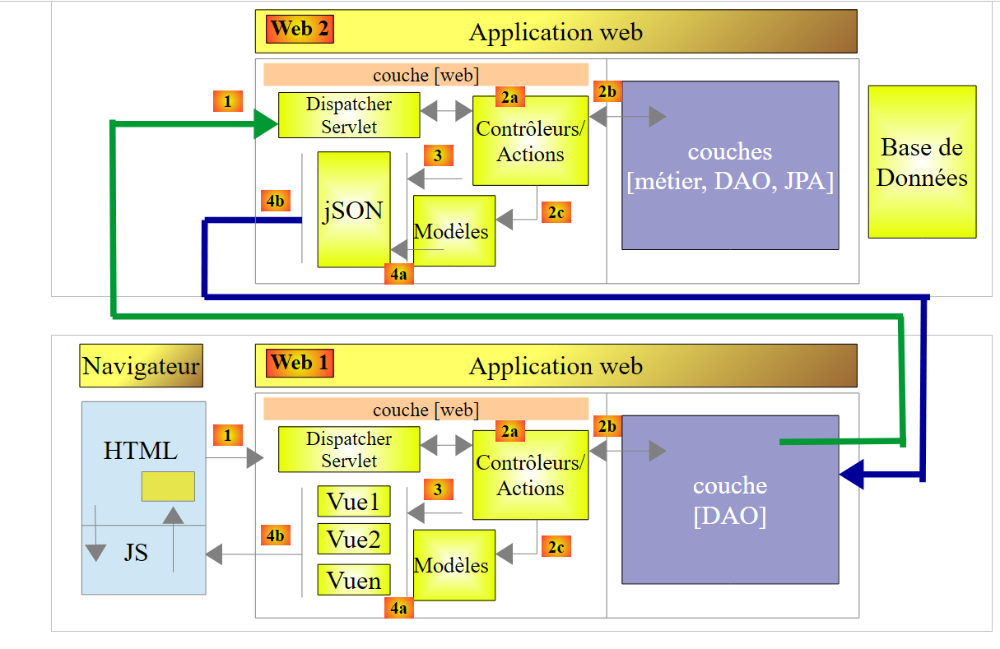 |
The browser will connect to a [Web 1] application implemented with Spring MVC, which will retrieve its data from a [Web 2] web service also implemented with Spring MVC.
8.2. Application Features
Readers are invited to explore the application’s features by testing it. We load the Maven projects from the [case-study] folder into STS:
 |  |
First, we will create the MySQL 5 database [dbrdvmedecins] using the [Wamp Server] tool (see section 9.5):
 |
- In [1], select the [phpMyAdmin] tool from WampServer;
- In [2], select the [Import] option;
 |
- In [3], select the file [database/dbrdvmedecins.sql];
- in [4], run it;
- in [5], the database is created.
Next, we need to start the server connected to the database. This is the [rdvmedecins-webjson-server] project
 |
The server will be available at the URL [http://localhost:8080]. This can be changed in the project’s [application.properties] file:
 |
server.port=8080
The database access credentials are stored in the [DomainAndPersistenceConfig] class of the [rdvmedecins-metier-dao] project:
 |
// the MySQL data source
@Bean
public DataSource dataSource() {
BasicDataSource dataSource = new BasicDataSource();
dataSource.setDriverClassName("com.mysql.jdbc.Driver");
dataSource.setUrl("jdbc:mysql://localhost:3306/dbrdvmedecins");
dataSource.setUsername("root");
dataSource.setPassword("");
return dataSource;
}
If you access the MySQL database using different credentials, this is where you make the changes.
Next, just like with the previous server, we start the [rdvmedecins-springthymeleaf-server] server:
 |  |
This server is available by default at the URL [http://localhost:8081]. Again, this can be configured in the project’s [application.properties] file:
server.port=8081
Additionally, this server must know the URL of the server connected to the database. This configuration is found in the [AppConfig] class above:
// admin / admin
private final String USER_INIT = "admin";
private final String MDP_USER_INIT = "admin";
// web service root / json
private final String WEBJSON_ROOT = "http://localhost:8080";
// timeout in milliseconds
private final int TIMEOUT = 5000;
// CORS
private final boolean CORS_ALLOWED = true;
If the first server was started on a port other than 8080, you must modify line 5.
Then, using a browser, request the URL [http://localhost:8081/boot.html]:
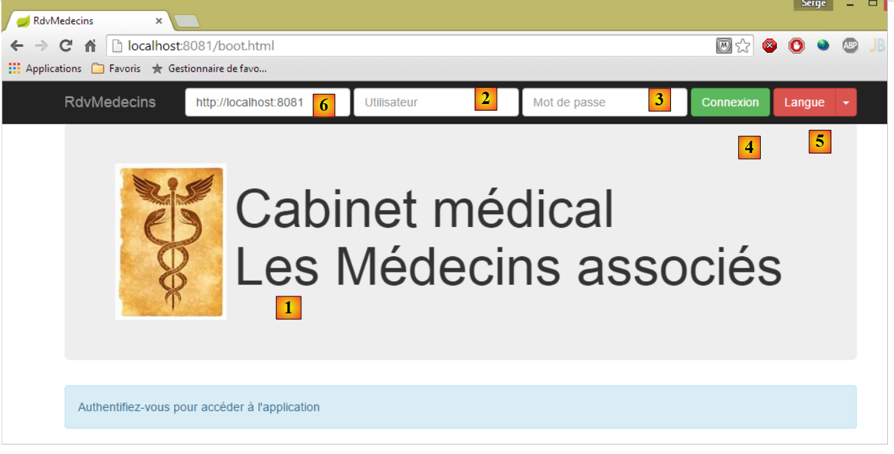 |
- in [1], the application's login page;
- in [2] and [3], the username and password of the user who wants to use the application. There are two users: admin/admin (login/password) with the role (ADMIN) and user/user with the role (USER). Only the ADMIN role has permission to use the application. The USER role is only there to demonstrate the server’s response in this use case;
- in [4], the button that allows you to connect to the server;
- in [5], the application language. There are two options: French (default) and English;
- in [6], the server URL [rdvmedecins-springthymeleaf-server];
 |
- at [1], you log in;
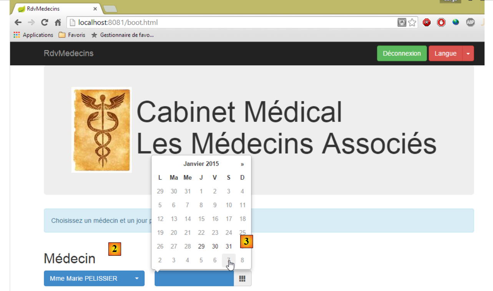 |
- once logged in, you can choose the doctor you want to see [2] and the date of the appointment [3]. As soon as a doctor and a date have been selected, the calendar is automatically displayed:
 |
- once the doctor’s calendar is displayed, you can book a time slot [5];
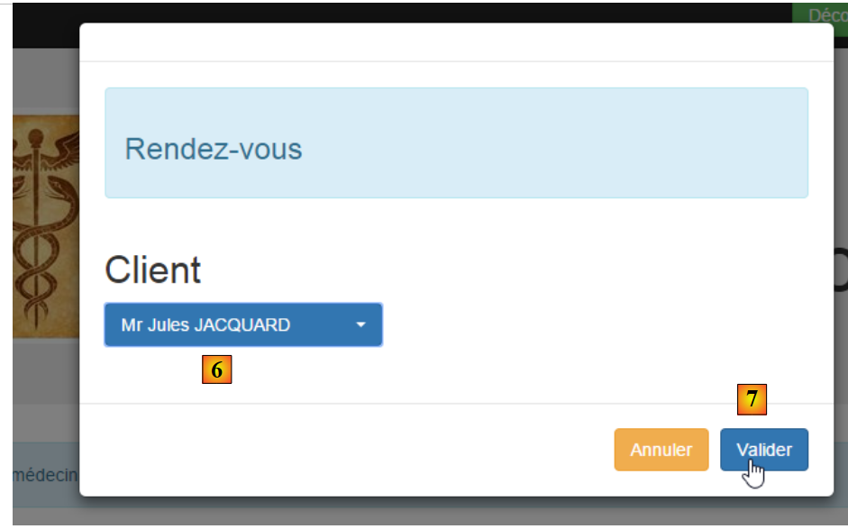 |
- In [6], select the patient for the appointment and confirm your selection in [7];
 |
Once the appointment is confirmed, you are automatically returned to the calendar where the new appointment is now listed. This appointment can be deleted later [8].
The main features have been described. They are simple. Let’s finish with language settings:

- in [1], you switch from French to English;
 |
- In [2], the view switches to English, including the calendar;
8.3. The database
 |
The database, hereafter referred to as [dbrdvmedecins], is a MySQL5 database with the following tables:
 |
Appointments are managed by the following tables:
- [doctors]: contains the list of doctors at the practice;
- [clients]: contains the list of the practice’s patients;
- [slots]: contains the time slots for each doctor;
- [rv]: contains the list of doctors' appointments.
The [roles], [users], and [users_roles] tables are related to authentication. For now, we won’t be dealing with them. The relationships between the tables managing appointments are as follows:
 |
- a time slot belongs to a doctor – a doctor has 0 or more time slots;
- an appointment brings together both a client and a doctor via the doctor’s time slot;
- a client has 0 or more appointments;
- a time slot is associated with 0 or more appointments (on different days).
8.3.1. The [DOCTORS] table
It contains information about the doctors managed by the [RdvMedecins] application.
 |  |
- ID: number identifying the doctor—primary key of the table
- VERSION: number identifying the version of the row in the table. This number is incremented by 1 each time a change is made to the row.
- LAST_NAME: the doctor’s last name
- FIRST_NAME: the doctor's first name
- TITLE: their title (Ms., Mrs., Mr.)
8.3.2. The [CLIENTS] table
The clients of the various doctors are stored in the [CLIENTS] table:
 |  |
- ID: ID number identifying the client - primary key of the table
- VERSION: number identifying the version of the row in the table. This number is incremented by 1 each time a change is made to the row.
- LAST NAME: the client's last name
- FIRST NAME: the client’s first name
- TITLE: their title (Ms., Mrs., Mr.)
8.3.3. The [SLOTS] table
It lists the time slots when appointments are available:
 |
 |
- ID: ID number for the time slot - primary key of the table (row 8)
- VERSION: number identifying the version of the row in the table. This number is incremented by 1 each time a change is made to the row.
- DOCTOR_ID: ID number identifying the doctor to whom this time slot belongs – foreign key on the DOCTORS(ID) column.
- START_TIME: start time of the time slot
- MSTART: Start minute of the time slot
- HFIN: slot end time
- MFIN: End minutes of the slot
The second row of the [SLOTS] table (see [1] above) indicates, for example, that slot #2 begins at 8:20 a.m. and ends at 8:40 a.m. and belongs to doctor #1 (Ms. Marie PELISSIER).
8.3.4. The [RV] table
It lists the appointments booked for each doctor:
 |
- ID: unique identifier for the appointment – primary key
- DAY: day of the appointment
- SLOT_ID: appointment time slot – foreign key on the [ID] field of the [SLOTS] table – determines both the time slot and the doctor involved.
- CLIENT_ID: ID of the client for whom the reservation was made – foreign key on the [ID] field of the [CLIENTS] table
This table has a uniqueness constraint on the values of the joined columns (DAY, SLOT_ID):
If a row in the [RV] table has the value (DAY1, SLOT_ID1) for the columns (DAY, SLOT_ID), this value cannot appear anywhere else. Otherwise, this would mean that two appointments were booked at the same time for the same doctor. From a Java programming perspective, the database’s JDBC driver throws an SQLException when this occurs.
The row with ID equal to 3 (see [1] above) means that an appointment was booked for slot #20 and client #4 on 08/23/2006. The [SLOTS] table tells us that slot #20 corresponds to the time slot 4:20 PM – 4:40 PM and belongs to doctor #1 (Ms. Marie PELISSIER). The [CLIENTS] table tells us that client #4 is Ms. Brigitte BISTROU.
8.3.5. Creating the Database
To create the [dbrdvmedecins] database, a script [dbrdvmedecins.sql] is provided with the examples in this document [1-3]:
 |
We use the [PhpMyAdmin] tool from WampServer:
 |
- In [1], select the [phpMyAdmin] tool from WampServer;
- in [2], select the [Import] option;
 |
- in [3], select the [database/dbrdvmedecins.sql] file;
- in [4], run it;
- in [5], the database is created.
8.4. The Web Service / JSON
 |
In the architecture above, we will now address the construction of the web service / JSON built with the Spring MVC framework. We will write it in several steps:
- first, the [business] and [DAO] (Data Access Object) layers. We will use Spring Data here;
- Next, the JSON web service without authentication. We'll use Spring MVC here;
- then we will add the authentication component using Spring Security.
The following is a reproduction of the document [http://tahe.developpez.com/angularjs-spring4/] with a few modifications.
8.4.1. Introduction to Spring Data
We will implement the [DAO] layer of the project using Spring Data, a component of the Spring ecosystem.
 |
The Spring website offers numerous tutorials to get started with Spring [http://spring.io/guides]. We will use one of them to introduce Spring Data. For this, we will use Spring Tool Suite (STS).
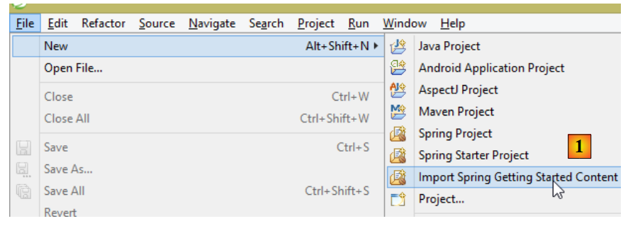 |
- In [1], we import one of the tutorials from [spring.io/guides];
 |
- In [2], we select the [Accessing Data JPA] tutorial, which demonstrates how to access a database using Spring Data;
- In [3], we select a project configured by Maven;
- in [4], the tutorial is available in two forms: [initial], which is an empty version that you fill in by following the tutorial, or [complete], which is the final version of the tutorial. We choose the latter;
- In [5], you can choose to view the tutorial in a browser;
- In [6], the final project.
8.4.1.1. The project’s Maven configuration
The project’s Maven dependencies are configured in the [pom.xml] file:
<groupId>org.springframework</groupId>
<artifactId>gs-accessing-data-jpa</artifactId>
<version>0.1.0</version>
<parent>
<groupId>org.springframework.boot</groupId>
<artifactId>spring-boot-starter-parent</artifactId>
<version>1.1.10.RELEASE</version>
</parent>
<dependencies>
<dependency>
<groupId>org.springframework.boot</groupId>
<artifactId>spring-boot-starter-data-jpa</artifactId>
</dependency>
<dependency>
<groupId>com.h2database</groupId>
<artifactId>h2</artifactId>
</dependency>
</dependencies>
<properties>
<!-- use UTF-8 for everything -->
<project.build.sourceEncoding>UTF-8</project.build.sourceEncoding>
<project.reporting.outputEncoding>UTF-8</project.reporting.outputEncoding>
<start-class>hello.Application</start-class>
</properties>
- lines 5–9: define a parent Maven project. This project defines most of the project’s dependencies. They may be sufficient, in which case no additional dependencies are added, or they may not be, in which case the missing dependencies are added;
- lines 12–15: define a dependency on [spring-boot-starter-data-jpa]. This artifact contains the Spring Data classes;
- Lines 16–19: define a dependency on the H2 DBMS, which allows you to create and manage in-memory databases.
Let’s look at the classes provided by these dependencies:
 |  |  |
There are many of them:
- some belong to the Spring ecosystem (those starting with spring);
- Others are part of the Hibernate ecosystem (Hibernate, JBoss), and we use the JPA implementation here;
- others are testing libraries (JUnit, Hamcrest);
- others are logging libraries (log4j, logback, slf4j);
We will keep them all. For a production application, only the necessary ones should be kept.
On line 26 of the [pom.xml] file, we find the line:
<start-class>hello.Application</start-class>
This line is linked to the following lines:
<build>
<plugins>
<plugin>
<artifactId>maven-compiler-plugin</artifactId>
</plugin>
<plugin>
<groupId>org.springframework.boot</groupId>
<artifactId>spring-boot-maven-plugin</artifactId>
</plugin>
</plugins>
</build>
Lines 6–9: The [spring-boot-maven-plugin] allows you to generate the application’s executable JAR. Line 26 of the [pom.xml] file then specifies the executable class of this JAR.
8.4.1.2. The [JPA] layer
Database access is handled through a [JPA] layer, the Java Persistence API:
 |
 |
The application is basic and manages [Customer] entities. The [Customer] class is part of the [JPA] layer and is as follows:
package hello;
import javax.persistence.Entity;
import javax.persistence.GeneratedValue;
import javax.persistence.GenerationType;
import javax.persistence.Id;
@Entity
public class Customer {
@Id
@GeneratedValue(strategy = GenerationType.AUTO)
private long id;
private String firstName;
private String lastName;
protected Customer() {
}
public Customer(String firstName, String lastName) {
this.firstName = firstName;
this.lastName = lastName;
}
@Override
public String toString() {
return String.format("Customer[id=%d, firstName='%s', lastName='%s']", id, firstName, lastName);
}
}
A customer has an ID [id], a first name [firstName], and a last name [lastName]. Each [Customer] instance represents a row in a database table.
- line 8: JPA annotation that ensures the persistence of [Customer] instances (Create, Read, Update, Delete) will be managed by a JPA implementation. Based on the Maven dependencies, we can see that the JPA/Hibernate implementation is being used;
- Lines 11–12: JPA annotations that associate the [id] field with the primary key of the [Customer] table. Line 12 indicates that the JPA implementation will use the primary key generation method specific to the DBMS being used, in this case H2;
There are no other JPA annotations. Default values will therefore be used:
- the [Customer] table will be named after the class, i.e., [Customer];
- the columns of this table will have the names of the class fields: [id, firstName, lastName], noting that case is not taken into account in table column names;
Note that the JPA implementation used is never mentioned.
8.4.1.3. The [DAO] layer
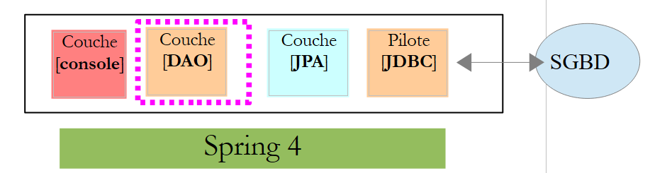 |
 |
The [CustomerRepository] class implements the [DAO] layer. Its code is as follows:
package hello;
import java.util.List;
import org.springframework.data.repository.CrudRepository;
public interface CustomerRepository extends CrudRepository<Customer, Long> {
List<Customer> findByLastName(String lastName);
}
This is therefore an interface and not a class (line 7). It extends the [CrudRepository] interface, a Spring Data interface (line 5). This interface is parameterized by two types: the first is the type of the managed elements, here the [Customer] type; the second is the type of the primary key of the managed elements, here a [Long] type. The [CrudRepository] interface is as follows:
package org.springframework.data.repository;
import java.io.Serializable;
@NoRepositoryBean
public interface CrudRepository<T, ID extends Serializable> extends Repository<T, ID> {
<S extends T> S save(S entity);
<S extends T> Iterable<S> save(Iterable<S> entities);
T findOne(ID id);
boolean exists(ID id);
Iterable<T> findAll();
Iterable<T> findAll(Iterable<ID> ids);
long count();
void delete(ID id);
void delete(T entity);
void delete(Iterable<? extends T> entities);
void deleteAll();
}
This interface defines the CRUD (Create – Read – Update – Delete) operations that can be performed on a JPA T type:
- Line 8: The save method allows you to persist a T entity in the database. It persists the entity using the primary key assigned to it by the DBMS. It also allows you to update a T entity identified by its primary key id. The choice between these two actions depends on the value of the primary key id: if it is null, the persistence operation occurs; otherwise, the update operation occurs;
- line 10: same as above, but for a list of entities;
- line 12: the findOne method retrieves an entity T identified by its primary key id;
- line 22: the delete method allows you to delete an entity T identified by its primary key id;
- lines 24–28: variations of the [delete] method;
- line 16: the [findAll] method retrieves all persisted T entities;
- line 18: same as above, but limited to entities for which a list of identifiers has been provided;
Let’s return to the [CustomerRepository] interface:
package hello;
import java.util.List;
import org.springframework.data.repository.CrudRepository;
public interface CustomerRepository extends CrudRepository<Customer, Long> {
List<Customer> findByLastName(String lastName);
}
- Line 9 allows you to retrieve a [Customer] by its [lastName];
And that’s it for the [DAO] layer. There is no implementation class for the previous interface. It is generated at runtime by [Spring Data]. The methods of the [CrudRepository] interface are automatically implemented. For the methods added to the [CustomerRepository] interface, it depends. Let’s go back to the definition of [Customer]:
private long id;
private String firstName;
private String lastName;
The method on line 9 is automatically implemented by [Spring Data] because it references the [lastName] field (line 3) of [Customer]. When it encounters a [findBySomething] method in the interface to be implemented, Spring Data implements it using the following JPQL (Java Persistence Query Language) query:
Therefore, the type T must have a field named [something]. Thus, the method
will be implemented with code similar to the following:
return [em].createQuery("select c from Customer c where c.lastName=:value").setParameter("value",lastName).getResultList()
where [em] refers to the JPA persistence context. This is only possible if the [Customer] class has a field named [lastName], which it does.
In conclusion, in simple cases, Spring Data allows us to implement the [DAO] layer with a simple interface.
8.4.1.4. The [console] layer
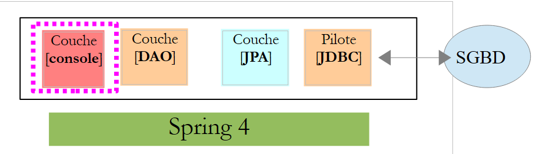 |
 |
The [Application] class is as follows:
package hello;
import java.util.List;
import org.springframework.boot.SpringApplication;
import org.springframework.boot.autoconfigure.EnableAutoConfiguration;
import org.springframework.context.ConfigurableApplicationContext;
import org.springframework.context.annotation.Configuration;
@Configuration
@EnableAutoConfiguration
public class Application {
public static void main(String[] args) {
ConfigurableApplicationContext context = SpringApplication.run(Application.class);
CustomerRepository repository = context.getBean(CustomerRepository.class);
// save a couple of customers
repository.save(new Customer("Jack", "Bauer"));
repository.save(new Customer("Chloe", "O'Brian"));
repository.save(new Customer("Kim", "Bauer"));
repository.save(new Customer("David", "Palmer"));
repository.save(new Customer("Michelle", "Dessler"));
// fetch all customers
Iterable<Customer> customers = repository.findAll();
System.out.println("Customers found with findAll():");
System.out.println("-------------------------------");
for (Customer customer : customers) {
System.out.println(customer);
}
System.out.println();
// fetch an individual customer by ID
Customer customer = repository.findOne(1L);
System.out.println("Customer found with findOne(1L):");
System.out.println("--------------------------------");
System.out.println(customer);
System.out.println();
// fetch customers by last name
List<Customer> bauers = repository.findByLastName("Bauer");
System.out.println("Customer found with findByLastName('Bauer'):");
System.out.println("--------------------------------------------");
for (Customer bauer : bauers) {
System.out.println(bauer);
}
context.close();
}
}
- Line 10: indicates that the class is used to configure Spring. Recent versions of Spring can indeed be configured in Java rather than in XML. Both methods can be used simultaneously. In the code of a class annotated with [Configuration], we normally find Spring beans, i.e., class definitions to be instantiated. Here, no beans are defined. It is important to note here that when working with a DBMS, various Spring beans must be defined:
- an [EntityManagerFactory] that defines the JPA implementation to use,
- a [DataSource] that defines the data source to use,
- a [TransactionManager] that defines the transaction manager to use;
Here, none of these beans are defined.
- Line 11: The [EnableAutoConfiguration] annotation is an annotation from the [Spring Boot] project (lines 5–6). This annotation instructs Spring Boot via the [SpringApplication] class (line 16) to configure the application based on the libraries found in its classpath. Because the Hibernate library s are in the Classpath, the [entityManagerFactory] bean will be implemented with Hibernate. Because the H2 DBMS library is in the Classpath, the [dataSource] bean will be implemented with H2. In the [dataSource] bean, we must also define the username and password. Here, Spring Boot will use the default H2 administrator, which has no password. Because the [spring-tx] library is in the classpath, Spring’s transaction manager will be used.
Additionally, the directory containing the [Application] class will be scanned for beans implicitly recognized by Spring or explicitly defined by Spring annotations. Thus, the [Customer] and [CustomerRepository] classes will be inspected. Because the first has the [@Entity] annotation, it will be cataloged as an entity to be managed by Hibernate. Because the second extends the [CrudRepository] interface, it will be registered as a Spring bean.
Let’s examine lines 16–17 of the code:
ConfigurableApplicationContext context = SpringApplication.run(Application.class);
CustomerRepository repository = context.getBean(CustomerRepository.class);
- Line 16: The static [run] method of the [SpringApplication] class in the Spring Boot project is executed. Its parameter is the class that has a [Configuration] or [EnableAutoConfiguration] annotation. Everything explained previously will then take place. The result is a Spring application context, i.e., a set of beans managed by Spring;
- Line 17: We request a bean implementing the [CustomerRepository] interface from this Spring context. Here, we retrieve the class generated by Spring Data to implement this interface.
The following operations simply use the methods of the bean implementing the [CustomerRepository] interface. Note on line 50 that the context is closed. The console output is as follows:
. ____ _ __ _ _
/\\ / ___'_ __ _ _(_)_ __ __ _ \ \ \ \
( ( )\___ | '_ | '_| | '_ \/ _` | \ \ \ \
\\/ ___)| |_)| | | | | || (_| | ) ) ) )
' |____| .__|_| |_|_| |_\__, | / / / /
=========|_|==============|___/=/_/_/_/
:: Spring Boot :: (v1.1.10.RELEASE)
2014-12-19 11:13:46.612 INFO 10932 --- [ main] hello.Application : Starting Application on Gportpers3 with PID 10932 (started by ST in D:\data\istia-1415\spring mvc\dvp-final\etude-de-cas\gs-accessing-data-jpa-complete)
2014-12-19 11:13:46.658 INFO 10932 --- [ main] s.c.a.AnnotationConfigApplicationContext : Refreshing org.springframework.context.annotation.AnnotationConfigApplicationContext@279ad2e3: startup date [Fri Dec 19 11:13:46 CET 2014]; root of context hierarchy
2014-12-19 11:13:48.234 INFO 10932 --- [ main] j.LocalContainerEntityManagerFactoryBean : Building JPA container EntityManagerFactory for persistence unit 'default'
2014-12-19 11:13:48.258 INFO 10932 --- [ main] o.hibernate.jpa.internal.util.LogHelper : HHH000204: Processing PersistenceUnitInfo [
name: default
...]
2014-12-19 11:13:48.337 INFO 10932 --- [ main] org.hibernate.Version : HHH000412: Hibernate Core {4.3.7.Final}
2014-12-19 11:13:48.339 INFO 10932 --- [ main] org.hibernate.cfg.Environment : HHH000206: hibernate.properties not found
2014-12-19 11:13:48.341 INFO 10932 --- [ main] org.hibernate.cfg.Environment : HHH000021: Bytecode provider name : javassist
2014-12-19 11:13:48.620 INFO 10932 --- [ main] o.hibernate.annotations.common.Version : HCANN000001: Hibernate Commons Annotations {4.0.5.Final}
2014-12-19 11:13:48.689 INFO 10932 --- [ main] org.hibernate.dialect.Dialect : HHH000400: Using dialect: org.hibernate.dialect.H2Dialect
2014-12-19 11:13:48.853 INFO 10932 --- [ main] o.h.h.i.ast.ASTQueryTranslatorFactory : HHH000397: Using ASTQueryTranslatorFactory
2014-12-19 11:13:49.143 INFO 10932 --- [ main] org.hibernate.tool.hbm2ddl.SchemaExport : HHH000227: Running hbm2ddl schema export
2014-12-19 11:13:49.151 INFO 10932 --- [ main] org.hibernate.tool.hbm2ddl.SchemaExport : HHH000230: Schema export complete
2014-12-19 11:13:49.692 INFO 10932 --- [ main] o.s.j.e.a.AnnotationMBeanExporter : Registering beans for JMX exposure on startup
2014-12-19 11:13:49.709 INFO 10932 --- [ main] hello.Application : Started Application in 3.461 seconds (JVM running for 4.435)
Customers found with findAll():
-------------------------------
Customer[id=1, firstName='Jack', lastName='Bauer']
Customer[id=2, firstName='Chloe', lastName='O'Brian']
Customer[id=3, firstName='Kim', lastName='Bauer']
Customer[id=4, firstName='David', lastName='Palmer']
Customer[id=5, firstName='Michelle', lastName='Dessler']
Customer found with findOne(1L):
--------------------------------
Customer[id=1, firstName='Jack', lastName='Bauer']
Customer found with findByLastName('Bauer'):
--------------------------------------------
Customer[id=1, firstName='Jack', lastName='Bauer']
Customer[id=3, firstName='Kim', lastName='Bauer']
2014-12-19 11:13:49.931 INFO 10932 --- [ main] s.c.a.AnnotationConfigApplicationContext : Closing org.springframework.context.annotation.AnnotationConfigApplicationContext@279ad2e3: startup date [Fri Dec 19 11:13:46 CET 2014]; root of context hierarchy
2014-12-19 11:13:49.933 INFO 10932 --- [ main] o.s.j.e.a.AnnotationMBeanExporter : Unregistering JMX-exposed beans on shutdown
2014-12-19 11:13:49.934 INFO 10932 --- [ main] j.LocalContainerEntityManagerFactoryBean : Closing JPA EntityManagerFactory for persistence unit 'default'
2014-12-19 11:13:49.935 INFO 10932 --- [ main] org.hibernate.tool.hbm2ddl.SchemaExport : HHH000227: Running hbm2ddl schema export
2014-12-19 11:13:49.938 INFO 10932 --- [ main] org.hibernate.tool.hbm2ddl.SchemaExport : HHH000230: Schema export complete
- lines 1-8: the Spring Boot project logo;
- line 9: the [hello.Application] class is executed;
- line 10: [AnnotationConfigApplicationContext] is a class implementing Spring’s [ApplicationContext] interface. It is a bean container;
- line 11: the [entityManagerFactory] bean is implemented using the [LocalContainerEntityManagerFactory] class, a Spring class;
- line 15: [Hibernate] appears. This is the JPA implementation that has been chosen;
- line 19: a Hibernate dialect is the SQL variant to be used with the DBMS. Here, the [H2Dialect] dialect indicates that Hibernate will work with the H2 DBMS;
- lines 21–22: the database is created. The [CUSTOMER] table is created. This means that Hibernate has been configured to generate tables from JPA definitions, in this case the JPA definition of the [Customer] class;
- lines 27–31: the five customers are inserted;
- lines 33–35: result of the [findOne] method of the interface;
- lines 37–40: results of the [findByLastName] method;
- Lines 41 and following: logs from the Spring context closure.
8.4.1.5. Manual configuration of the Spring Data project
We duplicate the previous project into the [gs-accessing-data-jpa-2] project:
 |
In this new project, we will not rely on the automatic configuration provided by Spring Boot. We will configure it manually. This can be useful if the default configurations do not suit our needs.
First, we will specify the necessary dependencies in the [pom.xml] file:
...
<dependencies>
<!-- Spring Core -->
<dependency>
<groupId>org.springframework</groupId>
<artifactId>spring-core</artifactId>
<version>4.1.2.RELEASE</version>
</dependency>
<dependency>
<groupId>org.springframework</groupId>
<artifactId>spring-context</artifactId>
<version>4.1.2.RELEASE</version>
</dependency>
<dependency>
<groupId>org.springframework</groupId>
<artifactId>spring-beans</artifactId>
<version>4.1.2.RELEASE</version>
</dependency>
<!-- Spring transactions -->
<dependency>
<groupId>org.springframework</groupId>
<artifactId>spring-orm</artifactId>
<version>4.1.2.RELEASE</version>
</dependency>
<dependency>
<groupId>org.springframework</groupId>
<artifactId>spring-aop</artifactId>
<version>4.1.2.RELEASE</version>
</dependency>
<!-- Spring ORM -->
<dependency>
<groupId>org.springframework</groupId>
<artifactId>spring-tx</artifactId>
<version>4.1.2.RELEASE</version>
</dependency>
<!-- Spring Data -->
<dependency>
<groupId>org.springframework.data</groupId>
<artifactId>spring-data-jpa</artifactId>
<version>1.7.1.RELEASE</version>
</dependency>
<!-- Spring Boot -->
<dependency>
<groupId>org.springframework.boot</groupId>
<artifactId>spring-boot</artifactId>
<version>1.1.10.RELEASE</version>
</dependency>
<!-- Hibernate -->
<dependency>
<groupId>org.hibernate</groupId>
<artifactId>hibernate-entitymanager</artifactId>
<version>4.3.4.Final</version>
</dependency>
<!-- H2 Database -->
<dependency>
<groupId>com.h2database</groupId>
<artifactId>h2</artifactId>
<version>1.4.178</version>
</dependency>
<!-- Commons DBCP -->
<dependency>
<groupId>commons-dbcp</groupId>
<artifactId>commons-dbcp</artifactId>
<version>1.4</version>
</dependency>
<dependency>
<groupId>commons-pool</groupId>
<artifactId>commons-pool</artifactId>
<version>1.6</version>
</dependency>
</dependencies>
...
</project>
- lines 2–18: Spring core libraries;
- lines 19–29: Spring libraries for managing database transactions;
- lines 30–35: the Spring library for working with an ORM (Object Relational Mapper);
- lines 36–41: Spring Data used to access the database;
- lines 42–47: Spring Boot to launch the application;
- lines 54–59: the H2 DBMS;
- lines 60–70: databases are often used with connection pools, which avoid repeatedly opening and closing connections. Here, the implementation used is [commons-dbcp];
Still in [pom.xml], we change the name of the executable class:
<properties>
...
<start-class>demo.console.Main</start-class>
</properties>
In the new project, the [Customer] entity and the [CustomerRepository] interface remain unchanged. We will modify the [Application] class, which will be split into two classes:
- [Config], which will be the configuration class:
- [Main], which will be the executable class;
 |
The executable class [Main] is the same as before, without the configuration annotations:
package demo.console;
import java.util.List;
import org.springframework.boot.SpringApplication;
import org.springframework.context.ConfigurableApplicationContext;
import demo.config.Config;
import demo.entities.Customer;
import demo.repositories.CustomerRepository;
public class Main {
public static void main(String[] args) {
ConfigurableApplicationContext context = SpringApplication.run(Config.class);
CustomerRepository repository = context.getBean(CustomerRepository.class);
...
context.close();
}
}
- line 12: the [Main] class no longer has any configuration annotations;
- line 16: the application is launched with Spring Boot. The [Config.class] parameter is the project’s new configuration class;
The [Config] class that configures the project is as follows:
package demo.config;
import javax.persistence.EntityManagerFactory;
import javax.sql.DataSource;
import org.apache.commons.dbcp.BasicDataSource;
import org.springframework.context.annotation.Bean;
import org.springframework.context.annotation.Configuration;
import org.springframework.data.jpa.repository.config.EnableJpaRepositories;
import org.springframework.orm.jpa.JpaTransactionManager;
import org.springframework.orm.jpa.JpaVendorAdapter;
import org.springframework.orm.jpa.LocalContainerEntityManagerFactoryBean;
import org.springframework.orm.jpa.vendor.Database;
import org.springframework.orm.jpa.vendor.HibernateJpaVendorAdapter;
import org.springframework.transaction.PlatformTransactionManager;
import org.springframework.transaction.annotation.EnableTransactionManagement;
//@ComponentScan(basePackages = { "demo" })
//@EntityScan(basePackages = { "demo.entities" })
@EnableTransactionManagement
@EnableJpaRepositories(basePackages = { "demo.repositories" })
@Configuration
public class Config {
// the H2 database
@Bean
public DataSource dataSource() {
BasicDataSource dataSource = new BasicDataSource();
dataSource.setDriverClassName("org.h2.Driver");
dataSource.setUrl("jdbc:h2:./demo");
dataSource.setUsername("sa");
dataSource.setPassword("");
return dataSource;
}
// the JPA provider
@Bean
public JpaVendorAdapter jpaVendorAdapter() {
HibernateJpaVendorAdapter hibernateJpaVendorAdapter = new HibernateJpaVendorAdapter();
hibernateJpaVendorAdapter.setShowSql(false);
hibernateJpaVendorAdapter.setGenerateDdl(true);
hibernateJpaVendorAdapter.setDatabase(Database.H2);
return hibernateJpaVendorAdapter;
}
// EntityManagerFactory
@Bean
public EntityManagerFactory entityManagerFactory(JpaVendorAdapter jpaVendorAdapter, DataSource dataSource) {
LocalContainerEntityManagerFactoryBean factory = new LocalContainerEntityManagerFactoryBean();
factory.setJpaVendorAdapter(jpaVendorAdapter);
factory.setPackagesToScan("demo.entities");
factory.setDataSource(dataSource);
factory.afterPropertiesSet();
return factory.getObject();
}
// Transaction manager
@Bean
public PlatformTransactionManager transactionManager(EntityManagerFactory entityManagerFactory) {
JpaTransactionManager txManager = new JpaTransactionManager();
txManager.setEntityManagerFactory(entityManagerFactory);
return txManager;
}
}
- line 22: the [@Configuration] annotation makes the [Config] class a Spring configuration class;
- line 21: the [@EnableJpaRepositories] annotation specifies the directories where the Spring Data [CrudRepository] interfaces are located. These interfaces will become Spring components and be available in its context;
- line 20: the [@EnableTransactionManagement] annotation indicates that the methods of the [CrudRepository] interfaces must be executed within a transaction;
- line 19: the [@EntityScan] annotation specifies the directories where JPA entities should be searched for. Here it has been commented out because this information was explicitly provided on line 50. This annotation should be present if using [@EnableAutoConfiguration] mode and the JPA entities are not in the same directory as the configuration class;
- line 18: the [@ComponentScan] annotation allows you to list the directories where Spring components should be searched for. Spring components are classes tagged with Spring annotations such as @Service, @Component, @Controller, etc. Here, there are no others besides those defined within the [Config] class, so the annotation has been commented out;
- Lines 25–33: define the data source, the H2 database. It is the @Bean annotation on line 25 that makes the object created by this method a Spring-managed component. The method name here can be anything. However, it must be named [dataSource] if the EntityManagerFactory on line 47 is absent and defined via auto-configuration;
- line 29: the database will be named [demo] and will be generated in the project folder;
- Lines 36–43: define the JPA implementation used, in this case a Hibernate implementation. The method name can be anything here;
- line 39: no SQL logs;
- line 30: the database will be created if it does not exist;
- lines 46–54: define the EntityManagerFactory that will manage JPA persistence. The method must be named [entityManagerFactory];
- line 47: the method receives two parameters of the types of the two beans defined previously. These will then be constructed and injected by Spring as method parameters;
- line 49: sets the JPA implementation to be used;
- line 50: specifies the directories where the JPA entities can be found;
- line 51: sets the data source to be managed;
- lines 57–62: the transaction manager. The method must be named [transactionManager]. It receives the bean from lines 46–54 as a parameter;
- line 60: the transaction manager is associated with the EntityManagerFactory;
The preceding methods can be defined in any order.
Running the project yields the same results. A new file appears in the project folder, the H2 database file:
 |
Finally, we can do without Spring Boot. We create a second executable class [Main2]:
 |
The [Main2] class has the following code:
package demo.console;
import java.util.List;
import org.springframework.context.annotation.AnnotationConfigApplicationContext;
import demo.config.Config;
import demo.entities.Customer;
import demo.repositories.CustomerRepository;
public class Main2 {
public static void main(String[] args) {
AnnotationConfigApplicationContext context = new AnnotationConfigApplicationContext(Config.class);
CustomerRepository repository = context.getBean(CustomerRepository.class);
....
context.close();
}
}
- Line 15: The configuration class [Config] is now used by the Spring class [AnnotationConfigApplicationContext]. As seen on line 5, there are no longer any dependencies on Spring Boot.
Execution yields the same results as before.
8.4.1.6. Creating an executable archive
To create an executable archive of the project, proceed as follows:
 |
- in [1]: create a runtime configuration;
- in [2]: of type [Java Application]
- in [3]: specify the project to run (use the Browse button);
- in [4]: specify the class to run;
- in [5]: the name of the run configuration – can be anything;
 |
- in [6]: export the project;
- in [7]: as an executable JAR archive;
- in [8]: specify the path and name of the executable file to be created;
- in [9]: the name of the run configuration created in [5];
Once this is done, open a console in the folder containing the executable archive:
The archive is run as follows:
.....\dist>java -jar gs-accessing-data-jpa-2.jar
The results displayed in the console are as follows:
SLF4J: Failed to load class "org.slf4j.impl.StaticLoggerBinder".
SLF4J: Defaulting to no-operation (NOP) logger implementation
SLF4J: See http://www.slf4j.org/codes.html#StaticLoggerBinder for further details.
June 12, 2014 9:48:38 AM org.hibernate.ejb.HibernatePersistence logDeprecation
WARN: HHH015016: Encountered a deprecated javax.persistence.spi.PersistenceProvider [org.hibernate.ejb.HibernatePersistence]; use [org.hibernate.jpa.HibernatePersistenceProvider] instead.
June 12, 2014 9:48:38 AM org.hibernate.jpa.internal.util.LogHelper logPersistenceUnitInformation
INFO: HHH000204: Processing PersistenceUnitInfo [
name: default
...]
June 12, 2014 9:48:38 AM org.hibernate.Version logVersion
INFO: HHH000412: Hibernate Core {4.3.4.Final}
June 12, 2014 9:48:38 AM org.hibernate.cfg.Environment <clinit>
INFO: HHH000206: hibernate.properties not found
June 12, 2014 9:48:38 AM org.hibernate.cfg.Environment buildBytecodeProvider
INFO: HHH000021: Bytecode provider name: javassist
June 12, 2014 9:48:39 AM org.hibernate.annotations.common.reflection.java.JavaReflectionManager <clinit>
INFO: HCANN000001: Hibernate Commons Annotations {4.0.4.Final}
June 12, 2014 9:48:39 AM org.hibernate.dialect.Dialect <init>
INFO: HHH000400: Using dialect: org.hibernate.dialect.H2Dialect
June 12, 2014 9:48:39 AM org.hibernate.hql.internal.ast.ASTQueryTranslatorFactory <init>
INFO: HHH000397: Using ASTQueryTranslatorFactory
June 12, 2014 9:48:40 AM org.hibernate.tool.hbm2ddl.SchemaUpdate execute
INFO: HHH000228: Running hbm2ddl schema update
June 12, 2014 9:48:40 AM org.hibernate.tool.hbm2ddl.SchemaUpdate execute
INFO: HHH000102: Fetching database metadata
June 12, 2014 9:48:40 AM org.hibernate.tool.hbm2ddl.SchemaUpdate execute
INFO: HHH000396: Updating schema
June 12, 2014 9:48:40 AM org.hibernate.tool.hbm2ddl.DatabaseMetadata getTableMetadata
INFO: HHH000262: Table not found: Customer
June 12, 2014 9:48:40 AM org.hibernate.tool.hbm2ddl.DatabaseMetadata getTableMetadata
INFO: HHH000262: Table not found: Customer
June 12, 2014 9:48:40 AM org.hibernate.tool.hbm2ddl.DatabaseMetadata getTableMetadata
INFO: HHH000262: Table not found: Customer
June 12, 2014 9:48:40 AM org.hibernate.tool.hbm2ddl.SchemaUpdate execute
INFO: HHH000232: Schema update complete
Customers found with findAll():
-------------------------------
Customer[id=1, firstName='Jack', lastName='Bauer']
Customer[id=2, firstName='Chloe', lastName='O'Brian']
Customer[id=3, firstName='Kim', lastName='Bauer']
Customer[id=4, firstName='David', lastName='Palmer']
Customer[id=5, firstName='Michelle', lastName='Dessler']
Customer found with findOne(1L):
--------------------------------
Customer[id=1, firstName='Jack', lastName='Bauer']
Customer found with findByLastName('Bauer'):
--------------------------------------------
Customer[id=1, firstName='Jack', lastName='Bauer']
Customer[id=3, firstName='Kim', lastName='Bauer']
8.4.1.7. Create a new Spring Data project
To create a Spring Data project template, follow these steps:
 |
- In [1], create a new project;
- in [2]: select [Spring Starter Project];
- The generated project will be a Maven project. In [3], specify the project group name;
- In [4], specify the name of the artifact (a JAR file in this case) that will be created when the project is built;
- in [5]: specify the package of the executable class that will be created in the project;
- in [6]: the Eclipse name of the project – can be anything (does not have to be the same as [4]);
- in [7]: specify that you are creating a project with a [JPA] layer. The dependencies required for such a project will then be included in the [pom.xml] file;
 |
- in [8]: the created project;
The [pom.xml] file includes the dependencies required for a JPA project:
<parent>
<groupId>org.springframework.boot</groupId>
<artifactId>spring-boot-starter-parent</artifactId>
<version>1.2.0.RELEASE</version>
<relativePath/> <!-- lookup parent from repository -->
</parent>
<dependencies>
<dependency>
<groupId>org.springframework.boot</groupId>
<artifactId>spring-boot-starter-data-jpa</artifactId>
</dependency>
<dependency>
<groupId>org.springframework.boot</groupId>
<artifactId>spring-boot-starter-test</artifactId>
<scope>test</scope>
</dependency>
</dependencies>
- lines 9–12: dependencies required for JPA—will include [Spring Data];
- lines 13–17: dependencies required for JUnit tests integrated with Spring;
The executable class [Application] does nothing but is pre-configured:
package istia.st;
import org.springframework.boot.SpringApplication;
import org.springframework.boot.autoconfigure.EnableAutoConfiguration;
import org.springframework.context.annotation.ComponentScan;
import org.springframework.context.annotation.Configuration;
@Configuration
@ComponentScan
@EnableAutoConfiguration
public class Application {
public static void main(String[] args) {
SpringApplication.run(Application.class, args);
}
}
The test class [ApplicationTests] does nothing but is preconfigured:
package istia.st;
import org.junit.Test;
import org.junit.runner.RunWith;
import org.springframework.boot.test.SpringApplicationConfiguration;
import org.springframework.test.context.junit4.SpringJUnit4ClassRunner;
@RunWith(SpringJUnit4ClassRunner.class)
@SpringApplicationConfiguration(classes = Application.class)
public class ApplicationTests {
@Test
public void contextLoads() {
}
}
- Line 9: The [@SpringApplicationConfiguration] annotation allows the [Application] configuration file to be used. The test class will thus benefit from all the beans defined in this file;
- line 8: the [@RunWith] annotation enables the integration of Spring with JUnit: the class will be able to be executed as a JUnit test. [@RunWith] is a JUnit annotation (line 4), whereas the [SpringJUnit4ClassRunner] class is a Spring class (line 6);
Now that we have a JPA application skeleton, we can complete it to write the server-side persistence layer of our appointment management application.
8.4.2. The Eclipse server project
 |
 |
The main components of the project are as follows:
- [pom.xml]: the project’s Maven configuration file;
- [rdvmedecins.entities]: the JPA entities;
- [rdvmedecins.repositories]: Spring Data interfaces for accessing JPA entities;
- [rdvmedecins.metier]: the [business] layer;
- [rdvmedecins.domain]: the entities handled by the [business] layer;
- [rdvmdecins.config]: the configuration classes of the persistence layer;
- [rdvmedecins.boot]: a basic console application;
8.4.3. The Maven configuration
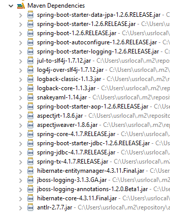 |  |  |
The project's [pom.xml] file is as follows:
<?xml version="1.0" encoding="UTF-8"?>
<project xmlns="http://maven.apache.org/POM/4.0.0" xsi:schemaLocation="http://maven.apache.org/POM/4.0.0 http://maven.apache.org/maven-v4_0_0.xsd"
xmlns:xsi="http://www.w3.org/2001/XMLSchema-instance">
<modelVersion>4.0.0</modelVersion>
<groupId>istia.st.spring4.rdvmedecins</groupId>
<artifactId>rdvmedecins-metier-dao</artifactId>
<version>0.0.1-SNAPSHOT</version>
<parent>
<groupId>org.springframework.boot</groupId>
<artifactId>spring-boot-starter-parent</artifactId>
<version>1.2.6.RELEASE</version>
</parent>
<dependencies>
<!-- Spring Data JPA -->
<dependency>
<groupId>org.springframework.boot</groupId>
<artifactId>spring-boot-starter-data-jpa</artifactId>
</dependency>
<!-- Spring Test -->
<dependency>
<groupId>org.springframework.boot</groupId>
<artifactId>spring-boot-starter-test</artifactId>
<scope>test</scope>
</dependency>
<!-- Spring Security -->
<dependency>
<groupId>org.springframework.boot</groupId>
<artifactId>spring-boot-starter-security</artifactId>
</dependency>
<!-- JDBC / MySQL driver -->
<dependency>
<groupId>mysql</groupId>
<artifactId>mysql-connector-java</artifactId>
</dependency>
<!-- Tomcat JDBC -->
<dependency>
<groupId>org.apache.tomcat</groupId>
<artifactId>tomcat-jdbc</artifactId>
</dependency>
<!-- JSON mapper -->
<dependency>
<groupId>com.fasterxml.jackson.core</groupId>
<artifactId>jackson-databind</artifactId>
</dependency>
<!-- Google Guava -->
<dependency>
<groupId>com.google.guava</groupId>
<artifactId>guava</artifactId>
<version>16.0.1</version>
</dependency>
</dependencies>
<properties>
<!-- Use UTF-8 for everything -->
<project.build.sourceEncoding>UTF-8</project.build.sourceEncoding>
<project.reporting.outputEncoding>UTF-8</project.reporting.outputEncoding>
<start-class>rdvmedecins.boot.Boot</start-class>
<java.version>1.8</java.version>
</properties>
<build>
<plugins>
<plugin>
<groupId>org.springframework.boot</groupId>
<artifactId>spring-boot-maven-plugin</artifactId>
</plugin>
</plugins>
</build>
<repositories>
<repository>
<id>spring-milestones</id>
<name>Spring Milestones</name>
<url>http://repo.spring.io/libs-milestone</url>
<snapshots>
<enabled>false</enabled>
</snapshots>
</repository>
<repository>
<id>org.jboss.repository.releases</id>
<name>JBoss Maven Release Repository</name>
<url>https://repository.jboss.org/nexus/content/repositories/releases</url>
<snapshots>
<enabled>false</enabled>
</snapshots>
</repository>
</repositories>
<pluginRepositories>
<pluginRepository>
<id>spring-milestones</id>
<name>Spring Milestones</name>
<url>http://repo.spring.io/libs-milestone</url>
<snapshots>
<enabled>false</enabled>
</snapshots>
</pluginRepository>
</pluginRepositories>
</project>
- lines 8–12: The project relies on the parent project [spring-boot-starter-parent]. For dependencies already present in the parent project, no version is specified. The version defined in the parent will be used. Other dependencies are declared as usual;
- lines 15–18: for Spring Data;
- lines 20–24: for JUnit tests;
- lines 26–29: for the Spring Security library, whose [DAO] layer uses one of the password encryption classes;
- lines 31–34: JDBC driver for the MySQL5 DBMS;
- lines 36–39: Tomcat JDBC connection pool. A connection pool collects open connections to a database. When the code wants to open a connection, it requests one from the pool. When the code closes the connection, it is not closed but returned to the pool. All of this happens transparently at the code level. Performance is improved because repeatedly opening and closing a connection takes time. Here, the connection pool establishes a certain number of connections to the database upon instantiation. After that, there is no opening or closing of connections, unless the number of connections stored in the pool proves insufficient. In that case, the pool automatically creates new connections;
- lines 41–44: Jackson library for JSON handling;
- lines 46–50: Google Collections library;
8.4.4. JPA Entities
 |
JPA entities are the objects that encapsulate the rows of the database tables.
 |
The [AbstractEntity] class is the parent class of the [Person, Slot, Appointment] entities. Its definition is as follows:
package rdvmedecins.entities;
import java.io.Serializable;
import javax.persistence.GeneratedValue;
import javax.persistence.GenerationType;
import javax.persistence.Id;
import javax.persistence.MappedSuperclass;
import javax.persistence.Version;
@MappedSuperclass
public class AbstractEntity implements Serializable {
private static final long serialVersionUID = 1L;
@Id
@GeneratedValue(strategy = GenerationType.IDENTITY)
protected Long id;
@Version
protected Long version;
@Override
public int hashCode() {
int hash = 0;
hash += (id != null ? id.hashCode() : 0);
return hash;
}
// initialization
public AbstractEntity build(Long id, Long version) {
this.id = id;
this.version = version;
return this;
}
@Override
public boolean equals(Object entity) {
String class1 = this.getClass().getName();
String class2 = entity.getClass().getName();
if (!class2.equals(class1) || entity == null) {
return false;
}
AbstractEntity other = (AbstractEntity) entity;
return this.id.longValue() == other.id.longValue();
}
// getters and setters
..
}
- line 11: the [@MappedSuperclass] annotation indicates that the annotated class is a parent of JPA [@Entity] entities;
- lines 15–17: define the primary key [id] for each entity. It is the [@Id] annotation that makes the [id] field a primary key. The [@GeneratedValue(strategy = GenerationType.IDENTITY)] annotation indicates that the value of this primary key is generated by the DBMS and that the generation mode [IDENTITY] is enforced. For the MySQL DBMS, this means that primary keys will be generated by the DBMS with the [AUTO_INCREMENT] attribute
- Lines 18–19: define the version of each entity. The JPA implementation will increment this version number each time the entity is modified. This number is used to prevent simultaneous updates of the entity by two different users: two users, U1 and U2, read entity E with a version number equal to V1. U1 modifies E and persists this change to the database: the version number then changes to V1+1. U2 modifies E in turn and persists this change to the database: they will receive an exception because their version (V1) differs from the one in the database (V1+1);
- lines 29–33: the [build] method initializes the two fields of [AbstractEntity]. This method returns a reference to the [AbstractEntity] instance thus initialized;
- lines 36–44: The class’s [equals] method is overridden: two entities are considered equal if they have the same class name and the same id identifier;
- lines 21–26: when overriding a class’s [equals] method, its [hashCode] method must also be overridden (lines 21–26). The rule is that two entities deemed equal by the [equals] method must also have the same [hashCode]. Here, an entity’s [hashCode] is equal to its primary key [id]. A class’s [hashCode] is used, in particular, in managing dictionaries whose values are instances of the class;
The [Person] entity is the parent class of the [Doctor] and [Client] entities:
package rdvmedecins.entities;
import javax.persistence.Column;
import javax.persistence.MappedSuperclass;
@MappedSuperclass
public class Person extends AbstractEntity {
private static final long serialVersionUID = 1L;
// attributes of a person
@Column(length = 5)
private String title;
@Column(length = 20)
private String firstName;
@Column(length = 20)
private String firstName;
// default constructor
public Person() {
}
// constructor with parameters
public Person(String title, String lastName, String firstName) {
this.title = title;
this.lastName = lastName;
this.firstName = firstName;
}
// toString
public String toString() {
return String.format("Person[%s, %s, %s, %s, %s]", id, version, title, lastName, firstName);
}
// getters and setters
...
}
- line 6: the [@MappedSuperclass] annotation indicates that the annotated class is a parent of JPA entities [@Entity];
- lines 10–15: a person has a title (Ms.), a first name (Jacqueline), and a last name (Tatou). No information is provided about the table columns. By default, they will therefore have the same names as the fields;
The [Medecin] entity is as follows:
package rdvmedecins.entities;
import javax.persistence.Entity;
import javax.persistence.Table;
@Entity
@Table(name = "medecins")
public class Doctor extends Person {
private static final long serialVersionUID = 1L;
// default constructor
public Doctor() {
}
// constructor with parameters
public Doctor(String title, String lastName, String firstName) {
super(title, lastName, firstName);
}
public String toString() {
return String.format("Doctor[%s]", super.toString());
}
}
- line 6: the class is a JPA entity;
- line 7: associated with the [DOCTORS] table in the database;
- line 8: the [Doctor] entity derives from the [Person] entity;
A doctor can be initialized as follows:
If, in addition, we want to assign an ID and a version to it, we can write:
where the [build] method is the one defined in [AbstractEntity].
The [Client] entity is as follows:
package rdvmedecins.entities;
import javax.persistence.Entity;
import javax.persistence.Table;
@Entity
@Table(name = "clients")
public class Client extends Person {
private static final long serialVersionUID = 1L;
// default constructor
public Client() {
}
// constructor with parameters
public Client(String title, String lastName, String firstName) {
super(title, lastName, firstName);
}
// identity
public String toString() {
return String.format("Client[%s]", super.toString());
}
}
- line 6: the class is a JPA entity;
- line 7: associated with the [CLIENTS] table in the database;
- line 8: the [Client] entity derives from the [Person] entity;
The [TimeSlot] entity is as follows:
package rdvmedecins.entities;
import javax.persistence.Column;
import javax.persistence.Entity;
import javax.persistence.FetchType;
import javax.persistence.JoinColumn;
import javax.persistence.ManyToOne;
import javax.persistence.Table;
@Entity
@Table(name = "slots")
public class Slot extends AbstractEntity {
private static final long serialVersionUID = 1L;
// Characteristics of an appointment slot
private int startTime;
private int startMinute;
private int endHour;
private int endMin;
// A time slot is linked to a doctor
@ManyToOne(fetch = FetchType.LAZY)
@JoinColumn(name = "id_doctor")
private Doctor doctor;
// foreign key
@Column(name = "doctor_id", insertable = false, updatable = false)
private long doctorId;
// default constructor
public Creneau() {
}
// constructor with parameters
public Creneau(Doctor doctor, int startTime, int startMinute, int endTime, int endMinute) {
this.doctor = doctor;
this.startTime = startTime;
this.startTime = startTime;
this.endTime = endTime;
this.end_time = end_time;
}
// toString
public String toString() {
return String.format("Slot[%d, %d, %d, %d:%d, %d:%d]", id, version, doctorId, startTime, startMinute, endTime, endMinute);
}
// foreign key
public long getDoctorId() {
return doctorId;
}
// setters - getters
...
}
- line 10: the class is a JPA entity;
- line 11: associated with the [CRENEAUX] table in the database;
- line 12: the [Creneau] entity derives from the [AbstractEntity] entity and therefore inherits the [id] and [version] fields;
- line 16: slot start time (14);
- line 17: start minutes of the slot (20);
- line 18: slot end hour (14);
- line 19: end minutes of the slot (40);
- lines 22–24: the doctor who owns the slot. The [CRENEAUX] table has a foreign key on the [MEDECINS] table. This relationship is represented by lines 22–24;
- row 22: the [@ManyToOne] annotation indicates a many-to-one relationship (slots to doctor). The attribute [fetch=FetchType.LAZY] indicates that when a [Slot] entity is requested from the persistence context and it must be retrieved from the database, the [Doctor] entity is not returned with it. The advantage of this mode is that the [Doctor] entity is only retrieved if the developer requests it. This saves memory and improves performance;
- line 23: specifies the name of the foreign key column in the [CRENEAUX] table;
- lines 27–28: the foreign key on the [MEDECINS] table;
- line 27: the [ID_MEDECIN] column has already been used on line 23. This means it can be modified in two different ways, which is not allowed by the JPA standard. We therefore add the attributes [insertable = false, updatable = false], ensuring the column is read-only;
The [Rv] entity is as follows:
package rdvmedecins.entities;
import java.util.Date;
import javax.persistence.Column;
import javax.persistence.Entity;
import javax.persistence.FetchType;
import javax.persistence.JoinColumn;
import javax.persistence.ManyToOne;
import javax.persistence.Table;
import javax.persistence.Temporal;
import javax.persistence.TemporalType;
@Entity
@Table(name = "rv")
public class Rv extends AbstractEntity {
private static final long serialVersionUID = 1L;
// Characteristics of an appointment
@Temporal(TemporalType.DATE)
private Date day;
// An appointment is linked to a client
@ManyToOne(fetch = FetchType.LAZY)
@JoinColumn(name = "id_client")
private Client client;
// A reservation is linked to a time slot
@ManyToOne(fetch = FetchType.LAZY)
@JoinColumn(name = "slot_id")
private Slot slot;
// foreign keys
@Column(name = "id_client", insertable = false, updatable = false)
private long clientId;
@Column(name = "id_slot", insertable = false, updatable = false)
private long slotId;
// default constructor
public Rv() {
}
// with parameters
public Rv(Date day, Client client, Slot slot) {
this.day = day;
this.client = client;
this.slot = slot;
}
// toString
public String toString() {
return String.format("Appointment[%d, %s, %d, %d]", id, day, client.id, slot.id);
}
// foreign keys
public long getSlotId() {
return slotId;
}
public long getClientId() {
return idClient;
}
// getters and setters
...
}
- line 14: the class is a JPA entity;
- line 15: associated with the [RV] table in the database;
- line 16: the [Rv] entity derives from the [AbstractEntity] entity and therefore inherits the [id] and [version] fields;
- line 21: the appointment date;
- line 20: the Java type [Date] contains both a date and a time. Here we specify that only the date is used;
- lines 24–26: the customer for whom this appointment was made. The [RV] table has a foreign key on the [CLIENTS] table. This relationship is represented by lines 24–26;
- lines 29–31: the appointment time slot. The [RV] table has a foreign key on the [CRENEAUX] table. This relationship is represented by lines 29–31;
- rows 34–35: the foreign key [idClient];
- rows 36–37: the foreign key [idCreneau];
8.4.5. The [DAO] layer
 |
We will implement the [DAO] layer using Spring Data:
 |
The [DAO] layer is implemented using four Spring Data interfaces:
- [ClientRepository]: provides access to [Client] JPA entities;
- [CreneauRepository]: provides access to [Creneau] JPA entities;
- [MedecinRepository]: provides access to [Medecin] JPA entities;
- [RvRepository]: provides access to [Rv] JPA entities;
The [MedecinRepository] interface is as follows:
package rdvmedecins.repositories;
import org.springframework.data.repository.CrudRepository;
import rdvmedecins.entities.Medecin;
public interface MedecinRepository extends CrudRepository<Medecin, Long> {
}
- Line 7: The [MedecinRepository] interface simply inherits the methods from the [CrudRepository] interface without adding any others;
The [ClientRepository] interface is as follows:
package rdvmedecins.repositories;
import org.springframework.data.repository.CrudRepository;
import rdvmedecins.entities.Client;
public interface ClientRepository extends CrudRepository<Client, Long> {
}
- Line 7: The [ClientRepository] interface simply inherits the methods from the [CrudRepository] interface without adding any others;
The [CreneauRepository] interface is as follows:
package rdvmedecins.repositories;
import org.springframework.data.jpa.repository.Query;
import org.springframework.data.repository.CrudRepository;
import rdvmedecins.entities.Creneau;
public interface CreneauRepository extends CrudRepository<Creneau, Long> {
// list of a doctor's available time slots
@Query("select c from Creneau c where c.medecin.id=?1")
Iterable<Creneau> getAllCreneaux(long idMedecin);
}
- line 8: the [CreneauRepository] interface inherits the methods of the [CrudRepository] interface;
- lines 10-11: the [getAllCreneaux] method retrieves a doctor's available time slots;
- line 11: the parameter is the doctor’s ID. The result is a list of time slots in the form of an [Iterable<Creneau>] object;
- line 10: the [@Query] annotation is used to specify the JPQL (Java Persistence Query Language) query that implements the method. The parameter [?1] will be replaced by the [idMedecin] parameter of the method;
The [RvRepository] interface is as follows:
package rdvmedecins.repositories;
import java.util.Date;
import org.springframework.data.jpa.repository.Query;
import org.springframework.data.repository.CrudRepository;
import rdvmedecins.entities.Rv;
public interface RvRepository extends CrudRepository<Rv, Long> {
@Query("select rv from Rv rv left join fetch rv.client c left join fetch rv.creneau cr where cr.medecin.id=?1 and rv.jour=?2")
Iterable<Rv> getRvMedecinJour(long idMedecin, Date jour);
}
- line 10: the [RvRepository] interface inherits the methods of the [CrudRepository] interface;
- lines 12–13: the [getRvMedecinJour] method retrieves a doctor’s appointments for a given day;
- line 13: the parameters are the doctor’s ID and the day. The result is a list of appointments in the form of an [Iterable<Rv>] object;
- line 12: the [@Query] annotation allows you to specify the JPQL query that implements the method. The [?1] parameter will be replaced by the method’s [idMedecin] parameter, and the [?2] parameter will be replaced by the method’s [jour] parameter. The following JPQL query is not sufficient:
because the fields of the Rv class, of types [Client] and [Creneau], are retrieved in [FetchType.LAZY] mode, which means they must be explicitly requested to be obtained. This is done in the JPQL query using the [left join fetch entity] syntax, which requires a join to be performed with the table referenced by the foreign key in order to retrieve the referenced entity;
8.4.6. The [business] layer
 |
 |
- [IMetier] is the interface for the [business] layer, and [Metier] is its implementation;
- [Doctor'sDailySchedule] and [Doctor'sDailyTimeSlot] are two business entities;
8.4.6.1. The entities
The [CreneauMedecinJour] entity associates a time slot with any appointment booked within that slot:
package rdvmedecins.domain;
import java.io.Serializable;
import rdvmedecins.entities.Creneau;
import rdvmedecins.entities.Rv;
public class CreneauMedecinJour implements Serializable {
private static final long serialVersionUID = 1L;
// fields
private Creneau creneau;
private Rv rv;
// constructors
public CreneauMedecinJour() {
}
public DayDoctorSlot(Slot slot, Appointment appointment) {
this.slot = slot;
this.rv = rv;
}
// toString
@Override
public String toString() {
return String.format("[%s %s]", creneau, rv);
}
// getters and setters
...
}
- line 12: the time slot;
- line 13: the appointment, if any – null otherwise;
The [AgendaMedecinJour] entity is a doctor's schedule for a given day, i.e., the list of their appointments:
package rdvmedecins.domain;
import java.io.Serializable;
import java.text.SimpleDateFormat;
import java.util.Date;
import rdvmedecins.entities.Medecin;
public class DoctorSchedule implements Serializable {
private static final long serialVersionUID = 1L;
// fields
private Doctor doctor;
private Date day;
private DoctorAppointmentTime[] doctorAppointmentTimes;
// constructors
public DoctorAppointment() {
}
public DayDoctorAppointment(Doctor doctor, Date date, DayDoctorAppointmentSlots[] dayDoctorAppointmentSlots) {
this.doctor = doctor;
this.day = day;
this.doctorSlotList = doctorSlotList;
}
public String toString() {
StringBuffer str = new StringBuffer("");
for (DoctorDaySlot cr : DoctorDaySlots) {
str.append(" ");
str.append(cr.toString());
}
return String.format("Schedule[%s,%s,%s]", doctor, new SimpleDateFormat("dd/MM/yyyy").format(day), str.toString());
}
// getters and setters
...
}
- line 13: the doctor;
- line 14: the day in the calendar;
- line 15: their available time slots, with or without an appointment;
8.4.6.2. The service
The interface of the [business] layer is as follows:
package rdvmedecins.business;
import java.util.Date;
import java.util.List;
import rdvmedecins.domain.Doctor'sDailySchedule;
import rdvmedecins.entities.Client;
import rdvmedecins.entities.TimeSlot;
import rdvmedecins.entities.Doctor;
import rdvmedecins.entities.Appointment;
public interface IBusiness {
// list of clients
public List<Client> getAllClients();
// list of doctors
public List<Doctor> getAllDoctors();
// list of a doctor's available time slots
public List<TimeSlot> getAllTimeSlots(long doctorId);
// list of a doctor's appointments on a given day
public List<Appointment> getDoctorAppointmentsForDay(long doctorId, Date day);
// find a client identified by their ID
public Client getClientById(long id);
// Find a client identified by their ID
public Doctor getDoctorById(long id);
// find an appointment identified by its ID
public Appointment getAppointmentById(long id);
// Find a time slot identified by its ID
public Slot getSlotById(long id);
// add an appointment
public Rv addAppointment(Date date, TimeSlot timeSlot, Client client);
// delete an appointment
public void deleteAppointment(Appointment appointment);
// business logic
public DoctorDailySchedule getDoctorDailySchedule(long doctorId, Date date);
}
The comments explain the role of each method.
The implementation of the [IMetier] interface is the following [Metier] class:
package rdvmedecins.metier;
import java.util.Date;
import java.util.Hashtable;
import java.util.List;
import java.util.Map;
import org.springframework.beans.factory.annotation.Autowired;
import org.springframework.stereotype.Service;
import rdvmedecins.domain.AgendaMedecinJour;
import rdvmedecins.domain.DoctorAppointmentSlot;
import rdvmedecins.entities.Client;
import rdvmedecins.entities.TimeSlot;
import rdvmedecins.entities.Doctor;
import rdvmedecins.entities.Appointment;
import rdvmedecins.repositories.ClientRepository;
import rdvmedecins.repositories.TimeSlotRepository;
import rdvmedecins.repositories.DoctorRepository;
import rdvmedecins.repositories.RvRepository;
import com.google.common.collect.Lists;
@Service("business")
public class BusinessImplementation implements IBusinessImplementation {
// repositories
@Autowired
private MedecinRepository medecinRepository;
@Autowired
private ClientRepository clientRepository;
@Autowired
private AppointmentRepository appointmentRepository;
@Autowired
private RvRepository rvRepository;
// interface implementation
@Override
public List<Client> getAllClients() {
return Lists.newArrayList(clientRepository.findAll());
}
@Override
public List<Doctor> getAllDoctors() {
return Lists.newArrayList(doctorRepository.findAll());
}
@Override
public List<AppointmentSlot> getAllAppointmentSlots(long doctorId) {
return Lists.newArrayList(appointmentRepository.getAllAppointments(doctorId));
}
@Override
public List<Rv> getDoctorAppointment(long doctorId, Date day) {
return Lists.newArrayList(rvRepository.getRvMedecinJour(idMedecin, jour));
}
@Override
public Client getClientById(long id) {
return clientRepository.findOne(id);
}
@Override
public Doctor getDoctorById(long id) {
return doctorRepository.findOne(id);
}
@Override
public Rv getRvById(long id) {
return rvRepository.findOne(id);
}
@Override
public Creneau getCreneauById(long id) {
return creneauRepository.findOne(id);
}
@Override
public Rv addRv(Date date, Creneau slot, Client client) {
return rvRepository.save(new Rv(day, client, slot));
}
@Override
public void deleteRv(Rv rv) {
rvRepository.delete(rv.getId());
}
public DoctorSchedule getDoctorSchedule(long doctorId, Date day) {
...
}
}
- line 24: the [@Service] annotation is a Spring annotation that makes the annotated class a Spring-managed component. You may or may not give a component a name. This one is named [business];
- line 25: the [Metier] class implements the [IMetier] interface;
- line 28: the [@Autowired] annotation is a Spring annotation. The value of the field annotated in this way will be initialized (injected) by Spring with the reference to a Spring component of the specified type or name. Here, the [@Autowired] annotation does not specify a name. Therefore, type-based injection will be performed;
- line 29: the [medecinRepository] field will be initialized with the reference to a Spring component of type [MedecinRepository]. This will be the reference to the class generated by Spring Data to implement the [MedecinRepository] interface that we have already presented;
- lines 30–35: this process is repeated for the other three interfaces discussed;
- lines 39–41: implementation of the [getAllClients] method;
- line 40: we use the [findAll] method of the [ClientRepository] interface. This method returns a [Iterable<Client>] type, which we convert to a [List<Client>] using the static method [Lists.newArrayList]. The [Lists] class is defined in the Google Guava library. In [pom.xml], this dependency has been imported:
<dependency>
<groupId>com.google.guava</groupId>
<artifactId>guava</artifactId>
<version>16.0.1</version>
</dependency>
- lines 38–86: the methods of the [IMetier] interface are implemented using classes from the [DAO] layer;
Only the method on line 88 is specific to the [business] layer. It was placed here because it performs business logic that goes beyond simple data access. Without this method, there would be no reason to create a [business] layer. The [getAgendaMedecinJour] method is as follows:
public AgendaMedecinJour getAgendaMedecinJour(long idMedecin, Date jour) {
// list of the doctor's time slots
List<TimeSlot> timeSlots = getAllTimeSlots(doctorId);
// list of reservations for this same doctor on this same day
List<Appointment> reservations = getDoctorAppointments(doctorId, day);
// create a dictionary from the booked appointments
Map<Long, Appointment> hReservations = new Hashtable<Long, Appointment>();
for (Rv appointment : reservations) {
hReservations.put(resa.getCreneau().getId(), resa);
}
// Create the schedule for the requested day
DailyDoctorSchedule agenda = new DailyDoctorSchedule();
// the doctor
agenda.setDoctor(getDoctorById(doctorId));
// the day
agenda.setDay(day);
// Appointment slots
DaytimeDoctorSlots[] daytimeDoctorSlots = new DaytimeDoctorSlots[timeSlots.size()];
agenda.setDaytimeDoctorSlots(daytimeDoctorSlots);
// Filling the appointment slots
for (int i = 0; i < timeSlots.size(); i++) {
// row i in the calendar
daytimeDoctorSlots[i] = new DaytimeDoctorSlot();
// time slot
TimeSlot timeSlot = timeSlots.get(i);
long slotId = slot.getId();
daytimeDoctorSlots[i].setSlot(slot);
// Is the slot available or booked?
if (hReservations.containsKey(slotId)) {
// the slot is occupied - note the reservation
Reservation res = hReservations.get(slotId);
day-doctor-slots[i].setAppointment(reservation);
}
}
// return the result
return agenda;
}
Readers are encouraged to read the comments. The algorithm is as follows:
- retrieve all time slots for the specified doctor;
- retrieve all their appointments for the specified day;
- with these two pieces of information, we can determine whether a time slot is free or booked;
8.4.7. The Spring project configuration
 |
The [DomainAndPersistenceConfig] class configures the entire project:
package rdvmedecins.config;
import javax.persistence.EntityManagerFactory;
import org.apache.tomcat.jdbc.pool.DataSource;
import org.springframework.context.annotation.Bean;
import org.springframework.context.annotation.ComponentScan;
import org.springframework.context.annotation.Configuration;
import org.springframework.data.jpa.repository.config.EnableJpaRepositories;
import org.springframework.orm.jpa.JpaTransactionManager;
import org.springframework.orm.jpa.JpaVendorAdapter;
import org.springframework.orm.jpa.LocalContainerEntityManagerFactoryBean;
import org.springframework.orm.jpa.vendor.Database;
import org.springframework.orm.jpa.vendor.HibernateJpaVendorAdapter;
import org.springframework.transaction.PlatformTransactionManager;
@Configuration
@EnableJpaRepositories(basePackages = { "rdvmedecins.repositories", "rdvmedecins.security" })
@ComponentScan(basePackages = { "rdvmedecins" })
public class DomainAndPersistenceConfig {
// JPA entity packages
public final static String[] ENTITIES_PACKAGES = { "rdvmedecins.entities", "rdvmedecins.security" };
// MySQL data source
@Bean
public DataSource dataSource() {
// TomcatJdbc data source
DataSource dataSource = new DataSource();
// JDBC configuration
dataSource.setDriverClassName("com.mysql.jdbc.Driver");
dataSource.setUrl("jdbc:mysql://localhost:3306/dbrdvmedecins");
dataSource.setUsername("root");
dataSource.setPassword("");
// Initial open connections
dataSource.setInitialSize(5);
// result
return dataSource;
}
// The JPA provider is Hibernate
@Bean
public JpaVendorAdapter jpaVendorAdapter() {
HibernateJpaVendorAdapter hibernateJpaVendorAdapter = new HibernateJpaVendorAdapter();
hibernateJpaVendorAdapter.setShowSql(false);
hibernateJpaVendorAdapter.setGenerateDdl(false);
hibernateJpaVendorAdapter.setDatabase(Database.MYSQL);
return hibernateJpaVendorAdapter;
}
// EntityManagerFactory
@Bean
public EntityManagerFactory entityManagerFactory(JpaVendorAdapter jpaVendorAdapter, DataSource dataSource) {
LocalContainerEntityManagerFactoryBean factory = new LocalContainerEntityManagerFactoryBean();
factory.setJpaVendorAdapter(jpaVendorAdapter);
factory.setPackagesToScan(ENTITIES_PACKAGES);
factory.setDataSource(dataSource);
factory.afterPropertiesSet();
return factory.getObject();
}
// Transaction manager
@Bean
public PlatformTransactionManager transactionManager(EntityManagerFactory entityManagerFactory) {
JpaTransactionManager txManager = new JpaTransactionManager();
txManager.setEntityManagerFactory(entityManagerFactory);
return txManager;
}
}
- line 17: the class is a Spring configuration class;
- line 18: the packages containing the Spring Data [CrudRepository] interfaces. These will be added to the Spring context;
- line 19: adds all classes in the [rdvmedecins] package and its subclasses that have a Spring annotation to the Spring context. In the [rdvmedecins.metier] package, the [Metier] class with its [@Service] annotation will be found and added to the Spring context;
- lines 26–39: configure the Tomcat JDBC connection pool (line 5);
- line 36: the connection pool will have 5 open connections by default. This line is shown for illustrative purposes. In our case, 1 connection would be sufficient. If the [DAO] layer were to be used by multiple threads, this line would be necessary. This will be the case later on, when the [DAO] layer serves as the foundation for a web application that, by nature, supports multiple users being served simultaneously;
- Lines 42–49: The JPA implementation used is a Hibernate implementation;
- line 45: no SQL logs;
- line 46: no table regeneration;
- line 47: the DBMS used is MySQL;
- Lines 53–61: define the EntityManagerFactory for the JPA layer. From this object, we obtain the [EntityManager] object, which is used to perform JPA operations;
- Line 57: Specifies the package(s) where the JPA entities are located;
- line 58: specifies the data source to be connected to the JPA layer;
- lines 64–69: the transaction manager associated with the previous EntityManagerFactory. By default, methods of Spring Data’s [CrudRepository] interfaces run within a transaction. The transaction is started before entering the method and is completed (via a commit or rollback) after exiting it;
8.4.8. Tests for the [business] layer
 |
The [rdvmedecins.tests.Metier] class is a Spring/JUnit 4 test class:
package rdvmedecins.tests;
import java.text.ParseException;
import java.util.Date;
import java.util.List;
import org.junit.Assert;
import org.junit.Test;
import org.junit.runner.RunWith;
import org.springframework.beans.factory.annotation.Autowired;
import org.springframework.boot.test.SpringApplicationConfiguration;
import org.springframework.test.context.junit4.SpringJUnit4ClassRunner;
import rdvmedecins.config.DomainAndPersistenceConfig;
import rdvmedecins.domain.Doctor'sDailySchedule;
import rdvmedecins.entities.Client;
import rdvmedecins.entities.TimeSlot;
import rdvmedecins.entities.Doctor;
import rdvmedecins.entities.Appointment;
import rdvmedecins.business.IMetier;
@SpringApplicationConfiguration(classes = DomainAndPersistenceConfig.class)
@RunWith(SpringJUnit4ClassRunner.class)
public class BusinessLogic {
@Autowired
private IMetier business;
@Test
public void test1(){
// display clients
List<Client> clients = business.getAllClients();
display("List of clients:", clients);
// display doctors
List<Doctor> doctors = business.getAllDoctors();
display("List of doctors:", doctors);
// Display a doctor's available slots
Doctor doctor = doctors.get(0);
List<Slot> slots = department.getAllSlots(doctor.getId());
display(String.format("List of slots for doctor %s", doctor), slots);
// list of a doctor's appointments on a given day
Date day = new Date();
display(String.format("List of appointments for doctor %s on [%s]", doctor, day), profession.getDoctorAppointments(doctor.getId(), day));
// add an appointment
Appointment appointment = null;
Time slot timeSlot = timeSlots.get(2);
Client client = clients.get(0);
System.out.println(String.format("Adding an appointment on [%s] in slot %s for client %s", day, slot,
client));
rv = business.addAppointment(day, slot, client);
// verification
Rv rv2 = business.getRvById(rv.getId());
Assert.assertEquals(rv, rv2);
display(String.format("List of appointments for doctor %s, on [%s]", doctor, day), business.getRvMedecinJour(doctor.getId(), day));
// add an appointment in the same time slot on the same day
// should throw an exception
System.out.println(String.format("Adding an appointment on [%s] in slot %s for client %s", day, slot,
client));
Boolean error = false;
try {
appointment = business.addAppointment(day, time slot, client);
System.out.println("Appointment added");
} catch (Exception ex) {
Throwable th = ex;
while (th != null) {
System.out.println(ex.getMessage());
th = th.getCause();
}
// record the error
error = true;
}
// check if there was an error
Assert.assertTrue(error);
// list of appointments
display(String.format("List of appointments for doctor %s, on [%s]", doctor, day), profession.getRvMedecinJour(doctor.getId(), day));
// display calendar
DailyDoctorSchedule schedule = business.getDailyDoctorSchedule(doctor.getId(), day);
System.out.println(calendar);
Assert.assertEquals(appointment, calendar.getDoctorSlot(2).getAppointment());
// delete an appointment
System.out.println("Deleting the added appointment");
business.deleteAppointment(rv);
// verification
rv2 = business.getAppointmentById(rv.getId());
Assert.assertNull(rv2);
display(String.format("List of appointments for doctor %s, on [%s]", doctor, day), business.getDoctorAppointmentsById(doctor.getId(), day));
}
// utility method - displays the elements of a collection
private void display(String message, Iterable<?> elements) {
System.out.println(message);
for (Object element : elements) {
System.out.println(element);
}
}
}
- line 22: the [@SpringApplicationConfiguration] annotation allows the [DomainAndPersistenceConfig] configuration file discussed earlier to be used. The test class thus benefits from all the beans defined by this file;
- line 23: the [@RunWith] annotation enables the integration of Spring with JUnit: the class can be executed as a JUnit test. [@RunWith] is a JUnit annotation (line 9), whereas the [SpringJUnit4ClassRunner] class is a Spring class (line 12);
- Lines 26–27: Injection of a reference to the [business] layer into the test class;
- many tests are simply visual tests:
- lines 32–33: list of clients;
- lines 35–36: list of doctors;
- lines 39-40: list of a doctor’s time slots;
- line 43: list of a doctor’s appointments;
- line 50: adding a new appointment. The [addAppt] method returns the appointment with additional information, its primary key id;
- line 53: this primary key is used to search for the appointment in the database;
- line 54: we verify that the appointment being searched for and the appointment found are the same. Recall that the [equals] method of the [Rv] entity has been redefined: two appointments are equal if they have the same id. Here, this shows us that the added appointment has indeed been inserted into the database;
- Lines 61–73: We attempt to add the same appointment a second time. This should be rejected by the DBMS because there is a uniqueness constraint:
CREATE TABLE IF NOT EXISTS `rv` (
`ID` bigint(20) NOT NULL AUTO_INCREMENT,
`DATE` date NOT NULL,
`ID_CLIENT` bigint(20) NOT NULL,
`SLOT_ID` bigint(20) NOT NULL,
`VERSION` int(11) NOT NULL DEFAULT '0',
PRIMARY KEY (`ID`),
UNIQUE KEY `UNQ1_RV` (`DAY`, `SLOT_ID`),
KEY `FK_RV_ID_SLOT` (`SLOT_ID`),
KEY `FK_RV_ID_CLIENT` (`ID_CLIENT`)
) ENGINE=InnoDB DEFAULT CHARSET=utf8 COLLATE=utf8_swedish_ci AUTO_INCREMENT=60 ;
Line 8 above specifies that the combination [DAY, SLOT_ID] must be unique, which prevents two appointments from being scheduled in the same time slot on the same day.
- line 73: we verify that an exception has indeed occurred;
- line 77: we retrieve the calendar of the doctor for whom we just added an appointment;
- line 79: we verify that the added appointment is indeed present in their schedule;
- line 82: delete the added appointment;
- line 84: retrieve the deleted appointment from the database;
- line 85: we check that we have retrieved a null pointer, indicating that the appointment we searched for does not exist;
The test runs successfully:
 |
8.4.9. The console program
 |
 |
The console program is basic. It illustrates how to retrieve a foreign key:
package rdvmedecins.boot;
import java.text.SimpleDateFormat;
import java.util.Date;
import org.springframework.boot.SpringApplication;
import org.springframework.context.ConfigurableApplicationContext;
import rdvmedecins.config.DomainAndPersistenceConfig;
import rdvmedecins.entities.Client;
import rdvmedecins.entities.TimeSlot;
import rdvmedecins.entities.Rv;
import rdvmedecins.business.IMetier;
public class Boot {
// the boot
public static void main(String[] args) {
// we prepare the configuration
SpringApplication app = new SpringApplication(DomainAndPersistenceConfig.class);
app.setLogStartupInfo(false);
// Start it
ConfigurableApplicationContext context = app.run(args);
// business logic
IMetier businessLogic = context.getBean(IMetier.class);
try {
// add an appointment
Date day = new Date();
System.out.println(String.format("Adding an appointment on [%s] in slot 1 for client 1", new SimpleDateFormat("dd/MM/yyyy").format(day)));
Client client = (Client) new Client().build(1L, 1L);
Slot slot = (Slot) new Slot().build(1L, 1L);
Appointment appointment = business.addAppointment(date, slot, client);
System.out.println(String.format("Appointment added = %s", rv));
// verification
slot = business.getSlotById(1L);
long doctorId = slot.getDoctorId();
display("List of appointments", business.getDoctorAppointmentsByDay(doctorId, day));
} catch (Exception ex) {
System.out.println("Exception: " + ex.getCause());
}
// Close the Spring context
context.close();
}
// utility method - displays the elements of a collection
private static <T> void display(String message, Iterable<T> elements) {
System.out.println(message);
for (T element : elements) {
System.out.println(element);
}
}
}
The program adds an appointment and then verifies that it has been added.
- line 19: the [SpringApplication] class will use the [DomainAndPersistenceConfig] configuration class;
- line 20: suppression of application startup logs;
- line 22: the [SpringApplication] class is executed. It returns a Spring context, i.e., the list of registered beans;
- line 24: a reference is retrieved to the bean implementing the [IMetier] interface. This is therefore a reference to the [business] layer;
- lines 27–31: Add a new appointment for today, for client #1 in slot #1. The client and slot were created from scratch to demonstrate that only identifiers are used. We initialized the version here, but we could have used any value. It is not used here;
- line 34: we want to know which doctor has slot #1. To do this, we need to query the database for slot #1. Because we are in [FetchType.LAZY] mode, the doctor is not returned with the slot. However, we made sure to include an [idMedecin] field in the [Creneau] entity to retrieve the doctor’s primary key;
- line 35: we retrieve the doctor’s primary key;
- line 36: we display the list of the doctor’s appointments;
The console output is as follows:
8.4.10. Log Management
Console logs are configured via two files: [application.properties] and [logback.xml] [1]:
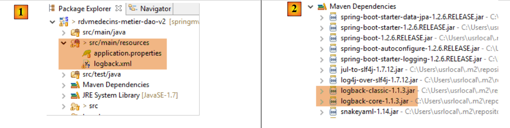 |
The [application.properties] file is used by the Spring Boot framework. It allows you to define a wide range of settings to override the default values used by Spring Boot (http://docs.spring.io/spring-boot/docs/current/reference/html/common-application-properties.html). Here is its content:
logging.level.org.hibernate=OFF
spring.main.show-banner=false
- Line 1: controls the Hibernate logging level—here, no logs
- line 2: controls the display of the Spring Boot banner—here, no banner
The [logback.xml] file is the configuration file for the [logback] logging framework [2]:
<configuration>
<appender name="STDOUT" class="ch.qos.logback.core.ConsoleAppender">
<!-- encoders are by default assigned the type ch.qos.logback.classic.encoder.PatternLayoutEncoder -->
<encoder>
<pattern>%d{HH:mm:ss.SSS} [%thread] %-5level %logger{36} - %msg%n</pattern>
</encoder>
</appender>
<!-- log level control -->
<root level="info"> <!-- off, info, debug, warn -->
<appender-ref ref="STDOUT" />
</root>
</configuration>
- The general log level is controlled by line 9—here, [info] level logs;
This produces the following result:
If we set the Hibernate logging level to [info] (without changing anything else):
logging.level.org.hibernate=INFO
spring.main.show-banner=false
this yields the following result:
10:33:12.198 [main] INFO o.s.c.a.AnnotationConfigApplicationContext - Refreshing org.springframework.context.annotation.AnnotationConfigApplicationContext@5a4aa2f2: startup date [Wed Oct 14 10:33:12 CEST 2015]; root of context hierarchy
10:33:12.681 [main] INFO o.s.o.j.LocalContainerEntityManagerFactoryBean - Building JPA container EntityManagerFactory for persistence unit 'default'
10:33:12.702 [main] INFO o.h.jpa.internal.util.LogHelper - HHH000204: Processing PersistenceUnitInfo [
name: default
...]
10:33:12.773 [main] INFO org.hibernate.Version - HHH000412: Hibernate Core {4.3.11.Final}
10:33:12.775 [main] INFO org.hibernate.cfg.Environment - HHH000206: hibernate.properties not found
10:33:12.776 [main] INFO org.hibernate.cfg.Environment - HHH000021: Bytecode provider name: javassist
10:33:13.011 [main] INFO o.h.annotations.common.Version - HCANN000001: Hibernate Commons Annotations {4.0.5.Final}
10:33:13.434 [main] INFO org.hibernate.dialect.Dialect - HHH000400: Using dialect: org.hibernate.dialect.MySQLDialect
10:33:13.621 [main] INFO o.h.h.i.a.ASTQueryTranslatorFactory - HHH000397: Using ASTQueryTranslatorFactory
Added an Rv on [10/14/2015] in slot 1 for client 1
Appointment added = Appointment[181, Wed Oct 14 10:33:14 CEST 2015, 1, 1]
List of appointments
App[181, 2015-10-14, 1, 1]
10:33:14.782 [main] INFO o.s.c.a.AnnotationConfigApplicationContext - Closing org.springframework.context.annotation.AnnotationConfigApplicationContext@5a4aa2f2: startup date [Wed Oct 14 10:33:12 CEST 2015]; root of context hierarchy
If we set the log level to [debug] (without changing anything else):
logging.level.org.hibernate=DEBUG
spring.main.show-banner=false
This produces the following result:
10:35:13.522 [main] DEBUG o.s.b.f.s.DefaultListableBeanFactory - Eagerly caching bean 'clientRepository' to allow for resolving potential circular references
10:35:13.522 [main] DEBUG o.s.b.f.annotation.InjectionMetadata - Processing injected element of bean 'clientRepository': PersistenceElement for public void org.springframework.data.jpa.repository.support.JpaRepositoryFactoryBean.setEntityManager(javax.persistence.EntityManager)
10:35:13.522 [main] DEBUG o.s.b.f.s.DefaultListableBeanFactory - Creating instance of bean '(inner bean)#6a2eea2a'
10:35:13.522 [main] DEBUG o.s.b.f.s.DefaultListableBeanFactory - Creating instance of bean '(inner bean)#b967222'
10:35:13.522 [main] DEBUG o.s.b.f.s.DefaultListableBeanFactory - Invoking afterPropertiesSet() on bean with name '(inner bean)#b967222'
10:35:13.522 [main] DEBUG o.s.b.f.s.DefaultListableBeanFactory - Finished creating instance of bean '(inner bean)#b967222'
10:35:13.522 [main] DEBUG o.s.b.f.s.DefaultListableBeanFactory - Finished creating instance of bean '(inner bean)#6a2eea2a'
10:35:13.522 [main] DEBUG o.s.b.f.s.DefaultListableBeanFactory - Creating instance of bean '(inner bean)#1ba05e38'
10:35:13.522 [main] DEBUG o.s.b.f.s.DefaultListableBeanFactory - Finished creating instance of bean '(inner bean)#1ba05e38'
10:35:13.522 [main] DEBUG o.s.b.f.s.DefaultListableBeanFactory - Creating instance of bean '(inner bean)#6c298dc'
10:35:13.522 [main] DEBUG o.s.b.f.s.DefaultListableBeanFactory - Returning cached instance of singleton bean 'entityManagerFactory'
10:35:13.522 [main] DEBUG o.s.b.f.s.DefaultListableBeanFactory - Finished creating instance of bean '(inner bean)#6c298dc'
10:35:13.522 [main] DEBUG o.s.b.f.s.DefaultListableBeanFactory - Returning cached instance of singleton bean 'jpaMappingContext'
10:35:13.522 [main] DEBUG o.s.b.f.s.DefaultListableBeanFactory - Invoking afterPropertiesSet() on bean with name 'clientRepository'
10:35:13.522 [main] DEBUG o.s.o.j.SharedEntityManagerCreator$SharedEntityManagerInvocationHandler - Creating new EntityManager for shared EntityManager invocation
10:35:13.522 [main] DEBUG o.s.o.jpa.EntityManagerFactoryUtils - Closing JPA EntityManager
10:35:13.522 [main] DEBUG o.s.o.j.SharedEntityManagerCreator$SharedEntityManagerInvocationHandler - Creating new EntityManager for shared EntityManager invocation
10:35:13.522 [main] DEBUG o.s.o.jpa.EntityManagerFactoryUtils - Closing JPA EntityManager
10:35:13.522 [main] DEBUG o.s.aop.framework.JdkDynamicAopProxy - Creating JDK dynamic proxy: target source is org.springframework.data.jpa.repository.support.CrudMethodMetadataPostProcessor$ThreadBoundTargetSource@723ed581
10:35:13.522 [main] DEBUG o.s.aop.framework.JdkDynamicAopProxy - Creating JDK dynamic proxy: target source is SingletonTargetSource for target object [org.springframework.data.jpa.repository.support.SimpleJpaRepository@796065aa]
10:35:13.522 [main] DEBUG o.s.b.f.s.DefaultListableBeanFactory - Finished creating instance of bean 'clientRepository'
10:35:13.522 [main] DEBUG o.s.b.f.a.AutowiredAnnotationBeanPostProcessor - Autowiring by type from bean name 'métier' to bean named 'clientRepository'
...
8.4.11. The [web / JSON] layer
 |
 |
We will build the [web / JSON] layer in several steps:
- Step 1: An operational web layer without authentication;
- Step 2: Implementing authentication with Spring Security;
- Step 3: Implementing CORS [Cross-Origin Resource Sharing (CORS) is a mechanism that allows many resources (e.g., fonts, JavaScript, etc.) on a web page to be requested from another domain outside the domain the resource originated from. (Wikipedia)]. The client for our web service will be an Angular web client that does not necessarily belong to the same domain as , our web service. By default, it cannot access it unless the web service authorizes it to do so. We will see how;
8.4.11.1. Maven Configuration
The project’s [pom.xml] file is as follows:
<?xml version="1.0" encoding="UTF-8"?>
<project xmlns="http://maven.apache.org/POM/4.0.0" xmlns:xsi="http://www.w3.org/2001/XMLSchema-instance"
xsi:schemaLocation="http://maven.apache.org/POM/4.0.0 http://maven.apache.org/xsd/maven-4.0.0.xsd">
<modelVersion>4.0.0</modelVersion>
<groupId>istia.st.spring4.mvc</groupId>
<artifactId>rdvmedecins-webjson-server</artifactId>
<version>0.0.1-SNAPSHOT</version>
<packaging>jar</packaging>
<name>rdvmedecins-webjson-server</name>
<description>Doctor Appointment Scheduling</description>
<parent>
<groupId>org.springframework.boot</groupId>
<artifactId>spring-boot-starter-parent</artifactId>
<version>1.2.6.RELEASE</version>
</parent>
<dependencies>
<!-- Spring MVC web layer -->
<dependency>
<groupId>org.springframework.boot</groupId>
<artifactId>spring-boot-starter-web</artifactId>
</dependency>
<!-- test layer -->
<dependency>
<groupId>org.springframework.boot</groupId>
<artifactId>spring-boot-starter-test</artifactId>
<scope>test</scope>
</dependency>
<!-- DAO layer -->
<dependency>
<groupId>istia.st.spring4.rdvmedecins</groupId>
<artifactId>rdvmedecins-business-dao</artifactId>
<version>0.0.1-SNAPSHOT</version>
</dependency>
</dependencies>
...
</project>
- lines 12–15: the parent Maven project;
- lines 19–22: dependencies for a Spring MVC project;
- lines 24–28: dependencies for JUnit/Spring tests;
- lines 30–34: dependencies on the project’s layers [business logic, DAO, JPA];
8.4.11.2. The web service interface
 |
- in [1], above, the browser can only request a limited number of URLs with a specific syntax;
- in [4], it receives a JSON response;
The responses from our web service will all have the same format, corresponding to the JSON representation of an object of type [Response] as follows:
package rdvmedecins.web.models;
import java.util.List;
public class Response<T> {
// ----------------- properties
// operation status
private int status;
// any error messages
private List<String> messages;
// response body
private T body;
// constructors
public Response() {
}
public Response(int status, List<String> messages, T body) {
this.status = status;
this.messages = messages;
this.body = body;
}
// getters and setters
...
}
- line 7: response error code 0: OK, anything else: KO;
- line 11: a list of error messages, if there is an error;
- line 13: the body of the response;
We now present the screenshots illustrating the web service / JSON interface:
List of all patients at the medical practice [/getAllClients]
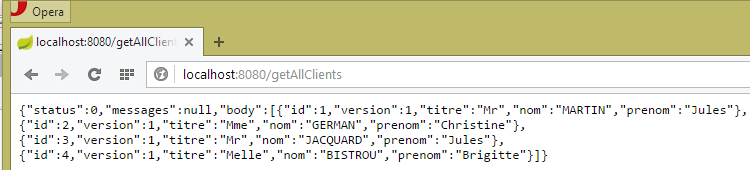 |
List of all doctors at the medical practice [/getAllMedecins]
 |
List of a doctor’s available time slots [/getAllCreneaux/{idMedecin}]
 |
List of a doctor's appointments [/getRvMedecinJour/{idMedecin}/{yyyy-mm-dd}
 |
A doctor's daily schedule [/getAgendaMedecinJour/{idMedecin}/{yyyy-mm-dd}]
 |
To add or delete an appointment, we use the Chrome extension [Advanced Rest Client] because these operations are performed using a POST request.
Add an appointment [/addAppointment]
 |
- in [0], the web service URL;
- in [1], the POST method is used;
- in [2], the JSON text of the information sent to the web service in the format {day, clientId, slotId};
- in [3], the client specifies to the web service that it is sending information in JSON format;
The response is then as follows:
 |
- in [4]: the client sends the header indicating that the data it is sending is in JSON format;
- in [5]: the web service responds that it is also sending JSON;
- in [6]: the web service’s JSON response. The [body] field contains the JSON representation of the added appointment;
The presence of the new appointment can be verified:
 |
Note the appointment ID [50]. We will delete this one.
Delete an appointment [/deleteApp]
 |
- in [1], the web service URL;
- in [2], the POST method is used;
- in [3], the JSON text of the information sent to the web service in the form {idRv};
- in [4], the client specifies to the web service that it is sending JSON data;
The response is then as follows:
 |
- in [5]: the [status] field is set to 0, indicating that the operation was successful;
The deletion of the appointment can be verified:
 |
Above, the appointment for patient [Ms. GERMAIN] is no longer present.
The web service also allows entities to be retrieved by their ID:
 |
 |
 |
 |
All these URLs are handled by the [RdvMedecinsController] controller, which we will present shortly.
8.4.11.3. Web service configuration
 |
The configuration class [AppConfig] is as follows:
package rdvmedecins.web.config;
import org.springframework.context.annotation.ComponentScan;
import org.springframework.context.annotation.Configuration;
import org.springframework.context.annotation.Import;
import rdvmedecins.config.DomainAndPersistenceConfig;
@Configuration
@ComponentScan(basePackages = { "rdvmedecins.web" })
@Import({ DomainAndPersistenceConfig.class, SecurityConfig.class, WebConfig.class })
public class AppConfig {
}
- Line 12: The [AppConfig] class configures the entire application;
- line 9: the [AppConfig] class is a Spring configuration class;
- line 10: we specify that Spring components should be searched for in the [rdvmedecins.web] package and its subpackages. This is how the following components will be discovered:
- [@RestController RdvMedecinsController] in the [rdvmedecins.web.controllers] package;
- [@Component ApplicationModel] in the [rdvmedecins.web.models] package;
- Line 11: We import the [DomainAndPersistenceConfig] class, which configures the [rdvmedecins-metier-dao] project to provide access to that project’s beans;
- line 11: the [SecurityConfig] class configures the web application's security. We will ignore it for now;
- line 11: the [WebConfig] class configures the [web / JSON] layer;
The [WebConfig] class is as follows:
package rdvmedecins.web.config;
import org.springframework.boot.context.embedded.EmbeddedServletContainerFactory;
import org.springframework.boot.context.embedded.ServletRegistrationBean;
import org.springframework.boot.context.embedded.tomcat.TomcatEmbeddedServletContainerFactory;
import org.springframework.context.annotation.Bean;
import org.springframework.context.annotation.Configuration;
import org.springframework.web.servlet.DispatcherServlet;
import org.springframework.web.servlet.config.annotation.EnableWebMvc;
import com.fasterxml.jackson.databind.ObjectMapper;
import com.fasterxml.jackson.databind.ser.impl.SimpleBeanPropertyFilter;
import com.fasterxml.jackson.databind.ser.impl.SimpleFilterProvider;
@Configuration
@EnableWebMvc
public class WebConfig {
// DispatcherServlet configuration for CORS headers
@Bean
public DispatcherServlet dispatcherServlet() {
DispatcherServlet servlet = new DispatcherServlet();
servlet.setDispatchOptionsRequest(true);
return servlet;
}
@Bean
public ServletRegistrationBean servletRegistrationBean(DispatcherServlet dispatcherServlet) {
return new ServletRegistrationBean(dispatcherServlet, "/*");
}
@Bean
public EmbeddedServletContainerFactory embeddedServletContainerFactory() {
return new TomcatEmbeddedServletContainerFactory("", 8080);
}
// JSON mappers
@Bean
public ObjectMapper jsonMapper() {
return new ObjectMapper();
}
@Bean
public ObjectMapper jsonMapperShortCreneau() {
ObjectMapper jsonMapperShortCreneau = new ObjectMapper();
SimpleBeanPropertyFilter creneauFilter = SimpleBeanPropertyFilter.serializeAllExcept("doctor");
jsonMapperShortCreneau.setFilters(new SimpleFilterProvider().addFilter("creneauFilter", creneauFilter));
return jsonMapperShortCreneau;
}
@Bean
public ObjectMapper jsonMapperLongRv() {
ObjectMapper jsonMapperLongRv = new ObjectMapper();
SimpleBeanPropertyFilter rvFilter = SimpleBeanPropertyFilter.serializeAllExcept("");
SimpleBeanPropertyFilter creneauFilter = SimpleBeanPropertyFilter.serializeAllExcept("doctor");
jsonMapperLongRv.setFilters(
new SimpleFilterProvider().addFilter("rvFilter", rvFilter).addFilter("creneauFilter", creneauFilter));
return jsonMapperLongRv;
}
@Bean
public ObjectMapper jsonMapperShortRv() {
ObjectMapper jsonMapperShortRv = new ObjectMapper();
SimpleBeanPropertyFilter rvFilter = SimpleBeanPropertyFilter.serializeAllExcept("client", "slot");
jsonMapperShortRv.setFilters(new SimpleFilterProvider().addFilter("rvFilter", rvFilter));
return jsonMapperShortRv;
}
}
- lines 20–25: define the [dispatcherServlet] bean. The [DispatcherServlet] class is the servlet of the Spring MVC framework. It acts as a [FrontController]: it intercepts requests sent to the Spring MVC site and routes them to one of the site’s controllers;
- line 22: instantiation of the class;
- line 23: this line can be ignored for now;
- lines 27–30: the [dispatcherServlet] servlet handles all URLs;
- lines 27–30: activate the Tomcat server embedded in the project dependencies. It will run on port 8080;
- lines 38–67: four JSON mappers configured with different JSON filters;
- lines 38–41: a JSON mapper without filters;
- lines 43–49: the JSON mapper [jsonMapperShortCreneau] serializes/deserializes a [Creneau] object while ignoring the [Creneau.medecin] field;
- lines 51–59: the JSON mapper [jsonMapperLongRv] serializes/deserializes an [Rv] object while ignoring the [Rv.creneau.medecin] field;
- lines 61-67: the JSON mapper [jsonMapperShortRv] serializes/deserializes an [Rv] object while ignoring the [Rv.creneau] and [Rv.client] fields;
8.4.11.4. The [ApplicationModel] class
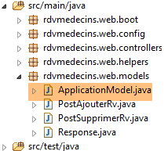 |
The [ApplicationModel] class will serve two purposes:
- as a cache to store lists of doctors and patients (clients);
- as a single interface for the controllers;
package rdvmedecins.web.models;
import java.util.Date;
import java.util.List;
import javax.annotation.PostConstruct;
import org.springframework.beans.factory.annotation.Autowired;
import org.springframework.stereotype.Component;
import rdvmedecins.domain.Doctor'sDailySchedule;
import rdvmedecins.entities.Client;
import rdvmedecins.entities.TimeSlot;
import rdvmedecins.entities.Doctor;
import rdvmedecins.entities.Appointment;
import rdvmedecins.business.IMetier;
import rdvmedecins.web.helpers.Static;
@Component
public class ApplicationModel implements IMetier {
// the [business] layer
@Autowired
private IMetier business;
// data from the [business] layer
private List<Doctor> doctors;
private List<Client> clients;
private List<String> messages;
// configuration data
private boolean CORSneeded = false;
private boolean secured = false;
@PostConstruct
public void init() {
// retrieve doctors and clients
try {
doctors = business.getAllDoctors();
clients = business.getAllClients();
} catch (Exception ex) {
messages = Static.getErrorsForException(ex);
}
}
// getter
public List<String> getMessages() {
return messages;
}
// ------------------------- [business] layer interface
@Override
public List<Client> getAllClients() {
return clients;
}
@Override
public List<Doctor> getAllDoctors() {
return doctors;
}
@Override
public List<Slot> getAllSlots(long doctorId) {
return department.getAllSlots(doctorId);
}
@Override
public List<Appointment> getDoctorAppointmentsForDay(long doctorId, Date day) {
return profession.getDoctorOnCall(doctorId, day);
}
@Override
public Client getClientById(long id) {
return business.getClientById(id);
}
@Override
public Doctor getDoctorById(long id) {
return business.getDoctorById(id);
}
@Override
public Appointment getAppointmentById(long id) {
return business.getRvById(id);
}
@Override
public Slot getSlotById(long id) {
return business.getTimeSlotById(id);
}
@Override
public Appointment addAppointment(Date date, Slot slot, Client client) {
return business.addRv(day, slot, client);
}
@Override
public void deleteAppointment(long appointmentId) {
business.deleteAppointment(appointmentId);
}
@Override
public DoctorScheduleDay getDoctorScheduleDay(long doctorId, Date day) {
return business.getDoctorSchedule(doctorId, day);
}
// getters and setters
public boolean isCORSneeded() {
return CORSneeded;
}
public boolean isSecured() {
return secured;
}
}
- line 19: the [@Component] annotation makes the [ApplicationModel] class a Spring component. Like all Spring components seen so far (with the exception of @Controller), only a single object of this type will be instantiated (singleton);
- line 20: the [ApplicationModel] class implements the [IMetier] interface;
- lines 23–24: a reference to the [business] layer is injected by Spring;
- line 34: the [@PostConstruct] annotation ensures that the [init] method will be executed immediately after the [ApplicationModel] class is instantiated;
- lines 38–39: Retrieve the lists of doctors and clients from the [business] layer;
- Line 41: If an exception occurs, the messages from the exception stack are stored in the field on line 17;
The architecture of the web layer evolves as follows:
 |
- In [2b], the methods of the controller(s) communicate with the [ApplicationModel] singleton;
This strategy provides flexibility in cache management. Currently, doctors’ appointment slots are not cached. To cache them, simply modify the [ApplicationModel] class. This has no impact on the controller, which will continue to use the [List<Creneau> getAllCreneaux(long idMedecin)] method as it did before. It is the implementation of this method in [ApplicationModel] that will be changed.
8.4.11.5. The Static Class
The [Static] class contains a set of static utility methods that have no "business" or "web" aspects:
 |
Its code is as follows:
package rdvmedecins.web.helpers;
import java.util.ArrayList;
import java.util.List;
public class Static {
public Static() {
}
// list of error messages for an exception
public static List<String> getErrorsForException(Exception exception) {
// retrieve the list of error messages for the exception
Throwable cause = exception;
List<String> errors = new ArrayList<String>();
while (cause != null) {
errors.add(cause.getMessage());
cause = cause.getCause();
}
return errors;
}
}
- line 12: the [Static.getErrorsForException] method that was used (line 8 below) in the [init] method of the [ApplicationModel] class:
@PostConstruct
public void init() {
// retrieve doctors and clients
try {
doctors = business.getAllDoctors();
clients = business.getAllClients();
} catch (Exception ex) {
messages = Static.getErrorsForException(ex);
}
}
The method constructs a [List<String>] object containing the error messages [exception.getMessage()] of an exception [exception] and those of its inner exception [exception.getCause()].
8.4.11.6. The controller skeleton [RdvMedecinsController]
 |
We will now detail the handling of the web service's URLs. Three main classes are involved in this process:
- the controller [RdvMedecinsController];
- the utility methods class [Static];
- the cache class [ApplicationModel];
 |
The [RdvMedecinsController] controller is as follows:
package rdvmedecins.web.controllers;
import java.text.ParseException;
import java.text.SimpleDateFormat;
import java.util.ArrayList;
import java.util.Date;
import java.util.List;
import javax.annotation.PostConstruct;
import javax.servlet.http.HttpServletResponse;
import org.springframework.beans.factory.annotation.Autowired;
import org.springframework.stereotype.Controller;
import org.springframework.web.bind.annotation.PathVariable;
import org.springframework.web.bind.annotation.RequestBody;
import org.springframework.web.bind.annotation.RequestHeader;
import org.springframework.web.bind.annotation.RequestMapping;
import org.springframework.web.bind.annotation.RequestMethod;
import org.springframework.web.bind.annotation.ResponseBody;
import com.fasterxml.jackson.core.JsonProcessingException;
import com.fasterxml.jackson.databind.ObjectMapper;
import rdvmedecins.domain.Doctor'sDailySchedule;
import rdvmedecins.entities.Client;
import rdvmedecins.entities.TimeSlot;
import rdvmedecins.entities.Doctor;
import rdvmedecins.entities.Appointment;
import rdvmedecins.web.helpers.Static;
import rdvmedecins.web.models.ApplicationModel;
import rdvmedecins.web.models.PostAddAppointment;
import rdvmedecins.web.models.PostDeleteAppointment;
import rdvmedecins.web.models.Response;
@Controller
public class RdvMedecinsController {
@Autowired
private ApplicationModel application;
@Autowired
private RdvMedecinsCorsController rdvMedecinsCorsController;
// list of messages
private List<String> messages;
// JSON mappers
@Autowired
private ObjectMapper jsonMapper;
@Autowired
private ObjectMapper jsonMapperShortCreneau;
@Autowired
private ObjectMapper jsonMapperLongRv;
@Autowired
private ObjectMapper jsonMapperShortRv;
@PostConstruct
public void init() {
// Application error messages
messages = application.getMessages();
}
// list of doctors
@RequestMapping(value = "/getAllDoctors", method = RequestMethod.GET, produces = "application/json; charset=UTF-8")
@ResponseBody
public String getAllDoctors() throws JsonProcessingException {...}
// list of clients
@RequestMapping(value = "/getAllClients", method = RequestMethod.GET, produces = "application/json; charset=UTF-8")
@ResponseBody
public String getAllClients() throws JsonProcessingException {...}
// list of a doctor's appointment slots
@RequestMapping(value = "/getAllSlots/{doctorId}", method = RequestMethod.GET, response-type = "application/json; charset=UTF-8")
@ResponseBody
public String getAllSlots(@PathVariable("doctorId") long doctorId) throws JsonProcessingException {...}
// list of a doctor's appointments
@RequestMapping(value = "/getRvMedecinJour/{idMedecin}/{jour}", method = RequestMethod.GET, produces = "application/json; charset=UTF-8")
@ResponseBody
public String getDoctorAppointmentsByDay(@PathVariable("doctorId") long doctorId, @PathVariable("day") String day)
throws JsonProcessingException {...}
@RequestMapping(value = "/getClientById/{id}", method = RequestMethod.GET, produces = "application/json; charset=UTF-8")
@ResponseBody
public String getClientById(@PathVariable("id") long id) throws JsonProcessingException {...}
@RequestMapping(value = "/getMedecinById/{id}", method = RequestMethod.GET, produces = "application/json; charset=UTF-8")
@ResponseBody
public String getDoctorById(@PathVariable("id") long id) String origin) throws JsonProcessingException {...}
@RequestMapping(value = "/getRvById/{id}", method = RequestMethod.GET, produces = "application/json; charset=UTF-8")
@ResponseBody
public String getRvById(@PathVariable("id") long id) throws JsonProcessingException {...}
@RequestMapping(value = "/getCreneauById/{id}", method = RequestMethod.GET, produces = "application/json; charset=UTF-8")
@ResponseBody
public String getCreneauById(@PathVariable("id") long id) throws JsonProcessingException {...}
@RequestMapping(value = "/addAppointment", method = RequestMethod.POST, produces = "application/json; charset=UTF-8", consumes = "application/json; charset=UTF-8")
@ResponseBody
public String addAppointment(@RequestBody PostAddAppointment post) throws JsonProcessingException {...}
@RequestMapping(value = "/deleteRv", method = RequestMethod.POST, produces = "application/json; charset=UTF-8", consumes = "application/json; charset=UTF-8")
@ResponseBody
public String deleteAppointment(@RequestBody PostDeleteAppointment post) throws JsonProcessingException {...}
@RequestMapping(value = "/getAgendaMedecinJour/{idMedecin}/{jour}", method = RequestMethod.GET, response-type = "application/json; charset=UTF-8")
@ResponseBody
public String getDoctorScheduleByDay(@PathVariable("doctorId") long doctorId, @PathVariable("day") String day)
throws JsonProcessingException {...}
@RequestMapping(value = "/authenticate", method = RequestMethod.GET, produces = "application/json; charset=UTF-8")
@ResponseBody
public String authenticate() throws JsonProcessingException {...}
}
- line 35: the [@Controller] annotation makes the [RdvMedecinsController] class a Spring controller, the C in MVC;
- lines 38–39: An object of type [ApplicationModel] will be injected here by Spring. We have already introduced it;
- lines 41-42: an object of type [RdvMedecinsCorsController] will be injected here by Spring. We will introduce this object later;
- lines 48–58: the JSON mappers defined in the [WebConfig] configuration class;
- line 60: the [@PostConstruct] annotation marks a method to be executed immediately after the class is instantiated. When this method runs, the objects injected by Spring are available;
- line 63: we retrieve any error messages from the [ApplicationModel] object. This object was instantiated when the application started and attempted to cache the doctors and clients. If it failed, then [messages!=null]. This will allow the controller’s methods to determine whether the application initialized correctly;
- lines 67–118: the URLs exposed by the [web/jSON] service. All methods return a JSON string of the following [Response<T>] type:
 |
package rdvmedecins.web.models;
import java.util.List;
public class Response<T> {
// ----------------- properties
// operation status
private int status;
// any error messages
private List<String> messages;
// response body
private T body;
// constructors
public Response() {
}
public Response(int status, List<String> messages, T body) {
this.status = status;
this.messages = messages;
this.body = body;
}
// getters and setters
...
}
- line 9: an error code: 0 means no error;
- line 11: if [status!=0], then [messages] is a list of error messages;
- line 13: a T object encapsulated in the response. T is null in case of an error;
This object is serialized into JSON before being sent to the client browser;
- line 67: the exposed URL is [/getAllDoctors]. The client must use a [GET] method to make its request (method = RequestMethod.GET). If this URL were requested via a POST, it would be rejected and Spring MVC would send an HTTP error code to the web client. The method itself returns the response to the client (line 68). This will be a string (line 67). The HTTP header [Content-type: application/json; charset=UTF-8] will be sent to the client to indicate that it will receive a JSON string (line 67);
- line 77: the URL is configured with {idMedecin}. This parameter is retrieved using the [@PathVariable] annotation on line 79;
- Line 79: The parameter [long idMedecin] gets its value from the {idMedecin} parameter in the URL [@PathVariable("idMedecin")]. The parameter in the URL and the one in the method can have different names. Note that [@PathVariable("idMedecin")] is of type String (the entire URL is a String), whereas the parameter [long idMedecin] is of type [long]. The type conversion is performed automatically. An HTTP error code is returned if this type conversion fails;
- line 105: the [@RequestBody] annotation refers to the request body. In a GET request, there is almost never a body (but it is possible to include one). In a POST request, there usually is one (but it is possible to omit it). For the URL [ajouterRv], the web client sends the following JSON string in its POST:
The syntax [@RequestBody PostAjouterRv post] (line 105), combined with the fact that the method expects JSON [consumes = "application/json; charset=UTF-8"] (line 103), means that the JSON string sent by the web client will be deserialized into an object of type [PostAjouterRv]. This is as follows:
package rdvmedecins.web.models;
public class PostAjouterRv {
// post data
private String day;
private long clientId;
private long slotId;
// getters and setters
...
}
Here too, the necessary type conversions will occur automatically;
- Lines 107–109 contain a similar mechanism for the URL [/supprimerRv]. The posted JSON string is as follows:
and the [PostSupprimerRv] type is as follows:
package rdvmedecins.web.models;
public class PostSupprimerRv {
// post data
private long idRv;
// getters and setters
...
}
8.4.11.7. The URL [/getAllDoctors]
The URL [/getAllMedecins] is handled by the following method in the controller [RdvMedecinsController]:
// list of doctors
@RequestMapping(value = "/getAllMedecins", method = RequestMethod.GET, produces = "application/json; charset=UTF-8")
@ResponseBody
public String getAllDoctors() throws JsonProcessingException {
// the response
Response<List<Doctor>> response;
// application status
if (messages != null) {
response = new Response<>(-1, messages, null);
} else {
// list of doctors
try {
response = new Response<>(0, null, application.getAllDoctors());
} catch (RuntimeException e) {
response = new Response<>(1, Static.getErrorsForException(e), null);
}
}
// response
return jsonMapper.writeValueAsString(response);
}
- lines 9-10: we check if the application has initialized correctly (messages==null). If not, we return a response with status=-1 and body=messages;
- line 13: otherwise, we request the list of doctors from the [ApplicationModel] class;
- line 19: We send the JSON string of the response using the JSON mapper [jsonMapper] because the [Medecin] class does not have a JSON filter. The response may be error-free (line 14) or contain an error (line 16). The method [application.getAllMedecins()] does not throw an exception because it simply returns a cached list. Nevertheless, we will keep this exception handling in case the doctors are no longer cached;
We have not yet illustrated the case where the application initialized incorrectly. Let’s stop the MySQL5 DBMS, start the web service, and then request the URL [/getAllMedecins]:

We do indeed get an error. Under normal circumstances, we get the following view:
 |
8.4.11.8. The URL [/getAllClients]
The URL [/getAllClients] is handled by the following method in the [RdvMedecinsController]:
// list of clients
@RequestMapping(value = "/getAllClients", method = RequestMethod.GET, produces = "application/json; charset=UTF-8")
@ResponseBody
public String getAllClients() throws JsonProcessingException {
// the response
Response<List<Client>> response;
// application status
if (messages != null) {
response = new Response<>(-1, messages, null);
}
// list of clients
try {
response = new Response<>(0, null, application.getAllClients());
} catch (RuntimeException e) {
response = new Response<>(1, Static.getErrorsForException(e), null);
}
// response
return jsonMapper.writeValueAsString(response);
}
It is similar to the [getAllMedecins] method we already covered. The results obtained are as follows:
 |
8.4.11.9. The URL [/getAllSlots/{doctorId}]
The URL [/getAllSlots/{doctorId}] is handled by the following method of the [RdvMedecinsController] controller:
// list of a doctor's time slots
@RequestMapping(value = "/getAllCreneaux/{idMedecin}", method = RequestMethod.GET, produces = "application/json; charset=UTF-8")
@ResponseBody
public String getAllAppointments(@PathVariable("doctorId") long doctorId) throws JsonProcessingException {
// the response
Response<List<Creneau>> response;
// application status
if (messages != null) {
response = new Response<>(-1, messages, null);
}
// retrieve the doctor
Response<Doctor> doctorResponse = getDoctor(doctorId);
if (doctorResponse.getStatus() != 0) {
response = new Response<>(responseDoctor.getStatus(), responseDoctor.getMessages(), null);
} else {
Doctor doctor = responseDoctor.getBody();
// doctor's availability slots
try {
response = new Response<>(0, null, application.getAllSlots(doctor.getId()));
} catch (RuntimeException e1) {
response = new Response<>(3, Static.getErrorsForException(e1), null);
}
}
// response
return jsonMapperShortCreneau.writeValueAsString(response);
}
- line 12: the doctor identified by the [id] parameter is requested from a local method:
private Response<Doctor> getDoctor(long id) {
// retrieve the doctor
Doctor doctor = null;
try {
doctor = application.getDoctorById(id);
} catch (RuntimeException e1) {
return new Response<Doctor>(1, Static.getErrorsForException(e1), null);
}
// Does the doctor exist?
if (doctor == null) {
List<String> messages = new ArrayList<String>();
messages.add(String.format("The doctor with ID [%s] does not exist", id));
return new Response<Doctor>(2, messages, null);
}
// ok
return new Response<Doctor>(0, null, doctor);
}
This method returns a status value in the range [0,1,2]. Let’s go back to the code for the [getAllCreneaux] method:
- lines 13-14: if status!=0, we construct a response with an error;
- line 16: we retrieve the doctor;
- line 19: we retrieve this doctor’s time slots;
- line 25: we send a [List<Creneau>] object as the response. Let’s recall the definition of the [Creneau] class:
@Entity
@Table(name = "slots")
public class Slot extends AbstractEntity {
private static final long serialVersionUID = 1L;
// characteristics of an appointment slot
private int startTime;
private int startMinute;
private int endHour;
private int endMin;
// A time slot is linked to a doctor
@ManyToOne(fetch = FetchType.LAZY)
@JoinColumn(name = "id_doctor")
private Doctor doctor;
// foreign key
@Column(name = "doctor_id", insertable = false, updatable = false)
private long doctorId;
...
}
- line 13: the doctor is fetched in [FetchType.LAZY] mode;
Recall the JPQL query that implements the [getAllCreneaux] method in the [DAO] layer:
@Query("select c from Creneau c where c.medecin.id=?1")
The notation [c.medecin.id] forces a join between the [CRENEAUX] and [MEDECINS] tables. As a result, the query returns all of the doctor’s slots, with the doctor included in each one. When we serialize these slots to JSON, the doctor’s JSON string appears in each of them. This is unnecessary. To control the serialization, we need two things:
- access to the object being serialized;
- configure the object to be serialized;
Point 1 is handled by injecting the appropriate JSON converter for the object into the controller:
@Autowired
private ObjectMapper jsonMapperShortCreneau;
Point 2 is achieved by adding an annotation to the [Creneau] class defined in the [rdvmedecins-metier-dao] project:
 |
@Entity
@Table(name = "creneaux")
@JsonFilter("creneauFilter")
public class Creneau extends AbstractEntity {
...
- Line 3: an annotation from the Jackson JSON library. It creates a filter called [creneauFilter]. Using this filter, we will be able to programmatically define which fields should or should not be serialized;
The serialization of the [Creneau] object occurs in the following line of the [getAllCreneaux] method:
// response
return jsonMapperShortCreneau.writeValueAsString(response);
The JSON mapper [jsonMapperShortCreneau] was defined in the [WebConfig] class as follows:
@Bean
public ObjectMapper jsonMapperShortCreneau() {
ObjectMapper jsonMapperShortCreneau = new ObjectMapper();
SimpleBeanPropertyFilter creneauFilter = SimpleBeanPropertyFilter.serializeAllExcept("medecin");
jsonMapperShortCreneau.setFilters(new SimpleFilterProvider().addFilter("creneauFilter", creneauFilter));
return jsonMapperShortCreneau;
}
- Line 5: The filter named [creneauFilter] is associated with the [creneauFilter] filter from line 4. This filter serializes the [Creneau] object without its [medecin] field;
The result returned by the [getAllCreneaux] method is a JSON string of type [Response<List<Creneau>].
The results obtained are as follows:
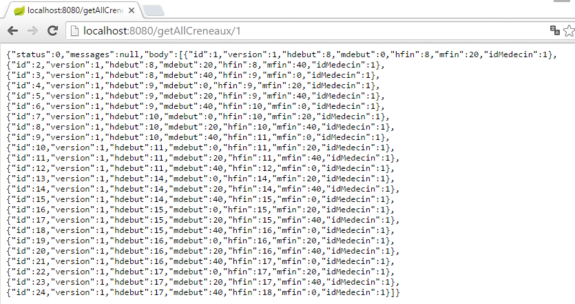 |
or these if the slot does not exist:
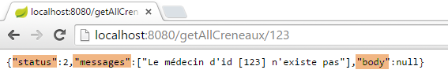 |
From this example, we can derive the following rule:
- Web server / JSON methods return an object of type [Response<T>] that is serialized to JSON;
- if the type T has one or more JSON filters, a mapper with those same filters will be used to serialize it;
8.4.11.10. The URL [/getRvMedecinJour/{idMedecin}/{jour}]
The URL [/getRvMedecinJour/{idMedecin}/{jour}] is handled by the following method of the [RdvMedecinsController] controller:
// list of a doctor's appointments
@RequestMapping(value = "/getRvMedecinJour/{idMedecin}/{jour}", method = RequestMethod.GET, produces = "application/json; charset=UTF-8")
@ResponseBody
public String getRvMedecinJour(@PathVariable("idMedecin") long idMedecin)
throws JsonProcessingException {
// the response
Response<List<Rv>> response = null;
boolean error = false;
// application status
if (messages != null) {
response = new Response<>(-1, messages, null);
error = true;
}
// check the date
Date calendarDay = null;
if (!error) {
SimpleDateFormat sdf = new SimpleDateFormat("yyyy-MM-dd");
sdf.setLenient(false);
try {
day = sdf.parse(day);
} catch (ParseException e) {
List<String> messages = new ArrayList<String>();
messages.add(String.format("The date [%s] is invalid", jour));
response = new Response<List<Rv>>(3, messages, null);
error = true;
}
}
Response<Doctor> doctorResponse = null;
if (!error) {
// retrieve the doctor
responseDoctor = getDoctor(doctorId);
if (responseDoctor.getStatus() != 0) {
response = new Response<>(responseDoctor.getStatus(), responseDoctor.getMessages(), null);
error = true;
}
}
if (!error) {
Doctor doctor = responseDoctor.getBody();
// list of appointments
try {
response = new Response<>(0, null, application.getRvMedecinJour(doctor.getId(), agendaDay));
} catch (RuntimeException e1) {
response = new Response<>(4, Static.getErrorsForException(e1), null);
}
}
// response
return jsonMapperLongRv.writeValueAsString(response);
}
- We must return the JSON string of type [Response<List<Rv>>]. The [Rv] class has a field [Rv.creneau]. If this field is serialized, we will encounter the JSON filter [creneauFilter];
- line 47: the object of type [Response<List<Rv>>] from line 7 is serialized to JSON;
Let’s examine the case where the list of appointments was obtained on line 42. The [Rv] class in the [rdvmedecins-metier-dao] project is defined as follows:
@Entity
@Table(name = "rv")
public class Rv extends AbstractEntity {
private static final long serialVersionUID = 1L;
// characteristics of an Rv
@Temporal(TemporalType.DATE)
private Date day;
// An Rv is associated with a client
@ManyToOne(fetch = FetchType.LAZY)
@JoinColumn(name = "id_client")
private Client client;
// A reservation is linked to a time slot
@ManyToOne(fetch = FetchType.LAZY)
@JoinColumn(name = "slot_id")
private Slot slot;
// foreign keys
@Column(name = "id_client", insertable = false, updatable = false)
private long clientId;
@Column(name = "id_slot", insertable = false, updatable = false)
private long slotId;
...
}
- line 11: the client is retrieved using the [FetchType.LAZY] mode;
- line 18: the slot is retrieved using the [FetchType.LAZY] mode;
Let’s recall the JPQL query that retrieves the appointments:
@Query("select rv from Rv rv left join fetch rv.client c left join fetch rv.creneau cr where cr.medecin.id=?1 and rv.jour=?2")
Joins are explicitly performed to retrieve the [client] and [slot] fields. Furthermore, due to the join [cr.doctor.id=?1], we will also get the doctor. The doctor will therefore appear in the JSON string for each appointment. However, this duplicated information is unnecessary. We have seen how to solve this problem using a JSON filter on the [Creneau] object. Because of the [FetchType.LAZY] modes of the [client] and [slot] fields in the [Rv] class, we will soon discover the need to apply a JSON filter to the [RV] class in the [rdvmedecins-metier-dao] project:
@Entity
@Table(name = "rv")
@JsonFilter("rvFilter")
public class Rv extends AbstractEntity {
...
We will control the serialization of the [Rv] object using the [rvFilter] filter. Apparently, in this case, we don’t need to filter because we need all the fields of the [Rv] object. However, because we specified that the class has a JSON filter, we must define it for any serialization of an object of type [Rv]; otherwise, we will get an exception. To do this, we use the following JSON mapper defined in the [rdvMedecinsController] class:
@Autowired
private ObjectMapper jsonMapperLongRv;
This mapper is defined as follows in the [WebConfig] configuration class:
@Bean
public ObjectMapper jsonMapperLongRv() {
ObjectMapper jsonMapperLongRv = new ObjectMapper();
SimpleBeanPropertyFilter rvFilter = SimpleBeanPropertyFilter.serializeAllExcept("");
SimpleBeanPropertyFilter creneauFilter = SimpleBeanPropertyFilter.serializeAllExcept("doctor");
jsonMapperLongRv.setFilters(new SimpleFilterProvider().addFilter("rvFilter", rvFilter).addFilter("creneauFilter", creneauFilter));
return jsonMapperLongRv;
}
- Line 4: We specify that all fields of the [Rv] object must be serialized;
- line 5: we specify that in the [Creneau] object, the [medecin] field should not be serialized;
- line 6: we add the two filters [rvFilter] and [creneauFilter] to the JSON filters of the [jsonMapperLongRv] object;
The results obtained are as follows:
 |
or these with a day without an appointment:
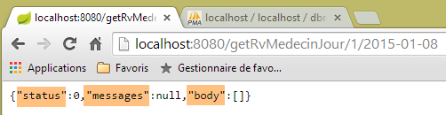 |
or these with an incorrect day:
 |
or these with an incorrect doctor:
 |
8.4.11.11. The URL [/getAgendaMedecinJour/{idMedecin}/{jour}]
The URL [/getAgendaMedecinJour/{idMedecin}/{jour}] is handled by the following method in the [RdvMedecinsController] controller:
@RequestMapping(value = "/getAgendaMedecinJour/{idMedecin}/{jour}", method = RequestMethod.GET, produces = "application/json; charset=UTF-8")
@ResponseBody
public String getAgendaMedecinJour(@PathVariable("idMedecin") long idMedecin)
throws JsonProcessingException {
// the response
Response<AgendaMedecinJour> response = null;
boolean error = false;
// application status
if (messages != null) {
response = new Response<>(-1, messages, null);
error = true;
}
// check the date
Date calendarDay = null;
if (!error) {
// check the date
SimpleDateFormat sdf = new SimpleDateFormat("yyyy-MM-dd");
sdf.setLenient(false);
try {
calendarDay = sdf.parse(day);
} catch (ParseException e) {
error = true;
List<String> messages = new ArrayList<String>();
messages.add(String.format("The date [%s] is invalid", day));
response = new Response<>(3, messages, null);
}
}
// retrieve the doctor
Doctor doctor = null;
if (!error) {
// retrieve the doctor
Response<Doctor> doctorResponse = getDoctor(doctorId);
if (responseDoctor.getStatus() != 0) {
response = new Response<>(responseDoctor.getStatus(), responseDoctor.getMessages(), null);
} else {
doctor = responseDoctor.getBody();
}
}
// retrieve the doctor's schedule
if (!error) {
try {
response = new Response<>(0, null, application.getDoctorScheduleToday(doctor.getId(), scheduleDay));
} catch (RuntimeException e1) {
error = true;
response = new Response<>(4, Static.getErrorsForException(e1), null);
}
}
// response
return jsonMapperLongRv.writeValueAsString(response);
}
- lines 6, 49: we return the JSON string of type [AgendaMedecinJour] encapsulated in a [Response] object;
The [AgendaMedecinJour] type is as follows:
public class DailyDoctorSchedule implements Serializable {
// fields
private Doctor doctor;
private Date day;
private DoctorAppointmentSlots[] doctorAppointmentSlots;
The [CreneauMedecinJour] type is as follows:
public class DayDoctorSlot implements Serializable {
private static final long serialVersionUID = 1L;
// fields
private Creneau creneau;
private Rv rv;
The [creneau] and [rv] fields have JSON filters that need to be configured. This is what line 49 of the [getAgendaMedecinJour] method does, using the [jsonMapperLongRv] JSON mapper we encountered earlier:
@Bean
public ObjectMapper jsonMapperLongRv() {
ObjectMapper jsonMapperLongRv = new ObjectMapper();
SimpleBeanPropertyFilter rvFilter = SimpleBeanPropertyFilter.serializeAllExcept("");
SimpleBeanPropertyFilter creneauFilter = SimpleBeanPropertyFilter.serializeAllExcept("medecin");
jsonMapperLongRv.setFilters(
new SimpleFilterProvider().addFilter("rvFilter", rvFilter).addFilter("creneauFilter", creneauFilter));
return jsonMapperLongRv;
}
The results obtained are as follows:
 |
Above, we see that on 01/28/2015, Dr. PELISSIER has an appointment with Ms. Brigitte BISTROU at 8:20 a.m.;
or these if the date is incorrect:
 |
or these if the doctor's ID is invalid:
 |
8.4.11.12. The URL [/getMedecinById/{id}]
The URL [/getMedecinById/{id}] is handled by the following method in the [RdvMedecinsController]:
@RequestMapping(value = "/getMedecinById/{id}", method = RequestMethod.GET, produces = "application/json; charset=UTF-8")
@ResponseBody
public String getMedecinById(@PathVariable("id") long id) throws JsonProcessingException {
// the response
Response<Medecin> response;
// application state
if (messages != null) {
response = new Response<Doctor>(-1, messages, null);
} else {
response = getDoctor(id);
}
// response
return jsonMapper.writeValueAsString(response);
}
- Lines 5, 13: The method returns a JSON string of type [Doctor]. This type has no JSON filter annotation. Therefore, on line 14, the JSON mapper is used without filters;
Line 10: the [getMedecin] method is as follows:
private Response<Doctor> getDoctor(long id) {
// Get the doctor
Doctor doctor = null;
try {
doctor = application.getDoctorById(id);
} catch (RuntimeException e1) {
return new Response<Doctor>(1, Static.getErrorsForException(e1), null);
}
// Does the doctor exist?
if (doctor == null) {
List<String> messages = new ArrayList<String>();
messages.add(String.format("The doctor with ID [%s] does not exist", id));
return new Response<Doctor>(2, messages, null);
}
// ok
return new Response<Doctor>(0, null, doctor);
}
The results are as follows:
 |
or these if the doctor's ID is incorrect:
 |
8.4.11.13. The URL [/getClientById/{id}]
The URL [/getClientById/{id}] is handled by the following method in the controller [RdvMedecinsController]:
@RequestMapping(value = "/getClientById/{id}", method = RequestMethod.GET, produces = "application/json; charset=UTF-8")
@ResponseBody
public String getClientById(@PathVariable("id") long id) throws JsonProcessingException {
// the response
Response<Client> response;
// application state
if (messages != null) {
response = new Response<>(-1, messages, null);
} else {
response = getClient(id);
}
// response
return jsonMapper.writeValueAsString(response);
}
- Lines 5, 13: The method returns a JSON string of type [Client]. This type has no JSON filter annotations. Therefore, on line 13, the JSON mapper is used without filters;
Line 11: the [getClient] method is as follows:
private Response<Client> getClient(long id) {
// retrieve the client
Client client = null;
try {
client = application.getClientById(id);
} catch (RuntimeException e1) {
return new Response<Client>(1, Static.getErrorsForException(e1), null);
}
// Does the client exist?
if (client == null) {
List<String> messages = new ArrayList<String>();
messages.add(String.format("The client with ID [%s] does not exist", id));
return new Response<Client>(2, messages, null);
}
// ok
return new Response<Client>(0, null, client);
}
The results are as follows:
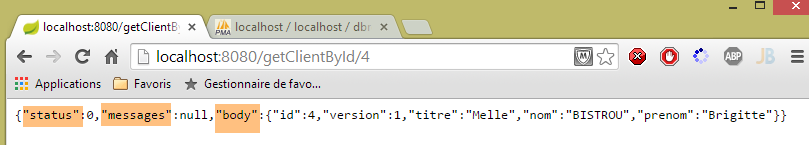 |
or these if the customer ID is incorrect:
 |
8.4.11.14. The URL [/getCreneauById/{id}]
The URL [/getCreneauById/{id}] is handled by the following method in the controller [RdvMedecinsController]:
@RequestMapping(value = "/getCreneauById/{id}", method = RequestMethod.GET, produces = "application/json; charset=UTF-8")
@ResponseBody
public String getCreneauById(@PathVariable("id") long id) throws JsonProcessingException {
// the response
Response<Creneau> response;
// application state
if (messages != null) {
response = new Response<>(-1, messages, null);
} else {
// return the slot
response = getSlot(id);
}
// response
return jsonMapperShortCreneau.writeValueAsString(response);
}
- Lines 5, 14: The method returns a JSON string of type [Response<Creneau>];
Line 8: the [getCreneau] method is as follows:
private Response<Creneau> getCreneau(long id) {
// retrieve the slot
slot = null;
try {
slot = application.getSlotById(id);
} catch (RuntimeException e1) {
return new Response<Slot>(1, Static.getErrorsForException(e1), null);
}
// Does the slot exist?
if (slot == null) {
List<String> messages = new ArrayList<String>();
messages.add(String.format("The slot with id [%s] does not exist", id));
return new Response<Slot>(2, messages, null);
}
// ok
return new Response<TimeSlot>(0, null, timeSlot);
}
Let's review the code for the [Creneau] entity:
@Entity
@Table(name = "slots")
@JsonFilter("slotFilter")
public class Creneau extends AbstractEntity {
private static final long serialVersionUID = 1L;
// characteristics of an appointment slot
private int startTime;
private int startMinute;
private int endHour;
private int endMin;
// A time slot is linked to a doctor
@ManyToOne(fetch = FetchType.LAZY)
@JoinColumn(name = "id_doctor")
private Doctor doctor;
// foreign key
@Column(name = "id_medecin", insertable = false, updatable = false)
private long doctorId;
- lines 14-16: because the [doctor] field is in [fetch = FetchType.LAZY] mode, it is not retrieved when fetching a slot via its [id]. It is therefore necessary to exclude it from serialization. Without this exclusion, an exception occurs. This is due to the fact that the serialization object [mapper] will call the [getMedecin] method to retrieve the [medecin] field. However, with a JPA/Hibernate implementation, the [fetch = FetchType.LAZY] mode of the [medecin] field returns a [Creneau] object whose [getMedecin] method is programmed to fetch the doctor from the JPA context. This is called a [proxy] object. Now, let’s recall the architecture of the web application:
 |
The controller is located in the [Controllers / Actions] block. Once inside this block, the concept of a JPA context no longer applies. The JPA context is created during operations in the [DAO] layer and does not persist beyond that. So when the controller tries to access the JPA context, an exception occurs indicating that it is closed. To avoid this exception, you must prevent the serialization of the [medecin] field of the [Rv] class. This is what the JSON mapper [jsonMapperShortCreneau] does:
@Bean
public ObjectMapper jsonMapperShortCreneau() {
ObjectMapper jsonMapperShortCreneau = new ObjectMapper();
SimpleBeanPropertyFilter creneauFilter = SimpleBeanPropertyFilter.serializeAllExcept("medecin");
jsonMapperShortCreneau.setFilters(new SimpleFilterProvider().addFilter("creneauFilter", creneauFilter));
return jsonMapperShortCreneau;
}
The results obtained are as follows:
 |
or these if the slot number is incorrect:
 |
8.4.11.15. The URL [/getRvById/{id}]
The URL [/getRvById/{id}] is handled by the following method in the controller [RdvMedecinsController]:
@RequestMapping(value = "/getRvById/{id}", method = RequestMethod.GET, produces = "application/json; charset=UTF-8")
@ResponseBody
public String getRvById(@PathVariable("id") long id) throws JsonProcessingException {
// the response
Response<Rv> response;
// application state
if (messages != null) {
response = new Response<>(-1, messages, null);
} else {
// retrieve rv
response = getRv(id);
}
// response
return jsonMapperShortRv.writeValueAsString(response);
}
- Lines 5, 14: The method returns a JSON string of type [Response<Rv>];
Line 11: the [getRv] method is as follows:
private Response<Rv> getRv(long id) {
// retrieve the Rv
Rv rv = null;
try {
rv = application.getRvById(id);
} catch (RuntimeException e1) {
return new Response<Rv>(1, Static.getErrorsForException(e1), null);
}
// Does the Rv exist?
if (rv == null) {
List<String> messages = new ArrayList<String>();
messages.add(String.format("The appointment with ID [%s] does not exist", id));
return new Response<Rv>(2, messages, null);
}
// ok
return new Response<Rv>(0, null, rv);
}
The [Rv] class has two fields annotated with [fetch = FetchType.LAZY]: the [creneau] and [client] fields. These fields are therefore not retrieved when fetching an [Rv] via its primary key. For the same reasons as before, they must therefore be excluded from serialization. This is what the following [jsonMapperShortRv] mapper, defined in the [WebConfig] class, does:
@Bean
public ObjectMapper jsonMapperShortRv() {
ObjectMapper jsonMapperShortRv = new ObjectMapper();
SimpleBeanPropertyFilter rvFilter = SimpleBeanPropertyFilter.serializeAllExcept("client", "slot");
jsonMapperShortRv.setFilters(new SimpleFilterProvider().addFilter("rvFilter", rvFilter));
return jsonMapperShortRv;
}
The results obtained are as follows:
 |
or these if the appointment number is incorrect:
 |
8.4.11.16. The URL [/ajouterRv]
The URL [/addAppt] is handled by the following method in the [RdvMedecinsController] controller:
@RequestMapping(value = "/ajouterRv", method = RequestMethod.POST, produces = "application/json; charset=UTF-8", consumes = "application/json; charset=UTF-8")
@ResponseBody
public String addAppointment(@RequestBody PostAddAppointment post) throws JsonProcessingException {
// the response
Response<Rv> response = null;
boolean error = false;
// application status
if (messages != null) {
response = new Response<>(-1, messages, null);
error = true;
}
// retrieve the posted values
String day;
long slotId = -1;
long clientId = -1;
Date dayAgenda = null;
if (!error) {
// retrieve the posted values
day = post.getDay();
slotId = post.getSlotId();
clientId = post.getClientId();
// check the date
SimpleDateFormat sdf = new SimpleDateFormat("yyyy-MM-dd");
sdf.setLenient(false);
try {
calendarDay = sdf.parse(day);
} catch (ParseException e) {
List<String> messages = new ArrayList<String>();
messages.add(String.format("The date [%s] is invalid", jour));
response = new Response<>(6, messages, null);
error = true;
}
}
// retrieve the slot
Response<TimeSlot> responseTimeSlot = null;
if (!error) {
// retrieve the slot
slotResponse = getSlot(slotId);
if (responseSlot.getStatus() != 0) {
error = true;
response = new Response<>(slotResponse.getStatus(), slotResponse.getMessages(), null);
}
}
// retrieve the client
Response<Client> responseClient = null;
Slot slot = null;
if (!error) {
slot = (Slot) responseSlot.getBody();
// Retrieve the client
responseClient = getClient(idClient);
if (responseClient.getStatus() != 0) {
error = true;
response = new Response<>(responseClient.getStatus() + 2, responseClient.getMessages(), null);
}
}
if (!error) {
Client client = responseClient.getBody();
// add the appointment
try {
response = new Response<>(0, null, application.addRv(agendaDay, timeSlot, client));
} catch (RuntimeException e1) {
error = true;
response = new Response<>(5, Static.getErrorsForException(e1), null);
}
}
// response
return jsonMapperLongRv.writeValueAsString(response);
}
- lines 5, 67: the method must return a JSON string of type [Response<Rv>];
- line 3: the annotation [@RequestBody PostAjouterRv post] retrieves the POST body and places it in the [PostAjouterRv post] parameter. This body is JSON [consumes = "application/json; charset=UTF-8"] which will be automatically deserialized into the following [PostAjouterRv] type:
public class PostAjouterRv {
// POST data
private String day;
private long clientId;
private long slotId;
...
- then there is code that has already been encountered in one form or another;
- line 67: setting up the JSON filters [creneauFilter] and [rvFilter]. The method returns a JSON string of type [Response<Rv>], where Rv was obtained on line 61. The [Rv] object encapsulates a [Creneau] object as well as a [Client] object. The [Creneau] object has a [FetchType.LAZY] dependency on a [Medecin] object and was retrieved in lines 36–44. It was fetched from the JPA context via its primary key and was retrieved without its [FetchType.LAZY] dependency. Ultimately,
- the [Rv] object has all its dependencies. They can be serialized;
- the [Creneau] object does not have its [medecin] dependency. Therefore, this dependency must not be serialized;
The JSON mapper [jsonMapperLongRv] defined in the [WebConfig] class meets these constraints:
@Bean
public ObjectMapper jsonMapperLongRv() {
ObjectMapper jsonMapperLongRv = new ObjectMapper();
SimpleBeanPropertyFilter rvFilter = SimpleBeanPropertyFilter.serializeAllExcept("");
SimpleBeanPropertyFilter creneauFilter = SimpleBeanPropertyFilter.serializeAllExcept("doctor");
jsonMapperLongRv.setFilters(new SimpleFilterProvider().addFilter("rvFilter", rvFilter).addFilter("creneauFilter", creneauFilter));
return jsonMapperLongRv;
}
The results obtained look like this with the [Advanced Rest Client] client:
 |
- in [1], the POST URL;
- in [2], the POST request;
- in [3], the posted value;
- in [4a], this posted value is JSON;
 |
- in [4b], the client indicates that it is sending JSON;
- in [5], the server indicates that it is returning JSON;
 |
- in [6], the server's JSON response representing the added appointment. It shows the ID [id] of the added appointment;
We get the following with a non-existent slot number:
 |
8.4.11.17. The URL [/deleteAppointment]
The URL [/deleteAppointment] is handled by the following method in the [RdvMedecinsController] controller:
@RequestMapping(value = "/supprimerRv", method = RequestMethod.POST, produces = "application/json; charset=UTF-8", consumes = "application/json; charset=UTF-8")
@ResponseBody
public String deleteAppointment(@RequestBody PostDeleteAppointment post) throws JsonProcessingException {
// the response
Response<Void> response = null;
boolean error = false;
// CORS headers
rdvMedecinsCorsController.sendOptions(origin, httpServletResponse);
// Application status
if (messages != null) {
response = new Response<>(-1, messages, null);
error = true;
}
// retrieve the posted values
long idRv = post.getIdRv();
// retrieve the RV
if (!error) {
Response<Rv> responseRv = getRv(idRv);
if (responseRv.getStatus() != 0) {
response = new Response<>(responseRv.getStatus(), responseRv.getMessages(), null);
error = true;
}
}
if (!error) {
// delete the rv
try {
application.deleteRv(idRv);
response = new Response<Void>(0, null, null);
} catch (RuntimeException e1) {
response = new Response<>(3, Static.getErrorsForException(e1), null);
}
}
// response
return jsonMapper.writeValueAsString(response);
}
- line 5: the type [Void] is the class corresponding to the primitive type [void];
- lines 5, 34: the method returns a JSON string of type [Response<Void>] that has no JSON filters. Therefore, on line 34, we use the JSON mapper without filters;
- line 3: the method takes the POST body as a parameter, i.e., the posted value. This is received in JSON format [content-type="application/json; charset=UTF-8"] and automatically deserialized into the following [PostSupprimerRv] type:
public class PostSupprimerRv {
// POST data
private long idRv;
- line 28: when the deletion is successful, a response is sent with [status=0];
The results obtained are as follows:
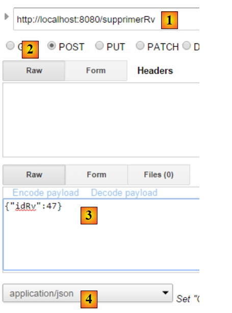 |
 |
- in [5], the [status=0] field indicates that the deletion was successful;
With an appointment ID that does not exist, we get the following:
 |
We are done with the controller. Now let’s see how to run the project.
8.4.11.18. The web service's executable class
 |
The [Boot] [1] class is as follows:
package rdvmedecins.web.boot;
import org.springframework.boot.SpringApplication;
import rdvmedecins.web.config.AppConfig;
public class Boot {
public static void main(String[] args) {
SpringApplication.run(AppConfig.class, args);
}
}
Line 10: The static method [SpringApplication.run] is executed with the project configuration class [AppConfig] as its first parameter. This method will auto-configure the project, start the Tomcat server embedded in the dependencies, and deploy the [RdvMedecinsController] controller to it.
Logs are controlled by the following files [2]:
[logback.xml]
<configuration>
<appender name="STDOUT" class="ch.qos.logback.core.ConsoleAppender">
<!-- encoders are by default assigned the type ch.qos.logback.classic.encoder.PatternLayoutEncoder -->
<encoder>
<pattern>%d{HH:mm:ss.SSS} [%thread] %-5level %logger{36} - %msg%n</pattern>
</encoder>
</appender>
<!-- log level control -->
<root level="info"> <!-- off, info, debug, warn -->
<appender-ref ref="STDOUT" />
</root>
</configuration>
- line 9: the general log level is set to [info];
[application.properties]
logging.level.org.springframework.web=INFO
logging.level.org.hibernate=OFF
spring.main.show-banner=false
Lines 1-2 set a specific logging level for certain parts of the application:
- line 1: we want logs from the [web] layer;
- line 2: we do not want logs from the [JPA] layer;
- line 3: no Spring Boot banner;
The logs during execution are as follows:
11:06:04,279 |-INFO in ch.qos.logback.classic.LoggerContext[default] - Could NOT find resource [logback.groovy]
11:06:04,279 |-INFO in ch.qos.logback.classic.LoggerContext[default] - Could NOT find resource [logback-test.xml]
11:06:04.279 |-INFO in ch.qos.logback.classic.LoggerContext[default] - Found resource [logback.xml] at [file:/D:/data/istia-1516/projets/springmvc-thymeleaf/dvp-final/etude-de-cas/rdvmedecins-webjson-server/target/classes/logback.xml]
11:06:04,279 |-WARN in ch.qos.logback.classic.LoggerContext[default] - Resource [logback.xml] occurs multiple times on the classpath.
11:06:04,279 |-WARN in ch.qos.logback.classic.LoggerContext[default] - Resource [logback.xml] occurs at [file:/D:/data/istia-1516/projets/springmvc-thymeleaf/dvp-final/etude-de-cas/rdvmedecins-metier-dao/target/classes/logback.xml]
11:06:04.279 |-WARN in ch.qos.logback.classic.LoggerContext[default] - Resource [logback.xml] occurs at [file:/D:/data/istia-1516/projets/springmvc-thymeleaf/dvp-final/etude-de-cas/rdvmedecins-webjson-server/target/classes/logback.xml]
11:06:04.342 |-INFO in ch.qos.logback.classic.joran.action.ConfigurationAction - debug attribute not set
11:06:04,342 |-INFO in ch.qos.logback.core.joran.action.AppenderAction - About to instantiate appender of type [ch.qos.logback.core.ConsoleAppender]
11:06:04.342 |-INFO in ch.qos.logback.core.joran.action.AppenderAction - Naming appender as [STDOUT]
11:06:04,357 |-INFO in ch.qos.logback.core.joran.action.NestedComplexPropertyIA - Assuming default type [ch.qos.logback.classic.encoder.PatternLayoutEncoder] for [encoder] property
11:06:04,404 |-INFO in ch.qos.logback.classic.joran.action.RootLoggerAction - Setting level of ROOT logger to INFO
11:06:04,404 |-INFO in ch.qos.logback.core.joran.action.AppenderRefAction - Attaching appender named [STDOUT] to Logger[ROOT]
11:06:04,404 |-INFO in ch.qos.logback.classic.joran.action.ConfigurationAction - End of configuration.
11:06:04.420 |-INFO in ch.qos.logback.classic.joran.JoranConfigurator@56f4468b - Registering current configuration as safe fallback point
11:06:04.732 [main] INFO rdvmedecins.web.boot.Boot - Starting Boot on Gportpers3 with PID 420 (D:\data\istia-1516\projects\springmvc-thymeleaf\dvp-final\case-study\rdvmedecins-webjson-server\target\classes started by usrlocal in D:\data\istia-1516\projects\springmvc-thymeleaf\dvp-final\case-study\rdvmedecins-webjson-server)
11:06:04.775 [main] INFO o.s.b.c.e.AnnotationConfigEmbeddedWebApplicationContext - Refreshing org.springframework.boot.context.embedded.AnnotationConfigEmbeddedWebApplicationContext@2ea6137: startup date [Wed Oct 14 11:06:04 CEST 2015]; root of context hierarchy
11:06:05.538 [main] INFO o.s.b.c.e.t.TomcatEmbeddedServletContainer - Tomcat initialized with port(s): 8080 (http)
11:06:05.688 [main] INFO o.a.catalina.core.StandardService - Starting Tomcat service
11:06:05.689 [main] INFO o.a.catalina.core.StandardEngine - Starting Servlet Engine: Apache Tomcat/8.0.26
11:06:05.833 [localhost-startStop-1] INFO o.a.c.c.C.[Tomcat].[localhost].[/] - Initializing Spring embedded WebApplicationContext
11:06:05.833 [localhost-startStop-1] INFO o.s.web.context.ContextLoader - Root WebApplicationContext: initialization completed in 1061 ms
11:06:06.231 [localhost-startStop-1] INFO o.s.o.j.LocalContainerEntityManagerFactoryBean - Building JPA container EntityManagerFactory for persistence unit 'default'
11:06:09.234 [localhost-startStop-1] INFO o.s.s.web.DefaultSecurityFilterChain - Creating filter chain: org.springframework.security.web.util.matcher.AnyRequestMatcher@1, [org.springframework.security.web.context.request.async.WebAsyncManagerIntegrationFilter@12d14fa, org.springframework.security.web.context.SecurityContextPersistenceFilter@29823fb6, org.springframework.security.web.header.HeaderWriterFilter@662d93b2, org.springframework.security.web.authentication.logout.LogoutFilter@2d81ee0, org.springframework.security.web.authentication.www.BasicAuthenticationFilter@52aa47ad, org.springframework.security.web.savedrequest.RequestCacheAwareFilter@60bd7a74, org.springframework.security.web.servletapi.SecurityContextHolderAwareRequestFilter@5a374232, org.springframework.security.web.authentication.AnonymousAuthenticationFilter@7ddb4452, org.springframework.security.web.session.SessionManagementFilter@2cd9855f, org.springframework.security.web.access.ExceptionTranslationFilter@2263f0a2, org.springframework.security.web.access.intercept.FilterSecurityInterceptor@192ce7f6]
11:06:09.255 [localhost-startStop-1] INFO o.s.b.c.e.ServletRegistrationBean - Mapping servlet: 'dispatcherServlet' to [/*]
11:06:09.255 [localhost-startStop-1] INFO o.s.b.c.e.FilterRegistrationBean - Mapping filter: 'springSecurityFilterChain' to: [/*]
11:06:09.536 [main] INFO o.s.w.s.m.m.a.RequestMappingHandlerMapping - Mapped "{[/authenticate],methods=[GET]}" onto public rdvmedecins.web.models.Response<java.lang.Void> rdvmedecins.web.controllers.RdvMedecinsController.authenticate(javax.servlet.http.HttpServletResponse,java.lang.String)
11:06:09.536 [main] INFO o.s.w.s.m.m.a.RequestMappingHandlerMapping - Mapped "{[/getAgendaMedecinJour/{idMedecin}/{jour}],methods=[GET]}" onto public rdvmedecins.web.models.Response<java.lang.String> rdvmedecins.web.controllers.RdvMedecinsController.getAgendaMedecinJour(long,java.lang.String,javax.servlet.http.HttpServletResponse,java.lang.String) throws com.fasterxml.jackson.core.JsonProcessingException
11:06:09.536 [main] INFO o.s.w.s.m.m.a.RequestMappingHandlerMapping - Mapped "{[/getAllCreneaux/{idMedecin}],methods=[GET]}" onto public rdvmedecins.web.models.Response<java.lang.String> rdvmedecins.web.controllers.RdvMedecinsController.getAllCreneaux(long, javax.servlet.http.HttpServletResponse, java.lang.String) throws com.fasterxml.jackson.core.JsonProcessingException
11:06:09.536 [main] INFO o.s.w.s.m.m.a.RequestMappingHandlerMapping - Mapped "{[/getRvMedecinJour/{idMedecin}/{jour}],methods=[GET]}" onto public rdvmedecins.web.models.Response<java.lang.String> rdvmedecins.web.controllers.RdvMedecinsController.getRvMedecinJour(long,java.lang.String,javax.servlet.http.HttpServletResponse,java.lang.String) throws com.fasterxml.jackson.core.JsonProcessingException
11:06:09.536 [main] INFO o.s.w.s.m.m.a.RequestMappingHandlerMapping - Mapped "{[/getMedecinById/{id}],methods=[GET]}" onto public rdvmedecins.web.models.Response<rdvmedecins.entities.Medecin> rdvmedecins.web.controllers.RdvMedecinsController.getMedecinById(long, javax.servlet.http.HttpServletResponse, java.lang.String)
11:06:09.536 [main] INFO o.s.w.s.m.m.a.RequestMappingHandlerMapping - Mapped "{[/getClientById/{id}],methods=[GET]}" onto public rdvmedecins.web.models.Response<rdvmedecins.entities.Client> rdvmedecins.web.controllers.RdvMedecinsController.getClientById(long, javax.servlet.http.HttpServletResponse, java.lang.String)
11:06:09.536 [main] INFO o.s.w.s.m.m.a.RequestMappingHandlerMapping - Mapped "{[/supprimerRv],methods=[POST],consumes=[application/json;charset=UTF-8]}" onto public rdvmedecins.web.models.Response<java.lang.Void> rdvmedecins.web.controllers.RdvMedecinsController.supprimerRv(rdvmedecins.web.models.PostSupprimerRv,javax.servlet.http.HttpServletResponse,java.lang.String)
11:06:09.536 [main] INFO o.s.w.s.m.m.a.RequestMappingHandlerMapping - Mapped "{[/getAllClients],methods=[GET]}" onto public rdvmedecins.web.models.Response<java.util.List<rdvmedecins.entities.Client>> rdvmedecins.web.controllers.RdvMedecinsController.getAllClients(javax.servlet.http.HttpServletResponse,java.lang.String)
11:06:09.536 [main] INFO o.s.w.s.m.m.a.RequestMappingHandlerMapping - Mapped "{[/ajouterRv],methods=[POST],consumes=[application/json;charset=UTF-8]}" onto public rdvmedecins.web.models.Response<java.lang.String> rdvmedecins.web.controllers.RdvMedecinsController.ajouterRv(rdvmedecins.web.models.PostAjouterRv,javax.servlet.http.HttpServletResponse,java.lang.String) throws com.fasterxml.jackson.core.JsonProcessingException
11:06:09.536 [main] INFO o.s.w.s.m.m.a.RequestMappingHandlerMapping - Mapped "{[/getCreneauById/{id}],methods=[GET]}" onto public rdvmedecins.web.models.Response<java.lang.String> rdvmedecins.web.controllers.RdvMedecinsController.getCreneauById(long, javax.servlet.http.HttpServletResponse, java.lang.String) throws com.fasterxml.jackson.core.JsonProcessingException
11:06:09.536 [main] INFO o.s.w.s.m.m.a.RequestMappingHandlerMapping - Mapped "{[/getAllMedecins],methods=[GET]}" onto public rdvmedecins.web.models.Response<java.util.List<rdvmedecins.entities.Medecin>> rdvmedecins.web.controllers.RdvMedecinsController.getAllMedecins(javax.servlet.http.HttpServletResponse,java.lang.String)
11:06:09.536 [main] INFO o.s.w.s.m.m.a.RequestMappingHandlerMapping - Mapped "{[/getRvById/{id}],methods=[GET]}" onto public rdvmedecins.web.models.Response<java.lang.String> rdvmedecins.web.controllers.RdvMedecinsController.getRvById(long, javax.servlet.http.HttpServletResponse, java.lang.String) throws com.fasterxml.jackson.core.JsonProcessingException
...
11:06:09.677 [main] INFO o.s.w.s.m.m.a.RequestMappingHandlerAdapter - Looking for @ControllerAdvice: org.springframework.boot.context.embedded.AnnotationConfigEmbeddedWebApplicationContext@2ea6137: startup date [Wed Oct 14 11:06:04 CEST 2015]; root of context hierarchy
11:06:09.770 [main] INFO o.a.coyote.http11.Http11NioProtocol - Initializing ProtocolHandler ["http-nio-8080"]
11:06:09.786 [main] INFO o.a.coyote.http11.Http11NioProtocol - Starting ProtocolHandler ["http-nio-8080"]
11:06:09.802 [main] INFO o.a.tomcat.util.net.NioSelectorPool - Using a shared selector for servlet write/read
11:06:09.817 [main] INFO o.s.b.c.e.t.TomcatEmbeddedServletContainer - Tomcat started on port(s): 8080 (http)
11:06:09.817 [main] INFO rdvmedecins.web.boot.Boot - Boot started in 5.319 seconds (JVM running for 6.053)
- line 18: the Tomcat server is active;
- line 21: the Spring context is being initialized;
- lines 27–38: the URLs exposed by the web service are being discovered;
- line 44: the Tomcat server is ready and waiting for requests on port 8080;
If we modify the [application.properties] file as follows:
logging.level.org.springframework.web: OFF
logging.level.org.hibernate:OFF
spring.main.show-banner=false
we get the following logs:
11:12:12,107 |-INFO in ch.qos.logback.classic.LoggerContext[default] - Could NOT find resource [logback.groovy]
11:12:12,108 |-INFO in ch.qos.logback.classic.LoggerContext[default] - Could NOT find resource [logback-test.xml]
11:12:12,108 |-INFO in ch.qos.logback.classic.LoggerContext[default] - Found resource [logback.xml] at [file:/D:/data/istia-1516/projets/springmvc-thymeleaf/dvp-final/etude-de-cas/rdvmedecins-webjson-server/target/classes/logback.xml]
11:12:12,108 |-WARN in ch.qos.logback.classic.LoggerContext[default] - Resource [logback.xml] occurs multiple times on the classpath.
11:12:12,108 |-WARN in ch.qos.logback.classic.LoggerContext[default] - Resource [logback.xml] occurs at [file:/D:/data/istia-1516/projets/springmvc-thymeleaf/dvp-final/etude-de-cas/rdvmedecins-metier-dao/target/classes/logback.xml]
11:12:12,108 |-WARN in ch.qos.logback.classic.LoggerContext[default] - Resource [logback.xml] occurs at [file:/D:/data/istia-1516/projets/springmvc-thymeleaf/dvp-final/etude-de-cas/rdvmedecins-webjson-server/target/classes/logback.xml]
11:12:12,172 |-INFO in ch.qos.logback.classic.joran.action.ConfigurationAction - debug attribute not set
11:12:12,174 |-INFO in ch.qos.logback.core.joran.action.AppenderAction - About to instantiate appender of type [ch.qos.logback.core.ConsoleAppender]
11:12:12,186 |-INFO in ch.qos.logback.core.joran.action.AppenderAction - Naming appender as [STDOUT]
11:12:12,205 |-INFO in ch.qos.logback.core.joran.action.NestedComplexPropertyIA - Assuming default type [ch.qos.logback.classic.encoder.PatternLayoutEncoder] for [encoder] property
11:12:12,255 |-INFO in ch.qos.logback.classic.joran.action.RootLoggerAction - Setting level of ROOT logger to INFO
11:12:12,255 |-INFO in ch.qos.logback.core.joran.action.AppenderRefAction - Attaching appender named [STDOUT] to Logger[ROOT]
11:12:12,256 |-INFO in ch.qos.logback.classic.joran.action.ConfigurationAction - End of configuration.
11:12:12,257 |-INFO in ch.qos.logback.classic.joran.JoranConfigurator@56f4468b - Registering current configuration as safe fallback point
11:12:12.567 [main] INFO rdvmedecins.web.boot.Boot - Starting Boot on Gportpers3 with PID 5856 (D:\data\istia-1516\projects\springmvc-thymeleaf\dvp-final\case-study\rdvmedecins-webjson-server\target\classes started by usrlocal in D:\data\istia-1516\projects\springmvc-thymeleaf\dvp-final\case-study\rdvmedecins-webjson-server)
11:12:12.602 [main] INFO o.s.b.c.e.AnnotationConfigEmbeddedWebApplicationContext - Refreshing org.springframework.boot.context.embedded.AnnotationConfigEmbeddedWebApplicationContext@2ea6137: startup date [Wed Oct 14 11:12:12 CEST 2015]; root of context hierarchy
11:12:13.363 [main] INFO o.s.b.c.e.t.TomcatEmbeddedServletContainer - Tomcat initialized with port(s): 8080 (http)
11:12:13.503 [main] INFO o.a.catalina.core.StandardService - Starting Tomcat service
11:12:13.503 [main] INFO o.a.catalina.core.StandardEngine - Starting Servlet Engine: Apache Tomcat/8.0.26
11:12:13.644 [localhost-startStop-1] INFO o.a.c.c.C.[Tomcat].[localhost].[/] - Initializing Spring embedded WebApplicationContext
11:12:14.044 [localhost-startStop-1] INFO o.s.o.j.LocalContainerEntityManagerFactoryBean - Building JPA container EntityManagerFactory for persistence unit 'default'
11:12:17.229 [localhost-startStop-1] INFO o.s.s.web.DefaultSecurityFilterChain - Creating filter chain: org.springframework.security.web.util.matcher.AnyRequestMatcher@1, [org.springframework.security.web.context.request.async.WebAsyncManagerIntegrationFilter@141859ba, org.springframework.security.web.context.SecurityContextPersistenceFilter@19925f3b, org.springframework.security.web.header.HeaderWriterFilter@3083c83b, org.springframework.security.web.authentication.logout.LogoutFilter@7c22ac3b, org.springframework.security.web.authentication.www.BasicAuthenticationFilter@126fe543, org.springframework.security.web.savedrequest.RequestCacheAwareFilter@8eecab2, org.springframework.security.web.servletapi.SecurityContextHolderAwareRequestFilter@91b42ad, org.springframework.security.web.authentication.AnonymousAuthenticationFilter@5e33581f, org.springframework.security.web.session.SessionManagementFilter@10abfbc1, org.springframework.security.web.access.ExceptionTranslationFilter@3e933729, org.springframework.security.web.access.intercept.FilterSecurityInterceptor@3c8f6f86]
11:12:17.259 [localhost-startStop-1] INFO o.s.b.c.e.ServletRegistrationBean - Mapping servlet: 'dispatcherServlet' to [/*]
11:12:17.259 [localhost-startStop-1] INFO o.s.b.c.e.FilterRegistrationBean - Mapping filter: 'springSecurityFilterChain' to: [/*]
11:12:17.837 [main] INFO o.a.coyote.http11.Http11NioProtocol - Initializing ProtocolHandler ["http-nio-8080"]
11:12:17.853 [main] INFO o.a.coyote.http11.Http11NioProtocol - Starting ProtocolHandler ["http-nio-8080"]
11:12:17.869 [main] INFO o.a.tomcat.util.net.NioSelectorPool - Using a shared selector for servlet write/read
11:12:17.900 [main] INFO o.s.b.c.e.t.TomcatEmbeddedServletContainer - Tomcat started on port(s): 8080 (http)
11:12:17.902 [main] INFO rdvmedecins.web.boot.Boot - Boot started in 5.545 seconds (JVM running for 6.305)
Furthermore, if we modify the [logback.xml] file as follows:
<configuration>
<appender name="STDOUT" class="ch.qos.logback.core.ConsoleAppender">
<!-- encoders are by default assigned the type ch.qos.logback.classic.encoder.PatternLayoutEncoder -->
<encoder>
<pattern>%d{HH:mm:ss.SSS} [%thread] %-5level %logger{36} - %msg%n</pattern>
</encoder>
</appender>
<!-- log level control -->
<root level="off"> <!-- off, info, debug, warn -->
<appender-ref ref="STDOUT" />
</root>
</configuration>
The following logs are obtained:
11:14:53.862 |-INFO in ch.qos.logback.classic.LoggerContext[default] - Could NOT find resource [logback.groovy]
11:14:53.862 |-INFO in ch.qos.logback.classic.LoggerContext[default] - Could NOT find resource [logback-test.xml]
11:14:53.862 |-INFO in ch.qos.logback.classic.LoggerContext[default] - Found resource [logback.xml] at [file:/D:/data/istia-1516/projets/springmvc-thymeleaf/dvp-final/etude-de-cas/rdvmedecins-webjson-server/target/classes/logback.xml]
11:14:53.862 |-WARN in ch.qos.logback.classic.LoggerContext[default] - Resource [logback.xml] occurs multiple times on the classpath.
11:14:53.862 |-WARN in ch.qos.logback.classic.LoggerContext[default] - Resource [logback.xml] occurs at [file:/D:/data/istia-1516/projets/springmvc-thymeleaf/dvp-final/etude-de-cas/rdvmedecins-metier-dao/target/classes/logback.xml]
11:14:53.862 |-WARN in ch.qos.logback.classic.LoggerContext[default] - Resource [logback.xml] occurs at [file:/D:/data/istia-1516/projets/springmvc-thymeleaf/dvp-final/etude-de-cas/rdvmedecins-webjson-server/target/classes/logback.xml]
11:14:53.924 |-INFO in ch.qos.logback.classic.joran.action.ConfigurationAction - debug attribute not set
11:14:53,924 |-INFO in ch.qos.logback.core.joran.action.AppenderAction - About to instantiate appender of type [ch.qos.logback.core.ConsoleAppender]
11:14:53.940 |-INFO in ch.qos.logback.core.joran.action.AppenderAction - Naming appender as [STDOUT]
11:14:53.956 |-INFO in ch.qos.logback.core.joran.action.NestedComplexPropertyIA - Assuming default type [ch.qos.logback.classic.encoder.PatternLayoutEncoder] for [encoder] property
11:14:54.002 |-INFO in ch.qos.logback.classic.joran.action.RootLoggerAction - Setting level of ROOT logger to OFF
11:14:54,002 |-INFO in ch.qos.logback.core.joran.action.AppenderRefAction - Attaching appender named [STDOUT] to Logger[ROOT]
11:14:54.002 |-INFO in ch.qos.logback.classic.joran.action.ConfigurationAction - End of configuration.
11:14:54,002 |-INFO in ch.qos.logback.classic.joran.JoranConfigurator@56f4468b - Registering current configuration as safe fallback point
We can see, therefore, that we have some control over the logs that appear in the console. The [info] level is often the appropriate log level.
We now have an operational web service that can be queried using a web client. We will now address securing this service: we want only certain people to be able to manage doctors’ appointments. To do this, we will use the Spring Security framework, a component of the Spring ecosystem.
8.4.12. Introduction to Spring Security
We will import a Spring guide again by following steps 1 through 3 below:
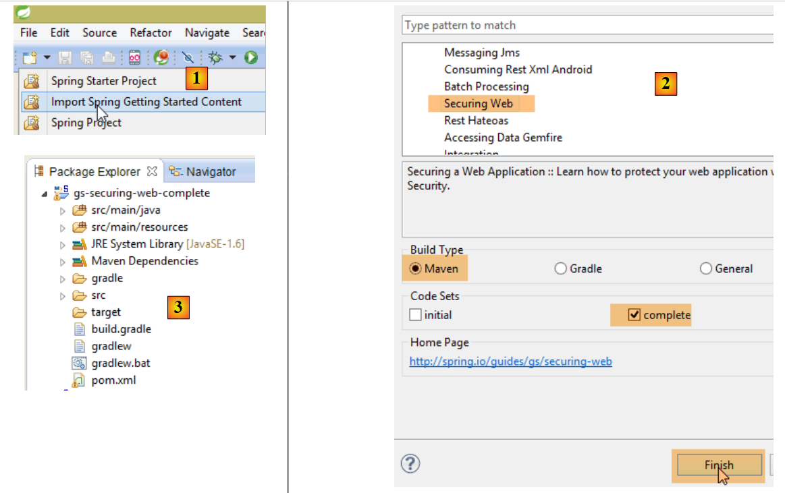 |
 |
The project consists of the following elements:
- In the [templates] folder, you will find the project's HTML pages;
- [Application]: is the project’s executable class;
- [MvcConfig]: is the Spring MVC configuration class;
- [WebSecurityConfig]: is the Spring Security configuration class;
8.4.12.1. Maven Configuration
Project [3] is a Maven project. Let’s examine its [pom.xml] file to see its dependencies:
<?xml version="1.0" encoding="UTF-8"?>
<project xmlns="http://maven.apache.org/POM/4.0.0" xmlns:xsi="http://www.w3.org/2001/XMLSchema-instance"
xsi:schemaLocation="http://maven.apache.org/POM/4.0.0 http://maven.apache.org/xsd/maven-4.0.0.xsd">
<modelVersion>4.0.0</modelVersion>
<groupId>org.springframework</groupId>
<artifactId>gs-securing-web</artifactId>
<version>0.1.0</version>
<parent>
<groupId>org.springframework.boot</groupId>
<artifactId>spring-boot-starter-parent</artifactId>
<version>1.1.10.RELEASE</version>
</parent>
<dependencies>
<dependency>
<groupId>org.springframework.boot</groupId>
<artifactId>spring-boot-starter-thymeleaf</artifactId>
</dependency>
<!-- tag::security[] -->
<dependency>
<groupId>org.springframework.boot</groupId>
<artifactId>spring-boot-starter-security</artifactId>
</dependency>
<!-- end::security[] -->
</dependencies>
<properties>
<start-class>hello.Application</start-class>
</properties>
<build>
<plugins>
<plugin>
<groupId>org.springframework.boot</groupId>
<artifactId>spring-boot-maven-plugin</artifactId>
</plugin>
</plugins>
</build>
</project>
- lines 10–14: the project is a Spring Boot project;
- lines 17–20: dependency on the [Thymeleaf] framework;
- lines 22–25: dependency on the Spring Security framework;
8.4.12.2. Thymeleaf views
 |
The [home.html] view is as follows:
 |
<!DOCTYPE html>
<html xmlns="http://www.w3.org/1999/xhtml"
xmlns:th="http://www.thymeleaf.org"
xmlns:sec="http://www.thymeleaf.org/thymeleaf-extras-springsecurity3">
<head>
<title>Spring Security Example</title>
</head>
<body>
<h1>Welcome!</h1>
<p>
Click <a th:href="@{/hello}">here</a> to see a greeting.
</p>
</body>
</html>
- line 12: the attribute [th:href="@{/hello}"] will generate the [href] attribute of the <a> tag. The value [@{/hello}] will generate the path [<context>/hello], where [context] is the context of the web application;
The generated HTML code is as follows:
<!DOCTYPE html>
<html xmlns="http://www.w3.org/1999/xhtml" xmlns:sec="http://www.thymeleaf.org/thymeleaf-extras-springsecurity3">
<head>
<title>Spring Security Example</title>
</head>
<body>
<h1>Welcome!</h1>
<p>
Click
<a href="/hello">here</a>
to see a greeting.
</p>
</body>
</html>
The [hello.html] view is as follows:
 |
<!DOCTYPE html>
<html xmlns="http://www.w3.org/1999/xhtml"
xmlns:th="http://www.thymeleaf.org"
xmlns:sec="http://www.thymeleaf.org/thymeleaf-extras-springsecurity3">
<head>
<title>Hello World!</title>
</head>
<body>
<h1 th:inline="text">Hello [[${#httpServletRequest.remoteUser}]]!</h1>
<form th:action="@{/logout}" method="post">
<input type="submit" value="Sign Out" />
</form>
</body>
</html>
- line 9: The [th:inline="text"] attribute will generate the text of the <h1> tag. This text contains a $ expression that must be evaluated. The element [[${#httpServletRequest.remoteUser}]] is the value of the [RemoteUser] attribute of the current HTTP request. This is the name of the logged-in user;
- line 10: an HTML form. The [th:action="@{/logout}"] attribute will generate the [action] attribute of the [form] tag. The value [@{/logout}] will generate the path [<context>/logout], where [context] is the web application context;
The generated HTML code is as follows:
<!DOCTYPE html>
<html xmlns="http://www.w3.org/1999/xhtml" xmlns:sec="http://www.thymeleaf.org/thymeleaf-extras-springsecurity3">
<head>
<title>Hello World!</title>
</head>
<body>
<h1>Hello user!</h1>
<form method="post" action="/logout">
<input type="submit" value="Sign Out" />
<input type="hidden" name="_csrf" value="b152e5b9-d1a4-4492-b89d-b733fe521c91" />
</form>
</body>
</html>
- line 8: the translation of Hello [[${#httpServletRequest.remoteUser}]]!;
- line 9: the translation of @{/logout};
- line 11: a hidden field named (name attribute) _csrf;
The final view [login.html] is as follows:
 |
<!DOCTYPE html>
<html xmlns="http://www.w3.org/1999/xhtml"
xmlns:th="http://www.thymeleaf.org"
xmlns:sec="http://www.thymeleaf.org/thymeleaf-extras-springsecurity3">
<head>
<title>Spring Security Example</title>
</head>
<body>
<div th:if="${param.error}">Invalid username and password.</div>
<div th:if="${param.logout}">You have been logged out.</div>
<form th:action="@{/login}" method="post">
<div>
<label> User Name : <input type="text" name="username" />
</label>
</div>
<div>
<label> Password: <input type="password" name="password" />
</label>
</div>
<div>
<input type="submit" value="Sign In" />
</div>
</form>
</body>
</html>
- line 9: the attribute [th:if="${param.error}"] ensures that the <div> tag will only be generated if the URL displaying the login page contains the [error] parameter (http://context/login?error);
- line 10: the attribute [th:if="${param.logout}"] ensures that the <div> tag will only be generated if the URL displaying the login page contains the [logout] parameter (http://context/login?logout);
- lines 11–23: an HTML form;
- line 11: the form will be submitted to the URL [<context>/login], where <context> is the web application context;
- line 13: an input field named [username];
- line 17: an input field named [password];
The generated HTML code is as follows:
<!DOCTYPE html>
<html xmlns="http://www.w3.org/1999/xhtml" xmlns:sec="http://www.thymeleaf.org/thymeleaf-extras-springsecurity3">
<head>
<title>Spring Security Example </title>
</head>
<body>
<div>
You have been logged out.
</div>
<form method="post" action="/login">
<div>
<label>
Username:
<input type="text" name="username" />
</label>
</div>
<div>
<label>
Password:
<input type="password" name="password" />
</label>
</div>
<div>
<input type="submit" value="Sign In" />
</div>
<input type="hidden" name="_csrf" value="ef809b0a-88b4-4db9-bc53-342216b77632" />
</form>
</body>
</html>
Note on line 28 that Thymeleaf has added a hidden field named [_csrf].
8.4.12.3. Spring MVC Configuration
 |
The [MvcConfig] class configures the Spring MVC framework:
package hello;
import org.springframework.context.annotation.Configuration;
import org.springframework.web.servlet.config.annotation.ViewControllerRegistry;
import org.springframework.web.servlet.config.annotation.WebMvcConfigurerAdapter;
@Configuration
public class MvcConfig extends WebMvcConfigurerAdapter {
@Override
public void addViewControllers(ViewControllerRegistry registry) {
registry.addViewController("/home").setViewName("home");
registry.addViewController("/").setViewName("home");
registry.addViewController("/hello").setViewName("hello");
registry.addViewController("/login").setViewName("login");
}
}
- line 7: the [@Configuration] annotation makes the [MvcConfig] class a configuration class;
- line 8: the [MvcConfig] class extends the [WebMvcConfigurerAdapter] class to override certain methods;
- line 10: redefinition of a method from the parent class;
- lines 11–16: the [addViewControllers] method allows URLs to be associated with HTML views. The following associations are made there:
URL | view |
/templates/home.html | |
/templates/hello.html | |
/templates/login.html |
The [html] suffix and the [templates] folder are the default values used by Thymeleaf. They can be changed via configuration. The [templates] folder must be at the root of the project's classpath:
 |
In [1] above, the [java] and [resources] folders are both source folders. This means their contents will be at the root of the project’s classpath. Therefore, in [2], the [hello] and [templates] folders will be at the root of the classpath.
8.4.12.4. Spring Security Configuration
 |
The [WebSecurityConfig] class configures the Spring Security framework:
package hello;
import org.springframework.context.annotation.Configuration;
import org.springframework.security.config.annotation.authentication.builders.AuthenticationManagerBuilder;
import org.springframework.security.config.annotation.web.builders.HttpSecurity;
import org.springframework.security.config.annotation.web.configuration.WebSecurityConfigurerAdapter;
import org.springframework.security.config.annotation.web.servlet.configuration.EnableWebMvcSecurity;
@Configuration
@EnableWebMvcSecurity
public class WebSecurityConfig extends WebSecurityConfigurerAdapter {
@Override
protected void configure(HttpSecurity http) throws Exception {
http.authorizeRequests().antMatchers("/", "/home").permitAll().anyRequest().authenticated();
http.formLogin().loginPage("/login").permitAll().and().logout().permitAll();
}
@Override
protected void configure(AuthenticationManagerBuilder auth) throws Exception {
auth.inMemoryAuthentication().withUser("user").password("password").roles("USER");
}
}
- line 9: the [@Configuration] annotation makes the [WebSecurityConfig] class a configuration class;
- line 10: the [@EnableWebSecurity] annotation makes the [WebSecurityConfig] class a Spring Security configuration class;
- line 11: the [WebSecurity] class extends the [WebSecurityConfigurerAdapter] class to override certain methods;
- line 12: redefinition of a method from the parent class;
- lines 13–16: the [configure(HttpSecurity http)] method is overridden to define access rights for the application’s various URLs;
- line 14: the [http.authorizeRequests()] method allows URLs to be associated with access rights. The following associations are made there:
URL | rule | code |
access without authentication | | |
authenticated access only |
- line 15: defines the authentication method. Authentication is performed via a URL form [/login] accessible to everyone [http.formLogin().loginPage("/login").permitAll()]. Logout is also accessible to everyone;
- lines 19–21: redefine the method [configure(AuthenticationManagerBuilder auth)] that manages users;
- line 20: authentication is performed using hard-coded users [auth.inMemoryAuthentication()]. A user is defined here with the login [user], password [password], and role [USER]. Users with the same role can be granted the same permissions;
8.4.12.5. Executable class
 |
The [Application] class is as follows:
package hello;
import org.springframework.boot.autoconfigure.EnableAutoConfiguration;
import org.springframework.boot.SpringApplication;
import org.springframework.context.annotation.ComponentScan;
import org.springframework.context.annotation.Configuration;
@EnableAutoConfiguration
@Configuration
@ComponentScan
public class Application {
public static void main(String[] args) throws Throwable {
SpringApplication.run(Application.class, args);
}
}
- Line 8: The [@EnableAutoConfiguration] annotation instructs Spring Boot (line 3) to perform the configuration that the developer has not explicitly set up;
- line 9: makes the [Application] class a Spring configuration class;
- line 10: instructs the system to scan the directory containing the [Application] class to search for Spring components. The two classes [MvcConfig] and [WebSecurityConfig] will thus be discovered because they have the [@Configuration] annotation;
- line 13: the [main] method of the executable class;
- line 14: the static method [SpringApplication.run] is executed with the [Application] configuration class as a parameter. We have already encountered this process and know that the Tomcat server embedded in the project’s Maven dependencies will be launched and the project deployed on it. We saw that four URLs were handled [/, /home, /login, /hello] and that some were protected by access rights.
8.4.12.6. Testing the Application
Let’s start by requesting the URL [/], which is one of the four accepted URLs. It is associated with the view [/templates/home.html]:
 |
The requested URL [/] is accessible to everyone. That is why we were able to retrieve it. The link [here] is as follows:
The URL [/hello] will be requested when we click on the link. This one is protected:
URL | rule | code |
access without authentication | | |
authenticated access only |
You must be authenticated to access it. Spring Security will then redirect the client browser to the authentication page. Based on the configuration shown, this is the page at the URL [/login]. This page is accessible to everyone:
http.formLogin().loginPage("/login").permitAll().and().logout().permitAll();
So we get [1]:
 |
The source code for the resulting page is as follows:
- line 7, a hidden field appears that is not in the original [login.html] page. Thymeleaf added it. This code, known as CSRF (Cross-Site Request Forgery), is designed to eliminate a security vulnerability. This token must be sent back to Spring Security along with the authentication for it to be accepted;
We recall that only the user/password pair is recognized by Spring Security. If we enter something else in [2], we get the same page with an error message in [3]. Spring Security has redirected the browser to the URL [http://localhost:8080/login?error]. The presence of the [error] parameter triggered the display of the tag:
<div th:if="${param.error}">Invalid username and password.</div>
Now, let’s enter the expected user/password values [4]:
 |
- in [4], we log in;
- in [5], Spring Security redirects us to the URL [/hello] because that is the URL we requested when we were redirected to the login page. The user’s identity was displayed by the following line of [hello.html]:
<h1 th:inline="text">Hello [[${#httpServletRequest.remoteUser}]]!</h1>
Page [5] displays the following form:
<form th:action="@{/logout}" method="post">
<input type="submit" value="Sign Out" />
</form>
When you click the [Sign Out] button, a POST request is sent to the URL [/logout]. Like the URL [/login], this URL is accessible to everyone:
http.formLogin().loginPage("/login").permitAll().and().logout().permitAll();
In our URL/view mapping, we haven’t defined anything for the URL [/logout]. What will happen? Let’s try it:
 |
- In [6], we click the [Sign Out] button;
- in [7], we see that we have been redirected to the URL [http://localhost:8080/login?logout]. Spring Security requested this redirection. The presence of the [logout] parameter in the URL caused the following line to be displayed in the view:
<div th:if="${param.logout}">You have been logged out.</div>
8.4.12.7. Conclusion
In the previous example, we could have written the web application first and then secured it later. Spring Security is non-intrusive. You can implement security for a web application that has already been written. Furthermore, we discovered the following points:
- it is possible to define an authentication page;
- authentication must be accompanied by the CSRF token issued by Spring Security;
- if authentication fails, you are redirected to the authentication page with an additional error parameter in the URL;
- if authentication succeeds, you are redirected to the page requested at the time of authentication. If you request the authentication page directly without going through an intermediate page, Spring Security redirects you to the URL [/] (this case was not demonstrated);
- You log out by requesting the URL [/logout] with a POST request. Spring Security then redirects you to the authentication page with the "logout" parameter in the URL;
All these conclusions are based on Spring Security’s default behavior. This behavior can be changed through configuration by overriding certain methods of the [WebSecurityConfigurerAdapter] class.
The previous tutorial will be of little help to us going forward. We will, in fact, use:
- a database to store users, their passwords, and their roles;
- HTTP header-based authentication;
There are relatively few tutorials for what we want to do here. The solution we’ll propose is a combination of code snippets found here and there.
8.4.13. Implementing security on the appointment web service
8.4.13.1. The database
The [rdvmedecins] database is being updated to include users, their passwords, and their roles. Three new tables are being added:

Table [USERS]: users
- ID: primary key;
- VERSION: row versioning column;
- IDENTITY: a descriptive identifier for the user;
- LOGIN: the user's login;
- PASSWORD: their password;
In the USERS table, passwords are not stored in plain text:
 |
The algorithm used to encrypt passwords is the BCRYPT algorithm.
[ROLES] table: roles
- ID: primary key;
- VERSION: versioning column for the row;
- NAME: role name. By default, Spring Security expects names in the form ROLE_XX, for example ROLE_ADMIN or ROLE_GUEST;
 |
Table [USERS_ROLES]: USERS/ROLES join table
A user can have multiple roles, and a role can include multiple users. This is a many-to-many relationship represented by the [USERS_ROLES] table.
- ID: primary key;
- VERSION: row versioning column;
- USER_ID: user identifier;
- ROLE_ID: identifier of a role;
 |
Because we are modifying the database, all layers of the project [business logic, DAO, JPA] must be modified:
 |
8.4.13.2. The new STS project for [business logic, DAO, JPA]
The [rdvmedecins-business-dao] project evolves as follows:
 |
- in [1]: the new project;
- in [2]: the changes introduced by the implementation of security have been grouped into a single package [rdvmedecins.security]. These new elements belong to the [JPA] and [DAO] layers, but for simplicity they have been grouped into the same package.
8.4.13.3. The new [JPA] entities
 |
The JPA layer defines three new entities:
 |
The [User] class represents the [USERS] table:
package rdvmedecins.entities;
import javax.persistence.Column;
import javax.persistence.Entity;
import javax.persistence.Table;
@Entity
@Table(name = "USERS")
public class User extends AbstractEntity {
private static final long serialVersionUID = 1L;
// properties
private String identity;
private String login;
private String password;
// constructor
public User() {
}
public User(String identity, String login, String password) {
this.identity = identity;
this.login = login;
this.password = password;
}
// identity
@Override
public String toString() {
return String.format("User[%s,%s,%s]", identity, login, password);
}
// getters and setters
....
}
- line 9: the class extends the [AbstractEntity] class already used for the other entities;
- lines 13–15: no column names are specified because they have the same names as their associated fields;
The [Role] class mirrors the [ROLES] table:
package rdvmedecins.entities;
import javax.persistence.Column;
import javax.persistence.Entity;
import javax.persistence.Table;
@Entity
@Table(name = "ROLES")
public class Role extends AbstractEntity {
private static final long serialVersionUID = 1L;
// properties
private String name;
// constructors
public Role() {
}
public Role(String name) {
this.name = name;
}
// identity
@Override
public String toString() {
return String.format("Role[%s]", name);
}
// getters and setters
...
}
The [UserRole] class represents the [USERS_ROLES] table:
package rdvmedecins.entities;
import javax.persistence.Entity;
import javax.persistence.JoinColumn;
import javax.persistence.ManyToOne;
import javax.persistence.Table;
@Entity
@Table(name = "USERS_ROLES")
public class UserRole extends AbstractEntity {
private static final long serialVersionUID = 1L;
// A UserRole references a User
@ManyToOne
@JoinColumn(name = "USER_ID")
private User user;
// A UserRole references a Role
@ManyToOne
@JoinColumn(name = "ROLE_ID")
private Role role;
// getters and setters
...
}
- lines 15-17: define the foreign key from the [USERS_ROLES] table to the [USERS] table;
- lines 19-21: implement the foreign key from the [USERS_ROLES] table to the [ROLES] table;
8.4.13.4. Changes to the [DAO] layer
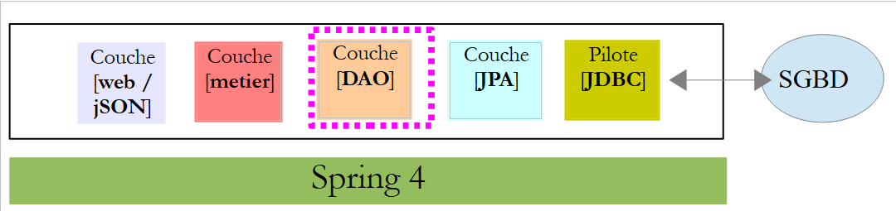 |
The [DAO] layer is enhanced with three new [Repository]s:
 |
The [UserRepository] interface manages access to [User] entities:
package rdvmedecins.repositories;
import org.springframework.data.jpa.repository.Query;
import org.springframework.data.repository.CrudRepository;
import rdvmedecins.entities.Role;
import rdvmedecins.entities.User;
public interface UserRepository extends CrudRepository<User, Long> {
// list of roles for a user identified by their ID
@Query("select ur.role from UserRole ur where ur.user.id=?1")
Iterable<Role> getRoles(long id);
// List of roles for a user identified by their login and password
@Query("select ur.role from UserRole ur where ur.user.login=?1 and ur.user.password=?2")
Iterable<Role> getRoles(String login, String password);
// Search for a user by their login
User findUserByLogin(String login);
}
- line 9: the [UserRepository] interface extends the Spring Data [CrudRepository] interface (line 4);
- lines 12-13: the [getRoles(User user)] method retrieves all roles for a user identified by their [id]
- lines 16-17: same as above, but for a user identified by their login and password;
- Line 20: to find a user by their login;
The [RoleRepository] interface manages access to [Role] entities:
package rdvmedecins.security;
import org.springframework.data.repository.CrudRepository;
public interface RoleRepository extends CrudRepository<Role, Long> {
// search for a role by name
Role findRoleByName(String name);
}
- line 5: the [RoleRepository] interface extends the [CrudRepository] interface;
- line 8: you can search for a role by its name;
The [userRoleRepository] interface manages access to [UserRole] entities:
package rdvmedecins.security;
import org.springframework.data.repository.CrudRepository;
public interface UserRoleRepository extends CrudRepository<UserRole, Long> {
}
- line 5: the [UserRoleRepository] interface simply extends the [CrudRepository] interface without adding any new methods;
8.4.13.5. User and Role Management Classes
 |
Spring Security requires the creation of a class that implements the following [UsersDetail] interface:
 |
This interface is implemented here by the [AppUserDetails] class:
package rdvmedecins.security;
import java.util.ArrayList;
import java.util.Collection;
import org.springframework.security.core.GrantedAuthority;
import org.springframework.security.core.authority.SimpleGrantedAuthority;
import org.springframework.security.core.userdetails.UserDetails;
public class AppUserDetails implements UserDetails {
private static final long serialVersionUID = 1L;
// properties
private User user;
private UserRepository userRepository;
// constructors
public AppUserDetails() {
}
public AppUserDetails(User user, UserRepository userRepository) {
this.user = user;
this.userRepository = userRepository;
}
// -------------------------interface
@Override
public Collection<? extends GrantedAuthority> getAuthorities() {
Collection<GrantedAuthority> authorities = new ArrayList<>();
for (Role role : userRepository.getRoles(user.getId())) {
authorities.add(new SimpleGrantedAuthority(role.getName()));
}
return authorities;
}
@Override
public String getPassword() {
return user.getPassword();
}
@Override
public String getUsername() {
return user.getLogin();
}
@Override
public boolean isAccountNonExpired() {
return true;
}
@Override
public boolean isAccountNonLocked() {
return true;
}
@Override
public boolean isCredentialsNonExpired() {
return true;
}
@Override
public boolean isEnabled() {
return true;
}
// getters and setters
...
}
- line 10: the [AppUserDetails] class implements the [UserDetails] interface;
- lines 15–16: the class encapsulates a user (line 15) and the repository that provides details about that user (line 16);
- lines 22–25: the constructor that instantiates the class with a user and its repository;
- lines 28–35: implementation of the [getAuthorities] method of the [UserDetails] interface. It must construct a collection of elements of type [GrantedAuthority] or a derived type. Here, we use the derived type [SimpleGrantedAuthority] (line 32), which encapsulates the name of one of the user’s roles from line 15;
- lines 31–33: we iterate through the list of the user’s roles from line 15 to build a list of elements of type [SimpleGrantedAuthority];
- lines 38–40: implement the [getPassword] method of the [UserDetails] interface. We return the password of the user from line 15;
- lines 38–40: implement the [getUserName] method of the [UserDetails] interface. Return the login of the user from line 15;
- lines 47–50: the user’s account never expires;
- lines 52–55: the user’s account is never locked;
- lines 57–60: the user’s credentials never expire;
- lines 62–65: the user’s account is always active;
Spring Security also requires the existence of a class that implements the [AppUserDetailsService] interface:
 |
This interface is implemented by the following [AppUserDetailsService] class:
package rdvmedecins.security;
import org.springframework.beans.factory.annotation.Autowired;
import org.springframework.security.core.userdetails.UserDetails;
import org.springframework.security.core.userdetails.UserDetailsService;
import org.springframework.security.core.userdetails.UsernameNotFoundException;
import org.springframework.stereotype.Service;
@Service
public class AppUserDetailsService implements UserDetailsService {
@Autowired
private UserRepository userRepository;
@Override
public UserDetails loadUserByUsername(String login) throws UsernameNotFoundException {
// search for the user by their login
User user = userRepository.findUserByLogin(login);
// Found?
if (user == null) {
throw new UsernameNotFoundException(String.format("Username [%s] does not exist", login));
}
// return the user details
return new AppUserDetails(user, userRepository);
}
}
- line 9: the class will be a Spring component, so it will be available in its context;
- lines 12–13: the [UserRepository] component will be injected here;
- lines 16–25: implementation of the [loadUserByUsername] method of the [UserDetailsService] interface (line 10). The parameter is the user’s login;
- line 18: the user is searched for using their login;
- lines 20–22: if the user is not found, an exception is thrown;
- line 24: an [AppUserDetails] object is constructed and returned. It is indeed of type [UserDetails] (line 16);
8.4.13.6. [DAO] Layer Tests
 |
First, we create an executable class [CreateUser] capable of creating a user with a role:
package rdvmedecins.security;
import org.springframework.context.annotation.AnnotationConfigApplicationContext;
import org.springframework.security.crypto.bcrypt.BCrypt;
import rdvmedecins.config.DomainAndPersistenceConfig;
import rdvmedecins.security.Role;
import rdvmedecins.security.RoleRepository;
import rdvmedecins.security.User;
import rdvmedecins.security.UserRepository;
import rdvmedecins.security.UserRole;
import rdvmedecins.security.UserRoleRepository;
public class CreateUser {
public static void main(String[] args) {
// syntax: login password roleName
// three parameters are required
if (args.length != 3) {
System.out.println("Syntax: [pg] user password role");
System.exit(0);
}
// retrieve the parameters
String login = args[0];
String password = args[1];
String roleName = String.format("ROLE_%s", args[2].toUpperCase());
// Spring context
AnnotationConfigApplicationContext context = new AnnotationConfigApplicationContext(DomainAndPersistenceConfig.class);
UserRepository userRepository = context.getBean(UserRepository.class);
RoleRepository roleRepository = context.getBean(RoleRepository.class);
UserRoleRepository userRoleRepository = context.getBean(UserRoleRepository.class);
// Does the role already exist?
Role role = roleRepository.findRoleByName(roleName);
// if it doesn't exist, create it
if (role == null) {
role = roleRepository.save(new Role(roleName));
}
// Does the user already exist?
User user = userRepository.findUserByLogin(login);
// if it doesn't exist, create it
if (user == null) {
// hash the password with bcrypt
String crypt = BCrypt.hashpw(password, BCrypt.gensalt());
// save the user
user = userRepository.save(new User(login, password, crypt));
// create the relationship with the role
userRoleRepository.save(new UserRole(user, role));
} else {
// The user already exists—does he have the requested role?
boolean found = false;
for (Role r : userRepository.getRoles(user.getId())) {
if (r.getName().equals(roleName)) {
found = true;
break;
}
}
// if not found, create the relationship with the role
if (!found) {
userRoleRepository.save(new UserRole(user, role));
}
}
// Close Spring context
context.close();
}
}
- line 17: the class expects three arguments defining a user: their login, password, and role;
- lines 25–27: the three parameters are retrieved;
- line 29: the Spring context is built from the configuration class [DomainAndPersistenceConfig]. This class already existed in the initial project. It must be updated as follows:
@EnableJpaRepositories(basePackages = { "rdvmedecins.repositories", "rdvmedecins.security" })
@EnableAutoConfiguration
@ComponentScan(basePackages = { "rdvmedecins" })
@EntityScan(basePackages = { "rdvmedecins.entities", "rdvmedecins.security" })
@EnableTransactionManagement
public class DomainAndPersistenceConfig {
....
}
- Line 1: You must specify that there are now [Repository] components in the [rdvmedecins.security] package;
- line 4: you must specify that there are now JPA entities in the [rdvmedecins.security] package;
Let’s go back to the code for creating a user:
- lines 30–32: we retrieve the references of the three [Repository] objects that may be useful for creating the user;
- line 34: we check if the role already exists;
- lines 36–38: if not, we create it in the database. It will have a name of the form [ROLE_XX];
- line 40: we check if the login already exists;
- lines 42-49: if the username does not exist, we create it in the database;
- line 44: we encrypt the password. Here, we use the [BCrypt] class from Spring Security (line 4). We therefore need the archives for this framework. The [pom.xml] file includes a new dependency:
<dependency>
<groupId>org.springframework.boot</groupId>
<artifactId>spring-boot-starter-security</artifactId>
</dependency>
- Line 46: The user is persisted in the database;
- line 48: as well as the relationship linking them to their role;
- lines 51–57: if the login already exists, we check whether the role we want to assign to them is already among their roles;
- lines 59–61: if the desired role is not found, a row is created in the [USERS_ROLES] table to link the user to their role;
- We have not protected against potential exceptions. This is a helper class for quickly creating a user with a role.
When the class is executed with the arguments [x x guest], the following results are obtained in the database:
Table [USERS]
 |
Table [ROLES]
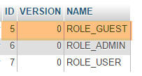 |
Table [USERS_ROLES]
 |
Now let’s consider the second class [UsersTest], which is a JUnit test:
|
package rdvmedecins.security;
import java.util.List;
import org.junit.Assert;
import org.junit.Test;
import org.junit.runner.RunWith;
import org.springframework.beans.factory.annotation.Autowired;
import org.springframework.boot.test.SpringApplicationConfiguration;
import org.springframework.security.core.authority.SimpleGrantedAuthority;
import org.springframework.security.crypto.bcrypt.BCrypt;
import org.springframework.test.context.junit4.SpringJUnit4ClassRunner;
import rdvmedecins.config.DomainAndPersistenceConfig;
import com.google.common.collect.Lists;
@SpringApplicationConfiguration(classes = DomainAndPersistenceConfig.class)
@RunWith(SpringJUnit4ClassRunner.class)
public class UsersTest {
@Autowired
private UserRepository userRepository;
@Autowired
private AppUserDetailsService appUserDetailsService;
@Test
public void findAllUsersWithTheirRoles() {
Iterable<User> users = userRepository.findAll();
for (User user : users) {
System.out.println(user);
display("Roles:", userRepository.getRoles(user.getId()));
}
}
@Test
public void findUserByLogin() {
// retrieve the user [admin]
User user = userRepository.findUserByLogin("admin");
// check that their password is [admin]
Assert.assertTrue(BCrypt.checkpw("admin", user.getPassword()));
// check the admin role
List<Role> roles = Lists.newArrayList(userRepository.getRoles("admin", user.getPassword()));
Assert.assertEquals(1L, roles.size());
Assert.assertEquals("ROLE_ADMIN", roles.get(0).getName());
}
@Test
public void loadUserByUsername() {
// retrieve the user [admin]
AppUserDetails userDetails = (AppUserDetails) appUserDetailsService.loadUserByUsername("admin");
// check that their password is [admin]
Assert.assertTrue(BCrypt.checkpw("admin", userDetails.getPassword()));
// check the admin role
@SuppressWarnings("unchecked")
List<SimpleGrantedAuthority> authorities = (List<SimpleGrantedAuthority>) userDetails.getAuthorities();
Assert.assertEquals(1L, authorities.size());
Assert.assertEquals("ROLE_ADMIN", authorities.get(0).getAuthority());
}
// utility method - displays the elements of a collection
private void display(String message, Iterable<?> elements) {
System.out.println(message);
for (Object element : elements) {
System.out.println(element);
}
}
}
- lines 27–34: visual test. We display all users along with their roles;
- lines 36–46: we verify that the user [admin] has the password [admin] and the role [ROLE_ADMIN] using the [UserRepository];
- line 41: [admin] is the plaintext password. In the database, it is encrypted using the BCrypt algorithm. The [BCrypt.checkpw] method verifies that the encrypted plaintext password matches the one in the database;
- lines 48–59: we verify that the user [admin] has the password [admin] and the role [ROLE_ADMIN] using the [appUserDetailsService];
The tests run successfully with the following logs:
8.4.13.7. Interim Conclusion
The necessary classes for Spring Security were added with minimal changes to the original project. To recap:
- adding a dependency on Spring Security in the [pom.xml] file;
- creation of three additional tables in the database;
- creation of JPA entities and Spring components in the [rdvmedecins.security] package;
This very favorable scenario stems from the fact that the three tables added to the database are independent of the existing tables. We could even have placed them in a separate database. This was possible because we decided that a user existed independently of doctors and clients. If the latter had been potential users, we would have had to create links between the [USERS] table and the [MEDECINS] and [CLIENTS] tables. This would have had a significant impact on the existing project.
8.4.13.8. The STS project for the [web] layer
 |
The [rdvmedecins-webjson] project is evolving as follows[1]:
 |
The main changes need to be made in the [rdvmedecins.web.config] file, where Spring Security must be configured. There are other, minor changes in the [AppConfig] and [ApplicationModel] classes. We have already encountered a Spring Security configuration class:
package hello;
import org.springframework.context.annotation.Configuration;
import org.springframework.security.config.annotation.authentication.builders.AuthenticationManagerBuilder;
import org.springframework.security.config.annotation.web.builders.HttpSecurity;
import org.springframework.security.config.annotation.web.configuration.WebSecurityConfigurerAdapter;
import org.springframework.security.config.annotation.web.servlet.configuration.EnableWebMvcSecurity;
@Configuration
@EnableWebMvcSecurity
public class WebSecurityConfig extends WebSecurityConfigurerAdapter {
@Override
protected void configure(HttpSecurity http) throws Exception {
http.authorizeRequests().antMatchers("/", "/home").permitAll().anyRequest().authenticated();
http.formLogin().loginPage("/login").permitAll().and().logout().permitAll();
}
@Override
protected void configure(AuthenticationManagerBuilder auth) throws Exception {
auth.inMemoryAuthentication().withUser("user").password("password").roles("USER");
}
}
We will follow the same procedure:
- line 11: define a class that extends the [WebSecurityConfigurerAdapter] class;
- line 13: define a method [configure(HttpSecurity http)] that defines access rights to the various URLs of the web service;
- line 19: define a method [configure(AuthenticationManagerBuilder auth)] that defines users and their roles;
Spring Security configuration is handled by the [SecurityConfig] class:
package rdvmedecins.web.config;
import org.springframework.beans.factory.annotation.Autowired;
import org.springframework.context.annotation.Configuration;
import org.springframework.http.HttpMethod;
import org.springframework.security.config.annotation.authentication.builders.AuthenticationManagerBuilder;
import org.springframework.security.config.annotation.web.builders.HttpSecurity;
import org.springframework.security.config.annotation.web.configuration.EnableWebSecurity;
import org.springframework.security.config.annotation.web.configuration.WebSecurityConfigurerAdapter;
import org.springframework.security.config.http.SessionCreationPolicy;
import org.springframework.security.crypto.bcrypt.BCryptPasswordEncoder;
import rdvmedecins.security.AppUserDetailsService;
import rdvmedecins.web.models.ApplicationModel;
@Configuration
@EnableWebSecurity
public class SecurityConfig extends WebSecurityConfigurerAdapter {
@Autowired
private AppUserDetailsService appUserDetailsService;
@Autowired
private ApplicationModel application;
@Override
protected void configure(AuthenticationManagerBuilder registry) throws Exception {
// Authentication is handled by the [appUserDetailsService] bean
// The password is encrypted using the BCrypt hashing algorithm
registry.userDetailsService(appUserDetailsService).passwordEncoder(new BCryptPasswordEncoder());
}
@Override
protected void configure(HttpSecurity http) throws Exception {
// CSRF
http.csrf().disable();
// Is the application secured?
if (application.isSecured()) {
// The password is transmitted via the Authorization: Basic xxxx header
http.httpBasic();
// The HTTP OPTIONS method must be allowed for all
http.authorizeRequests() //
.antMatchers(HttpMethod.OPTIONS, "/", "/**").permitAll();
// Only the ADMIN role can use the application
http.authorizeRequests() //
.antMatchers("/", "/**") // all URLs
.hasRole("ADMIN");
// no session
http.sessionManagement().sessionCreationPolicy(SessionCreationPolicy.STATELESS);
}
}
}
- line 15: the [SecurityConfig] class is a Spring configuration class;
- line 16: to set up project security;
- lines 19–20: the [AppUserDetails] class, which provides access to application users, is injected;
- lines 21–22: the [ApplicationModel] class, which serves as a cache for the web application, is injected. We choose to use it here as well to configure the web application in a single location. It defines the [isSecured] boolean in line 36. This boolean secures (true) or does not secure (false) the web application;
- lines 25–29: the [configure(HttpSecurity http)] method defines users and their roles. It takes an [AuthenticationManagerBuilder] type as a parameter. This parameter is enriched with two pieces of information (line 28):
- a reference to the [appUserDetailsService] from line 20, which provides access to registered users. Note here that the fact that they are stored in a database is not explicitly stated. They could therefore be in a cache, delivered by a web service, etc.
- the encryption type used for the password. Recall that we used the BCrypt algorithm;
- lines 38–47: the [configure(HttpSecurity http)] method defines access rights to the web service’s URLs;
- line 34: we saw in the introductory project that by default, Spring Security manages a CSRF (Cross-Site Request Forgery) token that the user attempting to authenticate must send back to the server. Here, this mechanism is disabled. Combined with the boolean (isSecured=false), this allows the web application to be used without security;
- line 38: We enable authentication via HTTP headers. The client must send the following HTTP header:
where code is the Base64 encoding of the login:password string. For example, the Base64 encoding of the string admin:admin is YWRtaW46YWRtaW4=. Therefore, a user with the login [admin] and password [admin] will send the following HTTP header to authenticate:
- Lines 40–42: indicate that all URLs of the web service are accessible to users with the [ROLE_ADMIN] role. This means that a user without this role cannot access the web service;
- Line 47: The user’s password may or may not be stored in a session. If it is stored, the user only needs to authenticate the first time. On subsequent requests, their credentials are not requested. Here, we have chosen a sessionless mode. Each request must be accompanied by security credentials;
The [AppConfig] class, which configures the entire application, is updated as follows:
 |
package rdvmedecins.web.config;
import org.springframework.context.annotation.ComponentScan;
import org.springframework.context.annotation.Configuration;
import org.springframework.context.annotation.Import;
import rdvmedecins.config.DomainAndPersistenceConfig;
@Configuration
@ComponentScan(basePackages = { "rdvmedecins.web" })
@Import({ DomainAndPersistenceConfig.class, SecurityConfig.class, WebConfig.class })
public class AppConfig {
}
- The change occurs on line 11: the [SecurityConfig] configuration class is added;
Finally, the [ApplicationModel] class is enhanced with a boolean:
@Component
public class ApplicationModel implements IMetier {
...
// configuration data
private boolean secured = false;
public boolean isSecured() {
return secured;
}
- Line 6: Set the boolean [secured] to [true / false] depending on whether you want to enable security.
8.4.13.9. Web service testing
We will test the web service using the Chrome client [Advanced Rest Client]. We will need to specify the HTTP authentication header:
where [code] is the Base64-encoded string [login:password]. To generate this code, you can use the following program:
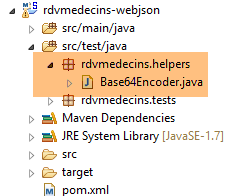 |
package rdvmedecins.helpers;
import org.springframework.security.crypto.codec.Base64;
public class Base64Encoder {
public static void main(String[] args) {
// Expects two arguments: login and password
if (args.length != 2) {
System.out.println("Syntax: login password");
System.exit(0);
}
// retrieve the two arguments
String string = String.format("%s:%s", args[0], args[1]);
// encode the string
byte[] data = Base64.encode(string.getBytes());
// display its Base64 encoding
System.out.println(new String(data));
}
}
If we run this program with the two arguments [admin admin]:
 |
we get the following result:
Now that we know how to generate the HTTP authentication header, we launch the now-secure web service:
@Component
public class ApplicationModel implements IMetier {
...
private boolean secured = true;
Then, using the Chrome client [Advanced Rest Client], we request the list of all doctors:
 |
- In [1], we request the doctors' URL;
- in [2], using a GET method;
- in [3], we provide the HTTP authentication header. The code [YWRtaW46YWRtaW4=] is the Base64 encoding of the string [admin:admin];
- in [4], we send the HTTP request;
The server's response is as follows:
 |
- in [1], the HTTP authentication header;
- in [2], the server returns a JSON response;
- in [3], a list of HTTP headers related to the web application’s security;
We successfully obtain the list of doctors:
 |
Now let’s try an HTTP request with an incorrect authentication header. The response is then as follows:
 |
- in [1] and [3]: the HTTP authentication header;
- in [2]: the web service response;
Now, let's try the user "user / user". It exists but does not have access to the web service. If we run the Base64 encoding program with the two arguments [user user]:
 |
we get the following result:
 |
- in [1] and [3]: the HTTP authentication header;
- in [2]: the web service response. It differs from the previous one, which was [401 Unauthorized]. This time, the user authenticated successfully but does not have sufficient permissions to access the URL;
A secure web service is now operational. We will extend it to allow cross-domain requests. This requirement was mentioned in the document [AngularJS / Spring 4 Tutorial], and although it does not apply here, we will address it anyway.
8.4.14. Implementing cross-domain requests
Let’s examine the issue of cross-domain requests. In the document [AngularJS / Spring 4 Tutorial], we are developing a client/server application where the client is an AngularJS application:
 |
- the HTML/CSS/JS pages of the Angular application come from server [1];
- in [2], the [dao] service makes a request to another server, server [2]. Well, that is prohibited by the browser running the Angular application because it is a security vulnerability. The application can only query the server from which it originates, i.e., server [1];
In fact, it is inaccurate to say that the browser prevents the Angular application from querying server [2]. It actually queries it to ask whether it allows a client that does not originate from it to query it. This sharing technique is called CORS (Cross-Origin Resource Sharing). Server [2] grants permission by sending specific HTTP headers.
To demonstrate the issues that can arise, we will create a client/server application where:
- the server will be our web/JSON server;
- the client will be a simple HTML page equipped with JavaScript code that will make requests to the web/JSON server;
8.4.14.1. The client project
 |
The project is a Maven project with the following [pom.xml] file:
<?xml version="1.0" encoding="UTF-8"?>
<project xmlns="http://maven.apache.org/POM/4.0.0" xmlns:xsi="http://www.w3.org/2001/XMLSchema-instance"
xsi:schemaLocation="http://maven.apache.org/POM/4.0.0 http://maven.apache.org/xsd/maven-4.0.0.xsd">
<modelVersion>4.0.0</modelVersion>
<groupId>istia.st</groupId>
<artifactId>rdvmedecins-webjson-client-cors</artifactId>
<version>0.0.1-SNAPSHOT</version>
<packaging>jar</packaging>
<name>rdvmedecins-webjson-client-cors</name>
<description>Client for webjson server</description>
<parent>
<groupId>org.springframework.boot</groupId>
<artifactId>spring-boot-starter-parent</artifactId>
<version>1.2.6.RELEASE</version>
<relativePath /> <!-- lookup parent from repository -->
</parent>
<properties>
<project.build.sourceEncoding>UTF-8</project.build.sourceEncoding>
<start-class>istia.st.rdvmedecins.Client</start-class>
<java.version>1.8</java.version>
</properties>
<dependencies>
<!-- Spring MVC -->
<dependency>
<groupId>org.springframework.boot</groupId>
<artifactId>spring-boot-starter-web</artifactId>
</dependency>
</dependencies>
</project>
- lines 14–19: this is a Spring Boot project;
- lines 29–32: we use the [spring-boot-starter-web] dependency, which includes a Tomcat server and Spring MVC;
The HTML page is as follows:
 |
It is generated by the following code:
<!DOCTYPE html>
<html>
<head>
<meta charset="UTF-8">
<title>Spring MVC</title>
<script type="text/javascript" src="/js/jquery-2.1.1.min.js"></script>
<script type="text/javascript" src="/js/client.js"></script>
</head>
<body>
<h2>Web service client / JSON</h2>
<form id="form">
<!-- HTTP method -->
HTTP method:
<!-- -->
<input type="radio" id="get" name="method" value="get" checked="checked" />GET
<!-- -->
<input type="radio" id="post" name="method" value="post" />POST
<!-- URL -->
<br /> <br />Target URL: <input type="text" id="url" size="30"><br/>
<!-- posted value -->
<br /> JSON string to post: <input type="text" id="posted" size="50" />
<!-- Submit button -->
<br /> <br /> <input type="submit" value="Submit" onclick="javascript:requestServer(); return false;"></input>
</form>
<hr />
<h2>Server response</h2>
<div id="response"></div>
</body>
</html>
- line 6: we import the jQuery library;
- line 7: we import code that we will write;
The [client.js] code is as follows:
// global variables
var url;
var posted;
var response;
var method;
function requestServer() {
// retrieve the form data
var urlValue = url.val();
var postedValue = posted.val();
method = document.forms[0].elements['method'].value;
// make an Ajax call manually
if (method === "get") {
doGet(urlValue);
} else {
doPost(urlValue, postedValue);
}
}
function doGet(url) {
// make an Ajax call manually
$.ajax({
headers: {
'Authorization': 'Basic YWRtaW46YWRtaW4='
},
url: 'http://localhost:8080' + url,
type: 'GET',
dataType: 'text/plain',
beforeSend: function() {
},
success: function(data) {
// text result
response.text(data);
},
complete: function() {
},
error: function(jqXHR) {
// system error
response.text(jqXHR.responseText);
}
})
}
function doPost(url, posted) {
// Make an Ajax call manually
$.ajax({
headers: {
'Authorization' : 'Basic YWRtaW46YWRtaW4='
},
url: 'http://localhost:8080' + url,
type: 'POST',
contentType: 'application/json',
data: posted,
dataType: 'text/plain',
beforeSend: function() {
},
success: function(data) {
// text result
response.text(data);
},
complete: function() {
},
error: function(jqXHR) {
// system error
response.text(jqXHR.responseText);
}
})
}
// on document load
$(document).ready(function() {
// retrieve the references of the page components
url = $("#url");
posted = $("#posted");
response = $("#response");
});
We’ll leave it to the reader to understand this code. Everything has been covered at one time or another. However, some lines deserve an explanation:
- line 11:
- [document] refers to the document loaded by the browser, known as the DOM (Document Object Model),
- [document.forms[0]] refers to the first form in the document; a document may contain multiple forms. Here, there is only one,
- [document.forms[0].elements['method']] refers to the form element with the [name='method'] attribute. There are two of them:
<input type="radio" id="get" name="method" value="get" checked="checked" />GET
<input type="radio" id="post" name="method" value="post" />POST
- line 11:
- [document.forms[0].elements['method'].value] is the value that will be posted for the component with the [name='method'] attribute. We know that the posted value is the value of the [value] attribute of the checked radio button. Here, it will therefore be one of the strings ['get', 'post'];
- lines 23–25: we are communicating with a server that requires an HTTP header [Authorization: Basic code]. We create this header for the user [admin / admin], who is the only one authorized to query the server;
- line 26: the user will enter URLs of the form [/getAllDoctors, /deleteAppointment, ...]. These URLs must therefore be completed;
- line 28: the server returns JSON, which is a text format. We specify the type [text/plain] as the response type so that it is displayed exactly as received;
- line 33: display the server's text response;
- line 39: displays any error messages in text format;
- line 52: to indicate that the client is sending JSON;
In the client/server application we are building:
- the client is a web application available at the URL [http://localhost:8081]. This is the application we are currently building;
- the server is a web application available at the URL [http://localhost:8080]. This is our web/JSON server;
Because the client is not running on the same port as the server, the issue of cross-domain requests arises. [http://localhost:8080] and [http://localhost:8081] are two different domains.
The Spring Boot application is a console application launched by the following executable class [Client]:
package istia.st.rdvmedecins;
import org.springframework.boot.SpringApplication;
import org.springframework.boot.context.embedded.EmbeddedServletContainerFactory;
import org.springframework.boot.context.embedded.ServletRegistrationBean;
import org.springframework.boot.context.embedded.tomcat.TomcatEmbeddedServletContainerFactory;
import org.springframework.context.annotation.Bean;
import org.springframework.context.annotation.Configuration;
import org.springframework.web.servlet.DispatcherServlet;
import org.springframework.web.servlet.config.annotation.EnableWebMvc;
import org.springframework.web.servlet.config.annotation.ResourceHandlerRegistry;
import org.springframework.web.servlet.config.annotation.WebMvcConfigurerAdapter;
@Configuration
@EnableWebMvc
public class Client extends WebMvcConfigurerAdapter {
public static void main(String[] args) {
SpringApplication.run(Client.class, args);
}
// static pages
@Override
public void addResourceHandlers(ResourceHandlerRegistry registry) {
registry.addResourceHandler("/**").addResourceLocations(new String[] { "classpath:/static/" });
}
// dispatcherServlet configuration
@Bean
public DispatcherServlet dispatcherServlet() {
return new DispatcherServlet();
}
@Bean
public ServletRegistrationBean servletRegistrationBean(DispatcherServlet dispatcherServlet) {
return new ServletRegistrationBean(dispatcherServlet, "/*");
}
// Embedded Tomcat server
@Bean
public EmbeddedServletContainerFactory embeddedServletContainerFactory() {
return new TomcatEmbeddedServletContainerFactory("", 8081);
}
}
- Line 14: The [Client] class is a Spring configuration class;
- line 15: a Spring MVC application is configured. This annotation triggers a number of automatic configurations;
- line 16: to override certain default values of the Spring MVC framework, you must extend the [WebMvcConfigurerAdapter] class;
- lines 23–26: the [addResourceHandlers] method allows you to specify the directories where the application’s static resources (HTML, CSS, JS, etc.) are located. Here, we specify the [static] directory located in the project’s classpath:
 |
- lines 29–37: configuration of the [dispatcherServlet] bean, which designates the Spring MVC servlet;
- lines 40-43: the embedded Tomcat server will run on port 8081;
8.4.14.2. The URL [/getAllMedecins]
We launch:
- the web/JSON server on port 8080;
- the client for this server on port 8081;
then we request the URL [http://localhost:8081/client.html] [1]:
 |
- in [2], we perform a GET request on the URL [http://localhost:8080/getAllMedecins];
We do not receive a response from the server. When we look at the developer console (Ctrl-Shift-I), we see an error:
 |
- in [1], we are in the [Network] tab;
- In [2], we see that the HTTP request made is not [GET] but [OPTIONS]. In the case of a cross-domain request, the browser checks with the server to ensure that certain conditions are met by sending an HTTP [OPTIONS] request. In this instance, the requests are those indicated by the circles [5-6];
- In [5], the browser asks whether the target URL can be reached with a GET. The [Access-Control-Request-Method] request header requests a response with an [Access-Control-Allow-Methods] HTTP header indicating that the requested method is accepted;
- in [5], the browser sends the HTTP header [Origin: http://localhost:8081]. This header requests a response in an HTTP header [Access-Control-Allow-Origin] indicating that the specified origin is accepted;
- In [6], the browser asks whether the HTTP headers [Accept] and [Authorization] are accepted. The request header [Access-Control-Request-Headers] expects a response with an HTTP header [Access-Control-Allow-Headers] indicating that the requested headers are accepted;
- an error occurs in [3]. Clicking the icon results in error [4];
- in [4], the message indicates that the server did not send the HTTP header [Access-Control-Allow-Origin], which specifies whether the origin of the request is accepted;
- In [7], we can see that the server did indeed not send this header. As a result, the browser refused to make the HTTP GET request that was initially requested;
We need to modify the web server/JSON. We make an initial change in [ApplicationModel], which is one of the web service configuration elements:
 |
@Component
public class ApplicationModel implements IMetier {
...
// configuration data
private boolean corsAllowed = true;
private boolean secured = true;
...
public boolean isCorsAllowed() {
return corsAllowed;
}
- line 6: we create a boolean variable that indicates whether or not clients outside the server's domain are accepted;
- lines 10–12: the method to access this information;
Then we create a new Spring MVC controller:
 |
The [RdvMedecinsCorsController] class is as follows:
package rdvmedecins.web.controllers;
import javax.servlet.http.HttpServletResponse;
import org.springframework.beans.factory.annotation.Autowired;
import org.springframework.stereotype.Controller;
import org.springframework.web.bind.annotation.RequestMapping;
import org.springframework.web.bind.annotation.RequestMethod;
import rdvmedecins.web.models.ApplicationModel;
@Controller
public class RdvMedecinsCorsController {
@Autowired
private ApplicationModel application;
// Send options to the client
public void sendOptions(String origin, HttpServletResponse response) {
// Is CORS allowed?
if (!application.isCorsAllowed() || origin == null || !origin.startsWith("http://localhost")) {
return;
}
// Set the CORS header
response.addHeader("Access-Control-Allow-Origin", origin);
// allow certain headers
response.addHeader("Access-Control-Allow-Headers", "accept, authorization");
// allow GET
response.addHeader("Access-Control-Allow-Methods", "GET");
}
// list of doctors
@RequestMapping(value = "/getAllDoctors", method = RequestMethod.OPTIONS)
public void getAllDoctors(@RequestHeader(value = "Origin", required = false) String origin, HttpServletResponse response) {
sendOptions(origin, response);
}
}
- lines 12-13: the [RdvMedecinsCorsController] class is a Spring controller;
- lines 33–36: define an action that handles the URL [/getAllMedecins] when it is requested with the HTTP [OPTIONS] method;
- line 34: the [getAllMedecins] method accepts the following parameters:
- the object [@RequestHeader(value = "Origin", required = false)] which retrieves the HTTP [Origin] header from the request. This header was sent by the request originator:
We specify that the HTTP header [Origin] is optional [required = false]. In this case, if the header is missing, the parameter [String origin] will have the value null. With [required = true], which is the default value, an exception is thrown if the header is missing. We wanted to avoid this scenario;
- line 34:
- the [HttpServletResponse response] object that will be sent to the client who made the request;
These two parameters are injected by Spring;
- line 35: we delegate the processing of the request to the method in lines 19–30;
- lines 15–16: the [ApplicationModel] object is injected;
- lines 21–23: if the application is configured to accept cross-domain requests, and if the sender has sent the [Origin] HTTP header, and if that origin starts with [http://localhost], then we accept the cross-domain request; otherwise, we reject it;
- line 25: if the client is in the domain [http://localhost:port], the HTTP header is sent:
Access-Control-Allow-Origin: http://localhost:port
which means that the server accepts the client's origin;
- Line 25: We have specified two specific HTTP headers in the [OPTIONS] HTTP request:
In response to the [Access-Control-Request-X] HTTP header, the server responds with an [Access-Control-Allow-X] HTTP header specifying what is allowed. Lines 23–26 simply repeat the client’s request to indicate that it has been accepted;
We are now ready for further testing. We launch the new version of the web service and find that the problem remains unchanged. Nothing has changed. If we add a console output on line 35 above, it is never displayed, indicating that the [getAllMedecins] method on line 34 is never called.
After some research, we discover that Spring MVC handles [OPTIONS] HTTP requests itself using its default handling. Therefore, it is always Spring that responds, and never the [getAllMedecins] method on line 34. This default behavior of Spring MVC can be changed. We modify the existing [WebConfig] class:
 |
package rdvmedecins.web.config;
...
import org.springframework.web.servlet.DispatcherServlet;
@Configuration
public class WebConfig {
// DispatcherServlet configuration for CORS headers
@Bean
public DispatcherServlet dispatcherServlet() {
DispatcherServlet servlet = new DispatcherServlet();
servlet.setDispatchOptionsRequest(true);
return servlet;
}
// JSON mapping
...
- lines 10-11: the [dispatcherServlet] bean is used to define the servlet that handles client requests. Here, it is of type [DispatcherServlet], the servlet from the Spring MVC framework;
- line 12: we create an instance of type [DispatcherServlet];
- line 13: we instruct the servlet to forward [OPTIONS] HTTP requests to the application;
- line 14: we render the servlet configured in this way;
We rerun the tests with this new configuration. We get the following result:
 |
- in [1], we see that there are two HTTP requests to the URL [http://localhost:8080/getAllMedecins];
- in [2], the [OPTIONS] request;
- in [3], the three HTTP headers we just configured in the server’s response;
Now let’s examine the second request:
 |
- in [1], the request being examined;
- in [2], this is the GET request. Thanks to the first [OPTIONS] request, the browser received the information it requested. It is now performing the [GET] request that was initially requested;
- in [3], the server’s response;
- in [4], the server sends JSON;
- in [5], an error occurred;
- in [6], the error message;
It is more difficult to explain what happened here. The server’s response [3] is normal [HTTP/1.1 200 OK]. We should therefore have the requested document. It is possible that the server did indeed send the document but that the browser is preventing its use because it requires that, for the GET request as well, the response include the HTTP header [Access-Control-Allow-Origin:http://localhost:8081].
We modify the controller [RdvMedecinsController] as follows:
@Autowired
private RdvMedecinsCorsController rdvMedecinsCorsController;
...
// list of doctors
@RequestMapping(value = "/getAllMedecins", method = RequestMethod.GET, produces = "application/json; charset=UTF-8")
@ResponseBody
public String getAllDoctors(HttpServletResponse httpServletResponse,
@RequestHeader(value = "Origin", required = false) String origin) throws JsonProcessingException {
// the response
Response<List<Doctor>> response;
// CORS headers
rdvMedecinsCorsController.sendOptions(origin, httpServletResponse);
// application state
...
- lines 1-2: the controller [RdvMedecinsCorsController] is injected;
- lines 7-8: the HttpServletResponse object, which encapsulates the response to be sent to the client, and the HTTP header [Origin] are injected into the parameters of the [getAllMedecins] method;
- line 12: the [sendOptions] method of the [RdvMedecinsCorsController] controller is called—the very same method that was called to handle the [OPTIONS] HTTP request. It will therefore send the same HTTP headers as for that request;
After this modification, the results are as follows:
 |
We have successfully obtained the list of doctors.
8.4.14.3. The other [GET] URLs
We will now look at the other URLs queried via a GET request. In the controllers, the code for the actions that handle them follows the same pattern as the actions that previously handled the [/getAllMedecins] URL. The reader can verify the code in the examples provided with this document. Here is an example:
in [RdvMedecinsCorsController]
// List of a doctor's appointments
@RequestMapping(value = "/getRvMedecinJour/{idMedecin}/{jour}", method = RequestMethod.OPTIONS)
public void getDoctorAppointmentsByDay(@RequestHeader(value = "Origin", required = false) String origin, HttpServletResponse response) {
sendOptions(origin, response);
}
in [RdvMedecinsController]
// list of a doctor's appointments
@RequestMapping(value = "/getRvMedecinJour/{idMedecin}/{jour}", method = RequestMethod.GET, produces = "application/json; charset=UTF-8")
@ResponseBody
public String getRvMedecinJour(@PathVariable("idMedecin") long idMedecin, @PathVariable("jour") String jour,
HttpServletResponse httpServletResponse, @RequestHeader(value = "Origin", required = false) String origin)
throws JsonProcessingException {
// the response
Response<List<Rv>> response = null;
boolean error = false;
// CORS headers
rdvMedecinsCorsController.sendOptions(origin, httpServletResponse);
// Application state
...
Here are some screenshots of the execution:
 |
 |
 |
 |
 |
 |
 |
8.4.14.4. The [POST] URLs
Let’s examine the following scenario:
 |
- We make a POST [1] to the URL [2];
- in [3], the posted value. This is a JSON string;
- Overall, we are trying to delete the appointment with [id] 100;
We are not modifying any code at this point. The result obtained is as follows:
 |
- in [1], as with [GET] requests, an [OPTIONS] request is made by the browser;
- in [2], it requests access authorization for a [POST] request. Previously, it was [GET];
- In [3], it requests authorization to send the HTTP headers [accept, authorization, content-type]. Previously, we only had the first two headers;
We modify the [RdvMedecinsCorsController.sendOptions] method as follows:
public void sendOptions(String origin, HttpServletResponse response) {
// CORS allowed?
if (!application.isCorsAllowed() || origin==null || !origin.startsWith("http://localhost")) {
return;
}
// Set the CORS header
response.addHeader("Access-Control-Allow-Origin", origin);
// allow certain headers
response.addHeader("Access-Control-Allow-Headers", "accept, authorization, content-type");
// Allow GET
response.addHeader("Access-Control-Allow-Methods", "GET, POST");
}
- line 9: we added the HTTP header [Content-Type] (case is not sensitive);
- line 11: we added the HTTP method [POST];
This means that [POST] methods are handled the same way as [GET] requests. Here is an example of the URL [/deleteAppointment]:
in [RdvMedecinsController]
@RequestMapping(value = "/deleteAppointment", method = RequestMethod.POST, produces = "application/json; charset=UTF-8", consumes = "application/json; charset=UTF-8")
@ResponseBody
public String deleteAppointment(@RequestBody PostDeleteAppointment post, HttpServletResponse httpServletResponse,
@RequestHeader(value = "Origin", required = false) String origin) throws JsonProcessingException {
// the response
Response<Void> response = null;
boolean error = false;
// CORS headers
rdvMedecinsCorsController.sendOptions(origin, httpServletResponse);
// Application status
if (messages != null) {
...
in [RdvMedecinsCorsController]
@RequestMapping(value = "/deleteAppointment", method = RequestMethod.OPTIONS)
public void deleteAppointment(@RequestHeader(value = "Origin", required = false) String origin, HttpServletResponse response) {
sendOptions(origin, response);
}
The result is as follows:
 |
For the URL [/addRv], the following result is obtained:
 |
8.4.14.5. Conclusion
Our application now supports cross-domain requests. These can be enabled or disabled via configuration in the [ApplicationModel] class:
// configuration data
private boolean corsAllowed = false;
8.5. Web service client / JSON
Let’s return to the overall architecture of the application we want to build:
 |
The top part of the diagram has been written. This is the web/JSON server. We will now tackle the bottom part, starting with its [DAO] layer. We will write this and then test it with a console client. The test architecture will be as follows:
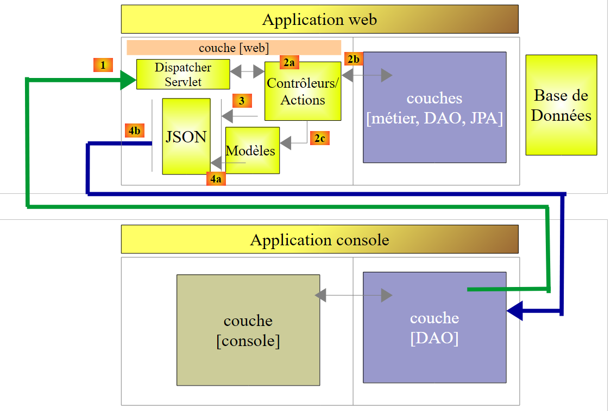 |
8.5.1. The console client project
The STS project for the console client will be as follows:
 |
8.5.2. Maven Configuration
The [pom.xml] file for the console client is as follows:
<project xmlns="http://maven.apache.org/POM/4.0.0" xmlns:xsi="http://www.w3.org/2001/XMLSchema-instance"
xsi:schemaLocation="http://maven.apache.org/POM/4.0.0 http://maven.apache.org/xsd/maven-4.0.0.xsd">
<modelVersion>4.0.0</modelVersion>
<groupId>istia.st.rdvmedecins</groupId>
<artifactId>rdvmedecins-webjson-client-console</artifactId>
<version>0.0.1-SNAPSHOT</version>
<name>rdvmedecins-webjson-client-console</name>
<description>Web server / JSON console client</description>
<properties>
<project.build.sourceEncoding>UTF-8</project.build.sourceEncoding>
<java.version>1.8</java.version>
</properties>
<parent>
<groupId>org.springframework.boot</groupId>
<artifactId>spring-boot-starter-parent</artifactId>
<version>1.2.6.RELEASE</version>
<relativePath /> <!-- lookup parent from repository -->
</parent>
<dependencies>
<!-- Spring -->
<dependency>
<groupId>org.springframework</groupId>
<artifactId>spring-web</artifactId>
</dependency>
<!-- JSON library used by Spring -->
<dependency>
<groupId>com.fasterxml.jackson.core</groupId>
<artifactId>jackson-core</artifactId>
</dependency>
<dependency>
<groupId>com.fasterxml.jackson.core</groupId>
<artifactId>jackson-databind</artifactId>
</dependency>
<!-- component used by Spring RestTemplate -->
<dependency>
<groupId>org.apache.httpcomponents</groupId>
<artifactId>httpclient</artifactId>
</dependency>
</dependencies>
</project>
- lines 15–20: the parent Spring Boot project;
- lines 24–27: the web server/JSON console client is based on a component called [RestTemplate] provided by the [spring-web] dependency;
- lines 29–36: serializing and deserializing JSON objects requires a JSON library. We use a variant of the Jackson library used by Spring Web;
- lines 38–41: at the lowest level, the [RestTemplate] component communicates with the server via TCP/IP sockets. We want to set the [timeout] for these, i.e., the maximum wait time for a response from the server. The [RestTemplate] component does not allow us to set this. To do this, we will pass a low-level component provided by the [org.apache.httpcomponents.httpclient] dependency to the [RestTemplate] constructor. It is this dependency that will allow us to set the communication [timeout];
8.5.3. The [rdvmedecins.client.entities] package
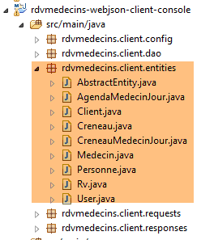 |
The [rdvmedecins.client.entities] package contains all the entities that the web service / JSON sends via its various URLs. We won’t go into detail about them again. Suffice it to say that the JPA entities [Client, Slot, Doctor, Appointment, Person] have been stripped of all their JPA annotations as well as their JSON annotations. Here, for example, is the [Appointment] class:
package rdvmedecins.client.entities;
import java.util.Date;
public class Appointment extends AbstractEntity {
private static final long serialVersionUID = 1L;
// Appointment date
private Date day;
// An Rv is linked to a client
private Client client;
// An appointment is linked to a time slot
private Slot slot;
// foreign keys
private long clientId;
private long slotId;
// default constructor
public Rv() {
}
// with parameters
public Rv(Date day, Client client, Slot slot) {
this.day = day;
this.client = client;
this.slot = slot;
}
// toString
public String toString() {
return String.format("Appointment[%d, %s, %d, %d]", id, day, client.id, slot.id);
}
// getters and setters
...
}
8.5.4. The [rdvmedecins.client.requests] package
 |
The [rdvmedecins.client.requests] package contains the two classes whose JSON values are posted to the URLs [/ajouterRv] and [supprimerRv]. They are identical to their server-side counterparts.
8.5.5. The [rdvmedecins.client.responses] package
 |
[Response] is the type of all web service / JSON responses. It is a generic type:
package rdvmedecins.client.responses;
import java.util.List;
public class Response<T> {
// ----------------- properties
// operation status
private int status;
// any error messages
private List<String> messages;
// response body
private T body;
// constructors
public Response() {
}
public Response(int status, List<String> messages, T body) {
this.status = status;
this.messages = messages;
this.body = body;
}
// getters and setters
...
}
- line 5: the type [T] varies depending on the web service URL / JSON;
8.5.6. The [rdvmedecins.client.dao] package
 |
- [IDao] is the interface of the [DAO] layer, and [Dao] is its implementation. We will come back to this implementation;
8.5.7. The [rdvmedecins.client.config] package
 |
The [DaoConfig] class configures the application. Its code is as follows:
package rdvmedecins.client.config;
import org.springframework.context.annotation.Bean;
import org.springframework.context.annotation.ComponentScan;
import org.springframework.context.annotation.Configuration;
import org.springframework.http.client.HttpComponentsClientHttpRequestFactory;
import org.springframework.web.client.RestTemplate;
import com.fasterxml.jackson.databind.ObjectMapper;
import com.fasterxml.jackson.databind.ser.impl.SimpleBeanPropertyFilter;
import com.fasterxml.jackson.databind.ser.impl.SimpleFilterProvider;
@Configuration
@ComponentScan({ "rdvmedecins.client.dao" })
public class DaoConfig {
@Bean
public RestTemplate restTemplate() {
// Create the RestTemplate component
HttpComponentsClientHttpRequestFactory factory = new HttpComponentsClientHttpRequestFactory();
RestTemplate restTemplate = new RestTemplate(factory);
// result
return restTemplate;
}
// JSON mappers
@Bean
public ObjectMapper jsonMapper(){
return new ObjectMapper();
}
@Bean
public ObjectMapper jsonMapperShortCreneau() {
ObjectMapper jsonMapperShortCreneau = new ObjectMapper();
SimpleBeanPropertyFilter creneauFilter = SimpleBeanPropertyFilter.serializeAllExcept("doctor");
jsonMapperShortCreneau.setFilters(new SimpleFilterProvider().addFilter("creneauFilter", creneauFilter));
return jsonMapperShortCreneau;
}
@Bean
public ObjectMapper jsonMapperLongRv() {
ObjectMapper jsonMapperLongRv = new ObjectMapper();
SimpleBeanPropertyFilter rvFilter = SimpleBeanPropertyFilter.serializeAllExcept("");
SimpleBeanPropertyFilter creneauFilter = SimpleBeanPropertyFilter.serializeAllExcept("doctor");
jsonMapperLongRv.setFilters(new SimpleFilterProvider().addFilter("rvFilter", rvFilter).addFilter("creneauFilter",
creneauFilter));
return jsonMapperLongRv;
}
@Bean
public ObjectMapper jsonMapperShortRv() {
ObjectMapper jsonMapperShortRv = new ObjectMapper();
SimpleBeanPropertyFilter rvFilter = SimpleBeanPropertyFilter.serializeAllExcept("client", "slot");
jsonMapperShortRv.setFilters(new SimpleFilterProvider().addFilter("rvFilter", rvFilter));
return jsonMapperShortRv;
}
}
- line 13: the [DaoConfig] class is a Spring configuration class;
- line 14: the [rdvmedecins.client.dao] package will be searched for Spring components. The [Dao] component will be found there;
- Lines 17–24: define a Spring singleton named [restTemplate] (the method name). This method returns a [RestTemplate] instance, which is the basic tool Spring provides for communicating with a web service or JSON;
- Line 21: We could write [RestTemplate restTemplate = new RestTemplate();]. This is sufficient in most cases. But here, we want to set the client’s [timeouts]. To do this, we inject a low-level component of type [HttpComponentsClientHttpRequestFactory] (line 20) into the [RestTemplate] component, which will allow us to set these [timeouts]. The required Maven dependency has been provided;
- lines 28–57: define JSON mappers. These are the JSON mappers used on the server side (see section 8.4.11.3) to serialize the type T of the [Response<T>] response. These same converters will now be used on the client side to deserialize the type T;
8.5.8. The [IDao] interface
Let’s return to the application architecture:
 |
The [DAO] layer acts as an adapter between the [console] layer and the URLs exposed by the web service / JSON. Its [IDao] interface will be as follows:
package rdvmedecins.client.dao;
import java.util.List;
import rdvmedecins.client.entities.AgendaMedecinJour;
import rdvmedecins.client.entities.Client;
import rdvmedecins.client.entities.TimeSlot;
import rdvmedecins.client.entities.Doctor;
import rdvmedecins.client.entities.Appointment;
import rdvmedecins.client.entities.User;
public interface IDao {
// Web service URL
public void setWebServiceJsonUrl(String url);
// timeout
public void setTimeout(int timeout);
// Authentication
public void authenticate(User user);
// list of clients
public List<Client> getAllClients(User user);
// list of doctors
public List<Doctor> getAllDoctors(User user);
// list of a doctor's available time slots
public List<TimeSlot> getAllTimeSlots(User user, long doctorId);
// find a client identified by their ID
public Client getClientById(User user, long id);
// find a doctor identified by their ID
public Doctor getDoctorById(User user, long id);
// Find an appointment identified by its ID
public Appointment getAppointmentById(User user, long id);
// Find a time slot identified by its ID
public Slot getSlotById(User user, long id);
// add an appointment
public Rv addAppointment(User user, String day, long slotId, long clientId);
// delete an appointment
public void deleteAppointment(User user, long appointmentId);
// list of a doctor's appointments on a given day
public List<Rv> getRvMedecinJour(User user, long idMedecin, String jour);
// schedule
public DoctorDailySchedule getDoctorDailySchedule(User user, long doctorId, String day);
}
- line 14: the method for setting the root URL of the web service / JSON, for example [http://localhost:8080];
- line 17: the method used to set client-side [timeouts]. We want to control this parameter because some HTTP clients can take a very long time waiting for a response that will never come;
- line 20: the method for authenticating a user [login, passwd]. Throws an exception if the user is not recognized;
- lines 22–53: Each URL exposed by the web service / JSON is associated with a method of the interface, whose signature is derived from the signature of the server-side method handling the exposed URL. Take, for example, the following server URL:
@RequestMapping(value = "/getAgendaMedecinJour/{idMedecin}/{jour}", method = RequestMethod.GET)
public Response<String> getAgendaMedecinJour(@PathVariable("idMedecin") long idMedecin, @PathVariable("day") String day, HttpServletResponse response, @RequestHeader(value = "Origin", required = false) String origin) {
- line 1: we see that [idMedecin] and [jour] are the URL parameters. These will be the input parameters for the method associated with this URL on the client side;
- line 2: we see that the server method returns a type [Response<String>]. This [String] type is the type of the JSON value of type [AgendaMedecinJour]. The result type of the method associated with this URL on the client side will be [AgendaMedecinJour];
On the client side, we declare the following method:
public AgendaMedecinJour getAgendaMedecinJour(User user, long idMedecin, String jour);
This signature works when the server sends a response of type [int status, List<String> messages, String body] with [status==0]. In this case, we have [messages==null && body!=null]. It does not work when [status!=0]. In this case, we have [messages!=null && body==null]. We need to signal in some way that an error has occurred. To do this, we will throw an exception of type [RdvMedecinsException] as follows:
package rdvmedecins.client.dao;
import java.util.List;
public class RdvMedecinsException extends RuntimeException {
private static final long serialVersionUID = 1L;
// error code
private int status;
// list of error messages
private List<String> messages;
public RdvMedecinsException() {
}
public RdvMedecinsException(int code, List<String> messages) {
super();
this.status = code;
this.messages = messages;
}
// getters and setters
...
}
- lines 9 and 11: the exception will take the values of the [status, messages] fields from the [Response<T>] object sent by the server;
- line 5: the [RdvMedecinsException] class extends the [RuntimeException] class. It is therefore an unhandled exception, meaning there is no requirement to handle it with a try/catch block or declare it in the method signatures of the interface;
Furthermore, all methods of the [IDao] interface that query the web service/JSON have the following [User] type as a parameter:
package rdvmedecins.client.entities;
public class User {
// data
private String login;
private String passwd;
// constructors
public User() {
}
public User(String login, String passwd) {
this.login = login;
this.passwd = passwd;
}
// getters and setters
...
}
In fact, every exchange with the web service / JSON must be accompanied by an HTTP authentication header.
8.5.9. The [rdvmedecins.clients.console] package
Now that we are familiar with the [DAO] layer interface, we can present the console application.
 |
The [Main] class is as follows:
package rdvmedecins.clients.console;
import java.io.IOException;
import org.springframework.context.annotation.AnnotationConfigApplicationContext;
import rdvmedecins.client.config.DaoConfig;
import rdvmedecins.client.dao.IDao;
import rdvmedecins.client.dao.RdvMedecinsException;
import rdvmedecins.client.entities.Rv;
import rdvmedecins.client.entities.User;
import com.fasterxml.jackson.core.JsonProcessingException;
import com.fasterxml.jackson.databind.ObjectMapper;
public class Main {
// JSON serializer
static private ObjectMapper mapper = new ObjectMapper();
// connection timeout in milliseconds
static private int TIMEOUT = 1000;
public static void main(String[] args) throws IOException {
// retrieve a reference to the [DAO] layer
AnnotationConfigApplicationContext context = new AnnotationConfigApplicationContext(DaoConfig.class);
IDao dao = context.getBean(IDao.class);
// Set the URL of the web service / json
dao.setUrlServiceWebJson("http://localhost:8080");
// Set the timeout in milliseconds
dao.setTimeout(TIMEOUT);
// Authentication
String message = "/authenticate [admin,admin]";
try {
dao.authenticate(new User("admin", "admin"));
System.out.println(String.format("%s: OK", message));
} catch (RdvMedecinsException e) {
showException(message, e);
}
message = "/authenticate [user,user]";
try {
dao.authenticate(new User("user", "user"));
System.out.println(String.format("%s : OK", message));
} catch (RdvMedecinsException e) {
showException(message, e);
}
message = "/authenticate [user,x]";
try {
dao.authenticate(new User("user", "x"));
System.out.println(String.format("%s : OK", message));
} catch (RdvMedecinsException e) {
showException(message, e);
}
message = "/authenticate [x,x]";
try {
dao.authenticate(new User("x", "x"));
System.out.println(String.format("%s : OK", message));
} catch (RdvMedecinsException e) {
showException(message, e);
}
message = "/authenticate [admin,x]";
try {
dao.authenticate(new User("admin", "x"));
System.out.println(String.format("%s : OK", message));
} catch (RdvMedecinsException e) {
showException(message, e);
}
// list of clients
message = "/getAllClients";
try {
showResponse(message, dao.getAllClients(new User("admin", "admin")));
} catch (RdvMedecinsException e) {
showException(message, e);
}
// list of doctors
message = "/getAllMedecins";
try {
showResponse(message, dao.getAllDoctors(new User("admin", "admin")));
} catch (RdvMedecinsException e) {
showException(message, e);
}
// list of doctor 2's available slots
message = "/getAllSlots/2";
try {
showResponse(message, dao.getAllSlots(new User("admin", "admin"), 2L));
} catch (RdvMedecinsException e) {
showException(message, e);
}
// client #1
message = "/getClientById/1";
try {
showResponse(message, dao.getClientById(new User("admin", "admin"), 1L));
} catch (RdvMedecinsException e) {
showException(message, e);
}
// Doctor #2
message = "/getMedecinById/2";
try {
showResponse(message, dao.getMedecinById(new User("admin", "admin"), 2L));
} catch (RdvMedecinsException e) {
showException(message, e);
}
// slot #3
message = "/getCreneauById/3";
try {
showResponse(message, dao.getCreneauById(new User("admin", "admin"), 3L));
} catch (RdvMedecinsException e) {
showException(message, e);
}
// Appointment #4
message = "/getRvById/4";
try {
showResponse(message, dao.getRvById(new User("admin", "admin"), 4L));
} catch (RdvMedecinsException e) {
showException(message, e);
}
// Add an appointment
message = "/AddAppointment [clientId=4,slotId=8,date=2015-01-08]";
long idAppt = 0;
try {
Rv response = dao.addRv(new User("admin", "admin"), "2015-01-08", 8L, 4L);
idRv = response.getId();
showResponse(message, response);
} catch (RdvMedecinsException e) {
showException(message, e);
}
// list of doctor 1's appointments on 2015-01-08
message = "/getRvMedecinJour/1/2015-01-08";
try {
showResponse(message, dao.getRvMedecinJour(new User("admin", "admin"), 1L, "2015-01-08"));
} catch (RdvMedecinsException e) {
showException(message, e);
}
// Doctor 1's schedule for 2015-01-08
message = "/getAgendaMedecinJour/1/2015-01-08";
try {
showResponse(message, dao.getAgendaMedecinJour(new User("admin", "admin"), 1L, "2015-01-08"));
} catch (RdvMedecinsException e) {
showException(message, e);
}
// Delete the added appointment
message = String.format("/deleteAppointment [appointmentId=%s]", appointmentId);
try {
dao.deleteAppointment(new User("admin", "admin"), appointmentId);
} catch (RdvMedecinsException e) {
showException(message, e);
}
// list of doctor 1's appointments on 2015-01-08
message = "/getRvMedecinJour/1/2015-01-08";
try {
showResponse(message, dao.getRvMedecinJour(new User("admin", "admin"), 1L, "2015-01-08"));
} catch (RdvMedecinsException e) {
showException(message, e);
}
// close context
context.close();
}
private static void showException(String message, RdvMedecinsException e) {
System.out.println(String.format("URL [%s]", message));
System.out.println(String.format("Error #[%s] occurred:", e.getStatus()));
for (String msg : e.getMessages()) {
System.out.println(msg);
}
}
private static <T> void showResponse(String message, T response) throws JsonProcessingException {
System.out.println(String.format("URL [%s]", message));
System.out.println(mapper.writeValueAsString(response));
}
}
- line 19: the JSON serializer that will allow us to display the server's response, line 184;
- line 25: the [AnnotationConfigApplicationContext] component is a Spring component capable of utilizing configuration annotations from a Spring application. We pass the [AppConfig] class, which configures the application, to its constructor;
- line 26: we retrieve a reference to the [DAO] layer;
- lines 27–30: we configure it;
- lines 32–169: we test all methods of the [IDao] interface;
The results obtained are as follows:
09:20:56.935 [main] INFO o.s.c.a.AnnotationConfigApplicationContext - Refreshing org.springframework.context.annotation.AnnotationConfigApplicationContext@52feb982: startup date [Wed Oct 14 09:20:56 CEST 2015]; root of context hierarchy
/authenticate [admin,admin] : OK
URL [/authenticate [user,user]]
Error # [111] occurred:
403 Forbidden
URL [/authenticate [user,x]]
Error #[111] occurred:
401 Unauthorized
URL [/authenticate [x,x]]
Error #[111] occurred:
403 Forbidden
URL [/authenticate [admin,x]]
Error #[111] occurred:
401 Unauthorized
URL [/getAllClients]
[{"id":1,"version":1,"title":"Mr","lastName":"MARTIN","firstName":"Jules"},{"id":2,"version":1,"title":"Mrs","lastName":"GERMAN","firstName":"Christine"},{"id":3,"version":1,"title":"Mr","lastName":"JACQUARD","firstName":"Jules"},{"id":4,"version":1,"title":"Ms","lastName":"BISTROU","firstName":"Brigitte"}]
URL [/getAllDoctors]
[{"id":1,"version":1,"title":"Ms.","lastName":"PELISSIER","firstName":"Marie"},{"id":2,"version":1,"title":"Mr.","lastName":"BROMARD","first_name":"Jacques"},{"id":3,"version":1,"title":"Mr.","last_name":"JANDOT","first_name":"Philippe"},{"id":4,"version":1,"title":"Ms.","last_name":"JACQUEMOT","first_name":"Justine"}]
URL [/getAllSlots/2]
[{"id":25,"version":1,"startTime":8,"startMinute":0,"endTime":8,"endMinute":20,"doctor":null,"doctorId":2},{"id":26,"version":1,"startTime":8,"startMin":20,"endTime":8,"endMin":40,"doctor":null,"doctorId":2},{"id":27,"version":1,"startHour":8,"startMinute":40,"endHour":9,"endMinute":0,"doctor":null,"doctorId":2},{"id":28,"version":1,"startTime":9,"startMinute":0,"endTime":9,"endMinute":20,"doctor":null,"doctorId":2},{"id":29,"version":1,"startHour":9,"startMinute":20,"endHour":9,"endMinute":40,"doctor":null,"doctorId":2},{"id":30,"version":1,"startHour":9,"startMinute":40,"endHour":10,"endMinute":0,"doctor":null,"doctorId":2},{"id":31,"version":1,"startHour":10,"startMinute":0,"endHour":10,"endMinute":20,"doctor":null,"doctorId":2},{"id":32,"version":1,"startHour":10,"startMinute":20,"endHour":10,"endMinute":40,"doctor":null,"doctorId":2},{"id":33,"version":1,"startHour":10,"startMinute":40,"endHour":11,"endMinute":0,"doctor":null,"doctorId":2},{"id":34,"version":1,"startTime":11,"startMin":0,"endTime":11,"endMin":20,"doctor":null,"doctorId":2},{"id":35,"version":1,"startHour":11,"startMinute":20,"endHour":11,"endMinute":40,"doctor":null,"doctorId":2},{"id":36,"version":1,"startHour":11,"startMinute":40,"endHour":12,"endMinute":0,"doctor":null,"doctorId":2}]
URL [/getClientById/1]
{"id":1,"version":1,"title":"Mr","lastName":"MARTIN","firstName":"Jules"}
URL [/getDoctorById/2]
{"id":2,"version":1,"title":"Mr","lastName":"BROMARD","firstName":"Jacques"}
URL [/getSlotById/3]
{"id":3,"version":1,"startHour":8,"startMinute":40,"endHour":9,"endMinute":0,"doctor":null,"doctorId":1}
URL [/getRvById/4]
Error #[2] occurred:
The appointment with ID [4] does not exist
URL [/addAppointment [clientId=4,slotId=8,date=2015-01-08]]
{"id":144,"version":0,"day":1420671600000,"client":{"id":4,"version":1,"title":"Ms.","lastName":"BISTROU","firstName":"Brigitte"},"slot":{"id":8,"version":1,"startHour":10,"startMinute":20,"endHour":10,"endMinute":40,"doctor":null,"doctorId":1},"clientId":0,"slotId":0}
URL [/getRvMedecinJour/1/2015-01-08]
[{"id":144,"version":0,"day":1420675200000,"client":{"id":4,"version":1,"title":"Ms.","lastName":"BISTROU","firstName":"Brigitte"},"slot":{"id":8,"version":1,"startHour":10,"startMinute":20,"endHour":10,"endMinute":40,"doctor":null,"doctorId":1},"clientId":4,"slotId":8}]
URL [/getAgendaMedecinJour/1/2015-01-08]
{"doctor":{"id":1,"version":1,"title":"Ms.","lastName":"PELISSIER","firstName":"Marie"},"day":1420671600000,"doctorSlotDay":[{"slot":{"id":1,"version":1,"startHour":8,"startMinute":0,"endHour":8,"endMinute":20,"doctor":null,"doctorId":1},"rv":null},{"slot":{"id":2,"version":1,"startHour":8,"startMinute":20,"endHour":8,"endMinute":40,"doctor":null,"doctorId":1},"rv":null},{"slot":{"id":3,"version":1,"startTime":8,"startMin":40,"endTime":9,"endMin":0,"doctor":null,"doctorId":1},"rv":null},{"slot":{"id":4,"version":1,"startTime":9,"startMin":0,"endTime":9,"endMin":20,""doctor":null,"doctorId":1},"rv":null},{"slot":{"id":5,"version":1,"startTime":9,"startMin":20,"endTime":9,"endMin":40,"doctor":null,"doctorId":1},"rv":null},{"slot":{"id":6,"version":1,"startTime":9,"startMin":40,"endTime":10,"endMin":0,"doctor":null,"doctorId":1},"rv":null},{"slot":{"id":7,"version":1,"startTime":10,"startMin":0,"endTime":10,"endMin":20,"doctor":null,"doctorId":1},"rv":null},{"slot":{"id":8,"version":1,"startTime":10,"startMin":20,"endTime":10,"endMin":40,"doctor":null,"doctorId":1},"appointment":{"id":144,"version":0,"date":1420675200000,"client":{"id":4,"version":1,"title":"Ms.","lastName":"BISTROU","firstName":"Brigitte"},"appointment":{"id":8,"version":1,"startTime":10,"startMinute":20,"endTime":10,"endMinute":40,"doctor":null,"doctorId":1},""clientId":4,"slotId":8}},{"slot":{"id":9,"version":1,"startHour":10,"startMin":40,"endHour":11,"endMin":0,"doctor":null,"doctorId":1},"appointment":null},{"slot":{"id":10,"version":1,"startTime":11,"startMin":0,"endTime":11,"endMin":20,"doctor":null,"doctorId":1},"rv":null},{"slot":{"id":11,"version":1,"startTime":11,"startDate":20,"endTime":11,"endDate":40,"doctor":null,"doctorId":1},"rv":nu ll},{"slot":{"id":12,"version":1,"startTime":11,"startDate":40,"endTime":12,"endDate":0,"doctor":null,"doctorId":1},"rv":null},{"slot":{"id":13,"version":1,"startTime":14,"startMin":0,"endTime":14,"endMin":20,"doctor":null,"doctorId":1},"rv":null},{"slot":{"id":14,"version":1,"startTime":14,"startMin":20,"endTime":14,"endMin":40,"doctor":null,"doctorId":1},"rv":null},{"slot":{"id":15,"version":1,"startTime":14,"startMin":40,"endTime":15,"endMin":0,"doctor":null,"doctorId":1},"rv":null},{"slot":{"id":16,"version":1,"startTime":15,"startMin":0,"endTime":15,"endMin":20,"doctor":null,"doctorId":1},"rv":null},{"slot":{"id":17,"version":1,"startTime":15,"startMin":20,"endTime":15,"endMin":40,"doctor":null,"doctorId":1},"rv":null},{"slot":{"id":18,"version":1,"startTime":15,"startMin":40,"endTime":16,"endMin":0,"doctor":null,"doctorId":1},"rv":null},{"slot":{"id":19,"version":1,"startTime":16,"startMin":0,"endTime":16,"endMin":20,"doctor":null,"doctorId":1},"rv":null},{"slot":{"id":20,"version":1,"startTime":16,"startMin":20,"endTime":16,"endMin":40,"doctor":null,"doctorId":1},"rv":null},{"slot":{"id":21,"version":1,"startTime":16,"startMin":40,"endTime":17,"endMin":0,"doctor":null,"doctorId":1},"rv":null},{"slot":{"id":22,"version":1,"startTime":17,"startMin":0,"endTime":17,"endMin":20,"doctor":null,"doctorId":1},"rv":null},{"slot":{"id":23,"version":1,"startTime":17,"startMin":20,"endTime":17,"endMin":40,"doctor":null,"doctorId":1},"rv":null},{"slot":{"id":24,"version":1,"startTime":17,"startDate":40,"endTime":18,"endDate":0,"doctor":null,"doctorId":1},"appointment":null}]}
URL [/getRvMedecinJour/1/2015-01-08]
[]
09:21:00.258 [main] INFO o.s.c.a.AnnotationConfigApplicationContext - Closing org.springframework.context.annotation.AnnotationConfigApplicationContext@52feb982: startup date [Wed Oct 14 09:20:56 CEST 2015]; root of context hierarchy
We leave it to the reader to correlate the results with the code. The code shows how to call each method of the [DAO] layer. Let’s just note a few points:
- lines 2–14: show that in the event of an authentication error, the server returns an HTTP status [403 Forbidden] or [401 Unauthorized], as appropriate;
- lines 30–31: an appointment is added for Doctor No. 1;
- lines 32–33: we see this appointment. It is the only one for the day;
- lines 34–35: it is also visible in the doctor’s calendar;
- lines 36-37: the appointment has disappeared. The code has deleted it in the meantime;
The console logs are controlled by the following files:
 |
[application.properties]
logging.level.org.springframework.web=OFF
logging.level.org.hibernate=OFF
spring.main.show-banner=false
logging.level.httpclient.wire=OFF
[logback.xml]
<configuration>
<appender name="STDOUT" class="ch.qos.logback.core.ConsoleAppender">
<!-- encoders are by default assigned the type ch.qos.logback.classic.encoder.PatternLayoutEncoder -->
<encoder>
<pattern>%d{HH:mm:ss.SSS} [%thread] %-5level %logger{36} - %msg%n</pattern>
</encoder>
</appender>
<!-- log level control -->
<root level="info"> <!-- off, info, debug, warn -->
<appender-ref ref="STDOUT" />
</root>
</configuration>
8.5.10. Implementation of the [DAO] layer
We now need to present the core of the [DAO] layer: the implementation of its [IDao] interface. We will do this step by step.
 |
The [IDao] interface is implemented by the abstract class [AbstractDao] and its child class [Dao].
The parent class [AbstractDao] is as follows:
package rdvmedecins.client.dao;
import java.net.URI;
import java.net.URISyntaxException;
import java.util.ArrayList;
import java.util.Base64;
import java.util.List;
import org.springframework.beans.factory.annotation.Autowired;
import org.springframework.core.ParameterizedTypeReference;
import org.springframework.http.MediaType;
import org.springframework.http.RequestEntity;
import org.springframework.http.RequestEntity.BodyBuilder;
import org.springframework.http.RequestEntity.HeadersBuilder;
import org.springframework.http.client.HttpComponentsClientHttpRequestFactory;
import org.springframework.web.client.RestTemplate;
import rdvmedecins.client.entities.User;
public abstract class AbstractDao implements IDao {
// data
@Autowired
protected RestTemplate restTemplate;
protected String webServiceJsonURL;
// Web service URL / JSON
public void setWebServiceJSONURL(String url) {
this.urlServiceWebJson = url;
}
public void setTimeout(int timeout) {
// Set the timeout for web client requests
HttpComponentsClientHttpRequestFactory factory = (HttpComponentsClientHttpRequestFactory) restTemplate
.getRequestFactory();
factory.setConnectTimeout(timeout);
factory.setReadTimeout(timeout);
}
private String getBase64(User user) {
// Encode the user and password in Base64 - requires
// Java 8
String string = String.format("%s:%s", user.getLogin(), user.getPasswd());
return String.format("Basic %s", new String(Base64.getEncoder().encode(string.getBytes())));
}
// Generic request
protected String getResponse(User user, String url, String jsonPost) {
...
}
}
- line 20: the class is abstract, which prevents us from designating it as a Spring component. Its child class will be designated as such;
- lines 23–24: we inject the [restTemplate] bean that we defined in the [AppConfig] configuration class;
- line 25: the root URL of the web service / JSON;
- lines 32–38: set the client timeout while waiting for a response from the server;
- line 34: we retrieve the [HttpComponentsClientHttpRequestFactory] component that we injected into the [restTemplate] bean when it was created (see [AppConfig]);
- line 36: we set the maximum wait time for the client when establishing a connection with the server;
- line 37: we set the maximum wait time for the client while it waits for a response to one of its requests;
The implementation of the methods for communicating with the server will be factored into the following generic method:
// generic request
protected String getResponse(User user, String url, String jsonPost) {
...
}
- Line 2: The parameters of [getResponse] are as follows:
- [User user]: the user making the connection;
- [String url]: the URL to query. This is the end of the URL; the first part is provided by the [urlServiceWebJson] field of the class,
- [String jsonPost]: the JSON string to post. If this value is present, the URL will be requested with a POST; otherwise, it will be with a GET;
Let’s continue:
// generic request
protected String getResponse(User user, String url, String jsonPost) {
// url: URL to contact
// jsonPost: the JSON value to post
try {
// execute request
RequestEntity<?> request;
if (jsonPost == null) {
HeadersBuilder<?> headersBuilder = RequestEntity.get(new URI(String.format("%s%s", urlServiceWebJson, url))).accept(MediaType.APPLICATION_JSON);
if (user != null) {
headersBuilder = headersBuilder.header("Authorization", getBase64(user));
}
request = headersBuilder.build();
} else {
BodyBuilder bodyBuilder = RequestEntity.post(new URI(String.format("%s%s", urlServiceWebJson, url)))
.header("Content-Type", "application/json").accept(MediaType.APPLICATION_JSON);
if (user != null) {
bodyBuilder = bodyBuilder.header("Authorization", getBase64(user));
}
request = bodyBuilder.body(jsonPost);
}
// execute the request
return restTemplate.exchange(request, new ParameterizedTypeReference<String>() {
}).getBody();
} catch (URISyntaxException e) {
throw new RdvMedecinsException(20, getMessagesForException(e));
} catch (RuntimeException e) {
throw new RdvMedecinsException(21, getMessagesForException(e));
}
}
- Lines 23–24: The statement that sends the request to the server and receives its response. The [RestTemplate] component offers a wide range of methods for interacting with the server. We could have chosen a method other than [exchange]. The second parameter of the call specifies the type of the expected response, in this case a JSON string. The first parameter is the [RequestEntity] request (line 7). The result of the [exchange] method is of type [ResponseEntity<String>]. The [ResponseEntity] type encapsulates the server’s complete response, including HTTP headers and the document sent by the server. Similarly, the [RequestEntity] type encapsulates the client’s entire request, including HTTP headers and any posted data;
- line 23: this is the body of the [ResponseEntity<String>] object that is returned to the calling method, i.e., the JSON string sent by the server;
- Lines 9–21: We need to construct the [RequestEntity] request. It differs depending on whether we use a GET or a POST request;
- line 9: the request for a GET. The [RequestEntity] class provides static methods to create GET, POST, HEAD, and other requests. The [RequestEntity.get] method allows you to create a GET request by chaining the various methods that build it:
- The [RequestEntity.get] method takes the target URL as a parameter in the form of a URI instance;
- the [accept] method allows you to define the elements of the HTTP [Accept] header. Here, we specify that we accept the [application/json] type that the server will send;
- the result of this method chaining is a [HeadersBuilder] type;
- lines 10–12: if the [User user] parameter is not null, we include the [Authorization] HTTP header in the request;
- line 13: the [HeadersBuilder.build] method uses this information to construct the [RequestEntity] type of the request;
- line 15: the request is a POST. The [RequestEntity.post] method allows you to create a POST request by chaining the various methods that build it:
- the [RequestEntity.post] method takes the target URL as a parameter in the form of a URI instance,
- the [header] method allows you to define the HTTP headers you wish to use, in this case the authorization header,
- the following [header] method includes the [Content-Type: application/json] header in the request to indicate that the posted data will arrive as a JSON string;
- the [accept] method indicates that we accept the [application/json] type that the server will send;
- lines 17–19: if the [User user] parameter is not null, the [Authorization] HTTP header is included in the request;
- line 20: the [BodyBuilder.body] method sets the posted value. This is the second parameter of the generic [getResponse] method (line 2);
- lines 25–28: if any error occurs, a [RdvMedecinsException] is thrown;
The [getMessagesForException] method in lines 26 and 28 is as follows:
// list of error messages for an exception
protected static List<String> getMessagesForException(Exception exception) {
// retrieve the list of error messages for the exception
Throwable cause = exception;
List<String> errors = new ArrayList<String>();
while (cause != null) {
// retrieve the message only if it is not null and not empty
String message = cause.getMessage();
if (message != null) {
message = message.trim();
if (message.length() != 0) {
errors.add(message);
}
}
// next cause
cause = cause.getCause();
}
return errors;
}
The private method [getBase64] returns the Base64 encoding of the string 'login:passwd' for the HTTP authentication header:
private String getBase64(User user) {
// Encode the username and password in Base64 - requires Java 8
String string = String.format("%s:%s", user.getLogin(), user.getPasswd());
return String.format("Basic %s", new String(Base64.getEncoder().encode(string.getBytes())));
}
The [Dao] class extends the [AbstractDao] class as follows:
package rdvmedecins.client.dao;
import java.io.IOException;
import java.util.List;
import org.springframework.beans.factory.annotation.Autowired;
import org.springframework.stereotype.Service;
import com.fasterxml.jackson.core.type.TypeReference;
import com.fasterxml.jackson.databind.ObjectMapper;
import rdvmedecins.client.entities.DoctorDailySchedule;
import rdvmedecins.client.entities.Client;
import rdvmedecins.client.entities.TimeSlot;
import rdvmedecins.client.entities.Doctor;
import rdvmedecins.client.entities.Appointment;
import rdvmedecins.client.entities.User;
import rdvmedecins.client.requests.PostAddAppointment;
import rdvmedecins.client.requests.PostDeleteAppointment;
import rdvmedecins.client.responses.Response;
@Service
public class Dao extends AbstractDao implements IDao {
// JSON mappers
@Autowired
ObjectMapper jsonMapper;
@Autowired
private ObjectMapper jsonMapperShortCreneau;
@Autowired
private ObjectMapper jsonMapperLongRv;
@Autowired
private ObjectMapper jsonMapperShortRv;
public List<Client> getAllClients(User user) {
...
}
public List<Doctor> getAllDoctors(User user) {
...
}
...
}
- line 22: the [Dao] class is a Spring component. The [@Service] annotation was used here. We could have continued using the [@Component] annotation used up to this point;
- lines 26–36: injection of the four JSON mappers defined in the [DaoConfig] configuration class;
The methods of the [Dao] class all follow the same pattern. We will detail a GET operation and a POST operation.
First, a [GET] request:
public AgendaMedecinJour getAgendaMedecinJour(User user, long idMedecin, String jour) {
// the response
Response<AgendaMedecinJour> response;
// the schedule
String jsonResponse = getResponse(user, String.format("%s/%s/%s", "/getAgendaMedecinJour", idMedecin, jour), null);
try {
// the AgendaMedecinJour calendar
response = jsonMapperLongRv.readValue(jsonResponse, new TypeReference<Response<AgendaMedecinJour>>() {
});
} catch (IOException e) {
throw new RdvMedecinsException(401, getMessagesForException(e));
} catch (RuntimeException e) {
throw new RdvMedecinsException(402, getMessagesForException(e));
}
// analyze the response
int status = response.getStatus();
if (status != 0) {
throw new RdvMedecinsException(status, response.getMessages());
} else {
return response.getBody();
}
}
- Line 5: The generic method [getResponse] is called. The actual parameters used are as follows:
- 1: the user;
- 2: the target URL;
- 3: the value to be posted. In this case, there is none;
- line 5: the call was not wrapped in a try/catch block. The [getResponse] method may throw a [RdvMedecinsException]. If thrown, this exception will propagate to the method that called the [getAgendaMedecinJour] method above;
- line 8: the URL [/getAgendaMedecinJour] returns a [Response<AgendaMedecinJour>] that has been serialized to JSON on the server side by the JSON mapper [jsonMapperLongRv]. We use this same mapper to deserialize the received JSON string;
- lines 10–13: if an error occurs on line 9, a [RdvMedecinsException] is thrown;
- lines 16–21: the response sent by the server is parsed;
- lines 17–18: if the server reported an error, an exception is thrown with the information provided by the server;
- lines 19–21: otherwise, return the doctor’s schedule;
The POST request being examined will be as follows:
public Rv addAppointment(User user, String day, long slotId, long clientId) {
// the response
Response<Rv> response;
try {
// the appointment
String jsonResponse = getResponse(user, "/addAppointment",
jsonMapper.writeValueAsString(new PostAjouterRv(idClient, idCreneau, jour)));
// the Rv Rv
response = jsonMapperLongRv.readValue(jsonResponse, new TypeReference<Response<Rv>>() {
});
} catch (RdvMedecinsException e) {
throw e;
} catch (IOException e) {
throw new RdvMedecinsException(381, getMessagesForException(e));
} catch (RuntimeException e) {
throw new RdvMedecinsException(382, getMessagesForException(e));
}
// analyze the response
int status = response.getStatus();
if (status != 0) {
throw new RdvMedecinsException(status, response.getMessages());
} else {
return response.getBody();
}
}
- Line 6: The [getResponse] method is called with the following parameters:
- 1: the user;
- 2: the target URL,
- 3: the posted value: we pass the JSON value of type [PostAjouter] constructed with the information received as parameters by the method. We use a JSON mapper without filters;
- line 9: on the server side, the JSON mapper [jsonMapperLongRv] serialized the server response. On the client side, we use this same mapper to deserialize it;
- line 6: the URL [/ajouterRv] returns the JSON value of type [Response<Rv>];
- lines 4–11: here, the [getResponse] method has been placed in a try/catch block because serializing the posted value may throw an exception. The [getResponse] method is likely to throw an [RdvMedecinsException]. In this case, we simply retry it (lines 11–12);
The following code (lines 13–24) is similar to the one just discussed. The only difference from a GET operation is therefore the second parameter of the [getResponse] method, which must be the JSON representation of the value to be posted.
The other methods are built on the same model.
8.5.11. Exception
While running various tests, we encountered an anomaly summarized in the following [Anomalie] class:
package rdvmedecins.clients.console;
import java.io.IOException;
import org.springframework.context.annotation.AnnotationConfigApplicationContext;
import rdvmedecins.client.config.DaoConfig;
import rdvmedecins.client.dao.IDao;
import rdvmedecins.client.dao.RdvMedecinsException;
import rdvmedecins.client.entities.User;
import com.fasterxml.jackson.core.JsonProcessingException;
import com.fasterxml.jackson.databind.ObjectMapper;
public class Anomaly {
// JSON serializer
static private ObjectMapper mapper = new ObjectMapper();
// connection timeout in milliseconds
static private int TIMEOUT = 1000;
public static void main(String[] args) throws IOException {
// retrieve a reference to the [DAO] layer
AnnotationConfigApplicationContext context = new AnnotationConfigApplicationContext(DaoConfig.class);
IDao dao = context.getBean(IDao.class);
// Set the URL of the web service / json
dao.setUrlServiceWebJson("http://localhost:8080");
// Set the timeout in milliseconds
dao.setTimeout(TIMEOUT);
// Authentication
String message = "/authenticate [admin,admin]";
try {
dao.authenticate(new User("admin", "admin"));
System.out.println(String.format("%s : OK", message));
} catch (RdvMedecinsException e) {
showException(message, e);
}
// Authentication
message = "/authenticate [admin,x]";
try {
dao.authenticate(new User("admin", "x"));
System.out.println(String.format("%s : OK", message));
} catch (RdvMedecinsException e) {
showException(message, e);
}
// Authentication
message = "/authenticate [user,user]";
try {
dao.authenticate(new User("user", "user"));
System.out.println(String.format("%s: OK", message));
} catch (RdvMedecinsException e) {
showException(message, e);
}
// close context
context.close();
}
private static void showException(String message, RdvMedecinsException e) {
System.out.println(String.format("URL [%s]", message));
System.out.println(String.format("Error #[%s] occurred:", e.getStatus()));
for (String msg : e.getMessages()) {
System.out.println(msg);
}
}
}
- lines 31–38: the user [admin, admin] is authenticated;
- lines 40-47: authenticate the user [admin, x], who has an incorrect password;
- lines 49-56: the user [user, user] is authenticated; this user exists but is not authorized;
Here are the results:
- line 2: contrary to expectations, the user [admin, x] was accepted;
If we comment out lines 33–38 of the code, we get the following result:
URL [/authenticate [admin,x]]
Error #[111] occurred:
401 Unauthorized
URL [/authenticate [user,user]]
Error #[111] occurred:
403 Forbidden
which is the expected result. It appears as though, once the user [admin, admin] has successfully logged in for the first time, their password is no longer required for subsequent logins. This is indeed the case. By default, Spring Security uses a session mechanism that ensures once a user has authenticated, they do not need to do so again in subsequent requests. You can modify the [Spring Security] configuration in the web server / JSON so that this is no longer the case:
 |
The [SecurityConfig] file must be modified as follows:
@Override
protected void configure(HttpSecurity http) throws Exception {
...
// no session
http.sessionManagement().sessionCreationPolicy(SessionCreationPolicy.STATELESS);
}
- Line 5 specifies that there should be no security session;
This resolved the issue.
8.6. Spring / Thymeleaf server-side rendering
8.6.1. Introduction
Let’s return to the architecture of the client/server application to be built:
 |
- the [Web2] web/JSON server has been built;
- the [DAO] layer of the [Web1] client has been built;
The relationship between the [Web1] server and the client browsers is a client/server relationship where the server is a web/JSON server. In fact, [Web1] will deliver HTML streams encapsulated in a JSON string. The client/server architecture is as follows:
 |
- we have a client [2] / server [1] architecture where the client and server communicate via JSON;
- In [1], the Spring MVC/Thymeleaf web layer delivers views, view fragments, and data in JSON. The server is therefore a web/JSON server like server [Web1]. It is also stateless;
- in [2]: the JavaScript code embedded in the view loaded when the application starts is structured in layers:
- The [presentation] layer handles user interactions,
- the [DAO] layer handles data access via the [Web2] server;
- the client [2] will cache certain views to reduce the load on the server;
We will build the web/JSON server [Web1], implemented with Spring MVC/Thymeleaf, in several steps:
- exploring the Bootstrap CSS framework;
- writing the views;
- writing the controller;
Then, separately, we will build the JS client for the server [Web1]. To clearly demonstrate that this client has a certain degree of independence from the server [Web1], we will build it using the [WebStorm] tool rather than STS.
Moving forward, certain details will be omitted because they might distract us from the main focus, which is code organization. Interested readers can find the complete code on the website for this document.
8.6.2. The STS project
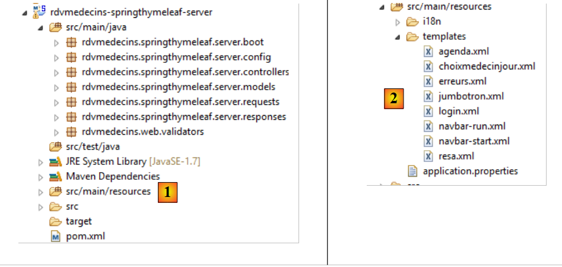 |
- in [1], the Java code;
- in [2], the views;
The Maven configuration in [pom.xml] is as follows:
<?xml version="1.0" encoding="UTF-8"?>
<project xmlns="http://maven.apache.org/POM/4.0.0" xmlns:xsi="http://www.w3.org/2001/XMLSchema-instance"
xsi:schemaLocation="http://maven.apache.org/POM/4.0.0 http://maven.apache.org/xsd/maven-4.0.0.xsd">
<modelVersion>4.0.0</modelVersion>
<groupId>istia.st.rdvmedecins</groupId>
<artifactId>rdvmedecins-springthymeleaf-server</artifactId>
<version>0.0.1-SNAPSHOT</version>
<name>rdvmedecins-springthymeleaf-server</name>
<description>Doctor Appointment Management</description>
<parent>
<groupId>org.springframework.boot</groupId>
<artifactId>spring-boot-starter-parent</artifactId>
<version>1.2.0.RELEASE</version>
</parent>
<dependencies>
<dependency>
<groupId>org.springframework.boot</groupId>
<artifactId>spring-boot-starter-thymeleaf</artifactId>
</dependency>
<dependency>
<groupId>istia.st.rdvmedecins</groupId>
<artifactId>rdvmedecins-webjson-client-console</artifactId>
<version>0.0.1-SNAPSHOT</version>
</dependency>
</dependencies>
<properties>
<start-class>rdvmedecins.springthymeleaf.server.boot.Boot</start-class>
<project.build.sourceEncoding>UTF-8</project.build.sourceEncoding>
<project.reporting.outputEncoding>UTF-8</project.reporting.outputEncoding>
<java.version>1.7</java.version>
</properties>
<build>
<plugins>
<plugin>
<artifactId>maven-compiler-plugin</artifactId>
<configuration>
<source>1.7</source>
<target>1.7</target>
</configuration>
</plugin>
<plugin>
<groupId>org.springframework.boot</groupId>
<artifactId>spring-boot-maven-plugin</artifactId>
</plugin>
</plugins>
</build>
...
</project>
- lines 16–19: the project is a Thymeleaf project;
- lines 20–24: which relies on the [DAO] layer we just built;
The Java configuration is handled by two files:
 |
The [web] layer is configured by the following [WebConfig] file:
package rdvmedecins.springthymeleaf.server.config;
import org.springframework.boot.autoconfigure.EnableAutoConfiguration;
import org.springframework.context.MessageSource;
import org.springframework.context.annotation.Bean;
import org.springframework.context.support.ResourceBundleMessageSource;
import org.springframework.web.servlet.DispatcherServlet;
import org.springframework.web.servlet.config.annotation.WebMvcConfigurerAdapter;
import org.thymeleaf.spring4.SpringTemplateEngine;
import org.thymeleaf.spring4.templateresolver.SpringResourceTemplateResolver;
@EnableAutoConfiguration
public class WebConfig extends WebMvcConfigurerAdapter {
// ----------------- [web] layer configuration
@Bean
public MessageSource messageSource() {
ResourceBundleMessageSource messageSource = new ResourceBundleMessageSource();
messageSource.setBasename("i18n/messages");
return messageSource;
}
@Bean
public SpringResourceTemplateResolver templateResolver() {
SpringResourceTemplateResolver templateResolver = new SpringResourceTemplateResolver();
templateResolver.setPrefix("classpath:/templates/");
templateResolver.setSuffix(".xml");
templateResolver.setTemplateMode("HTML5");
templateResolver.setCacheable(true);
templateResolver.setCharacterEncoding("UTF-8");
return templateResolver;
}
@Bean
SpringTemplateEngine templateEngine(SpringResourceTemplateResolver templateResolver) {
SpringTemplateEngine templateEngine = new SpringTemplateEngine();
templateEngine.setTemplateResolver(templateResolver);
return templateEngine;
}
// Configure DispatcherServlet for CORS headers
@Bean
public DispatcherServlet dispatcherServlet() {
DispatcherServlet servlet = new DispatcherServlet();
servlet.setDispatchOptionsRequest(true);
return servlet;
}
}
We have encountered all the elements of this configuration at one time or another. Just a reminder that lines 42–47 are necessary when you want to be able to query the server with cross-origin requests (CORS). That will be the case here.
The [AppConfig] class configures the entire application:
package rdvmedecins.springthymeleaf.server.config;
import org.springframework.boot.autoconfigure.EnableAutoConfiguration;
import org.springframework.context.annotation.ComponentScan;
import org.springframework.context.annotation.Import;
import rdvmedecins.client.config.DaoConfig;
@EnableAutoConfiguration
@ComponentScan(basePackages = { "rdvmedecins.springthymeleaf.server" })
@Import({ WebConfig.class, DaoConfig.class })
public class AppConfig {
// admin / admin
private final String USER_INIT = "admin";
private final String MDP_USER_INIT = "admin";
// Web service root / JSON
private final String WEBJSON_ROOT = "http://localhost:8080";
// timeout in milliseconds
private final int TIMEOUT = 5000;
// CORS
private final boolean CORS_ALLOWED = true;
...
}
- Line 11: [AppConfig] imports the configuration for the [DAO] layer and the [web] layer;
- lines 15-16: the credentials that will allow the application to access the application boot process in order to cache doctors and clients;
- line 18: the URL of the [Web1] web service / JSON;
- line 20: the timeout for the application’s HTTP calls;
- line 22: a boolean to enable or disable cross-domain calls;
Finally, in [application.properties], the Tomcat server is configured to run on port 8081:
 |
server.port=8081
8.6.3. Application Features
These were described in Section 8.2. We will now review them. Using a browser, we request the URL [http://localhost:8081/boot.html]:
 |
- in [1], the application’s login page;
- in [2] and [3], the username and password of the user who wants to use the application. There are two users: admin/admin (login/password) with the role (ADMIN) and user/user with the role (USER). Only the ADMIN role has permission to use the application. The USER role is included solely to demonstrate the server’s response in this use case;
- in [4], the button that allows you to connect to the server;
- in [5], the application language. There are two: French (default) and English;
- in [6], the server URL [rdvmedecins-springthymeleaf-server];
 |
- in [1], you log in;
 |
- once logged in, you can choose the doctor you want to see [2] and the date of the appointment [3]. As soon as a doctor and a date have been selected, the calendar is automatically displayed:
 |
- once the doctor’s calendar is displayed, you can book a time slot [5];
 |
- In [6], select the patient for the appointment and confirm your selection in [7];
 |
Once the appointment is confirmed, you are automatically returned to the calendar where the new appointment is now listed. This appointment can be deleted later [8].
The main features have been described. They are simple. Let’s finish with language settings:
 |
- in [1], you switch from French to English;
 |
- In [2], the view switches to English, including the calendar;
8.6.4. Step 1: Introduction to the Bootstrap CSS Framework
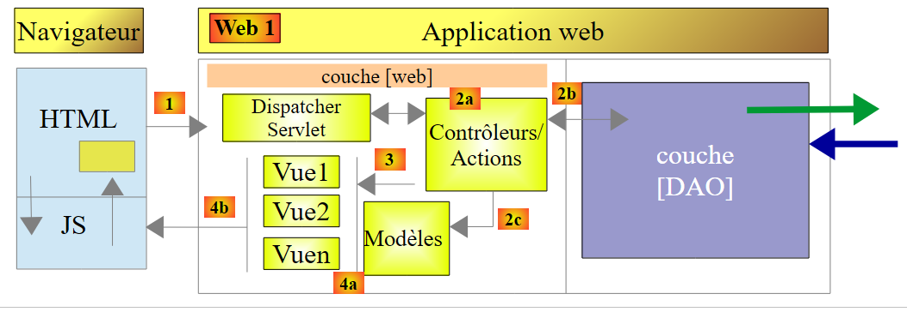 |
In the web client above, the HTML pages will use the Bootstrap CSS framework [http://getbootstrap.com/], which we will now present.
8.6.4.1. The example project
The sample project will be as follows:
 |
- in [1]: the project as a whole;
- in [2]: the Java code;
- in [3]: the JavaScript scripts;
 |
- in [4]: the JavaScript libraries;
- in [5]: the Thymeleaf views;
- in [6]: style sheets;
8.6.4.1.1. Maven Configuration
The [pom.xml] file is for a Thymeleaf Maven project:
<?xml version="1.0" encoding="UTF-8"?>
<project xmlns="http://maven.apache.org/POM/4.0.0" xmlns:xsi="http://www.w3.org/2001/XMLSchema-instance"
xsi:schemaLocation="http://maven.apache.org/POM/4.0.0 http://maven.apache.org/xsd/maven-4.0.0.xsd">
<modelVersion>4.0.0</modelVersion>
<groupId>istia.st</groupId>
<artifactId>rdvmedecins-webjson-client-bootstrap</artifactId>
<version>0.0.1-SNAPSHOT</version>
<packaging>jar</packaging>
<name>rdvmedecins-webjson-client-bootstrap</name>
<description>Bootstrap Demos</description>
<parent>
<groupId>org.springframework.boot</groupId>
<artifactId>spring-boot-starter-parent</artifactId>
<version>1.2.0.RELEASE</version>
<relativePath /> <!-- lookup parent from repository -->
</parent>
<properties>
<project.build.sourceEncoding>UTF-8</project.build.sourceEncoding>
<start-class>istia.st.rdvmedecins.BootstrapDemo</start-class>
<java.version>1.7</java.version>
</properties>
<dependencies>
<dependency>
<groupId>org.springframework.boot</groupId>
<artifactId>spring-boot-starter-thymeleaf</artifactId>
</dependency>
</dependencies>
<build>
<plugins>
<plugin>
<groupId>org.springframework.boot</groupId>
<artifactId>spring-boot-maven-plugin</artifactId>
</plugin>
</plugins>
</build>
</project>
8.6.4.1.2. Java Configuration
 |
The [BootstrapDemo] class configures the Spring/Thymeleaf application:
package istia.st.rdvmedecins;
import org.springframework.boot.SpringApplication;
import org.springframework.boot.autoconfigure.EnableAutoConfiguration;
import org.springframework.context.annotation.Bean;
import org.springframework.context.annotation.ComponentScan;
import org.springframework.web.servlet.config.annotation.WebMvcConfigurerAdapter;
import org.thymeleaf.spring4.templateresolver.SpringResourceTemplateResolver;
@EnableAutoConfiguration
@ComponentScan({ "istia.st.rdvmedecins" })
public class BootstrapDemo extends WebMvcConfigurerAdapter {
public static void main(String[] args) {
SpringApplication.run(BootstrapDemo.class, args);
}
@Bean
public SpringResourceTemplateResolver templateResolver() {
SpringResourceTemplateResolver templateResolver = new SpringResourceTemplateResolver();
templateResolver.setPrefix("classpath:/templates/");
templateResolver.setSuffix(".xml");
templateResolver.setTemplateMode("HTML5");
templateResolver.setCacheable(true);
templateResolver.setCharacterEncoding("UTF-8");
return templateResolver;
}
}
We have already encountered this type of code.
8.6.4.1.3. The Spring controller
 |
The [BootstrapController] is as follows:
package istia.st.rdvmedecins;
import org.springframework.stereotype.Controller;
import org.springframework.web.bind.annotation.RequestMapping;
import org.springframework.web.bind.annotation.RequestMethod;
@Controller
public class BootstrapController {
@RequestMapping(value = "/bs-01", method = RequestMethod.GET, produces = "text/html; charset=UTF-8")
public String bso1() {
return "bs-01";
}
@RequestMapping(value = "/bs-02", method = RequestMethod.GET, produces = "text/html; charset=UTF-8")
public String bs02() {
return "bs-02";
}
@RequestMapping(value = "/bs-03", method = RequestMethod.GET, produces = "text/html; charset=UTF-8")
public String bs03() {
return "bs-03";
}
@RequestMapping(value = "/bs-04", method = RequestMethod.GET, produces = "text/html; charset=UTF-8")
public String bs04() {
return "bs-04";
}
@RequestMapping(value = "/bs-05", method = RequestMethod.GET, produces = "text/html; charset=UTF-8")
public String bs05() {
return "bs-05";
}
@RequestMapping(value = "/bs-06", method = RequestMethod.GET, produces = "text/html; charset=UTF-8")
public String bs06() {
return "bs-06";
}
@RequestMapping(value = "/bs-07", method = RequestMethod.GET, produces = "text/html; charset=UTF-8")
public String bs07() {
return "bs-07";
}
@RequestMapping(value = "/bs-08", method = RequestMethod.GET, produces = "text/html; charset=UTF-8")
public String bs08() {
return "bs-08";
}
}
The actions are only there to display views processed by Thymeleaf.
8.6.4.1.4. The [application.properties] file
The [application.properties] file configures the embedded Tomcat server:
server.port=8082
8.6.4.2. Example #1: the jumbotron
The [/bs-01] action displays the following [bs-01.xml] view:
 |
The [bs-01.xml] view is as follows:
<!DOCTYPE HTML>
<html xmlns="http://www.w3.org/1999/xhtml" xmlns:th="http://www.thymeleaf.org" xmlns:layout="http://www.ultraq.net.nz/thymeleaf/layout">
<head>
<meta name="viewport" content="width=device-width" />
<title>RdvMedecins</title>
<!-- Bootstrap core CSS -->
<link rel="stylesheet" type="text/css" href="resources/css/bootstrap-3.1.1-min.css" />
<link rel="stylesheet" type="text/css" href="resources/css/bootstrapDemo.css" />
</head>
<body id="body">
<div class="container">
<!-- Bootstrap Jumbotron -->
</div>
<!-- content -->
<h1>Content goes here</h1>
</div>
<!-- error -->
<div id="error" class="alert alert-danger">
<span>Error text here</span>
</div>
</div>
</body>
</html>
- line 7: the Bootstrap framework's CSS file;
- line 8: a local CSS file;
- line 13: displays [1];
- lines 19–21: display [2];
- line 11: the CSS class [container] defines a display area within the browser;
- line 19: the CSS class [alert] displays a colored area. The class [alert-danger] uses a predefined color. There are several of these [alert-info, alert-warning,...];
The jumbotron [1] is generated by the following [jumbotron.xml] view:
<!DOCTYPE html>
<section xmlns="http://www.w3.org/1999/xhtml" xmlns:th="http://www.thymeleaf.org">
<!-- Bootstrap Jumbotron -->
<div class="jumbotron">
<div class="row">
<div class="col-md-2">
<img src="resources/images/caduceus.jpg" alt="RvMedecins" />
</div>
<div class="col-md-10">
<h1>
The Doctors
<br />
Partners
</h1>
</div>
</div>
</div>
</section>
- line 4: the area has the CSS class [jumbotron];
- line 5: the [row] class defines a row with 12 columns;
- line 6: the [col-md-2] class defines a two-column area within the row;
- line 7: an image is placed in these two columns;
- lines 9–15: text is placed in the remaining 10 columns;
8.6.4.3. Example #2: The navigation bar
The action [/bs-02] displays the following view [bs-02.xml]:
 |
The new feature is the navigation bar [1] with its input form and buttons:
The [bs-02.xml] view is as follows:
<!DOCTYPE HTML>
<html xmlns="http://www.w3.org/1999/xhtml" xmlns:th="http://www.thymeleaf.org" xmlns:layout="http://www.ultraq.net.nz/thymeleaf/layout">
<head>
<meta name="viewport" content="width=device-width" />
<title>RdvMedecins</title>
<!-- Bootstrap core CSS -->
<link rel="stylesheet" type="text/css" href="resources/css/bootstrap-3.1.1-min.css" />
<link rel="stylesheet" type="text/css" href="resources/css/bootstrapDemo.css" />
<!-- JS scripts -->
<script src="resources/vendor/jquery-2.1.1.min.js"></script>
<script type="text/javascript" src="resources/js/bs-02.js"></script>
</head>
<body id="body">
<div class="container">
<!-- navigation bar -->
<div th:include="navbar1"></div>
<!-- Bootstrap Jumbotron -->
<div th:include="jumbotron"></div>
<!-- content -->
<div id="content">
<h1>Content goes here</h1>
</div>
<!-- info -->
<div class="alert alert-warning">
<span id="info">Here is some informational text</span>
</div>
</div>
</body>
</html>
- line 10: we import jQuery;
- line 11: a local JS script;
- line 16: the navigation bar;
The navigation bar is generated by the following [navbar1.xml] view:
<!DOCTYPE HTML>
<section xmlns="http://www.w3.org/1999/xhtml" xmlns:th="http://www.thymeleaf.org">
<div class="navbar navbar-inverse navbar-fixed-top" role="navigation">
<div class="container">
<div class="navbar-header">
<button type="button" class="navbar-toggle" data-toggle="collapse" data-target=".navbar-collapse">
<span class="sr-only">Toggle navigation</span>
<span class="icon-bar"></span>
<span class="icon-bar"></span>
<span class="icon-bar"></span>
</button>
<a class="navbar-brand" href="#">RdvMedecins</a>
</div>
<div class="navbar-collapse collapse">
<img id="loading" src="resources/images/loading.gif" alt="waiting..." style="display: none" />
<!-- login form -->
<div class="navbar-form navbar-right" role="form" id="form" method="post">
<div class="form-group">
<input type="text" placeholder="Username" class="form-control" />
</div>
<div class="form-group">
<input type="password" placeholder="Password" class="form-control" />
</div>
<button type="button" class="btn btn-success" onclick="javascript:login()">Login</button>
</div>
</div>
</div>
</div>
</section>
 |
- line 3: the [navbar] class styles the navigation bar. The [navbar-inverse] class gives it a black background. The [navbar-fixed-top] class ensures that when you scroll the page displayed by the browser, the navigation bar remains at the top of the screen;
- Lines 5–13: define area [1]. This is typically a series of classes that I don’t understand. I use the component as-is;
- lines 14–26: define a “responsive” area of the navigation bar. On a smartphone, this area collapses into a menu area;
- line 15: an image that is currently hidden;
- lines 17–25: The [navbar-form] class styles a form in the navigation bar. The [navbar-right] class positions it to the right of the navigation bar;
- lines 21–23: the two input fields of the form on line 17 [2]. They are inside a [form-group] class that wraps the elements of a form, and each of them has the [form-control] class;
- line 24: the [btn] class, which defines a button, enhanced with the [btn-success] class, which gives it its green color;
- line 24: when the [Login] button is clicked, the following JS function is executed:
function connect() {
showInfo("Login requested...");
}
function showInfo(message) {
$("#info").text(message);
}
Here is an example:

8.6.4.4. Example #3: The list button
The action [/bs-03] displays the following view [bs-03.xml]:
 |
- The new feature is the list button [1], also known as a 'dropdown';
The code for the [bs-03.xml] view is as follows:
<!DOCTYPE HTML>
<html xmlns="http://www.w3.org/1999/xhtml" xmlns:th="http://www.thymeleaf.org" xmlns:layout="http://www.ultraq.net.nz/thymeleaf/layout">
<head>
<meta name="viewport" content="width=device-width" />
<title>RdvMedecins</title>
<!-- Bootstrap core CSS -->
<link rel="stylesheet" href="resources/css/bootstrap-3.1.1-min.css" />
<link rel="stylesheet" type="text/css" href="resources/css/bootstrapDemo.css" />
<!-- Bootstrap core JavaScript ================================================== -->
<script src="resources/vendor/jquery-2.1.1.min.js"></script>
<script src="resources/vendor/bootstrap.js"></script>
<!-- local script -->
<script type="text/javascript" src="resources/js/bs-03.js"></script>
</head>
<body id="body">
<div class="container">
<!-- navigation bar -->
<div th:include="navbar2"></div>
<!-- Bootstrap Jumbotron -->
</div>
<!-- content -->
<div id="content">
<h1>Content goes here</h1>
</div>
<!-- info -->
<div class="alert alert-warning">
<span id="info">Here is some informational text</span>
</div>
</div>
</body>
</html>
- line 11: the dropdown button requires the Bootstrap JS file;
- line 18: the new navigation bar;
The [navbar2.xml] view is as follows:
<!DOCTYPE HTML>
<section xmlns="http://www.w3.org/1999/xhtml" xmlns:th="http://www.thymeleaf.org">
<div class="navbar navbar-inverse navbar-fixed-top" role="navigation">
<div class="container">
<div class="navbar-header">
<button type="button" class="navbar-toggle" data-toggle="collapse" data-target=".navbar-collapse">
<span class="sr-only">Toggle navigation</span>
<span class="icon-bar"></span>
<span class="icon-bar"></span>
<span class="icon-bar"></span>
</button>
<a class="navbar-brand" href="#">RdvMedecins</a>
</div>
<div class="navbar-collapse collapse">
<img id="loading" src="resources/images/loading.gif" alt="waiting..." style="display: none" />
<!-- login form -->
<div class="navbar-form navbar-right" role="form" id="form" method="post">
<div class="form-group">
<input type="text" placeholder="Username" class="form-control" />
</div>
<div class="form-group">
<input type="password" placeholder="Password" class="form-control" />
</div>
<button type="button" class="btn btn-success" onclick="javascript:login()">Login</button>
<!-- languages -->
<div class="btn-group">
<button type="button" class="btn btn-danger">Languages</button>
<button type="button" class="btn btn-danger dropdown-toggle" data-toggle="dropdown">
<span class="caret"></span>
<span class="sr-only">Toggle Dropdown</span>
</button>
<ul class="dropdown-menu" role="menu">
<li>
<a href="javascript:setLang('fr')">French</a>
</li>
<li>
<a href="javascript:setLang('en')">English</a>
</li>
</ul>
</div>
</div>
</div>
</div>
</div>
<!-- init page -->
<script th:inline="javascript">
/*<![CDATA[*/
// initialize the page
initNavBar2();
/*]]>*/
</script>
</section>
- lines 25–40: define the dropdown button;
- line 27: the [btn-danger] class gives it its red color;
- lines 32–39: the list items. Each is a link associated with a JavaScript function;
- lines 46–51: a JavaScript script executed after the document loads;
The JS script [bs-03.js] is as follows:
function initNavBar2() {
// language dropdown
$('.dropdown-toggle').dropdown();
}
function connect() {
showInfo("Login requested...");
}
function setLang(lang) {
var msg;
switch (lang) {
case 'fr':
msg = "You have selected French...";
break;
case 'en':
msg = "You have selected the English language...";
break;
}
showInfo(msg);
}
function showInfo(message) {
$("#info").text(message);
}
- Lines 1-4: The function that initializes the [dropdown]. [$('.dropdown-toggle')] locates the element with the [dropdown-toggle] class. This is the dropdown button (line 28 of the view). The JS function [dropdown()]—defined in the JS file [bootstrap.js]—is applied to it. Only after this operation does the button behave as a dropdown button;
- lines 10–21: the function executed when a language is selected;
Here is an example:

8.6.4.5. Example #4: a menu
The action [/bs-04] displays the following view [bs-04.xml]:
 |
A menu [1] has been added.
The [bs-04.xml] view is as follows:
<!DOCTYPE HTML>
<html xmlns="http://www.w3.org/1999/xhtml" xmlns:th="http://www.thymeleaf.org" xmlns:layout="http://www.ultraq.net.nz/thymeleaf/layout">
<head>
<meta name="viewport" content="width=device-width" />
<title>RdvMedecins</title>
<!-- Bootstrap core CSS -->
<link rel="stylesheet" href="resources/css/bootstrap-3.1.1-min.css" />
<link rel="stylesheet" type="text/css" href="resources/css/bootstrapDemo.css" />
<!-- Bootstrap core JavaScript ================================================== -->
<script src="resources/vendor/jquery-2.1.1.min.js"></script>
<script src="resources/vendor/bootstrap.js"></script>
<!-- local script -->
<script type="text/javascript" src="resources/js/bs-04.js"></script>
</head>
<body id="body">
<div class="container">
<!-- navigation bar -->
<div th:include="navbar3"></div>
<!-- Bootstrap Jumbotron -->
<div th:include="jumbotron"></div>
<!-- content -->
<div id="content">
<h1>Content goes here</h1>
</div>
<!-- info -->
<div class="alert alert-warning">
<span id="info">Here is some informational text</span>
</div>
</div>
</body>
</html>
- line 18: insert a new navigation bar;
The [navbar3.xml] view is as follows:
<!DOCTYPE HTML>
<section xmlns="http://www.w3.org/1999/xhtml" xmlns:th="http://www.thymeleaf.org">
<div class="navbar navbar-inverse navbar-fixed-top" role="navigation">
<div class="container">
<div class="navbar-header">
<button type="button" class="navbar-toggle" data-toggle="collapse" data-target=".navbar-collapse">
<span class="sr-only">Toggle navigation</span>
<span class="icon-bar"></span>
<span class="icon-bar"></span>
<span class="icon-bar"></span>
</button>
<a class="navbar-brand" href="#">RdvMedecins</a>
</div>
<div class="collapse navbar-collapse">
<img id="loading" src="resources/images/loading.gif" alt="waiting..." style="display: none" />
<ul class="nav navbar-nav">
<li class="active" id="lnkAfficherAgenda">
<a href="javascript:afficherAgenda()">Calendar </a>
</li>
<li class="active" id="lnkHome">
<a href="javascript:retourAccueil()">Back to Home </a>
</li>
<li class="active" id="lnkRetourAgenda">
<a href="javascript:retourAgenda()">Back to Calendar </a>
</li>
<li class="active" id="lnkConfirmApp">
<a href="javascript:validerRv()">Confirm </a>
</li>
</ul>
<!-- right buttons -->
<div class="navbar-form navbar-right" role="form">
<!-- logout -->
<button type="button" class="btn btn-success" onclick="javascript:logout()">Logout</button>
<!-- languages -->
<div class="btn-group">
<button type="button" class="btn btn-danger">Languages</button>
<button type="button" class="btn btn-danger dropdown-toggle" data-toggle="dropdown">
<span class="caret"></span>
<span class="sr-only">Toggle Dropdown</span>
</button>
<ul class="dropdown-menu" role="menu">
<li>
<a href="javascript:setLang('fr')">French</a>
</li>
<li>
<a href="javascript:setLang('en')">English</a>
</li>
</ul>
</div>
</div>
</div>
</div>
</div>
<!-- init page -->
<script th:inline="javascript">
/*<![CDATA[*/
// initialize the page
initNavBar3();
/*]]>*/
</script>
</section>
- lines 16–29: create the menu with four options, each linked to a JS script;
- lines 55-60: a script executed when the page loads;
The JS script [bs-04.js] is as follows:
...
function initNavBar3() {
// language dropdown
$('.dropdown-toggle').dropdown();
// animated image
loading = $("#loading");
loading.hide();
}
function showCalendar() {
showInfo("[Calendar] option clicked...");
}
function returnToHome() {
showInfo("[Back to Home] option clicked...");
}
function returnToCalendar() {
showInfo("[Back to Calendar] option clicked...");
}
function validateAppointment() {
showInfo("[Validate] button clicked...");
}
function setMenu(show) {
// menu links
var lnkShowCalendar = $("#lnkShowCalendar");
var lnkHome = $("#lnkHome");
var lnkConfirmApp = $("#lnkConfirmApp");
var lnkReturnToCalendar = $("#lnkReturnToCalendar");
// we put them in a dictionary
var options = {
"lnkHome" : lnkHome,
"lnkViewCalendar" : lnkViewCalendar,
"lnkConfirmAppointment" : lnkConfirmAppointment,
"lnkBackToCalendar" : lnkBackToCalendar
}
// hide all links
for (var key in options) {
options[key].hide();
}
// display the requested ones
for (var i = 0; i < show.length; i++) {
var option = show[i];
options[option].show();
}
}
- lines 2–18: the page initialization function;
- line 4: to display the language selection button;
- lines 6-7: the animated image is hidden;
- lines 26-48: a [setMenu] function that allows you to specify which options should be visible;
Let’s go to the developer console (Ctrl-Shift-I) and enter the following code [1]:
 |
Then return to the browser. The menu has changed [2]:
8.6.4.6. Example #5: A dropdown list
The [/bs-05] action displays the following [bs-05.xml] view:
 |
The new feature is at [1]. Here we are using a component provided outside of Bootstrap, [bootstrap-select] [http://silviomoreto.github.io/bootstrap-select/].
The code for the [bs-05.xml] view is as follows:
<!DOCTYPE HTML>
<html xmlns="http://www.w3.org/1999/xhtml" xmlns:th="http://www.thymeleaf.org" xmlns:layout="http://www.ultraq.net.nz/thymeleaf/layout">
<head>
<meta name="viewport" content="width=device-width" />
<title>RdvMedecins</title>
<!-- Bootstrap core CSS -->
<link rel="stylesheet" href="resources/css/bootstrap-3.1.1-min.css" />
<link rel="stylesheet" type="text/css" href="resources/css/bootstrap-select.min.css" />
<link rel="stylesheet" type="text/css" href="resources/css/bootstrapDemo.css" />
<!-- Bootstrap core JavaScript ================================================== -->
<script type="text/javascript" src="resources/vendor/jquery-2.1.1.min.js"></script>
<script type="text/javascript" src="resources/vendor/bootstrap.js"></script>
<script type="text/javascript" src="resources/vendor/bootstrap-select.js"></script>
<!-- local script -->
<script type="text/javascript" src="resources/js/bs-05.js"></script>
</head>
<body id="body">
<div class="container">
<!-- navigation bar -->
<div th:include="navbar3"></div>
<!-- Bootstrap Jumbotron -->
<div th:include="jumbotron"></div>
<!-- content -->
<div id="content" th:include="choixmedecin">
</div>
<!-- info -->
<span id="info">Here is some informational text</span>
</div>
</div>
</body>
</html>
- line 8: the CSS required for the drop-down list;
- line 13: the JS file required for the drop-down list;
- line 24: the drop-down list;
The [choixmedecin.xml] view is as follows:
<!DOCTYPE html>
<section xmlns="http://www.w3.org/1999/xhtml" xmlns:th="http://www.thymeleaf.org">
<div class="alert alert-info">Please select a doctor</div>
<div class="row">
<div class="col-md-3">
<h2>Doctor</h2>
<select id="idMedecin" class="combobox" data-style="btn-primary">
<option value="1">Ms. Marie Pélissier</option>
<option value="2">Mr. Jean Pardon</option>
<option value="3">Ms. Jeanne Jirou</option>
<option value="4">Mr. Paul Macou</option>
</select>
</div>
</div>
<!-- local script -->
<script th:inline="javascript">
/*<![CDATA[*/
// initialize the page
initChoixMedecin();
/*]]>*/
</script>
</section>
- lines 7–12: This is a standard [select] element, but with a specific class [combobox]. The [data-style="btn-primary"] attribute gives the component its blue color;
- lines 16–21: a script executed when the page loads;
The JS file [bs-05.js] is as follows:
...
function displayCalendar() {
var doctorId = $('#doctorId option:selected').val();
showInfo("You have selected the doctor with id=" + idMedecin);
}
function initDoctorSelection() {
// the doctor dropdown
$('#idMedecin').selectpicker();
// the menu
setMenu([ "lnkShowCalendar" ]);
}
- lines 7–12: the function executed when the page loads;
- line 9: the instruction that transforms the page's [select] into a Bootstrap dropdown list. [$('#idMedecin')] references the [select] (line 7 of the [choixmedecin] view) and the JS function [selectpicker] comes from the JS file [bootstrap-select.js];
- line 11: only one of the menu options is displayed;
- lines 2–5: the JavaScript function executed when the [Agenda] menu option is clicked;
- line 3: we retrieve the value of the selected option in the dropdown list: [$('#idMedecin option:selected')] first finds the component [id=idMedecin] and then, within that component, the selected option. The [..].val() operation then retrieves the value of the found element, i.e., the [value] attribute of the selected option;
Here is an example of selecting a doctor:
 |
8.6.4.7. Example #6: A calendar
The action [/bs-06] displays the following view [bs-06.xml]:

Selecting a doctor or a date triggers a JS function that displays both the selected doctor and the selected date. Here is an example:
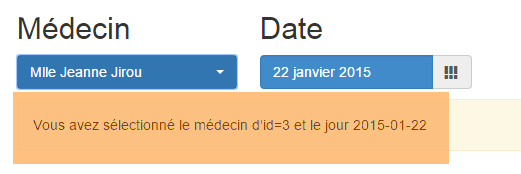 |
Using the language list button, you can switch the calendar (and only the calendar) to English:

This is the most complex example in the series. The calendar is a [bootstrap-datepicker] component [http://eternicode.github.io/bootstrap-datepicker].
The [bs-06.xml] view is as follows:
<!DOCTYPE HTML>
<html xmlns="http://www.w3.org/1999/xhtml" xmlns:th="http://www.thymeleaf.org" xmlns:layout="http://www.ultraq.net.nz/thymeleaf/layout">
<head>
<meta name="viewport" content="width=device-width" />
<title>RdvMedecins</title>
<!-- Bootstrap core CSS -->
<link rel="stylesheet" href="resources/css/bootstrap-3.1.1-min.css" />
<link rel="stylesheet" type="text/css" href="resources/css/bootstrap-select.min.css" />
<link rel="stylesheet" type="text/css" href="resources/css/datepicker3.css" />
<link rel="stylesheet" type="text/css" href="resources/css/bootstrapDemo.css" />
<!-- Bootstrap core JavaScript ================================================== -->
<script type="text/javascript" src="resources/vendor/jquery-2.1.1.min.js"></script>
<script type="text/javascript" src="resources/vendor/bootstrap.js"></script>
<script type="text/javascript" src="resources/vendor/bootstrap-select.js"></script>
<script type="text/javascript" src="resources/vendor/moment-with-locales.js"></script>
<script type="text/javascript" src="resources/vendor/bootstrap-datepicker.js"></script>
<script type="text/javascript" src="resources/vendor/bootstrap-datepicker.fr.js"></script>
<!-- local script -->
<script type="text/javascript" src="resources/js/bs-06.js"></script>
</head>
<body id="body">
<div class="container">
<!-- navigation bar -->
<div th:include="navbar3"></div>
<!-- Bootstrap Jumbotron -->
<div th:include="jumbotron"></div>
<!-- content -->
<div id="content" th:include="choixmedecinjour">
</div>
<!-- info -->
<span id="info">Here is some informational text</span>
</div>
</div>
</body>
</html>
- line 8: the CSS file for the [bootstrap-datepicker] component;
- line 16: the JS file for the [bootstrap-datepicker] component;
- line 17: the JS file for managing a French calendar. By default, it is in English;
- line 15: the JS file for a library called [moment] that provides access to numerous time calculation functions [http://momentjs.com/];
- line 28: the calendar view;
The [choixmedecinjour.xml] view is as follows:
<!DOCTYPE html>
<section xmlns="http://www.w3.org/1999/xhtml" xmlns:th="http://www.thymeleaf.org">
<div class="alert alert-info">Please select a doctor and a date</div>
<div class="row">
<div class="col-md-3">
<h2>Doctor</h2>
<select id="idMedecin" class="combobox" data-style="btn-primary">
<option value="1">Ms. Marie Pélissier</option>
<option value="2">Mr. Jean Pardon</option>
<option value="3">Ms. Jeanne Jirou</option>
<option value="4">Mr. Paul Macou</option>
</select>
</div>
<div class="col-md-3">
<h2>Date</h2>
<section id="calendar_container">
<div id="calendar" class="input-group date">
<input id="displayday" type="text" class="form-control btn-primary" disabled="true">
<span class="input-group-addon">
<i class="glyphicon glyphicon-th"></i>
</span>
</input>
</div>
</section>
</div>
</div>
<!-- local script -->
<script th:inline="javascript">
/*<![CDATA[*/
// initialize the page
initChoixMedecinJour();
/*]]>*/
</script>
</section>
- lines 17-23: the calendar;
- line 18: the [btn-primary] class gives it its blue color;
- line 18: the [disabled="true"] attribute prevents manual date entry. You must use the calendar;
- line 16: the calendar has been placed in a section [id="calendar_container"]. To change the calendar’s language, you must delete it and then regenerate it. So, delete the content of the [id="calendar_container"] component and then place the new calendar with the new language there;
- Lines 28–33: the page initialization code;
The JS file [bs-06.js] is as follows:
...
var calendar_infos = {};
function initChoixMedecinJour() {
// calendar
var calendar_container = $("#calendar_container");
calendar_infos = {
"container": calendar_container,
"html" : calendar_container.html(),
"today" : moment().format('YYYY-MM-DD'),
"language" : "fr"
}
// create calendar
updateCalendar();
// doctor selection
$('#idMedecin').selectpicker();
$('#idMedecin').change(function(e) {
displayCalendar();
})
// the menu
setMenu([]);
}
- Line 2: The calendar is managed by several JS functions. The variable [calendar_infos] will collect information about the calendar. It is global so that it can be accessed by the various functions;
- line 6: we identify the calendar container;
- lines 7–12: the information stored for the calendar;
- line 8: a reference to its container,
- line 9: the calendar’s HTML code. With these two pieces of information, we can remove the calendar and regenerate it;
- line 10: today's date in the format [yyyy-mm-dd],
- line 11: the calendar's language;
- line 14: creation of the calendar;
- line 16: the doctors dropdown menu;
- lines 17–19: every time the value selected in this dropdown changes, the [displayCalendar] method will be executed;
- line 21: no menu in the navigation bar;
The [updateCalendar] function is as follows:
function updateCalendar(renew) {
if (renew) {
// refresh the current calendar
calendar_infos.container.html(calendar_infos.html);
}
// Initialize the calendar
var calendar = $("#calendar");
var settings = {
format: "yyyy-mm-dd",
startDate: calendar_infos.today,
language: calendar_infos.language,
};
calendar.datepicker(settings);
// Select the current date
if (calendar_infos.date) {
calendar.datepicker('setDate', calendar_infos.date)
}
// events
calendar.datepicker().on('hide', function(e) {
// display selected day
displayDay();
});
calendar.datepicker().on('changeDate', function(e) {
// note the new date
calendar_infos.date = moment(calendar.datepicker('getDate')).format("YYYY-MM-DD");
// display calendar info
displayCalendar();
// display selected day
displayDay();
});
// display selected day
displayDay();
}
- line 1: the [updateCalendar] function accepts a parameter that may or may not be present. If it is present, then the calendar is regenerated (line 4) based on the information contained in [calendar_infos];
- line 7: the calendar is referenced;
- lines 8–12: its initialization parameters;
- line 9: the format of the dates handled [yyyy-mm-dd],
- line 10: the first date that can be selected in the calendar. Here, today’s date. Dates prior to this cannot be selected;
- line 11: the calendar's language. There will be two: ['en'] and ['fr'];
- line 13: the calendar is configured;
- lines 15–17: if the date from [calendar_infos] has been initialized, then this date is set as the current calendar date;
- lines 19–22: every time the calendar closes, the selected date will be displayed;
- lines 23–30: every time there is a date change in the calendar:
- line 25: the selected date is recorded in [calendar_infos],
- line 27: we display information about the calendar,
- line 29: display the selected day;
- line 32: display the selected day, if there is one;
The [displayJour] method that displays the selected day is as follows:
// displays the selected day
function displayDay() {
if (calendar_infos.date) {
var displayDay = $("#displayDay");
moment.locale(calendar_infos.language);
day = moment(calendar_infos.date).format('LL');
displayday.val(day);
}
}
- line 3: if a date has already been selected (initially, the calendar has no selected date);
- line 4: we locate the component where we will enter the date;
- line 5: this date can be written in English or French. We set the library's language [moment];
- line 6: display the selected date in the chosen language and in long format;
- line 7: this date is displayed;
Here are two examples:
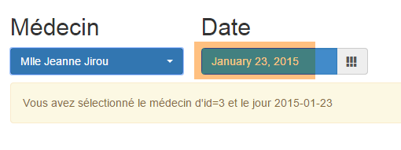 | 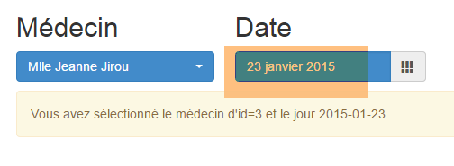 |
When the doctor or date changes, the [displayCalendar] method is executed:
function displayCalendar() {
// Display doctor and date
var doctorId = $('#doctorId option:selected').val();
if (calendar_infos.date) {
showInfo("You have selected the doctor with id=" + idMedecin + " and the date " + calendar_infos.date);
}
}
8.6.4.8. Example #7: A 'responsive' HTML table
Note: 'responsive' is a term indicating that a component is capable of adapting to the size of the screen on which it is displayed. We will show an example of this.
The [/bs-07] action displays the following [bs-07.xml] view (full screen):
 |
The new feature is the HTML table [1]. This table is managed by the JS library [footable]: [https://github.com/fooplugins/FooTable].
If you resize the browser window, you get the following:
 |
- the HTML table has adapted to the screen size;
- in [1], to see the [Book] link, you must click the [+] sign;
- in [2], what you see when you click the [+] sign;
The [bs-07.xml] view is as follows:
<!DOCTYPE HTML>
<html xmlns="http://www.w3.org/1999/xhtml" xmlns:th="http://www.thymeleaf.org" xmlns:layout="http://www.ultraq.net.nz/thymeleaf/layout">
<head>
<meta name="viewport" content="width=device-width" />
<title>RdvMedecins</title>
<!-- Bootstrap core CSS -->
<link rel="stylesheet" href="resources/css/bootstrap-3.1.1-min.css" />
<link rel="stylesheet" type="text/css" href="resources/css/bootstrap-select.min.css" />
<link rel="stylesheet" type="text/css" href="resources/css/datepicker3.css" />
<link rel="stylesheet" type="text/css" href="resources/css/footable.core.min.css" />
<link rel="stylesheet" type="text/css" href="resources/css/bootstrapDemo.css" />
<!-- Bootstrap core JavaScript ================================================== -->
<script type="text/javascript" src="resources/vendor/jquery-2.1.1.min.js"></script>
<script type="text/javascript" src="resources/vendor/bootstrap.js"></script>
<script type="text/javascript" src="resources/vendor/bootstrap-select.js"></script>
<script type="text/javascript" src="resources/vendor/moment-with-locales.js"></script>
<script type="text/javascript" src="resources/vendor/bootstrap-datepicker.js"></script>
<script type="text/javascript" src="resources/vendor/bootstrap-datepicker.fr.js"></script>
<script type="text/javascript" src="resources/vendor/footable.js"></script>
<!-- local script -->
<script type="text/javascript" src="resources/js/bs-07.js"></script>
</head>
<body id="body">
<div class="container">
<!-- navigation bar -->
<div th:include="navbar3" />
<!-- Bootstrap Jumbotron -->
<div th:include="jumbotron" />
<!-- content -->
<div id="content" th:include="choixmedecinjour" />
<div id="agenda" th:include="agenda" />
<!-- info -->
<div class="alert alert-success">
<span id="info">Here is some informational text</span>
</div>
</div>
</body>
</html>
- line 10: the CSS for the [footable] library;
- line 19: the [footable] library's JavaScript;
- line 31: the HTML table for a calendar;
The [agenda.xml] view is as follows:
<!DOCTYPE HTML>
<html xmlns:th="http://www.thymeleaf.org">
<body>
<div class="row alert alert-danger">
<div class="col-md-6">
<table id="slots" class="table">
<thead>
<tr>
<th data-toggle="true">
<span>Time slot</span>
</th>
<th>
<span>Client</span>
</th>
<th data-hide="phone">
<span>Action</span>
</th>
</tr>
</thead>
<tbody>
<tr>
<td>
<span class='status-metro status-active'>
9:00–9:20 a.m.
</span>
</td>
<td>
<span></span>
</td>
<td>
<a href="javascript:reserver(14)" class="status-metro status-active">
Book
</a>
</td>
</tr>
<tr>
<td>
<span class='status-metro status-suspended'>
9:20–9:40
</span>
</td>
<td>
<span>Ms. Paule MARTIN</span>
</td>
<td>
<a href="javascript:delete(17)" class="status-metro status-suspended">
Delete
</a>
</td>
</tr>
</tbody>
</table>
</div>
</div>
<!-- init page -->
<script th:inline="javascript">
/*<![CDATA[*/
// initialize the page
initAgenda();
/*]]>*/
</script>
</body>
</html>
- line 4: places the table in a row [row] and a colored box [alert alert-danger];
- line 5: the table will span 6 columns [col-md-6];
- line 6: the HTML table is formatted by Bootstrap [class='table'];
- line 9: the [data-toggle] attribute specifies the column containing the [+/-] symbol that expands/collapses the row;
- line 15: the [data-hide='phone'] attribute specifies that the column should be hidden if the screen is the size of a phone screen. The value 'tablet' can also be used;
- line 31: a JS function is associated with the [Book] link;
- line 46: a JS function is associated with the [Delete] link;
- lines 56–61: initialization of the page;
A number of the CSS classes used above come from the CSS file [bootstrapDemo.css]:
@CHARSET "UTF-8";
#creneaux th {
text-align: center;
}
#creneaux td {
text-align: center;
font-weight: bold;
}
.status-metro {
display: inline-block;
padding: 2px 5px;
color:#fff;
}
.status-metro.status-active {
background: #43c83c;
}
.status-metro.status-suspended {
background: #fa3031;
}
The [status-*] styles come from an example of using the [footable] table found on the library's website.
In the JS file [bs-07.js], the page is initialized as follows:
function initAgenda() {
// the table of time slots
$("#slots").footable();
}
That's it. [$("#creneaux")] refers to the HTML table we want to make responsive. Additionally, here are the JS functions associated with the two links [Reserve] and [Delete]:
function book(slotId) {
showInfo("Reservation for slot # " + slotId);
}
function delete(appointmentId) {
showInfo("Deleting appointment # " + idRv);
}
8.6.4.9. Example #8: A modal box
The [/bs-08] action displays the following [bs-08.xml] view:

Whereas previously, clicking the [Book] link displayed information in the info box, here we will display a modal box to select a client for the appointment:

The component used is the [bootstrap-modal] component [https://github.com/jschr/bootstrap-modal/].
The [bs-08.xml] view is as follows:
<!DOCTYPE HTML>
<html xmlns="http://www.w3.org/1999/xhtml" xmlns:th="http://www.thymeleaf.org" xmlns:layout="http://www.ultraq.net.nz/thymeleaf/layout">
<head>
<meta name="viewport" content="width=device-width" />
<title>RdvMedecins</title>
<!-- Bootstrap core CSS -->
<link rel="stylesheet" href="resources/css/bootstrap-3.1.1-min.css" />
<link rel="stylesheet" type="text/css" href="resources/css/bootstrap-select.min.css" />
<link rel="stylesheet" type="text/css" href="resources/css/datepicker3.css" />
<link rel="stylesheet" type="text/css" href="resources/css/footable.core.min.css" />
<link rel="stylesheet" type="text/css" href="resources/css/bootstrapDemo.css" />
<!-- Bootstrap core JavaScript ================================================== -->
<script type="text/javascript" src="resources/vendor/jquery-2.1.1.min.js"></script>
<script type="text/javascript" src="resources/vendor/bootstrap.js"></script>
<script type="text/javascript" src="resources/vendor/bootstrap-select.js"></script>
<script type="text/javascript" src="resources/vendor/moment-with-locales.js"></script>
<script type="text/javascript" src="resources/vendor/bootstrap-datepicker.js"></script>
<script type="text/javascript" src="resources/vendor/bootstrap-datepicker.fr.js"></script>
<script type="text/javascript" src="resources/vendor/bootstrap-modal.js"></script>
<script type="text/javascript" src="resources/vendor/footable.js"></script>
<!-- local script -->
<script type="text/javascript" src="resources/js/bs-08.js"></script>
</head>
<body id="body">
<div class="container">
<!-- navigation bar -->
<div th:include="navbar3" />
<!-- Bootstrap Jumbotron -->
<div th:include="jumbotron" />
<!-- content -->
<div id="content" th:include="choixmedecinjour" />
<div id="agenda" th:include="agenda-modal" />
<div th:include="resa" />
<!-- info -->
<div class="alert alert-success">
<span id="info">Here is some informational text</span>
</div>
</div>
</body>
</html>
- line 19: the JS file required for modal boxes;
- line 32: the [agenda-modal] view is identical to the [agenda] view except for one detail: the JS function that handles the [Book] link:
<a href="javascript:showDialogResa(14)" class="status-metro status-active">Book</a>
The [showDialogResa] function is responsible for displaying the modal box for selecting a customer;
- line 33: the [resa.xml] view is the modal box for selecting a customer:
<!DOCTYPE HTML>
<section xmlns="http://www.w3.org/1999/xhtml" xmlns:th="http://www.thymeleaf.org">
<div id="resa" class="modal fade">
<div class="modal-dialog">
<div class="modal-content">
<div class="modal-header">
<button type="button" class="close" data-dismiss="modal" aria-label="Close">
<span aria-hidden="true">
</span>
</button>
<!-- <h4 class="modal-title">Modal title</h4> -->
</div>
<div class="modal-body">
<div class="alert alert-info">
<h3>
<span>Schedule an appointment</span>
</h3>
</div>
<div class="row">
<div class="col-md-3">
<h2>Clients</h2>
<select id="idClient" class="combobox" data-style="btn-primary">
<option value="1">Ms. Marguerite Planton</option>
<option value="2">Mr. Maxime Franck</option>
<option value="3">Ms. Elisabeth Oron</option>
<option value="4">Mr. Gaëtan Calot</option>
</select>
</div>
</div>
</div>
<div class="modal-footer">
<button type="button" class="btn btn-warning" onclick="javascript:cancelDialogResa()">Cancel</button>
<button type="button" class="btn btn-primary" onclick="javascript:validateResa()">Confirm</button>
</div>
</div><!-- /.modal-content -->
</div><!-- /.modal-dialog -->
</div><!-- /.modal -->
<!-- init page -->
<script th:inline="javascript">
/*<![CDATA[*/
// initialize the page
initResa();
/*]]>*/
</script>
</section>
- lines 3-37: the modal box;
- lines 13-30: the content of this box (what will be displayed);
- lines 31-34: the dialog box buttons;
- line 32: a [Cancel] button handled by the JS function [cancelDialogResa];
- line 33: a [Confirm] button handled by the JS function [validateResa];
- lines 39–44: the modal box initialization script;
This results in the following view:
 |
Note that the modal box is not displayed by default. This is why it is not visible when the application starts, even though its HTML code is present in the document.
The JS file [bs-08.js] is as follows:
var idCreneau;
var idClient;
var reservation;
function showDialogResa(idCreneau) {
// store the slot ID
this.slotId = slotId;
// display the booking dialog
var booking = $("#booking");
reservation.modal('show');
// log
showInfo("Reservation for slot # " + idCreneau);
}
function cancelDialogResa() {
// hide the dialog box
resa.modal('hide');
}
// validate reservation
function validateBooking() {
// retrieve the information
var clientId = $('#clientId option:selected').val();
// hide the dialog box
reservation.modal('hide');
// information
showInfo("Reservation of slot # " + idCreneau + " for customer # " + idClient)
}
function initResa() {
// the client dropdown
$('#idClient').selectpicker();
// modal box
reservation = $("#reservation");
reservation.modal({});
}
- lines 30–36: the modal box initialization function;
- line 32: the modal box contains a dropdown list that needs to be initialized;
- lines 34-35: initialization of the modal itself;
- lines 5-13: the JS function attached to the [Book] link;
- line 7: the function parameter is stored in the global variable from line 1;
- lines 9-10: the modal box is made visible;
- line 12: information is logged in the info box;
- lines 15–18: handling the [Cancel] button. We simply hide the modal box (line 17);
- lines 21–31: the JS function attached to the [Submit] button;
- line 23: retrieve the [value] attribute of the selected client;
- line 25: hide the dialog box;
- line 27: we log the two pieces of information: the reserved slot number and the client it is for;
8.6.5. Step 2: Writing the Views
We will now describe the views returned by the [Web1] server as well as their templates.
 |
8.6.5.1. The [navbar-start] view
It displays the navigation bar on the boot page:

The code for [navbar-start.xml] is as follows:
<!DOCTYPE HTML>
<section xmlns:th="http://www.thymeleaf.org">
<div class="navbar navbar-inverse navbar-fixed-top" role="navigation">
<div class="container">
<div class="navbar-header">
<button type="button" class="navbar-toggle" data-toggle="collapse" data-target=".navbar-collapse">
<span class="sr-only">Toggle navigation</span>
<span class="icon-bar"></span>
<span class="icon-bar"></span>
<span class="icon-bar"></span>
</button>
<a class="navbar-brand" href="#">RdvMedecins</a>
</div>
<div class="navbar-collapse collapse">
<img id="loading" src="resources/images/loading.gif" alt="waiting..." style="display: none" />
<!-- login form -->
<div class="navbar-form navbar-right" role="form" id="form">
<div class="form-group">
<input type="text" th:placeholder="#{service.url}" class="form-control" id="urlService" />
</div>
<div class="form-group">
<input type="text" th:placeholder="#{username}" class="form-control" id="login" />
</div>
<div class="form-group">
<input type="password" th:placeholder="#{password}" class="form-control" id="passwd" />
</div>
<button type="button" class="btn btn-success" th:text="#{login}" onclick="javascript:connect()">Sign in</button>
<!-- languages -->
<div class="btn-group">
<button type="button" class="btn btn-danger" th:text="#{languages}">Action</button>
<button type="button" class="btn btn-danger dropdown-toggle" data-toggle="dropdown">
<span class="caret"></span>
<span class="sr-only">Toggle Dropdown</span>
</button>
<ul class="dropdown-menu" role="menu">
<li>
<a href="javascript:setLang('fr')" th:text="#{langues.fr}" />
</li>
<li>
<a href="javascript:setLang('en')" th:text="#{langues.en}" />
</li>
</ul>
</div>
</div>
</div>
</div>
</div>
<!-- init page -->
<script th:inline="javascript">
/*<![CDATA[*/
// initialize the page
initNavBarStart();
/*]]>*/
</script>
</section>
This view has no template. It has the following event handlers:
event | handler |
click on the login button | |
click on the [French] link | |
click on the [English] link |
8.6.5.2. The [jumbotron] view
This is the view displayed below the navigation bar [navbar-start] on the boot page:

Its code [jumbotron.xml] is as follows:
<!DOCTYPE html>
<section xmlns="http://www.w3.org/1999/xhtml" xmlns:th="http://www.thymeleaf.org">
<!-- Bootstrap Jumbotron -->
<div class="jumbotron">
<div class="row">
<div class="col-md-2">
<img src="resources/images/caduceus.jpg" alt="RvMedecins" />
</div>
<div class="col-md-10">
<h1 th:utext="#{application.header}" />
</div>
</div>
</div>
</section>
The [jumbotron] view has no template or events.
8.6.5.3. The [login] view
This is the view displayed below the jumbotron on the boot page:

Its code [login.xml] is as follows:
<!DOCTYPE html>
<section xmlns="http://www.w3.org/1999/xhtml" xmlns:th="http://www.thymeleaf.org">
<div class="alert alert-info" th:text="#{identification}">Identification
</div>
</section>
The view has neither a template nor events.
8.6.5.4. The [navbar-run] view
This is the navigation bar displayed when the login is successful:

Its code [navbar-run.xml] is as follows:
<!DOCTYPE HTML>
<section xmlns:th="http://www.thymeleaf.org">
<div class="navbar navbar-inverse navbar-fixed-top" role="navigation">
<div class="container">
<div class="navbar-header">
<button type="button" class="navbar-toggle" data-toggle="collapse" data-target=".navbar-collapse">
<span class="sr-only">Toggle navigation</span>
<span class="icon-bar"></span>
<span class="icon-bar"></span>
<span class="icon-bar"></span>
</button>
<a class="navbar-brand" href="#">RdvMedecins</a>
</div>
<div class="collapse navbar-collapse">
<img id="loading" src="resources/images/loading.gif" alt="waiting..." style="display: none" />
<!-- right buttons -->
<form class="navbar-form navbar-right" role="form">
<!-- logout -->
<button type="button" class="btn btn-success" th:text="#{options.logout}" onclick="javascript:logout()">Logout</button>
<!-- languages -->
<div class="btn-group">
<button type="button" class="btn btn-danger" th:text="#{langues}">Language</button>
<button type="button" class="btn btn-danger dropdown-toggle" data-toggle="dropdown">
<span class="caret"></span>
<span class="sr-only">Toggle Dropdown</span>
</button>
<ul class="dropdown-menu" role="menu">
<li>
<a href="javascript:setLang('fr')" th:text="#{langues.fr}" />
</li>
<li>
<a href="javascript:setLang('en')" th:text="#{langues.en}" />
</li>
</ul>
</div>
</form>
</div>
</div>
</div>
<!-- init page -->
<script th:inline="javascript">
/*<![CDATA[*/
// initialize the page
initNavBarRun();
/*]]>*/
</script>
</section>
This view has no template. It has the following event handlers:
event | handler |
click on the logout button | |
click on the [French] link | |
click on the [English] link |
8.6.5.5. The [home] view
This is the view displayed immediately below the navigation bar [navbar-run]:

Its code [home.html] is as follows:
<!DOCTYPE html>
<html xmlns="http://www.w3.org/1999/xhtml" xmlns:th="http://www.thymeleaf.org">
<div class="alert alert-info" th:text="#{choixmedecinjour.title}">Please select a doctor and a date</div>
<div class="row">
<div class="col-md-3">
<h2 th:text="#{rv.medecin}">Doctor</h2>
<select name="idMedecin" id="idMedecin" class="combobox" data-style="btn-primary">
<option th:each="medecinItem : ${rdvmedecins.medecinItems}" th:text="${medecinItem.text}" th:value="${medecinItem.id}"/>
</select>
</div>
<div class="col-md-3">
<h2 th:text="#{rv.day}">Date</h2>
<section id="calendar_container">
<div id="calendar" class="input-group date">
<input id="displayjour" type="text" class="form-control btn-primary" disabled="true">
<span class="input-group-addon">
<i class="glyphicon glyphicon-th"></i>
</span>
</input>
</div>
</section>
</div>
</div>
<!-- calendar -->
<div id="agenda"></div>
<!-- local script -->
<script th:inline="javascript">
/*<![CDATA[*/
// initialize the page
initChoixMedecinJour();
/*]]>*/
</script>
</html>
Its template is as follows:
- [rdvmedecins.medecinItems] (line 8): the list of doctors;
In its current form, the view does not appear to have any event handlers. In reality, these are defined in the [initChoixMedecinJour] function. This function was presented in section 8.6.4.7, on page 466 and more specifically on page 469. It contains the following event handlers:
event | handler |
doctor selection | |
select a date |
8.6.5.6. The [calendar] view
The [agenda] view displays a day from a doctor's calendar:

Its [agenda.xml] code is as follows:
<!DOCTYPE HTML>
<html xmlns:th="http://www.thymeleaf.org">
<body>
<h3 class="alert alert-info" th:text="${agenda.titre}">Dr. Pélissier's Schedule for 10/13/2014</h3>
<h4 class="alert alert-danger" th:if="${agenda.creneaux.length}==0" th:text="#{agenda.medecinsanscreneaux}">This doctor does not yet have any available
</h4>
<th:block th:if="${agenda.slots.length}!=0">
<div class="row tab-content alert alert-warning">
<div class="tab-pane active col-md-6">
<table id="appointments" class="table">
<thead>
<tr>
<th data-toggle="true">
<span th:text="#{agenda.time-slot}">Time slot</span>
</th>
<th>
<span th:text="#{agenda.client}">Client</span>
</th>
<th data-hide="phone">
<span th:text="#{agenda.action}">Action</span>
</th>
</tr>
</thead>
<tbody>
<tr th:each="slot,iter : ${agenda.slots}">
<td>
<span th:if="${slot.action}==1" class="status-metro status-active" th:text="${slot.timeSlot}">Time slot</span>
<span th:if="${slot.action}==2" class="status-metro status-suspended" th:text="${slot.timeSlot}">Time slot</span>
</td>
<td>
<span th:text="${creneau.client}">Client</span>
</td>
<td>
<a th:if="${creneau.action}==1" th:href="@{'javascript:reserverCreneau('+${creneau.id}+')'}" th:text="${creneau.commande}"
class="status-metro status-active">Book
</a>
<a th:if="${creneau.action}==2" th:href="@{'javascript:supprimerRv('+${creneau.idRv}+')'}" th:text="${creneau.commande}"
class="status-metro status-suspended">Delete
</a>
</td>
</tr>
</tbody>
</table>
</div>
</div>
<!-- reservation -->
<section th:include="reservation" />
</th:block>
<!-- init page -->
<script th:inline="javascript">
/*<![CDATA[*/
// initialize the page
initAgenda();
/*]]>*/
</script>
</body>
</html>
The template for this view has only one element:
- [agenda] (line 4): a somewhat complex template specifically designed for displaying the calendar;
It has the following event handlers:
event | handler |
click on the [Delete] button | |
click on the [Reserve] link |
The [resa] view on line 47 is the view that is displayed when the user clicks on a [Reserve] link:

Its code [resa.xml] is as follows:
<!DOCTYPE HTML>
<html xmlns:th="http://www.thymeleaf.org">
<body>
<div id="resa" class="modal fade">
<div class="modal-dialog">
<div class="modal-content">
<div class="modal-header">
<button type="button" class="close" data-dismiss="modal" aria-label="Close">
<span aria-hidden="true">
</span>
</button>
<!-- <h4 class="modal-title">Modal title</h4> -->
</div>
<div class="modal-body">
<div class="alert alert-info">
<h3>
<span th:text="#{resa.titre}">Make an appointment</span>
</h3>
</div>
<div class="row">
<div class="col-md-3">
<h2 th:text="#{resa.client}">Client</h2>
<select name="idClient" id="idClient" class="combobox" data-style="btn-primary">
<option th:each="clientItem : ${clientItems}" th:text="${clientItem.text}" th:value="${clientItem.id}" />
</select>
</div>
</div>
</div>
<div class="modal-footer">
<button type="button" class="btn btn-warning" onclick="javascript:cancelDialogResa()" th:text="#{resa.annuler}">Cancel</button>
<button type="button" class="btn btn-primary" onclick="javascript:confirmAppointment()" th:text="#{reservation.confirm}">Confirm</button>
</div>
</div><!-- /.modal-content -->
</div><!-- /.modal-dialog -->
</div><!-- /.modal -->
<!-- init page -->
<script th:inline="javascript">
/*<![CDATA[*/
// initialize the page
initResa();
/*]]>*/
</script>
</body>
</html>
Its model has only one element:
- [clientItems] (line 24): the list of clients;
It has the following event handlers:
event | handler |
click on the [Cancel] button | |
click on the [Confirm] button |
8.6.5.7. The [errors] view
This is the view that appears if the action requested by the user could not be completed:

The [errors.xml] code is as follows:
<!DOCTYPE HTML>
<section xmlns:th="http://www.thymeleaf.org">
<div class="alert alert-danger">
<h4>
<span th:text="#{errors.title}">The following errors occurred:</span>
</h4>
<ul>
<li th:each="message : ${errors}" th:text="${message}" />
</ul>
</div>
</section>
Its template has only one element:
- [errors] (line 8): the list of errors to display;
The view has no event handler.
8.6.5.8. Summary
The following table lists the views and their models:
view | Model | Event Handlers |
navbar-start | ||
jumbotron | ||
login | ||
navbar-run | ||
home | ||
calendar | ||
book | ||
errors |
8.6.6. Step 3: Writing the actions
Let’s return to the architecture of the [Web1] web service:
 |
We will now look at which URLs are exposed by [Web1] and their implementation:
8.6.6.1. The URLs exposed by the [Web1] service
These are as follows:
- a URL for each of the previous views or a combination of them;
- a URL to add an appointment;
- a URL to delete an appointment;
They all return a response of the [Response] type as follows:
public class Response {
// ----------------- properties
// operation status
private int status;
// the navigation bar
private String navbar;
// the jumbotron
private String jumbotron;
// the page body
private String content;
// the calendar
private String calendar;
...
}
- line 5: a response status: 1 (OK), 2 (error);
- line 7: the HTML stream for the [navbar-start] or [navbar-run] views, as appropriate;
- line 9: the HTML feed for the [jumbotron] view;
- line 13: the HTML feed for the [agenda] view;
- line 9: the HTML feed for the [home], [errors], or [login] views, as applicable;
The exposed URLs are as follows
places the [navbar-start] view in [Response.navbar] | |
places the [navbar-run] view in [Response.navbar] | |
places the [home] view in [Response.content] | |
places the [jumbotron] view in [Response.jumbotron] | |
places the [agenda] view in [Response.agenda] | |
places the [login] view in [Response.content] | |
| |
places the [navbar-run] view in [Response.navbar], the [jumbotron] view in [Response.jumbotron], the [home] view in [Response.content], and the [calendar] view in [Response.calendar] | |
adds the selected appointment and places the new agenda in [Response.agenda] | |
deletes the selected appointment and places the new calendar in [Response.calendar] |
8.6.6.2. The [ApplicationModel] singleton
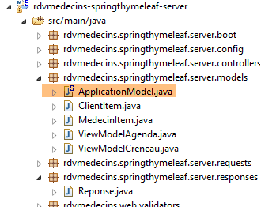 |
The [ApplicationModel] class is instantiated as a single instance and injected into the application controller. Its code is as follows:
package rdvmedecins.springthymeleaf.server.models;
import java.util.ArrayList;
...
@Component
public class ApplicationModel implements IDao {
....
}
- line 6: [ApplicationModel] is a Spring component;
- line 7: which implements the [DAO] layer interface. We do this so that the actions do not need to know about the [DAO] layer, but only the [ApplicationModel] singleton. The architecture of [Web1] then becomes as follows:
 |
Let’s go back to the code for the [ApplicationModel] class:
package rdvmedecins.springthymeleaf.server.models;
import java.util.ArrayList;
...
@Component
public class ApplicationModel implements IDao {
// the [DAO] layer
@Autowired
private IDao dao;
// configuration
@Autowired
private AppConfig appConfig;
// data from the [DAO] layer
private List<ClientItem> clientItems;
private List<DoctorItem> doctorItems;
// configuration data
private String userInit;
private String userInitPassword;
private boolean corsAllowed;
// exception
private RdvMedecinsException rdvMedecinsException;
// constructor
public ApplicationModel() {
}
@PostConstruct
public void init() {
// config
userInit = appConfig.getUSER_INIT();
mdpUserInit = appConfig.getMDP_USER_INIT();
dao.setTimeout(appConfig.getTIMEOUT());
dao.setUrlServiceWebJson(appConfig.getWEBJSON_ROOT());
corsAllowed = appConfig.isCORS_ALLOWED();
// cache the dropdown lists for doctors and clients
List<Doctor> doctors = null;
List<Client> clients = null;
try {
doctors = dao.getAllDoctors(new User(userInit, userInitPassword));
clients = dao.getAllClients(new User(userInit, mdpUserInit));
} catch (RdvMedecinsException ex) {
rdvMedecinsException = ex;
}
if (doctorAppointmentsException == null) {
// create the dropdown list items
doctorItems = new ArrayList<DoctorItem>();
for (Doctor doctor : doctors) {
medecinItems.add(new MedecinItem(doctor));
}
clientItems = new ArrayList<ClientItem>();
for (Client client : clients) {
clientItems.add(new ClientItem(client));
}
}
}
// getters and setters
...
// implementation of the [IDao] interface
@Override
public void setUrlServiceWebJson(String url) {
dao.setUrlServiceWebJson(url);
}
@Override
public void setTimeout(int timeout) {
dao.setTimeout(timeout);
}
@Override
public Rv addAppointment(User user, String day, long slotId, long clientId) {
return dao.addRv(user, day, slotId, clientId);
}
...
}
- line 11: injection of the reference to the [DAO] layer implementation. This reference is then used to implement the [IDao] interface (lines 64–80);
- line 14: injection of the application configuration;
- lines 33–37: use of this configuration to configure various elements of the application architecture;
- Lines 38–46: We cache the information that will populate the drop-down lists for doctors and clients. We therefore assume that if a doctor or client changes, the application must be restarted. The idea here is to show that a Spring singleton can serve as a cache for the web application;
The [MedecinItem] and [ClientItem] classes both derive from the following [PersonneItem] class:
package rdvmedecins.springthymeleaf.server.models;
import rdvmedecins.client.entities.Person;
public class PersonItem {
// list element
private Long id;
private String text;
// constructor
public PersonItem() {
}
public PersonItem(Person person) {
id = person.getId();
text = String.format("%s %s %s", person.getTitle(), person.getFirstName(), person.getLastName());
}
// getters and setters
...
}
- line 8: the [id] field will be the value of the [value] attribute of a dropdown list option;
- line 9: the [text] field will be the text displayed by a dropdown list option;
8.6.6.3. The [BaseController] class
 |
The [BaseController] class is the parent class of the [RdvMedecinsController] and [RdvMedecinsCorsController] controllers. It was not mandatory to create this parent class. We have grouped utility methods from the [RdvMedecinsController] class here, none of which are essential except for one. They can be classified into three groups:
- utility methods;
- methods that render views merged with their models;
- the method for initializing an action
| two utility methods that provide a list of error messages. We have already encountered and used them; |
| returns the [home] view without a template |
| returns the [agenda] view and its template |
| returns the [login] view without a model |
| returns the response to the client when the requested action ended in an error |
| the initialization method for all actions of the [RdvMedecinsController] controller |
Let’s examine two of these methods.
The [getPartialViewAgenda] method renders the most complex view to generate, that of the calendar. Its code is as follows:
// [agenda] flow
protected String getPartialViewAgenda(ActionContext actionContext, AgendaMedecinJour agenda, Locale locale) {
// contexts
WebContext thymeleafContext = actionContext.getThymeleafContext();
WebApplicationContext springContext = actionContext.getSpringContext();
// Build the [agenda] page model
ViewModelAgenda modelAgenda = setModelforAgenda(agenda, springContext, locale);
// the agenda with its model
thymeleafContext.setVariable("agenda", modelAgenda);
thymeleafContext.setVariable("clientItems", application.getClientItems());
return engine.process("agenda", thymeleafContext);
}
- Lines 9–10: the two elements of the calendar model:
- line 9: the displayed calendar.
- line 10: the list of clients displayed when the user makes an appointment;
The [setModelforAgenda] method on line 7 is as follows:
// [Agenda] page model
private ViewModelAgenda setModelforAgenda(AgendaMedecinJour agenda, WebApplicationContext springContext, Locale locale) {
// page title
String dateFormat = springContext.getMessage("date.format", null, locale);
Doctor doctor = agenda.getDoctor();
String title = springContext.getMessage("agenda.title", new String[] { doctor.getTitle(), doctor.getFirstName(),
doctor.getLastName(), new SimpleDateFormat(dateFormat).format(agenda.getDay()) }, locale);
// the booking slots
ViewModelCreneau[] modelSlots = new ViewModelCreneau[agenda.getDoctorSlotsForDay().length];
int i = 0;
for (DoctorSlotToday doctorSlotToday : calendar.getDoctorSlotToday()) {
// doctor's slot
Creneau slot = creneauMedecinJour.getCreneau();
ViewModelCreneau modelSlot = new ViewModelCreneau();
slotModel[i] = slotModel;
// id
slotModel.setId(slot.getId());
// time slot
modelSlot.setTimeSlot(String.format("%02h%02d-%02h%02d", slot.getStartHour(), slot.getStartMinute(),
slot.getEndHour(), slot.getEndMinute()));
Appointment appointment = doctorSlotDay.getAppointment();
// client and order
String order;
if (rv == null) {
modelSlot.setClient("");
order = springContext.getMessage("agenda.reserve", null, locale);
slotModel.setOrder(order);
slotModel.setAction(SlotViewModel.ACTION_RESERVE);
} else {
Client client = rv.getClient();
slotModel.setClient(String.format("%s %s %s", client.getTitle(), client.getFirstName(), client.getLastName()));
order = springContext.getMessage("agenda.delete", null, locale);
modelSlot.setCommand(command);
slotModel.setRvId(rv.getId());
slotModel.setAction(SlotViewModel.ACTION_DELETE);
}
// next slot
i++;
}
// return the calendar model
ViewModelAgenda modelAgenda = new ViewModelAgenda();
modelAgenda.setTitle(title);
modelAgenda.setSlots(modelSlots);
return modelAgenda;
}
- Line 6: The agenda has a title:
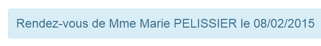
or:

We can see that the date format depends on the language. We retrieve this format from the message files (line 4).
- lines 11–40: for each time slot, we must display the view:

or the view:

- Lines 19–20: display the time slot;
- lines 25–28: the case where the time slot is available. In this case, the [Reserve] button must be displayed;
- lines 31–36: the case where the time slot is occupied. In this case, both the client and the [Delete] button must be displayed;
The other method we'll discuss in more detail is the [getActionContext] method. It is called at the beginning of each action in the [RdvMedecinsController]. Its signature is as follows:
protected ActionContext getActionContext(String lang, String origin, HttpServletRequest request, HttpServletResponse response, BindingResult result, RdvMedecinsCorsController rdvMedecinsCorsController)
It returns the following [ActionContext] type:
public class ActionContext {
// data
private WebContext thymeleafContext;
private WebApplicationContext springContext;
private Locale locale;
private List<String> errors;
...
}
- line 4: the action's Thymeleaf context;
- line 5: the action's Spring context;
- line 6: the action's locale;
- line 7: a possible list of error messages;
Its parameters are as follows:
- [lang]: the language requested for the action, 'en' or 'fr';
- [origin]: the HTTP [origin] header in the case of a cross-domain request;
- [request]: the HTTP request currently being processed, what has been referred to for some time as an action;
- [response]: the response that will be sent in response to this request;
- [result]: each action of [RdvMedecinsController] receives a posted value whose validity is tested. [result] is the result of this test;
- [rdvMedecinsController]: the controller that contains the actions;
The [getActionContext] method is implemented as follows:
// action context
protected ActionContext getActionContext(String lang, String origin, HttpServletRequest request, HttpServletResponse response, BindingResult result, RdvMedecinsCorsController rdvMedecinsCorsController) {
// language?
if (lang == null) {
lang = "fr";
}
// locale
Locale locale = null;
if (lang.trim().toLowerCase().equals("fr")) {
// French
locale = new Locale("fr", "FR");
} else {
// everything else in English
locale = new Locale("en", "US");
}
// CORS headers
rdvMedecinsCorsController.sendOptions(origin, response);
// ActionContext
ActionContext actionContext = new ActionContext(new WebContext(request, response, request.getServletContext(), locale), WebApplicationContextUtils.getWebApplicationContext(request.getServletContext()), locale, null);
// Initialization errors
RdvMedecinsException e = application.getRdvMedecinsException();
if (e != null) {
actionContext.setErrors(e.getMessages());
return actionContext;
}
// POST errors?
if (result != null && result.hasErrors()) {
actionContext.setErrors(getErrorsForModel(result, locale, actionContext.getSpringContext()));
return actionContext;
}
// no errors
return actionContext;
}
- lines 3–15: based on the [lang] parameter, we set the action’s locale;
- line 17: we send the HTTP headers required for cross-domain requests. We will not go into detail here. The technique used is that described in section 8.4.14;
- line 19: construction of an [ActionContext] object without errors;
- line 21: we saw in section 8.6.6.2 that the [ApplicationModel] singleton accessed the database to retrieve both clients and doctors. This access may fail. We then log the exception that occurs. On line 21, we retrieve this exception;
- lines 22–25: if an exception occurred during application startup, no action is possible. We therefore return an [ActionContext] object for any action, containing the error messages from the exception;
- lines 27–20: we analyze the [result] parameter to determine whether the posted value was valid or not. If it was invalid, we return an [ActionContext] object with the appropriate error messages;
- line 32: case with no errors;
We will now examine the actions of the [RdvMedecinsController]
8.6.6.4. The [/getNavBarStart] action
The [/getNavBarStart] action renders the [navbar-start] view. Its signature is as follows:
@RequestMapping(value = "/getNavbarStart", method = RequestMethod.POST)
@ResponseBody
public Response getNavbarStart(@Valid @RequestBody PostLang postLang, BindingResult result, HttpServletRequest request, HttpServletResponse response,
@RequestHeader(value = "Origin", required = false) String origin)
It returns the following [Response] type:
public class Reponse {
// ----------------- properties
// operation status
private int status;
// the navigation bar
private String navbar;
// the jumbotron
private String jumbotron;
// the body of the page
private String content;
// the calendar
private String calendar;
...
}
and has the following parameters:
- [PostLang postlang]: the next posted value:
public class PostLang {
// data
@NotNull
private String lang;
...
}
The [PostLang] class is the parent class of all posted values. This is because the client must always specify the language in which the action is to be executed.
The [getNavbarStart] method is implemented as follows:
// navbar-start
@RequestMapping(value = "/getNavbarStart", method = RequestMethod.POST)
@ResponseBody
public Response getNavbarStart(@Valid @RequestBody PostLang postLang, BindingResult result, HttpServletRequest request, HttpServletResponse response,
@RequestHeader(value = "Origin", required = false) String origin) {
// action contexts
ActionContext actionContext = getActionContext(postLang.getLang(), origin, request, response, result, rdvMedecinsCorsController);
WebContext thymeleafContext = actionContext.getThymeleafContext();
// errors?
List<String> errors = actionContext.getErrors();
if (errors != null) {
return getViewErrors(thymeleafContext, errors);
}
// return the [navbar-start] view
Response response = new Response();
response.setStatus(1);
response.setNavbar(engine.process("navbar-start", thymeleafContext));
return response;
}
- line 7: initialization of the action;
- lines 10–13: if the action initialization method reported errors, they are sent in the response to the client (line 12) with status 2:
- lines 15-18: send the [navbar-start] view with status 1:
In the following, we will only detail the new features.
8.6.6.5. The [/getNavbarRun] action
The [/getNavBarRun] action renders the [navbar-run] view:
// navbar-run
@RequestMapping(value = "/getNavbarRun", method = RequestMethod.POST)
@ResponseBody
public Response getNavbarRun(@Valid @RequestBody PostLang postLang, BindingResult result, HttpServletRequest request,
HttpServletResponse response, @RequestHeader(value = "Origin", required = false) String origin) {
// action contexts
ActionContext actionContext = getActionContext(postLang.getLang(), origin, request, response, result, rdvMedecinsCorsController);
WebContext thymeleafContext = actionContext.getThymeleafContext();
// errors?
List<String> errors = actionContext.getErrors();
if (errors != null) {
return getViewErrors(thymeleafContext, errors);
}
// return the [navbar-run] view
Response response = new Response();
response.setStatus(1);
response.setNavbar(engine.process("navbar-run", thymeleafContext));
return response;
}
The action can return two types of responses:
- the response with an error (lines 10–13):
- the response with the [navbar-run] view:
8.6.6.6. The [/getJumbotron] action
The [/getJumbotron] action returns the [jumbotron] view:
// jumbotron
@RequestMapping(value = "/getJumbotron", method = RequestMethod.POST)
@ResponseBody
public HttpServletResponse getJumbotron(@Valid @RequestBody PostLang postLang, BindingResult result, HttpServletRequest request,
HttpServletResponse response, @RequestHeader(value = "Origin", required = false) String origin) {
// action contexts
ActionContext actionContext = getActionContext(postLang.getLang(), origin, request, response, result, rdvMedecinsCorsController);
WebContext thymeleafContext = actionContext.getThymeleafContext();
// errors?
List<String> errors = actionContext.getErrors();
if (errors != null) {
return getViewErrors(thymeleafContext, errors);
}
// return the [jumbotron] view
Response response = new Response();
response.setStatus(1);
response.setJumbotron(engine.process("jumbotron", thymeleafContext));
return response;
}
The action can return two types of responses:
- the response with an error (lines 10–13):
- response with the [jumbotron] view:
8.6.6.7. The [/getLogin] action
The [/getLogin] action renders the [login] view:
@RequestMapping(value = "/getLogin", method = RequestMethod.POST)
@ResponseBody
public HttpServletResponse getLogin(@Valid @RequestBody PostLang postLang, BindingResult result, HttpServletRequest request,
HttpServletResponse response, @RequestHeader(value = "Origin", required = false) String origin) {
// action contexts
ActionContext actionContext = getActionContext(postLang.getLang(), origin, request, response, result, rdvMedecinsCorsController);
WebContext thymeleafContext = actionContext.getThymeleafContext();
// errors?
List<String> errors = actionContext.getErrors();
if (errors != null) {
return getViewErrors(thymeleafContext, errors);
}
// return the [login] view
Response response = new Response();
response.setStatus(1);
response.setJumbotron(engine.process("jumbotron", thymeleafContext));
response.setNavbar(engine.process("navbar-start", thymeleafContext));
response.setContent(getPartialViewLogin(thymeleafContext));
return response;
}
The action can return two types of responses:
- The response with an error (lines 9–11):
- The response with the [login] view:
8.6.6.8. The [/getHome] action
The [/getHome] action returns the [home] view. Its signature is as follows:
@RequestMapping(value = "/getHome", method = RequestMethod.POST)
@ResponseBody
public Response getHome(@Valid @RequestBody PostUser postUser, BindingResult result, HttpServletRequest request, HttpServletResponse response, @RequestHeader(value = "Origin", required = false) String origin)
- Line 3: The posted value is of type [PostUser] as follows:
public class PostUser extends PostLang {
// data
@NotNull
private User user;
...
}
- line 1: the [PostUser] class extends the [PostLang] class and therefore includes a language;
- line 4: the user attempting to retrieve the view;
The implementation code is as follows:
@RequestMapping(value = "/getAccueil", method = RequestMethod.POST)
@ResponseBody
public HttpServletResponse getHome(@Valid @RequestBody PostUser postUser, BindingResult result, HttpServletRequest request,
HttpServletResponse response, @RequestHeader(value = "Origin", required = false) String origin) {
// action contexts
ActionContext actionContext = getActionContext(postUser.getLang(), origin, request, response, result, rdvMedecinsCorsController);
WebContext thymeleafContext = actionContext.getThymeleafContext();
// errors?
List<String> errors = actionContext.getErrors();
if (errors != null) {
return getViewErrors(thymeleafContext, errors);
}
// The [home] view is protected
try{
// user
User user = postUser.getUser();
// verify credentials [userName, password]
application.authenticate(user);
} catch (RdvMedecinsException e) {
// return an error
return getViewErrors(thymeleafContext, e.getMessages());
}
// return the [home] view
Response response = new Response();
response.setStatus(1);
response.setContent(getPartialViewHome(thymeleafContext));
return response;
}
- Lines 15–22: Note that the [home] page is protected, so the user must be authenticated;
The action can return two types of responses:
- the error response (lines 11 and 21):
- response with the [home] view (lines 24–27):
8.6.6.9. The [/getNavbarRunJumbotronHome] action
The [/getNavbarRunJumbotronHome] action renders the [navbar-run, jumbotron, home] views. It has the following signature:
@RequestMapping(value = "/getNavbarRunJumbotronHome", method = RequestMethod.POST, consumes = "application/json; charset=UTF-8")
@ResponseBody
public Response getNavbarRunJumbotronHome(@Valid @RequestBody PostUser post, BindingResult result, HttpServletRequest request, HttpServletResponse response,
@RequestHeader(value = "Origin", required = false) String origin)
- line 3: the posted value is of type [PostUser];
The implementation of the action is as follows:
// navbar + jumbotron + home
@RequestMapping(value = "/getNavbarRunJumbotronAccueil", method = RequestMethod.POST, consumes = "application/json; charset=UTF-8")
@ResponseBody
public Response getNavbarRunJumbotronHome(@Valid @RequestBody PostUser postUser, BindingResult result, HttpServletRequest request, HttpServletResponse response,
@RequestHeader(value = "Origin", required = false) String origin) {
// action contexts
ActionContext actionContext = getActionContext(postUser.getLang(), origin, request, response, result,
rdvMedecinsCorsController);
WebContext thymeleafContext = actionContext.getThymeleafContext();
// errors?
List<String> errors = actionContext.getErrors();
if (errors != null) {
return getViewErrors(thymeleafContext, errors);
}
// The [home] view is protected
try {
// user
User user = postUser.getUser();
// verify credentials [userName, password]
application.authenticate(user);
} catch (RdvMedecinsException e) {
// return an error
return getViewErrors(thymeleafContext, e.getMessages());
}
// send the response
Response response = new Response();
response.setStatus(1);
response.setNavbar(engine.process("navbar-run", thymeleafContext));
response.setJumbotron(engine.process("jumbotron", thymeleafContext));
response.setContent(getPartialViewHome(thymeleafContext));
return response;
}
The action can return two types of responses:
- the response with an error (lines 13, 23):
- the response with the views [navbar-run, jumbotron, home] (lines 26–31):
8.6.6.10. The [/getAgenda] action
The [/getAgenda] action renders the [agenda] view. Its signature is as follows:
@RequestMapping(value = "/getAgenda", method = RequestMethod.POST, consumes = "application/json; charset=UTF-8")
@ResponseBody
public Response getAgenda(@RequestBody @Valid PostGetAgenda postGetAgenda, BindingResult result, HttpServletRequest request, HttpServletResponse response,
@RequestHeader(value = "Origin", required = false) String origin)
- Line 3: The posted value is of type [PostGetAgenda] as follows:
public class PostGetAgenda extends PostUser {
// data
@NotNull
private Long doctorId;
@NotNull
@DateTimeFormat(pattern = "yyyy-MM-dd")
private Date day;
...
}
- line 1: the [PostGetAgenda] class extends the [PostUser] class and therefore includes a language and a user;
- line 5: the doctor's ID whose calendar is desired;
- line 8: the desired day of the calendar;
The implementation is as follows:
@RequestMapping(value = "/getAgenda", method = RequestMethod.POST, consumes = "application/json; charset=UTF-8")
@ResponseBody
public Reponse getAgenda(@RequestBody @Valid PostGetAgenda postGetAgenda, BindingResult result, HttpServletRequest request, HttpServletResponse response,
@RequestHeader(value = "Origin", required = false) String origin) {
// action contexts
ActionContext actionContext = getActionContext(postGetAgenda.getLang(), origin, request, response, result, rdvMedecinsCorsController);
WebContext thymeleafContext = actionContext.getThymeleafContext();
WebApplicationContext springContext = actionContext.getSpringContext();
Locale locale = actionContext.getLocale();
// errors?
List<String> errors = actionContext.getErrors();
if (errors != null) {
return getViewErrors(thymeleafContext, errors);
}
// Check the validity of the POST request
if (result != null) {
new PostGetAgendaValidator().validate(postGetAgenda, result);
if (result.hasErrors()) {
// return the [errors] view
return getViewErrors(thymeleafContext, getErrorsForModel(result, locale, springContext));
}
}
...
}
- Up to line 14, the code is now standard;
- lines 16–21: we perform an additional check on the posted value. The date must be on or after today’s date. To verify this, we use a validator:
package rdvmedecins.web.validators;
import java.text.SimpleDateFormat;
import java.util.Date;
import org.springframework.validation.Errors;
import org.springframework.validation.Validator;
import rdvmedecins.springthymeleaf.server.requests.PostGetAgenda;
import rdvmedecins.springthymeleaf.server.requests.PostValiderRv;
public class PostGetAgendaValidator implements Validator {
public PostGetAgendaValidator() {
}
@Override
public boolean supports(Class<?> class) {
return PostGetAgenda.class.equals(class) || PostValiderRv.class.equals(class);
}
@Override
public void validate(Object post, Errors errors) {
// the date selected for the appointment
Date day = null;
if (post instanceof PostGetAgenda) {
day = ((PostGetAgenda) post).getDay();
} else {
if (post instanceof PostValiderRv) {
day = ((PostValiderRv) post).getDay();
}
}
// convert dates to yyyy-MM-dd format
SimpleDateFormat sdf = new SimpleDateFormat("yyyy-MM-dd");
String strDay = sdf.format(day);
String strToday = sdf.format(new Date());
// the selected day must not precede today's date
if (strDay.compareTo(strToday) < 0) {
errors.rejectValue("day", "todayandafter.postChoixMedecinJour", null, null);
}
}
}
- Line 19: The validator works for two classes: [PostGetAgenda] and [PostValiderRv];
Let's go back to the code for the [/getAgenda] action:
@RequestMapping(value = "/getAgenda", method = RequestMethod.POST, consumes = "application/json; charset=UTF-8")
@ResponseBody
public Response getAgenda(@RequestBody @Valid PostGetAgenda postGetAgenda, BindingResult result, HttpServletRequest request, HttpServletResponse response,
@RequestHeader(value = "Origin", required = false) String origin) {
...
// action
try {
// doctor's schedule
AgendaMedecinJour agenda = application.getAgendaMedecinJour(postGetAgenda.getUser(), postGetAgenda.getIdMedecin(),
new SimpleDateFormat("yyyy-MM-dd").format(postGetAgenda.getDay()));
// response
Response response = new Response();
response.setStatus(1);
response.setAgenda(getPartialViewAgenda(actionContext, agenda, locale));
return response;
} catch (RdvMedecinsException e1) {
// return the [errors] view
return getViewErrors(thymeleafContext, e1.getMessages());
} catch (Exception e2) {
// return the [errors] view
return getViewErrors(thymeleafContext, getErrorsForException(e2));
}
}
- lines 9-10: using the posted parameters, we request the doctor's schedule;
- lines 12-13: we return the schedule:
- lines 17, 21: we return a response with errors:
8.6.6.11. The action [/getNavbarRunJumbotronHomeCalendar]
The action [/getNavbarRunJumbotronHomeCalendar] renders the views [navbar-run, jumbotron, home, calendar]. Its implementation is as follows:
@RequestMapping(value = "/getNavbarRunJumbotronHomeCalendar", method = RequestMethod.POST, consumes = "application/json; charset=UTF-8")
@ResponseBody
public Response getNavbarRunJumbotronHomeCalendar(@Valid @RequestBody PostGetAgenda post, BindingResult result,
HttpServletRequest request, HttpServletResponse response,
@RequestHeader(value = "Origin", required = false) String origin) {
// action contexts
ActionContext actionContext = getActionContext(post.getLang(), origin, request, response, result, rdvMedecinsCorsController);
WebContext thymeleafContext = actionContext.getThymeleafContext();
// errors?
List<String> errors = actionContext.getErrors();
if (errors != null) {
return getViewErrors(thymeleafContext, errors);
}
// calendar
Response agenda = getAgenda(post, result, request, response, null);
if (calendar.getStatus() != 1) {
return calendar;
}
// send the response
Response response = new Response();
response.setStatus(1);
response.setNavbar(engine.process("navbar-run", thymeleafContext));
response.setJumbotron(engine.process("jumbotron", thymeleafContext));
response.setContent(getPartialViewHome(thymeleafContext));
response.setAgenda(agenda.getAgenda());
return response;
}
- lines 15–18: We take advantage of the existence of the [/getAgenda] action to call it. Then we check the response status (line 16). If an error is detected, we stop there and return the response;
- line 20: we send the requested views:
8.6.6.12. The [/supprimerRv] action
The [/deleteRv] action allows you to delete an appointment. Its signature is as follows:
@RequestMapping(value = "/deleteAppointment", method = RequestMethod.POST, consumes = "application/json; charset=UTF-8")
@ResponseBody
public Reponse deleteAppointment(@Valid @RequestBody PostDeleteAppointment postDeleteAppointment, BindingResult result, HttpServletRequest request, HttpServletResponse response,
@RequestHeader(value = "Origin", required = false) String origin)
- Line 3: The posted value is of type [PostSupprimerRv] as follows:
public class PostSupprimerRv extends PostUser {
// data
@NotNull
private Long idRv;
..
}
- line 1: the [PostSupprimerRv] class extends the [PostUser] class and therefore includes a language and a user;
- line 5: the number of the appointment to be deleted;
The implementation of the action is as follows:
@RequestMapping(value = "/deleteAppointment", method = RequestMethod.POST, consumes = "application/json; charset=UTF-8")
@ResponseBody
public Response deleteRv(@Valid @RequestBody PostDeleteRv postDeleteRv, BindingResult result, HttpServletRequest request, HttpServletResponse response,
@RequestHeader(value = "Origin", required = false) String origin) {
// action contexts
ActionContext actionContext = getActionContext(postSupprimerRv.getLang(), origin, request, response, result,
rdvMedecinsCorsController);
WebContext thymeleafContext = actionContext.getThymeleafContext();
Locale locale = actionContext.getLocale();
// errors?
List<String> errors = actionContext.getErrors();
if (errors != null) {
return getViewErrors(thymeleafContext, errors);
}
// posted values
User user = postDeleteRv.getUser();
long appointmentId = postDeleteAppointment.getAppointmentId();
// delete the appointment
Doctor'sDailySchedule agenda = null;
try {
// retrieve it
Appointment rv = application.getAppointmentById(user, idRv);
TimeSlot timeSlot = application.getTimeSlotById(user, rv.getTimeSlotId());
long doctorId = slot.getDoctorId();
Date date = rv.getDate();
// delete the associated appointment
application.deleteAppointment(user, appointmentId);
// regenerate the doctor's schedule
schedule = application.getDoctorDailySchedule(user, doctorId, new SimpleDateFormat("yyyy-MM-dd").format(day));
// return the new schedule
Response response = new Response();
response.setStatus(1);
response.setAgenda(getPartialViewAgenda(actionContext, agenda, locale));
return response;
} catch (RdvMedecinsException ex) {
// return the [errors] view
return getViewErrors(thymeleafContext, ex.getMessages());
} catch (Exception e2) {
// return the [errors] view
return getViewErrors(thymeleafContext, getErrorsForException(e2));
}
}
- line 22: retrieve the appointment to be deleted. If it does not exist, an exception is thrown;
- lines 23–25: based on this appointment, we find the doctor and the relevant day. This information is needed to regenerate the doctor’s schedule;
- line 27: the appointment is deleted;
- line 29: we request the doctor’s new schedule. This is important. In addition to the slot that has just been freed up, other users of the application may have made changes to the schedule. It is important to return the most recent version of the schedule to the user;
- lines 31–34: the calendar is returned:
8.6.6.13. The [/validerRv] action
The [/validerRv] action adds an appointment to a doctor’s calendar. Its signature is as follows:
@RequestMapping(value = "/validerRv", method = RequestMethod.POST, consumes = "application/json; charset=UTF-8")
@ResponseBody
public HttpServletResponse validerRv(@RequestBody PostValiderRv postValiderRv, BindingResult result, HttpServletRequest request, HttpServletResponse response, @RequestHeader(value = "Origin", required = false) String origin)
- Line 3: The posted value is of type [PostValiderRv] as follows:
public class PostValiderRv extends PostUser {
// data
@NotNull
private Long idCreneau;
@NotNull
private Long clientId;
@NotNull
@DateTimeFormat(pattern = "yyyy-MM-dd")
private Date day;
...
}
- line 1: the [PostValiderRv] class extends the [PostUser] class and therefore includes a language and a user;
- line 5: the time slot number;
- line 7: the customer ID for whom the reservation is made;
- line 10: the day of the appointment;
The implementation of the action is as follows:
// validate an appointment
@RequestMapping(value = "/validerRv", method = RequestMethod.POST, consumes = "application/json; charset=UTF-8")
@ResponseBody
public Response validateRv(@RequestBody PostValidateRv postValidateRv, BindingResult result, HttpServletRequest request, HttpServletResponse response, @RequestHeader(value = "Origin", required = false) String origin) {
// Action contexts
ActionContext actionContext = getActionContext(postValiderRv.getLang(), origin, request, response, result, rdvMedecinsCorsController);
WebApplicationContext springContext = actionContext.getSpringContext();
WebContext thymeleafContext = actionContext.getThymeleafContext();
Locale locale = actionContext.getLocale();
// errors?
List<String> errors = actionContext.getErrors();
if (errors != null) {
return getViewErrors(thymeleafContext, errors);
}
// Check if the appointment date is valid
if (result != null) {
new PostGetAgendaValidator().validate(postValiderRv, result);
if (result.hasErrors()) {
// return the [errors] view
return getViewErrors(thymeleafContext, getErrorsForModel(result, locale, springContext));
}
}
// posted values
User user = postValiderRv.getUser();
long clientId = postValiderRv.getClientId();
long slotId = postValiderRv.getSlotId();
Date day = postValiderRv.getDay();
// action
try {
// retrieve information about the time slot
Appointment appointment = application.getAppointmentById(user, appointmentId);
long doctorId = slot.getDoctorId();
// add the appointment
application.addAppointment(postValidateAppointment.getUser(), new SimpleDateFormat("yyyy-MM-dd").format(day), slotId, clientId);
// regenerate the calendar
AgendaMedecinJour agenda = application.getAgendaMedecinJour(user, idMedecin,
new SimpleDateFormat("yyyy-MM-dd").format(day));
// return the new calendar
Response response = new Response();
response.setStatus(1);
response.setAgenda(getPartialViewAgenda(actionContext, agenda, locale));
return response;
} catch (RdvMedecinsException ex) {
// return the [errors] view
return getViewErrors(thymeleafContext, ex.getMessages());
} catch (Exception e2) {
// return the [errors] view
return getViewErrors(thymeleafContext, getErrorsForException(e2));
}
}
}
The code is similar to that of the [/deleteRv] action.
8.6.7. Step 4: Testing the Spring/Thymeleaf server
We will now test the various actions described above using the Chrome plugin [Advanced Rest Client] (see section 9.6).
8.6.7.1. Test configuration
All actions expect a posted value. We will post variations of the following JSON string:
{"user":{"login":"admin","passwd":"admin"},"lang":"en","date":"2015-01-22", "doctorId":1, "slotId":2, "clientId":4, "appointmentId":93}
This posted value includes information that is superfluous for most actions. However, these are ignored by the actions that receive them and do not cause an error. This posted value has the advantage of covering the various values to be posted.
8.6.7.2. The [/getNavbarStart] action
 |
- in [1], the action being tested;
- in [2], the posted value;
- in [3], the posted value is a JSON string;
- in [4], the [navbar-start] view is requested in English;
The result obtained is as follows:
 |
We received the [navbar-start] view in English (highlighted areas).
Now, let’s introduce an error. We set the [lang] attribute of the posted value to null. We receive the following result:
 |
We received an error response (status 2) indicating that the [lang] field was required.
8.6.7.3. The [/getNavbarRun] action
We request the [getNavbarRun] action with the following posted value:
{"user":{"login":"admin","passwd":"admin"},"lang":"fr","day":"2015-01-22", "doctorId":1, "slotId":2, "clientId":4, "appointmentId":93}
The result obtained is as follows:
 |
8.6.7.4. The [/getJumbotron] action
We request the [getJumbotron] action with the following POST data:
{"user":{"login":"admin","passwd":"admin"},"lang":"en","date":"2015-01-22", "doctorId":1, "slotId":2, "clientId":4, "appointmentId":93}
The result obtained is as follows:
 |
8.6.7.5. The [/getLogin] action
We request the [getLogin] action with the following POST data:
{"user":{"login":"admin","passwd":"admin"},"lang":"en","date":"2015-01-22", "doctorId":1, "slotId":2, "clientId":4, "appointmentId":93}
The result is as follows:
 |
8.6.7.6. The [/getAccueil] action
We request the [getAccueil] action with the following posted value:
{"user":{"login":"admin","passwd":"admin"},"lang":"fr","date":"2015-01-22", "doctorId":1, "slotId":2, "clientId":4, "appointmentId":93}
The result obtained is as follows:
 |
We try again with an unknown user:
{"user":{"login":"x","passwd":"x"},"lang":"fr","date":"2015-01-22", "doctorId":1, "slotId":2, "clientId":4, "appointmentId":93}
The result is as follows:
 |
We start again with an existing user who is not authorized to use the application:
{"user":{"login":"user","passwd":"user"},"lang":"en","date":"2015-01-22", "doctorId":1, "slotId":2, "clientId":4, "appointmentId":93}
The result is as follows:
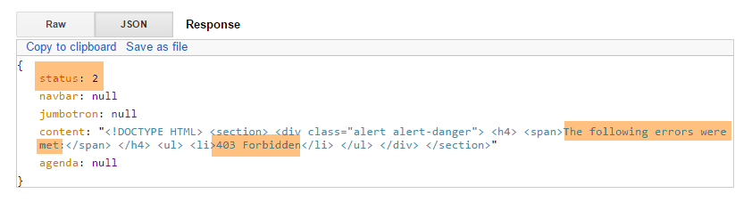 |
8.6.7.7. The [/getAgenda] action
We request the [getAgenda] action with the following posted value:
{"user":{"login":"admin","passwd":"admin"},"lang":"fr","date":"2015-01-28", "doctorId":1, "slotId":2, "clientId":4, "appointmentId":93}
The result obtained is as follows:
 |
We try again with a date earlier than today:
 |
We start again with a non-existent doctor:
{"user":{"login":"admin","passwd":"admin"},"lang":"fr","date":"2015-01-28", "doctorId":11, "slotId":2, "clientId":4, "appointmentId":93}
The result is as follows:
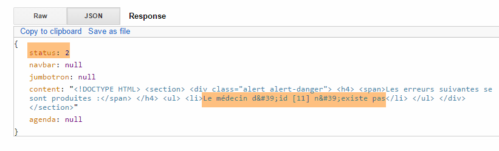 |
8.6.7.8. The action [/getNavbarRunJumbotronAccueil]
We request the action [getNavbarRunJumbotronAccueil] with the following posted value:
{"user":{"login":"admin","passwd":"admin"},"lang":"en","date":"2015-01-28", "doctorId":1, "slotId":2, "clientId":4, "appointmentId":93}
The result is as follows:
 |
The same applies to an unknown user:
 |
8.6.7.9. The action [/getNavbarRunJumbotronHomeCalendar]
We request the action [getNavbarRunJumbotronHomeCalendar] with the following posted value:
{"user":{"login":"admin","passwd":"admin"},"lang":"fr","date":"2015-01-28", "doctorId":1, "slotId":2, "clientId":4, "appointmentId":93}
The result is as follows:
 |
We enter a doctor who does not exist:
 |
8.6.7.10. The [/deleteAppointment] action
We request the [deleteAppointment] action with the following posted value:
{"user":{"login":"admin","passwd":"admin"},"lang":"en","date":"2015-01-28", "doctorId":1, "slotId":2, "clientId":4, "appointmentId":93}
Appointment #93 does not exist. The result obtained is as follows:
 |
With an existing appointment:
 |
We can verify in the database that the appointment has indeed been deleted. The new calendar is returned.
8.6.7.11. The [/validateAppointment] action
We request the [validateAppointment] action with the following posted value:
{"user":{"login":"admin","passwd":"admin"},"lang":"fr","date":"2015-01-28", "doctorId":1, "slotId":2, "clientId":4, "appointmentId":93}
The result is as follows:
 |
We can verify in the database that the appointment was successfully created. The new calendar has been returned.
We do the same thing with a non-existent slot number:
 |
We do the same with a non-existent client ID:
 |
8.6.8. Step 5: Writing the JavaScript client
Let’s return to the architecture of server [Web1]:
 |
The client [2] of server [Web1] is a JavaScript client of the SPV (Single-Page Application) type:
- The client requests the boot page from a web server (not necessarily [Web1]);
- it requests the following pages from server [Web1] via Ajax calls;
To build this client, we will use the [Webstorm] tool (see section 9.8). I found this tool more practical than STS. Its main advantage is that it offers code auto-completion as well as some refactoring options. This helps prevent many errors.
8.6.8.1. The JS Project
The JS project has the following directory structure:
 |
- in [1], the JS client as a whole. [boot.html] is the startup page. This will be the only page loaded by the browser;
- in [2], the style sheets for the Bootstrap components;
- in [3], the few images used by the application;
 |
- in [4], the JS scripts. This is where our work takes place;
- in [5], the JS libraries used: mainly jQuery, and those for the Bootstrap components;
8.6.8.2. The code architecture
The code has been divided into three layers:
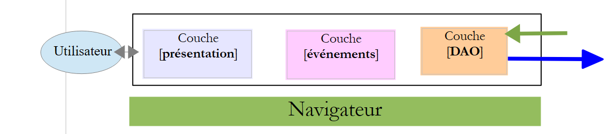 |
- the [presentation] layer contains the page initialization functions [boot.xml] as well as those for the various Bootstrap components. It is implemented by the file [ui.js];
- the [events] layer contains all the event handlers for the [presentation] layer. It is implemented by the [evts.js] file;
- the [DAO] layer makes HTTP requests to the [Web1] server. It is implemented by the [dao.js] file;
8.6.8.3. The [presentation] layer
 |
The [presentation] layer is implemented by the following [ui.js] file:
//the [presentation] layer
var ui = {
// global variables;
"agenda": "",
"res": "",
"language": "",
"serviceUrl": "http://localhost:8081",
"page": "login",
"appointmentDate": "",
"doctorId": "",
"user": {},
"login": {},
"exceptionTitle": {},
"calendar_info": {},
"error": "",
"slotId": "",
"done": "",
// view components
"body": "",
"navbar": "",
"jumbotron": "",
"content": "",
"exception": "",
"exception_text": "",
"exception_title": "",
"loading": ""
};
// the events layer
var evts = {};
// the [DAO] layer
var dao = {};
// ------------ document ready
$(document).ready(function () {
// document initialization
console.log("document.ready");
// page components
ui.navbar = $("#navbar");
ui.jumbotron = $("#jumbotron");
ui.content = $("#content");
ui.error = $("#error");
ui.exception = $("#exception");
ui.exception_text = $("#exception-text");
ui.exception_title = $("#exception-title");
// we store the login page so we can retrieve it
ui.login.lang = ui.language;
ui.login.navbar = ui.navbar.html();
ui.login.jumbotron = ui.jumbotron.html();
ui.login.content = ui.content.html();
// Service URL
$("#urlService").val(ui.urlService);
});
// ------------------------ Bootstrap component initialization functions
ui.initNavBarStart = function () {
...
};
ui.initNavBarRun = function () {
...
};
ui.initChooseDoctorToday = function () {
...
};
ui.updateCalendar = function (renew) {
...
};
// displays the selected day
ui.displayDay = function () {
...
};
ui.initAgenda = function () {
...
};
ui.initResa = function () {
...
};
- To isolate the layers from one another, it was decided to place them in three objects:
- [ui] for the [presentation] layer (lines 2–27),
- [evts] for the event management layer (line 29),
- [dao] for the [DAO] layer (line 31);
This separation of layers into three objects helps avoid a number of variable and function name conflicts. Each layer uses variables and functions prefixed with the object encapsulating the layer.
- lines 38–44: we store the fields that will always be present regardless of the views displayed. This avoids repetitive and unnecessary jQuery searches;
- lines 46–49: the boot page is stored locally so it can be restored when the user logs out and has not changed the language;
- lines 54–83: Bootstrap component initialization functions. These were all covered in the discussion of Bootstrap components in section 8.6.4;
8.6.8.4. Utility functions of the [events] layer
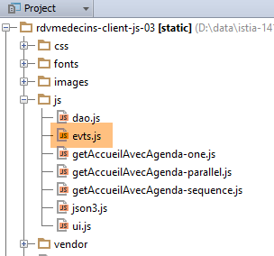 |
The event handlers have been placed in the [evts.js] file. Several functions are used regularly by the event handlers. We present them now:
// start waiting
evts.beginWaiting = function () {
// start waiting
ui.loading = $("#loading");
ui.loading.show();
ui.exception.hide();
ui.error.hide();
evts.inProgress = true;
};
// end of wait
evts.stopWaiting = function () {
// end waiting
evts.inProgress = false;
ui.loading = $("#loading");
ui.loading.hide();
};
// display result
evts.showResult = function (result) {
// display the received data
var data = result.data;
// analyze the status
switch (result.status) {
case 1:
// error?
if (data.status == 2) {
ui.error.html(data.content);
ui.error.show();
} else {
if (data.navbar) {
ui.navbar.html(data.navbar);
}
if (data.jumbotron) {
ui.jumbotron.html(data.jumbotron);
}
if (data.content) {
ui.content.html(data.content)
}
if (data.agenda) {
ui.agenda = $("#agenda");
ui.resa = $("#resa");
}
}
break;
case 2:
// display error
evts.showException(data);
break;
}
};
// ------------ miscellaneous functions
evts.showException = function (data) {
// display error
ui.exception.show();
ui.exception_text.html(data);
ui.exception_title.text(ui.exceptionTitle[ui.language]);
};
- line 2: the [evts.beginwaiting] function is called before any asynchronous [DAO] action;
- lines 4-5: the animated image of the wait is displayed;
- lines 6-7: the error and exception display area is hidden (they are not the same);
- line 8: we note that an asynchronous task is in progress;
- line 12: the [evts.stopwaiting] function is called after an asynchronous [DAO] action has returned its result;
- line 14: we note that the asynchronous operation is complete;
- line 15: the animated waiting image is hidden;
- line 20: the [evts.showResult] function displays the result [result] of an asynchronous [DAO] action. The result is a JS object of the following form: {'status':status,'data':data,'sendMeBack':sendMeBack}.
- lines 47–50: used if [result.status == 2]. This occurs when the [Web1] server sends a response with an HTTP error header (e.g., 403 Forbidden). In this case, [data] is the JSON string sent by the server to indicate the error;
- line 25: case where a valid response was received from the [Web1] server. The [data] field then contains the server’s response: {'status':status,'navbar':navbar,'jumbotron':jumbotron,'agenda':agenda,'content':content};
- line 27: case where the server [Web1] sent an error response {'status':2,'navbar':null,'jumbotron':null,'agenda':null,'content':errors};
- lines 28–29: the [errors] view is displayed;
- lines 31-33: optional display of the navigation bar;
- lines 34-36: optional display of the jumbotron;
- lines 37-39: the [data.content] field may be displayed. Depending on the case, this represents one of the views [home, calendar];
- lines 40-43: if the calendar has been regenerated, certain references to its components are retrieved so they don’t have to be looked up every time they’re needed;
- line 54: the [evts.showException] function displays the exception text contained in its [data] parameter;
- lines 57-58: the exception text is displayed;
- line 58: the exception title depends on the current language;
The [evts.js] file contains over 300 lines of code, which I won’t comment on in their entirety. I’ll simply highlight a few examples to illustrate the purpose of this layer.
8.6.8.5. User login

User login is handled by the following function:
// ------------------------ login
evts.connect = function () {
// retrieve the values to be posted
var login = $("#login").val().trim();
var passwd = $("#passwd").val().trim();
// set the server URL
ui.urlService = $("#urlService").val().trim();
dao.setUrlService(ui.urlService);
// request parameters
var post = {
"user": {
"login": login,
"passwd": passwd
},
"lang": ui.language
};
var sendMeBack = {
"user": {
"login": login,
"passwd": passwd
},
"caller": evts.connectDone
};
// make the request
evts.execute([{
"name": "home-without-calendar",
"post": post,
"sendMeBack": sendMeBack
}]);
};
- lines 4-5: retrieve the user's login and password;
- lines 7-8: retrieve the URL of the [Web1] service. It is stored in both the [ui] layer and the [dao] layer;
- lines 10-16: the value to be posted: the current language and the user attempting to log in;
- lines 17–23: the [sendMeBack] object is passed to the [DAO] function that will be called, and this function must return it to the function on line 22. Here, the [sendMeBack] object encapsulates the user attempting to log in;
- lines 25–29: the [evts.execute] function is capable of executing a sequence of asynchronous actions. Here, we pass a list consisting of a single action. Its fields are as follows:
- [name]: the name of the asynchronous action to be executed,
- [post]: the value to be posted to the [Web1] server,
- [sendMeBack]: the value that the asynchronous action must return along with its result;
Before going into detail about the [evts.execute] function, let’s look at the [evts.connecterDone] function on line 22. This is the function to which the called asynchronous [DAO] function must return its result:
evts.connecterDone = function (result) {
// display result
evts.showResult(result);
// connection successful?
if (result.status == 1 && result.data.status == 1) {
// page
ui.page = "home-without-calendar";
// note the user
ui.user = result.sendMeBack.user;
}
};
- line 3: the result returned by the [Web1] server is displayed;
- line 5: if this result contains no errors, then we store the type of the new page (line 7) as well as the authenticated user (line 9);
The [evts.execute] function executes a sequence of asynchronous actions:
// execution of a sequence of actions
evts.execute = function (actions) {
// work in progress?
if (evts.workInProgress) {
// do nothing
return;
}
// waiting
evts.beginWaiting();
// execute actions
dao.doActions(actions, evts.stopWaiting);
};
- line 2: the [actions] parameter is a list of asynchronous actions to be executed;
- lines 4–7: execution is only accepted if no other action is already in progress;
- line 9: the wait is initiated;
- line 11: the [DAO] layer is asked to execute the sequence of actions. The second parameter is the name of the function to be executed once all actions in the sequence have returned their results;
We will not go into detail about the [dao.doActions] function at this time. We will examine another event.
8.6.8.6. Language change

The language change is handled by the following function:
// ------------------------ language change
evts.setLang = function (lang) {
// language change?
if (lang == ui.language) {
// do nothing
return;
}
// new language
ui.language = lang;
// Which page needs to be translated?
switch (ui.page) {
case "login":
evts.getLogin();
break;
case "home-without-calendar":
evts.getHomeWithoutCalendar();
break;
case "home-with-calendar":
evts.getHomePageWithCalendar(ui);
break;
}
};
- line 2: the [lang] parameter is the new language: 'fr' or 'en';
- lines 4–7: if the new language is the current one, do nothing;
- line 9: the new language is stored;
- lines 12–20: if the language has changed, the page currently displayed by the browser must be reloaded. There are three possible pages:
- the one called [login], where the page displayed is the login page,
- the one called [home-without-calendar], which is the page displayed immediately after successful authentication,
- the one called [home-with-calendar], which is the page displayed as soon as the first calendar has been displayed. It then remains on the screen until the user logs out;
We will address the case of the [home-with-calendar] page. There are three versions of this function:
 |
- the [getAccueilAvecAgenda-one] version executes a single asynchronous action;
- the [getAccueilAvecAgenda-parallel] version executes four asynchronous actions in parallel;
- the [getAccueilAvecAgenda-sequence] version executes four asynchronous actions one after the other;
8.6.8.7. The [getAccueilAvecAgenda-one] function
This is the following function:
// -------------------------- getHomeWithAgenda
evts.getHomeWithCalendar=function(ui) {
// request parameters
var post = {
"user": ui.user,
"lang": ui.language,
"doctorId": ui.doctorId,
"day": ui.agendaDay
};
var sendMeBack = {
"caller": evts.getAccueilAvecAgendaDone
};
// request
evts.execute([{
"name": "welcome-with-calendar",
"post": post,
"sendMeBack": sendMeBack
}]);
};
- lines 4-9: the value to be posted encapsulates the logged-in user, the desired language, the doctor’s ID whose schedule is wanted, and the day of the desired schedule;
- lines 10–12: the [sendMeBack] object is the object that will be returned to the function on line 11. Here, it contains no information;
- lines 14–18: execution of a sequence of asynchronous actions, specifically the one named [welcome-with-calendar] (line 15);
- line 11: the function executed when the asynchronous action [welcome-with-calendar] returns its result;
The function [evts.getAccueilAvecAgendaDone] on line 11 displays the result of the asynchronous function named [accueil-avec-agenda]:
evts.getAccueilAvecAgendaDone = function (result) {
// display result
evts.showResult(result);
// new page?
if (result.status == 1 && result.data.status == 1) {
ui.page = "home-with-calendar";
}
};
- line 1: [result] is the result of the asynchronous function named [home-with-calendar];
- line 3: this result is displayed;
- line 5: if it is a result without errors, the new page is loaded (line 6);
8.6.8.8. The function [getHomeWithCalendar-parallel]
This is the following function:
// -------------------------- getHomeWithCalendar
evts.getHomeWithCalendar=function(ui) {
// actions [navbar-run, jumbotron, home, calendar] in //
// navbar-run
var navbarRun = {
"name": "navbar-run"
};
navbarRun.post = {
"lang": ui.language
};
navbarRun.sendMeBack = {
"caller": evts.showResult
};
// jumbotron
var jumbotron = {
"name": "jumbotron"
};
jumbotron.post = {
"lang": ui.language
};
jumbotron.sendMeBack = {
"caller": evts.showResult
};
// home
var home = {
"name": "home"
};
home.post = {
"lang": ui.language,
"user": ui.user
};
home.sendMeBack = {
"caller": evts.showResult
};
// calendar
var calendar = {
"name": "calendar"
};
calendar.post = {
"user": ui.user,
"lang": ui.language,
"doctorId": ui.doctorId,
"day": ui.agendaDay
};
agenda.sendMeBack = {
'doctorId': ui.doctorId,
'day': ui.agendaDay,
"caller": evts.getAgendaDone
};
// execute actions in //
evts.execute([navbarRun, jumbotron, home, agenda])
};
- line 51: this time, four asynchronous actions are executed. They will be executed in parallel;
- lines 5–13: definition of the [navbarRun] action, which retrieves the navigation bar [navbar-run];
- line 12: the function to execute once the asynchronous action [navbarRun] has returned its result;
- lines 15–23: definition of the [jumbotron] action, which retrieves the [jumbotron] view;
- line 22: the function to execute when the asynchronous action [jumbotron] returns its result;
- lines 25–34: definition of the [home] action, which retrieves the [home] view;
- line 33: the function to be executed when the asynchronous action [home] returns its result;
- lines 36–49: definition of the [agenda] action that retrieves the [jumbotron] view;
- line 48: the function to execute when the asynchronous action [agenda] returns its result;
8.6.8.9. The function [getHomeWithAgenda-sequence]
This is the following function:
// -------------------------- getHomeWithAgenda
evts.getHomeWithCalendar = function(ui) {
// actions [navbar-run, jumbotron, home, agenda] in order
// calendar
var calendar = {
"name": "calendar"
};
calendar.post = {
"user" : ui.user,
"lang": ui.language,
"doctorId": ui.doctorId,
"day" : ui.calendarDay
};
agenda.sendMeBack = {
'doctorId': ui.doctorId,
'day': ui.agendaDay,
"caller": evts.getAgendaDone
};
// home
var home = {
"name": "home"
};
home.post = {
"lang": ui.language,
"user": ui.user
};
home.sendMeBack = {
"caller" : evts.showResult,
"next": calendar
};
// jumbotron
var jumbotron = {
"name": "jumbotron"
};
jumbotron.post = {
"lang": ui.language
};
jumbotron.sendMeBack = {
"caller" : evts.showResult,
"next" : home
};
// navbar-run
var navbarRun = {
"name": "navbar-run"
};
navbarRun.post = {
"lang" : ui.language
};
navbarRun.sendMeBack = {
"caller": evts.showResult,
"next": jumbotron
};
// execute actions in sequence
evts.execute([ navbarRun ])
};
- line 54: the [navbarRun] action is executed. When it is finished, we move on to the next one: [jumbotron], line 51. This action is then executed in turn. When it is finished, we move on to the next one: [home], line 40. This one is executed in turn. When it is finished, we move on to the next one: [agenda], line 29. This is executed in turn. When it is finished, we stop because the [agenda] action has no subsequent action.
8.6.8.10. The [DAO] layer
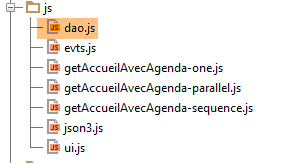 |
The [dao.js] file contains all the functions of the [DAO] layer. We will introduce these gradually:
// URLs exposed by the server
dao.urls = {
"login": "/getLogin",
"home": "/getHome",
"jumbotron": "/getJumbotron",
"calendar": "/getCalendar",
"deleteAppointment": "/deleteAppointment",
"confirmAppointment": "/confirmAppointment",
"navbar-start": "/getNavbarStart",
"navbar-run": "/getNavbarRun",
"home-without-calendar": "/getNavbarRunJumbotronHome",
"home-with-calendar": "/getNavbarRunJumbotronHomeCalendar"
};
// --------------- interface
// server URL
dao.setUrlService = function (urlService) {
dao.urlService = urlService;
};
- lines 16–18: the function that sets the service URL [Web1];
- lines 2-13: the dictionary linking the name of an asynchronous action to the [Web1] server URL to be queried;
// ------------------ generic action management
// execution of a sequence of asynchronous actions
dao.doActions = function (actions, done) {
// processing of actions
dao.actionsCount = actions.length;
dao.actionIndex = 0;
for (var i = 0; i < dao.actionsCount; i++) {
// asynchronous DAO request
var deferred = $.Deferred();
deferred.done(dao.actionDone);
dao.doAction(deferred, actions[i], done);
}
};
- line 3: the [dao.doActions] function executes a sequence of asynchronous actions [actions]. The [done] parameter is the function to be executed once all actions have returned their results;
- lines 7–12: the asynchronous actions are executed in parallel. However, if one of them has a successor, that successor is executed at the end of the preceding action;
- line 9: a [Deferred] object in the [pending] state;
- Line 10: When this object enters the [resolved] state, the [dao.actionDone] function will be executed;
- line 11: action #i in the list is executed asynchronously. The [done] parameter from line 3 is passed as an argument;
The [dao.actionDone] function, which is executed at the end of each asynchronous action, is as follows:
// a result has been received
dao.actionDone = function (result) {
// caller?
var sendMeBack = result.sendMeBack;
if (sendMeBack && sendMeBack.caller) {
sendMeBack.caller(result);
}
// next?
if (sendMeBack && sendMeBack.next) {
// asynchronous DAO request
var deferred = $.Deferred();
deferred.done(dao.actionDone);
dao.doAction(deferred, sendMeBack.next, sendMeBack.done);
}
// Done?
dao.actionIndex++;
if (dao.actionIndex == dao.actionsCount) {
// done?
if (sendMeBack && sendMeBack.done) {
sendMeBack.done(result);
}
}
};
- line 2: the function [dao.actionDone] receives the result [result] from one of the asynchronous actions in the list of actions to be executed;
- lines 4–7: if the completed asynchronous action specified a function to which the result should be returned, that function is called;
- lines 9–14: if the completed asynchronous action has a successor, then that action is executed in turn;
- line 16: an action is completed. The counter for completed actions is incremented. An action that has an indeterminate number of subsequent actions counts as one action;
- lines 19–21: if a [done] function was initially specified to be executed when all actions in the sequence have returned their results, then this function is now executed;
The [dao.doAction] method executes an asynchronous action:
// executing an action
dao.doAction = function (deferred, action, done) {
// done function to be embedded in the action
if (action.sendMeBack) {
action.sendMeBack.done = done;
} else {
action.sendMeBack = {
"done": done
};
}
// execute action
dao.executePost(deferred, action.sendMeBack, dao.urls[action.name], action.post)
};
- Lines 4–10: As we just saw, the function that will handle the result of the asynchronous action to be executed must have access to the [done] function. To do this, we place the [done] function in the [sendMeBack] object, which will be part of the result of the asynchronous operation;
- line 12: We execute the [dao.executePost] function, which makes an HTTP request to the [Web1] server. The target URL is the URL associated with the name of the action to be executed;
The [dao.executePost] function executes an HTTP request:
// HTTP request
dao.executePost = function (deferred, sendMeBack, url, post) {
// we make an Ajax call manually
$.ajax({
headers: {
'Accept': 'application/json',
'Content-Type': 'application/json'
},
url: dao.urlService + url,
type: 'POST',
data: JSON3.stringify(post),
dataType: 'json',
success: function (data) {
// return the result
deferred.resolve({
"status": 1,
"data": data,
"sendMeBack": sendMeBack
});
},
error: function (jqXHR, textStatus, errorThrown) {
var data;
if (jqXHR.responseText) {
data = jqXHR.responseText;
} else {
data = textStatus;
}
// resolve the error
deferred.resolve({
"status": 2,
"data": data,
"sendMeBack": sendMeBack
});
}
});
};
We have already encountered and discussed this function. Note simply in line 9 that the target URL is the concatenation of the server URL [Web1] with the URL associated with the action name.
8.6.8.11. The boot page
 |

The boot page [boot.html] displays the view shown above. It is the only page loaded directly by the browser. The others are retrieved via Ajax calls. Its code is as follows:
<!DOCTYPE HTML>
<html xmlns="http://www.w3.org/1999/xhtml" xmlns:th="http://www.thymeleaf.org"
xmlns:layout="http://www.ultraq.net.nz/thymeleaf/layout">
<head>
<meta name="viewport" content="width=device-width"/>
<meta http-equiv="Content-Type" content="text/html; charset=utf-8"/>
<title>RdvMedecins</title>
<!-- Bootstrap core CSS -->
<link rel="stylesheet" href="css/bootstrap-3.1.1-min.css"/>
<link rel="stylesheet" type="text/css" href="css/bootstrap-select.min.css"/>
<link rel="stylesheet" type="text/css" href="css/datepicker3.css"/>
<link rel="stylesheet" type="text/css" href="css/footable.core.min.css"/>
<!-- Custom styles for this template -->
<link rel="stylesheet" type="text/css" href="css/rdvmedecins.css"/>
<!-- Bootstrap core JavaScript ================================================== -->
<script type="text/javascript" src="vendor/jquery-2.1.1.min.js"></script>
<script type="text/javascript" src="vendor/bootstrap.js"></script>
<script type="text/javascript" src="vendor/bootstrap-select.js"></script>
<script type="text/javascript" src="vendor/moment-with-locales.js"></script>
<script type="text/javascript" src="vendor/bootstrap-datepicker.js"></script>
<script type="text/javascript" src="vendor/bootstrap-datepicker.fr.js"></script>
<script type="text/javascript" src="vendor/footable.js"></script>
<!-- user scripts -->
<script type="text/javascript" src="js/json3.js"></script>
<script type="text/javascript" src="js/ui.js"></script>
<script type="text/javascript" src="js/evts.js"></script>
<script type="text/javascript" src="js/getHomeWithCalendar-sequence.js"></script>
<script type="text/javascript" src="js/dao.js"></script>
</head>
<body id="body">
<div id="navbar">
<div class="navbar navbar-inverse navbar-fixed-top" role="navigation">
<div class="container">
<div class="navbar-header">
<button type="button" class="navbar-toggle" data-toggle="collapse" data-target=".navbar-collapse">
<span class="sr-only">Toggle navigation</span> <span class="icon-bar"></span> <span class="icon-bar"></span>
<span class="icon-bar"></span>
</button>
<a class="navbar-brand" href="#">RdvMedecins</a>
</div>
<div class="navbar-collapse collapse">
<img id="loading" src="images/loading.gif" alt="waiting..." style="display: none"/>
<!-- login form -->
<div class="navbar-form navbar-right" role="form" id="formulaire">
<div class="form-group">
<input type="text" placeholder="Server URL" class="form-control" id="urlService"/>
</div>
<div class="form-group">
<input type="text" placeholder="Username" class="form-control" id="login"/>
</div>
<div class="form-group">
<input type="password" placeholder="Password" class="form-control" id="passwd"/>
</div>
<button type="button" class="btn btn-success" onclick="javascript:evts.connect()">Log In</button>
<!-- languages -->
<div class="btn-group">
<button type="button" class="btn btn-danger">Language</button>
<button type="button" class="btn btn-danger dropdown-toggle" data-toggle="dropdown">
<span class="caret"></span> <span class="sr-only">Toggle Dropdown</span>
</button>
<ul class="dropdown-menu" role="menu">
<li><a href="javascript:evts.setLang('fr')">French</a></li>
<li><a href="javascript:evts.setLang('en')">English</a></li>
</ul>
</div>
</div>
</div>
</div>
</div>
</div>
<div class="container">
<!-- Bootstrap Jumbotron -->
<div id="jumbotron">
<div class="jumbotron">
<div class="row">
<div class="col-md-2">
<img src="images/caduceus.jpg" alt="RvMedecins"/>
</div>
<div class="col-md-10">
<h1>
Medical Practice<br/>Les Médecins associés
</h1>
</div>
</div>
</div>
</div>
<!-- error messages -->
<div id="error"></div>
<div id="exception" class="alert alert-danger" style="display: none">
<h3 id="exception-title"></h3>
<span id="exception-text"></span>
</div>
<!-- content -->
<div id="content">
<div class="alert alert-info">Sign in to access the application</div>
</div>
</div>
<!-- init page -->
<script>
// initialize the page
ui.language = 'en';
ui.exceptionTitle['fr'] = "The following server error occurred:";
ui.exceptionTitle['en'] = "The following server error occurred:";
ui.initNavBarStart();
</script>
</body>
</html>
- We have already encountered this type of page in the chapter on Bootstrap (section 8.6.4);
- lines 99–105: initialization of certain elements of the [presentation] layer;
- line 27: the script [getAccueilAvecAgenda-sequence.js] is used. By changing the script on this line, we get three different behaviors for retrieving the [accueil-avec-agenda] page:
- [getAccueilAvecAgenda-one.js] retrieves the page with a single HTTP request,
- [getAccueilAvecAgenda-parallel.js] retrieves the page with four simultaneous HTTP requests,
- [getAccueilAvecAgenda-sequence.js] retrieves the page with four successive HTTP requests;
8.6.8.12. Tests
There are different ways to run tests. Here, we will use the [Webstorm] tool:
 |
- in [1] we open a project. We simply select the folder [2] containing the static directory structure (HTML, CSS, JS) of the site to be tested;
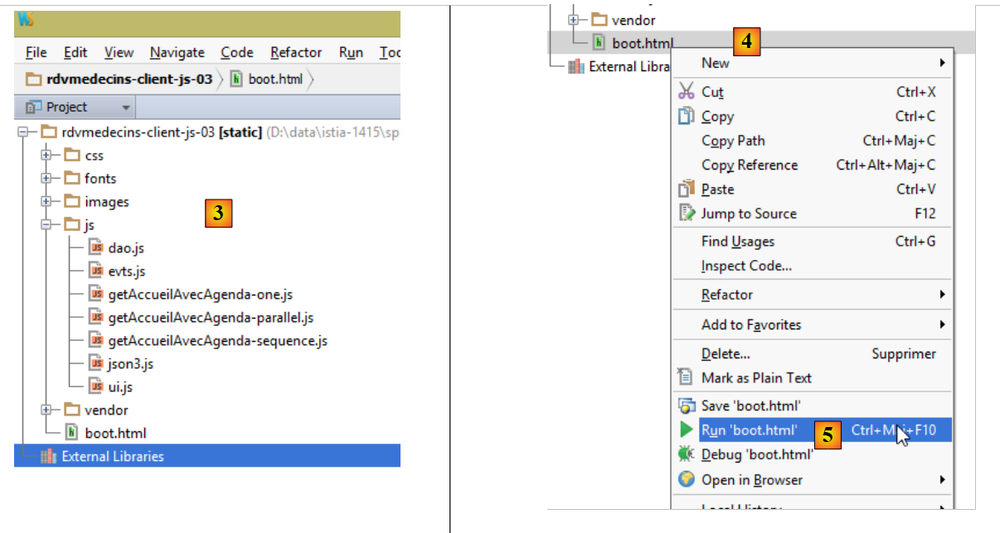 |
- in [3], the static site;
- In [4-5], load the [boot.html] page;
 |
- in [5], we see that a server embedded by [Webstorm] has served the [boot.html] page from port [63342]. This is an important point to understand because it means that the scripts on the [boot.html] page at will make cross-domain requests to the [Web1] server, which is running on [localhost:8081]. The browser that loaded [boot.html] knows it loaded it from [localhost:63342]. It will therefore not allow this page to make calls to the site [localhost:8081] because it is not the same port. It will therefore enforce the cross-domain rules described in section 8.4.14. For this reason, the [Web1] application must be configured to accept these cross-domain requests. This is configured in the [AppConfig] file of the Spring/Thymeleaf server:
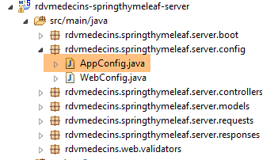 |
@EnableAutoConfiguration
@ComponentScan(basePackages = { "rdvmedecins.springthymeleaf.server" })
@Import({ WebConfig.class, DaoConfig.class })
public class AppConfig {
// admin / admin
private final String USER_INIT = "admin";
private final String MDP_USER_INIT = "admin";
// web service root / json
private final String WEBJSON_ROOT = "http://localhost:8080";
// timeout in milliseconds
private final int TIMEOUT = 5000;
// CORS
private final boolean CORS_ALLOWED = true;
...
We leave it to the reader to test the JS client. It should be able to reproduce the functionality described in section 8.6.3.
Once the JavaScript client has been validated, it can be deployed to the server's [Web1] folder to avoid having to allow cross-domain requests:
 |
Above, we copied the tested site into the [src/main/resources/static] folder. Then we can request the URL [http://localhost:8081/boot.html]:

Now we no longer need cross-domain requests, and we can write the following in the [AppConfig] configuration file of the [Web1] server:
// CORS
private final boolean CORS_ALLOWED=false;
The application above will continue to work. If we go back to the [WebStorm] application, it no longer works:


If we go to the developer console (Ctrl-Shift-I), we see the cause of the error:

This is an unauthorized cross-domain request error.
8.6.8.13. Conclusion
We have implemented the following JS architecture:
 |
- the layers are fairly clearly separated;
- we have a Single-Page Application (SPA). It is this feature that will now allow us to generate a native app for various mobile platforms (Android, iOS, Windows Phone);
- we have created a model capable of executing asynchronous actions in parallel, sequentially, or a mix of both;
8.6.9. Step 6: Generating a native app for Android
The [Phonegap] [http://phonegap.com/] tool allows you to produce an executable for mobile devices (Android, iOS, Windows 8, etc.) from an HTML/JS/CSS application. There are different ways to achieve this. We’ll use the simplest method: an online tool available on the Phonegap website [http://build.phonegap.com/apps]. This tool will upload the ZIP file of the static site to be converted. The boot page must be named [index.html]. So we rename the page [boot.html] to [index.html]:
 |
then we zip the folder, in this case [rdvmedecins-client-js-03]. Next, we go to the Phonegap website [http://build.phonegap.com/apps]:
 |
- Before [1], you may need to create an account;
- in [1], we get started;
- at [2], we choose a free plan that allows only one Phonegap app;
 |
- in [3], we upload the zipped app [4];
 |
- in [5], name the app;
- in [6], build it. This may take 1 minute. Wait until the icons for the various mobile platforms indicate that the build is complete;
 |
- only the Android [7] and Windows [8] binaries have been generated;
- Click [7] to download the Android binary;
 |
- in [9], the downloaded [apk] binary;
Launch a [GenyMotion] emulator for an Android tablet (see section 9.9):
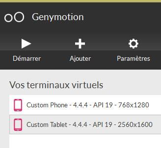 |
Above, we launch a tablet emulator with Android API 19. Once the emulator is launched,
- unlock it by dragging the lock (if present) to the side and then releasing it;
- Using the mouse, drag the [PGBuildApp-debug.apk] file you downloaded and drop it onto the emulator. It will then be installed and run;
 |
You need to change the URL to [1]. To do this, in a command prompt window, type the command [ipconfig] (line 1 below), which will display the various IP addresses of your machine:
C:\Users\Serge Tahé>ipconfig
Windows IP Configuration
Wireless Network Adapter Local Area Connection* 15:
Media status. . . . . . . . . . . . : Media disconnected
Connection-specific DNS suffix. . . :
Ethernet adapter Local Area Connection :
Connection-specific DNS suffix. . . : ad.univ-angers.fr
Local link IPv6 address. . . . .: fe80::698b:455a:925:6b13%4
IPv4 address. . . . . . . . . . . . . .: 172.19.81.34
Subnet mask. . . . . . . . . . . . . .: 255.255.0.0
Default gateway. . . . . . . . . : 172.19.0.254
Wi-Fi wireless network adapter:
Media status. . . . . . . . . . . . : Media disconnected
Connection-specific DNS suffix. . . :
...
Note either the Wi-Fi IP address (lines 6–9) or the local network IP address (lines 11–17). Then use this IP address in the web server URL:
 |
Once this is done, connect to the web service:
 |
Test the application on the emulator. It should work. On the server side, you may or may not allow CORS headers in the [ApplicationModel] class:
// CORS
private final boolean CORS_ALLOWED=false;
This does not matter for the Android app. It does not run in a browser. The requirement for CORS headers comes from the browser, not the server.
8.6.10. Conclusion of the case study
We developed the following architecture:
 |
It is a complex 3-tier architecture. It was designed to reuse the [Web2] layer, which was the server layer of the [AngularJS-Spring MVC] application from the [AngularJS / Spring 4 Tutorial] document at the URL [http://tahe.developpez.com/angularjs-spring4/]. This is the sole reason we have a 3-tier architecture. Whereas in the [AngularJS-Spring MVC] application, the client of [Web2] was an [AngularJS] client, here the client of [Web2] is a 2-tier architecture [jQuery] / [Spring MVC / Thymeleaf]. We have increased the number of layers, so we will lose some performance.
The application discussed here was developed over time in three different documents:
- [Introduction to JSF2, PrimeFaces, and PrimeFaces Mobile] at the URL [http://tahe.developpez.com/java/primefaces/]. The case study was then developed using the JSF2 / PrimeFaces frameworks. PrimeFaces is a library of AJAX-enabled components that eliminates the need to write JavaScript. The application developed at that time was less complex than the one studied here. It had a classic web version for computers and a mobile version for phones;
- [AngularJS / Spring 4 Tutorial] at the URL [http://tahe.developpez.com/angularjs-spring4/]. The application developed at that time had the same features as the one discussed in this document. The application had also been ported to Android;
- this document;
From this work, the following points stand out to me:
- the [Primefaces] application was by far the simplest to write, and its mobile web version proved to be high-performing. It does not require any knowledge of JavaScript. It is not possible to port it natively to the operating systems of various mobile devices, but is that necessary? It seems difficult to change the application’s style. We are, in fact, working with Primefaces style sheets. This may be a drawback;
- The [AngularJS-Spring MVC] application was complex to write. The [AngularJS] framework seemed quite difficult to grasp once you want to master it. The [Angular client] / [web service / JSON implemented by Spring MVC] architecture is particularly clean and high-performing. This architecture is replicable for any web application. It is the architecture that seems most promising to me because it involves different skill sets on the client and server sides (JS+HTML+CSS on the client side, Java or something else on the server side), which allows the client and server to be developed in parallel;
- For the application developed in this document using a 3-tier architecture [jQuery client] / [Web1 server / Spring MVC / Thymeleaf] / [Web2 server / Spring MVC], some may find the [jQuery+Spring MVC+Thymeleaf] technology easier to grasp than that of [AngularJS]. The [DAO] layer of the JavaScript client that we wrote is reusable in other applications;